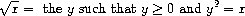
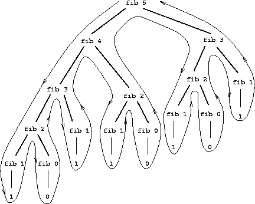
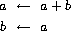
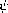
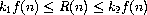
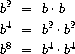
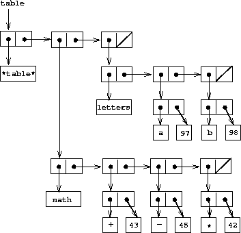
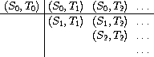
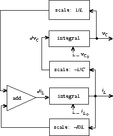

Introduction
Educators, generals, dieticians, psychologists, and parents program. Armies, students, and some societies are programmed. An assault on large problems employs a succession of programs, most of which spring into existence en route. These programs are rife with issues that appear to be particular to the problem at hand. To appreciate programming as an intellectual activity in its own right you must turn to computer programming; you must read and write computer programs -- many of them. It doesn't matter much what the programs are about or what applications they serve. What does matter is how well they perform and how smoothly they fit with other programs in the creation of still greater programs. The programmer must seek both perfection of part and adequacy of collection. In this book the use of ``program'' is focused on the creation, execution, and study of programs written in a dialect of Lisp for execution on a digital computer. Using Lisp we restrict or limit not what we may program, but only the notation for our program descriptions.
Our traffic with the subject matter of this book involves us with three foci of phenomena: the human mind, collections of computer programs, and the computer. Every computer program is a model, hatched in the mind, of a real or mental process. These processes, arising from human experience and thought, are huge in number, intricate in detail, and at any time only partially understood. They are modeled to our permanent satisfaction rarely by our computer programs. Thus even though our programs are carefully handcrafted discrete collections of symbols, mosaics of interlocking functions, they continually evolve: we change them as our perception of the model deepens, enlarges, generalizes until the model ultimately attains a metastable place within still another model with which we struggle. The source of the exhilaration associated with computer programming is the continual unfolding within the mind and on the computer of mechanisms expressed as programs and the explosion of perception they generate. If art interprets our dreams, the computer executes them in the guise of programs!
For all its power, the computer is a harsh taskmaster. Its programs must be correct, and what we wish to say must be said accurately in every detail. As in every other symbolic activity, we become convinced of program truth through argument. Lisp itself can be assigned a semantics (another model, by the way), and if a program's function can be specified, say, in the predicate calculus, the proof methods of logic can be used to make an acceptable correctness argument. Unfortunately, as programs get large and complicated, as they almost always do, the adequacy, consistency, and correctness of the specifications themselves become open to doubt, so that complete formal arguments of correctness seldom accompany large programs. Since large programs grow from small ones, it is crucial that we develop an arsenal of standard program structures of whose correctness we have become sure -- we call them idioms -- and learn to combine them into larger structures using organizational techniques of proven value. These techniques are treated at length in this book, and understanding them is essential to participation in the Promethean enterprise called programming. More than anything else, the uncovering and mastery of powerful organizational techniques accelerates our ability to create large, significant programs. Conversely, since writing large programs is very taxing, we are stimulated to invent new methods of reducing the mass of function and detail to be fitted into large programs.
Unlike programs, computers must obey the laws of physics. If they wish
to perform rapidly -- a few nanoseconds per state change -- they must
transmit electrons only small distances (at most 1
[^1^/[2]{.small}]{.small} feet). The heat generated by the huge number
of devices so concentrated in space has to be removed. An exquisite
engineering art has been developed balancing between multiplicity of
function and density of devices. In any event, hardware always operates
at a level more primitive than that at which we care to program. The
processes that transform our Lisp programs to ``machine'' programs
are themselves abstract models which we program. Their study and
creation give a great deal of insight into the organizational programs
associated with programming arbitrary models. Of course the computer
itself can be so modeled. Think of it: the behavior of the smallest
physical switching element is modeled by quantum mechanics described by
differential equations whose detailed behavior is captured by numerical
approximations represented in computer programs executing on computers
composed of ...!
It is not merely a matter of tactical convenience to separately identify the three foci. Even though, as they say, it's all in the head, this logical separation induces an acceleration of symbolic traffic between these foci whose richness, vitality, and potential is exceeded in human experience only by the evolution of life itself. At best, relationships between the foci are metastable. The computers are never large enough or fast enough. Each breakthrough in hardware technology leads to more massive programming enterprises, new organizational principles, and an enrichment of abstract models. Every reader should ask himself periodically ``Toward what end, toward what end?'' -- but do not ask it too often lest you pass up the fun of programming for the constipation of bittersweet philosophy.
Among the programs we write, some (but never enough) perform a precise mathematical function such as sorting or finding the maximum of a sequence of numbers, determining primality, or finding the square root. We call such programs algorithms, and a great deal is known of their optimal behavior, particularly with respect to the two important parameters of execution time and data storage requirements. A programmer should acquire good algorithms and idioms. Even though some programs resist precise specifications, it is the responsibility of the programmer to estimate, and always to attempt to improve, their performance.
Lisp is a survivor, having been in use for about a quarter of a century. Among the active programming languages only Fortran has had a longer life. Both languages have supported the programming needs of important areas of application, Fortran for scientific and engineering computation and Lisp for artificial intelligence. These two areas continue to be important, and their programmers are so devoted to these two languages that Lisp and Fortran may well continue in active use for at least another quarter-century.
Lisp changes. The Scheme dialect used in this text has evolved from the original Lisp and differs from the latter in several important ways, including static scoping for variable binding and permitting functions to yield functions as values. In its semantic structure Scheme is as closely akin to Algol 60 as to early Lisps. Algol 60, never to be an active language again, lives on in the genes of Scheme and Pascal. It would be difficult to find two languages that are the communicating coin of two more different cultures than those gathered around these two languages. Pascal is for building pyramids -- imposing, breathtaking, static structures built by armies pushing heavy blocks into place. Lisp is for building organisms -- imposing, breathtaking, dynamic structures built by squads fitting fluctuating myriads of simpler organisms into place. The organizing principles used are the same in both cases, except for one extraordinarily important difference: The discretionary exportable functionality entrusted to the individual Lisp programmer is more than an order of magnitude greater than that to be found within Pascal enterprises. Lisp programs inflate libraries with functions whose utility transcends the application that produced them. The list, Lisp's native data structure, is largely responsible for such growth of utility. The simple structure and natural applicability of lists are reflected in functions that are amazingly nonidiosyncratic. In Pascal the plethora of declarable data structures induces a specialization within functions that inhibits and penalizes casual cooperation. It is better to have 100 functions operate on one data structure than to have 10 functions operate on 10 data structures. As a result the pyramid must stand unchanged for a millennium; the organism must evolve or perish.
To illustrate this difference, compare the treatment of material and exercises within this book with that in any first-course text using Pascal. Do not labor under the illusion that this is a text digestible at MIT only, peculiar to the breed found there. It is precisely what a serious book on programming Lisp must be, no matter who the student is or where it is used.
Note that this is a text about programming, unlike most Lisp books, which are used as a preparation for work in artificial intelligence. After all, the critical programming concerns of software engineering and artificial intelligence tend to coalesce as the systems under investigation become larger. This explains why there is such growing interest in Lisp outside of artificial intelligence.
As one would expect from its goals, artificial intelligence research generates many significant programming problems. In other programming cultures this spate of problems spawns new languages. Indeed, in any very large programming task a useful organizing principle is to control and isolate traffic within the task modules via the invention of language. These languages tend to become less primitive as one approaches the boundaries of the system where we humans interact most often. As a result, such systems contain complex language-processing functions replicated many times. Lisp has such a simple syntax and semantics that parsing can be treated as an elementary task. Thus parsing technology plays almost no role in Lisp programs, and the construction of language processors is rarely an impediment to the rate of growth and change of large Lisp systems. Finally, it is this very simplicity of syntax and semantics that is responsible for the burden and freedom borne by all Lisp programmers. No Lisp program of any size beyond a few lines can be written without being saturated with discretionary functions. Invent and fit; have fits and reinvent! We toast the Lisp programmer who pens his thoughts within nests of parentheses.
Alan J. Perlis
New Haven, Connecticut
Preface to the Second Edition
Alan J. Perlis
In preparing this edition, we have incorporated hundreds of clarifications suggested by our own teaching experience and the comments of colleagues at MIT and elsewhere. We have redesigned most of the major programming systems in the book, including the generic-arithmetic system, the interpreters, the register-machine simulator, and the compiler; and we have rewritten all the program examples to ensure that any Scheme implementation conforming to the IEEE Scheme standard (IEEE 1990) will be able to run the code.
This edition emphasizes several new themes. The most important of these is the central role played by different approaches to dealing with time in computational models: objects with state, concurrent programming, functional programming, lazy evaluation, and nondeterministic programming. We have included new sections on concurrency and nondeterminism, and we have tried to integrate this theme throughout the book.
The first edition of the book closely followed the syllabus of our MIT one-semester subject. With all the new material in the second edition, it will not be possible to cover everything in a single semester, so the instructor will have to pick and choose. In our own teaching, we sometimes skip the section on logic programming (section 4.4), we have students use the register-machine simulator but we do not cover its implementation (section 5.2), and we give only a cursory overview of the compiler (section 5.5). Even so, this is still an intense course. Some instructors may wish to cover only the first three or four chapters, leaving the other material for subsequent courses.
The World-Wide-Web site mitpress.mit.edu/sicp provides support for users of this book. This includes programs from the book, sample programming assignments, supplementary materials, and downloadable implementations of the Scheme dialect of Lisp.
Preface to the First Edition
A computer is like a violin. You can imagine a novice trying first a phonograph and then a violin. The latter, he says, sounds terrible. That is the argument we have heard from our humanists and most of our computer scientists. Computer programs are good, they say, for particular purposes, but they aren't flexible. Neither is a violin, or a typewriter, until you learn how to use it.
Marvin Minsky, ``Why Programming Is a Good Medium for Expressing Poorly-Understood and Sloppily-Formulated Ideas''
The Structure and Interpretation of Computer Programs'' is the entry-level subject in computer science at the Massachusetts Institute of Technology. It is required of all students at MIT who major in electrical engineering or in computer science, as one-fourth of the common core curriculum,'' which also includes two subjects on circuits and linear systems and a subject on the design of digital systems. We have been involved in the development of this subject since 1978, and we have taught this material in its present form since the fall of 1980 to between 600 and 700 students each year. Most of these students have had little or no prior formal training in computation, although many have played with computers a bit and a few have had extensive programming or hardware-design experience.
Our design of this introductory computer-science subject reflects two major concerns. First, we want to establish the idea that a computer language is not just a way of getting a computer to perform operations but rather that it is a novel formal medium for expressing ideas about methodology. Thus, programs must be written for people to read, and only incidentally for machines to execute. Second, we believe that the essential material to be addressed by a subject at this level is not the syntax of particular programming-language constructs, nor clever algorithms for computing particular functions efficiently, nor even the mathematical analysis of algorithms and the foundations of computing, but rather the techniques used to control the intellectual complexity of large software systems.
Our goal is that students who complete this subject should have a good feel for the elements of style and the aesthetics of programming. They should have command of the major techniques for controlling complexity in a large system. They should be capable of reading a 50-page-long program, if it is written in an exemplary style. They should know what not to read, and what they need not understand at any moment. They should feel secure about modifying a program, retaining the spirit and style of the original author.
These skills are by no means unique to computer programming. The techniques we teach and draw upon are common to all of engineering design. We control complexity by building abstractions that hide details when appropriate. We control complexity by establishing conventional interfaces that enable us to construct systems by combining standard, well-understood pieces in a ``mix and match'' way. We control complexity by establishing new languages for describing a design, each of which emphasizes particular aspects of the design and deemphasizes others.
Underlying our approach to this subject is our conviction that computer science'' is not a science and that its significance has little to do with computers. The computer revolution is a revolution in the way we think and in the way we express what we think. The essence of this change is the emergence of what might best be called procedural epistemology -- the study of the structure of knowledge from an imperative point of view, as opposed to the more declarative point of view taken by classical mathematical subjects. Mathematics provides a framework for dealing precisely with notions of ``what is.'' Computation provides a framework for dealing precisely with notions of how to.''
In teaching our material we use a dialect of the programming language Lisp. We never formally teach the language, because we don't have to. We just use it, and students pick it up in a few days. This is one great advantage of Lisp-like languages: They have very few ways of forming compound expressions, and almost no syntactic structure. All of the formal properties can be covered in an hour, like the rules of chess. After a short time we forget about syntactic details of the language (because there are none) and get on with the real issues -- figuring out what we want to compute, how we will decompose problems into manageable parts, and how we will work on the parts. Another advantage of Lisp is that it supports (but does not enforce) more of the large-scale strategies for modular decomposition of programs than any other language we know. We can make procedural and data abstractions, we can use higher-order functions to capture common patterns of usage, we can model local state using assignment and data mutation, we can link parts of a program with streams and delayed evaluation, and we can easily implement embedded languages. All of this is embedded in an interactive environment with excellent support for incremental program design, construction, testing, and debugging. We thank all the generations of Lisp wizards, starting with John McCarthy, who have fashioned a fine tool of unprecedented power and elegance.
Scheme, the dialect of Lisp that we use, is an attempt to bring together the power and elegance of Lisp and Algol. From Lisp we take the metalinguistic power that derives from the simple syntax, the uniform representation of programs as data objects, and the garbage-collected heap-allocated data. From Algol we take lexical scoping and block structure, which are gifts from the pioneers of programming-language design who were on the Algol committee. We wish to cite John Reynolds and Peter Landin for their insights into the relationship of Church's lambda calculus to the structure of programming languages. We also recognize our debt to the mathematicians who scouted out this territory decades before computers appeared on the scene. These pioneers include Alonzo Church, Barkley Rosser, Stephen Kleene, and Haskell Curry.
Acknowledgments
We would like to thank the many people who have helped us develop this book and this curriculum.
Our subject is a clear intellectual descendant of ``6.231,'' a wonderful subject on programming linguistics and the lambda calculus taught at MIT in the late 1960s by Jack Wozencraft and Arthur Evans, Jr.
We owe a great debt to Robert Fano, who reorganized MIT's introductory curriculum in electrical engineering and computer science to emphasize the principles of engineering design. He led us in starting out on this enterprise and wrote the first set of subject notes from which this book evolved.
Much of the style and aesthetics of programming that we try to teach were developed in conjunction with Guy Lewis Steele Jr., who collaborated with Gerald Jay Sussman in the initial development of the Scheme language. In addition, David Turner, Peter Henderson, Dan Friedman, David Wise, and Will Clinger have taught us many of the techniques of the functional programming community that appear in this book.
Joel Moses taught us about structuring large systems. His experience with the Macsyma system for symbolic computation provided the insight that one should avoid complexities of control and concentrate on organizing the data to reflect the real structure of the world being modeled.
Marvin Minsky and Seymour Papert formed many of our attitudes about programming and its place in our intellectual lives. To them we owe the understanding that computation provides a means of expression for exploring ideas that would otherwise be too complex to deal with precisely. They emphasize that a student's ability to write and modify programs provides a powerful medium in which exploring becomes a natural activity.
We also strongly agree with Alan Perlis that programming is lots of fun and we had better be careful to support the joy of programming. Part of this joy derives from observing great masters at work. We are fortunate to have been apprentice programmers at the feet of Bill Gosper and Richard Greenblatt.
It is difficult to identify all the people who have contributed to the development of our curriculum. We thank all the lecturers, recitation instructors, and tutors who have worked with us over the past fifteen years and put in many extra hours on our subject, especially Bill Siebert, Albert Meyer, Joe Stoy, Randy Davis, Louis Braida, Eric Grimson, Rod Brooks, Lynn Stein, and Peter Szolovits. We would like to specially acknowledge the outstanding teaching contributions of Franklyn Turbak, now at Wellesley; his work in undergraduate instruction set a standard that we can all aspire to. We are grateful to Jerry Saltzer and Jim Miller for helping us grapple with the mysteries of concurrency, and to Peter Szolovits and David McAllester for their contributions to the exposition of nondeterministic evaluation in chapter 4.
Many people have put in significant effort presenting this material at other universities. Some of the people we have worked closely with are Jacob Katzenelson at the Technion, Hardy Mayer at the University of California at Irvine, Joe Stoy at Oxford, Elisha Sacks at Purdue, and Jan Komorowski at the Norwegian University of Science and Technology. We are exceptionally proud of our colleagues who have received major teaching awards for their adaptations of this subject at other universities, including Kenneth Yip at Yale, Brian Harvey at the University of California at Berkeley, and Dan Huttenlocher at Cornell.
Al Moyé arranged for us to teach this material to engineers at Hewlett-Packard, and for the production of videotapes of these lectures. We would like to thank the talented instructors -- in particular Jim Miller, Bill Siebert, and Mike Eisenberg -- who have designed continuing education courses incorporating these tapes and taught them at universities and industry all over the world.
Many educators in other countries have put in significant work translating the first edition. Michel Briand, Pierre Chamard, and André Pic produced a French edition; Susanne Daniels-Herold produced a German edition; and Fumio Motoyoshi produced a Japanese edition. We do not know who produced the Chinese edition, but we consider it an honor to have been selected as the subject of an ``unauthorized'' translation.
It is hard to enumerate all the people who have made technical contributions to the development of the Scheme systems we use for instructional purposes. In addition to Guy Steele, principal wizards have included Chris Hanson, Joe Bowbeer, Jim Miller, Guillermo Rozas, and Stephen Adams. Others who have put in significant time are Richard Stallman, Alan Bawden, Kent Pitman, Jon Taft, Neil Mayle, John Lamping, Gwyn Osnos, Tracy Larrabee, George Carrette, Soma Chaudhuri, Bill Chiarchiaro, Steven Kirsch, Leigh Klotz, Wayne Noss, Todd Cass, Patrick O'Donnell, Kevin Theobald, Daniel Weise, Kenneth Sinclair, Anthony Courtemanche, Henry M. Wu, Andrew Berlin, and Ruth Shyu.
Beyond the MIT implementation, we would like to thank the many people who worked on the IEEE Scheme standard, including William Clinger and Jonathan Rees, who edited the R4RS, and Chris Haynes, David Bartley, Chris Hanson, and Jim Miller, who prepared the IEEE standard.
Dan Friedman has been a long-time leader of the Scheme community. The community's broader work goes beyond issues of language design to encompass significant educational innovations, such as the high-school curriculum based on EdScheme by Schemer's Inc., and the wonderful books by Mike Eisenberg and by Brian Harvey and Matthew Wright.
We appreciate the work of those who contributed to making this a real book, especially Terry Ehling, Larry Cohen, and Paul Bethge at the MIT Press. Ella Mazel found the wonderful cover image. For the second edition we are particularly grateful to Bernard and Ella Mazel for help with the book design, and to David Jones, TEX wizard extraordinaire. We also are indebted to those readers who made penetrating comments on the new draft: Jacob Katzenelson, Hardy Mayer, Jim Miller, and especially Brian Harvey, who did unto this book as Julie did unto his book Simply Scheme.
Finally, we would like to acknowledge the support of the organizations that have encouraged this work over the years, including support from Hewlett-Packard, made possible by Ira Goldstein and Joel Birnbaum, and support from DARPA, made possible by Bob Kahn.
Abelson, Harold, Andrew Berlin, Jacob Katzenelson, William McAllister, Guillermo Rozas, Gerald Jay Sussman, and Jack Wisdom. 1992. The Supercomputer Toolkit: A general framework for special-purpose computing. International Journal of High-Speed Electronics 3(3):337-361.
Allen, John. 1978. Anatomy of Lisp. New York: McGraw-Hill.
ANSI X3.226-1994. American National Standard for Information Systems -- Programming Language -- Common Lisp.
Appel, Andrew W. 1987. Garbage collection can be faster than stack allocation. Information Processing Letters 25(4):275-279.
Backus, John. 1978. Can programming be liberated from the von Neumann style? Communications of the ACM 21(8):613-641.
Baker, Henry G., Jr. 1978. List processing in real time on a serial computer. Communications of the ACM 21(4):280-293.
Batali, John, Neil Mayle, Howard Shrobe, Gerald Jay Sussman, and Daniel Weise. 1982. The Scheme-81 architecture -- System and chip. In Proceedings of the MIT Conference on Advanced Research in VLSI, edited by Paul Penfield, Jr. Dedham, MA: Artech House.
Borning, Alan. 1977. ThingLab -- An object-oriented system for building simulations using constraints. In Proceedings of the 5th International Joint Conference on Artificial Intelligence.
Borodin, Alan, and Ian Munro. 1975. The Computational Complexity of Algebraic and Numeric Problems. New York: American Elsevier.
Chaitin, Gregory J. 1975. Randomness and mathematical proof. Scientific American 232(5):47-52.
Church, Alonzo. 1941. The Calculi of Lambda-Conversion. Princeton, N.J.: Princeton University Press.
Clark, Keith L. 1978. Negation as failure. In Logic and Data Bases. New York: Plenum Press, pp. 293-322.
Clinger, William. 1982. Nondeterministic call by need is neither lazy nor by name. In Proceedings of the ACM Symposium on Lisp and Functional Programming, pp. 226-234.
Clinger, William, and Jonathan Rees. 1991. Macros that work. In Proceedings of the 1991 ACM Conference on Principles of Programming Languages, pp. 155-162.
Colmerauer A., H. Kanoui, R. Pasero, and P. Roussel. 1973. Un système de communication homme-machine en français. Technical report, Groupe Intelligence Artificielle, Université d'Aix Marseille, Luminy.
Cormen, Thomas, Charles Leiserson, and Ronald Rivest. 1990. Introduction to Algorithms. Cambridge, MA: MIT Press.
Darlington, John, Peter Henderson, and David Turner. 1982. Functional Programming and Its Applications. New York: Cambridge University Press.
Dijkstra, Edsger W. 1968a. The structure of the ``THE'' multiprogramming system. Communications of the ACM 11(5):341-346.
Dijkstra, Edsger W. 1968b. Cooperating sequential processes. In Programming Languages, edited by F. Genuys. New York: Academic Press, pp. 43-112.
Dinesman, Howard P. 1968. Superior Mathematical Puzzles. New York: Simon and Schuster.
deKleer, Johan, Jon Doyle, Guy Steele, and Gerald J. Sussman. 1977. AMORD: Explicit control of reasoning. In Proceedings of the ACM Symposium on Artificial Intelligence and Programming Languages, pp. 116-125.
Doyle, Jon. 1979. A truth maintenance system. Artificial Intelligence 12:231-272.
Feigenbaum, Edward, and Howard Shrobe. 1993. The Japanese National Fifth Generation Project: Introduction, survey, and evaluation. In Future Generation Computer Systems, vol. 9, pp. 105-117.
Feeley, Marc. 1986. Deux approches à l'implantation du language Scheme. Masters thesis, Université de Montréal.
Feeley, Marc and Guy Lapalme. 1987. Using closures for code generation. Journal of Computer Languages 12(1):47-66.
Feller, William. 1957. An Introduction to Probability Theory and Its Applications, volume 1. New York: John Wiley & Sons.
Fenichel, R., and J. Yochelson. 1969. A Lisp garbage collector for virtual memory computer systems. Communications of the ACM 12(11):611-612.
Floyd, Robert. 1967. Nondeterministic algorithms. JACM, 14(4):636-644.
Forbus, Kenneth D., and Johan deKleer. 1993. Building Problem Solvers. Cambridge, MA: MIT Press.
Friedman, Daniel P., and David S. Wise. 1976. CONS should not evaluate its arguments. In Automata, Languages, and Programming: Third International Colloquium, edited by S. Michaelson and R. Milner, pp. 257-284.
Friedman, Daniel P., Mitchell Wand, and Christopher T. Haynes. 1992. Essentials of Programming Languages. Cambridge, MA: MIT Press/McGraw-Hill.
Gabriel, Richard P. 1988. The Why of Y. Lisp Pointers 2(2):15-25.
Goldberg, Adele, and David Robson. 1983. Smalltalk-80: The Language and Its Implementation. Reading, MA: Addison-Wesley.
Gordon, Michael, Robin Milner, and Christopher Wadsworth. 1979. Edinburgh LCF. Lecture Notes in Computer Science, volume 78. New York: Springer-Verlag.
Gray, Jim, and Andreas Reuter. 1993. Transaction Processing: Concepts and Models. San Mateo, CA: Morgan-Kaufman.
Green, Cordell. 1969. Application of theorem proving to problem solving. In Proceedings of the International Joint Conference on Artificial Intelligence, pp. 219-240.
Green, Cordell, and Bertram Raphael. 1968. The use of theorem-proving techniques in question-answering systems. In Proceedings of the ACM National Conference, pp. 169-181.
Griss, Martin L. 1981. Portable Standard Lisp, a brief overview. Utah Symbolic Computation Group Operating Note 58, University of Utah.
Guttag, John V. 1977. Abstract data types and the development of data structures. Communications of the ACM 20(6):397-404.
Hamming, Richard W. 1980. Coding and Information Theory. Englewood Cliffs, N.J.: Prentice-Hall.
Hanson, Christopher P. 1990. Efficient stack allocation for tail-recursive languages. In Proceedings of ACM Conference on Lisp and Functional Programming, pp. 106-118.
Hanson, Christopher P. 1991. A syntactic closures macro facility. Lisp Pointers, 4(3).
Hardy, Godfrey H. 1921. Srinivasa Ramanujan. Proceedings of the London Mathematical Society XIX(2).
Hardy, Godfrey H., and E. M. Wright. 1960. An Introduction to the Theory of Numbers. 4th edition. New York: Oxford University Press.
Havender, J. 1968. Avoiding deadlocks in multi-tasking systems. IBM Systems Journal 7(2):74-84.
Hearn, Anthony C. 1969. Standard Lisp. Technical report AIM-90, Artificial Intelligence Project, Stanford University.
Henderson, Peter. 1980. Functional Programming: Application and Implementation. Englewood Cliffs, N.J.: Prentice-Hall.
Henderson. Peter. 1982. Functional Geometry. In Conference Record of the 1982 ACM Symposium on Lisp and Functional Programming, pp. 179-187.
Hewitt, Carl E. 1969. PLANNER: A language for proving theorems in robots. In Proceedings of the International Joint Conference on Artificial Intelligence, pp. 295-301.
Hewitt, Carl E. 1977. Viewing control structures as patterns of passing messages. Journal of Artificial Intelligence 8(3):323-364.
Hoare, C. A. R. 1972. Proof of correctness of data representations. Acta Informatica 1(1).
Hodges, Andrew. 1983. Alan Turing: The Enigma. New York: Simon and Schuster.
Hofstadter, Douglas R. 1979. Gödel, Escher, Bach: An Eternal Golden Braid. New York: Basic Books.
Hughes, R. J. M. 1990. Why functional programming matters. In Research Topics in Functional Programming, edited by David Turner. Reading, MA: Addison-Wesley, pp. 17-42.
IEEE Std 1178-1990. 1990. IEEE Standard for the Scheme Programming Language.
Ingerman, Peter, Edgar Irons, Kirk Sattley, and Wallace Feurzeig; assisted by M. Lind, Herbert Kanner, and Robert Floyd. 1960. THUNKS: A way of compiling procedure statements, with some comments on procedure declarations. Unpublished manuscript. (Also, private communication from Wallace Feurzeig.)
Kaldewaij, Anne. 1990. Programming: The Derivation of Algorithms. New York: Prentice-Hall.
Kohlbecker, Eugene Edmund, Jr. 1986. Syntactic extensions in the programming language Lisp. Ph.D. thesis, Indiana University.
Konopasek, Milos, and Sundaresan Jayaraman. 1984. The TK!Solver Book: A Guide to Problem-Solving in Science, Engineering, Business, and Education. Berkeley, CA: Osborne/McGraw-Hill.
Knuth, Donald E. 1973. Fundamental Algorithms. Volume 1 of The Art of Computer Programming. 2nd edition. Reading, MA: Addison-Wesley.
Knuth, Donald E. 1981. Seminumerical Algorithms. Volume 2 of The Art of Computer Programming. 2nd edition. Reading, MA: Addison-Wesley.
Kowalski, Robert. 1973. Predicate logic as a programming language. Technical report 70, Department of Computational Logic, School of Artificial Intelligence, University of Edinburgh.
Kowalski, Robert. 1979. Logic for Problem Solving. New York: North-Holland.
Lamport, Leslie. 1978. Time, clocks, and the ordering of events in a distributed system. Communications of the ACM 21(7):558-565.
Lampson, Butler, J. J. Horning, R. London, J. G. Mitchell, and G. K. Popek. 1981. Report on the programming language Euclid. Technical report, Computer Systems Research Group, University of Toronto.
Landin, Peter. 1965. A correspondence between Algol 60 and Church's lambda notation: Part I. Communications of the ACM 8(2):89-101.
Lieberman, Henry, and Carl E. Hewitt. 1983. A real-time garbage collector based on the lifetimes of objects. Communications of the ACM 26(6):419-429.
Liskov, Barbara H., and Stephen N. Zilles. 1975. Specification techniques for data abstractions. IEEE Transactions on Software Engineering 1(1):7-19.
McAllester, David Allen. 1978. A three-valued truth-maintenance system. Memo 473, MIT Artificial Intelligence Laboratory.
McAllester, David Allen. 1980. An outlook on truth maintenance. Memo 551, MIT Artificial Intelligence Laboratory.
McCarthy, John. 1960. Recursive functions of symbolic expressions and their computation by machine. Communications of the ACM 3(4):184-195.
McCarthy, John. 1967. A basis for a mathematical theory of computation. In Computer Programing and Formal Systems, edited by P. Braffort and D. Hirschberg. North-Holland.
McCarthy, John. 1978. The history of Lisp. In Proceedings of the ACM SIGPLAN Conference on the History of Programming Languages.
McCarthy, John, P. W. Abrahams, D. J. Edwards, T. P. Hart, and M. I. Levin. 1965. Lisp 1.5 Programmer's Manual. 2nd edition. Cambridge, MA: MIT Press.
McDermott, Drew, and Gerald Jay Sussman. 1972. Conniver reference manual. Memo 259, MIT Artificial Intelligence Laboratory.
Miller, Gary L. 1976. Riemann's Hypothesis and tests for primality. Journal of Computer and System Sciences 13(3):300-317.
Miller, James S., and Guillermo J. Rozas. 1994. Garbage collection is fast, but a stack is faster. Memo 1462, MIT Artificial Intelligence Laboratory.
Moon, David. 1978. MacLisp reference manual, Version 0. Technical report, MIT Laboratory for Computer Science.
Moon, David, and Daniel Weinreb. 1981. Lisp machine manual. Technical report, MIT Artificial Intelligence Laboratory.
Morris, J. H., Eric Schmidt, and Philip Wadler. 1980. Experience with an applicative string processing language. In Proceedings of the 7th Annual ACM SIGACT/SIGPLAN Symposium on the Principles of Programming Languages.
Phillips, Hubert. 1934. The Sphinx Problem Book. London: Faber and Faber.
Pitman, Kent. 1983. The revised MacLisp Manual (Saturday evening edition). Technical report 295, MIT Laboratory for Computer Science.
Rabin, Michael O. 1980. Probabilistic algorithm for testing primality. Journal of Number Theory 12:128-138.
Raymond, Eric. 1993. The New Hacker's Dictionary. 2nd edition. Cambridge, MA: MIT Press.
Raynal, Michel. 1986. Algorithms for Mutual Exclusion. Cambridge, MA: MIT Press.
Rees, Jonathan A., and Norman I. Adams IV. 1982. T: A dialect of Lisp or, lambda: The ultimate software tool. In Conference Record of the 1982 ACM Symposium on Lisp and Functional Programming, pp. 114-122.
Rees, Jonathan, and William Clinger (eds). 1991. The revised^4^ report on the algorithmic language Scheme. Lisp Pointers, 4(3).
Rivest, Ronald, Adi Shamir, and Leonard Adleman. 1977. A method for obtaining digital signatures and public-key cryptosystems. Technical memo LCS/TM82, MIT Laboratory for Computer Science.
Robinson, J. A. 1965. A machine-oriented logic based on the resolution principle. Journal of the ACM 12(1):23.
Robinson, J. A. 1983. Logic programming -- Past, present, and future. New Generation Computing 1:107-124.
Spafford, Eugene H. 1989. The Internet Worm: Crisis and aftermath. Communications of the ACM 32(6):678-688.
Steele, Guy Lewis, Jr. 1977. Debunking the ``expensive procedure call'' myth. In Proceedings of the National Conference of the ACM, pp. 153-62.
Steele, Guy Lewis, Jr. 1982. An overview of Common Lisp. In Proceedings of the ACM Symposium on Lisp and Functional Programming, pp. 98-107.
Steele, Guy Lewis, Jr. 1990. Common Lisp: The Language. 2nd edition. Digital Press.
Steele, Guy Lewis, Jr., and Gerald Jay Sussman. 1975. Scheme: An interpreter for the extended lambda calculus. Memo 349, MIT Artificial Intelligence Laboratory.
Steele, Guy Lewis, Jr., Donald R. Woods, Raphael A. Finkel, Mark R. Crispin, Richard M. Stallman, and Geoffrey S. Goodfellow. 1983. The Hacker's Dictionary. New York: Harper & Row.
Stoy, Joseph E. 1977. Denotational Semantics. Cambridge, MA: MIT Press.
Sussman, Gerald Jay, and Richard M. Stallman. 1975. Heuristic techniques in computer-aided circuit analysis. IEEE Transactions on Circuits and Systems CAS-22(11):857-865.
Sussman, Gerald Jay, and Guy Lewis Steele Jr. 1980. Constraints -- A language for expressing almost-hierachical descriptions. AI Journal 14:1-39.
Sussman, Gerald Jay, and Jack Wisdom. 1992. Chaotic evolution of the solar system. Science 257:256-262.
Sussman, Gerald Jay, Terry Winograd, and Eugene Charniak. 1971. Microplanner reference manual. Memo 203A, MIT Artificial Intelligence Laboratory.
Sutherland, Ivan E. 1963. SKETCHPAD: A man-machine graphical communication system. Technical report 296, MIT Lincoln Laboratory.
Teitelman, Warren. 1974. Interlisp reference manual. Technical report, Xerox Palo Alto Research Center.
Thatcher, James W., Eric G. Wagner, and Jesse B. Wright. 1978. Data type specification: Parameterization and the power of specification techniques. In Conference Record of the Tenth Annual ACM Symposium on Theory of Computing, pp. 119-132. Turner, David. 1981. The future of applicative languages. In Proceedings of the 3rd European Conference on Informatics, Lecture Notes in Computer Science, volume 123. New York: Springer-Verlag, pp. 334-348.
Wand, Mitchell. 1980. Continuation-based program transformation strategies. Journal of the ACM 27(1):164-180.
Waters, Richard C. 1979. A method for analyzing loop programs. IEEE Transactions on Software Engineering 5(3):237-247.
Winograd, Terry. 1971. Procedures as a representation for data in a computer program for understanding natural language. Technical report AI TR-17, MIT Artificial Intelligence Laboratory.
Winston, Patrick. 1992. Artificial Intelligence. 3rd edition. Reading, MA: Addison-Wesley.
Zabih, Ramin, David McAllester, and David Chapman. 1987. Non-deterministic Lisp with dependency-directed backtracking. AAAI-87, pp. 59-64.
Zippel, Richard. 1979. Probabilistic algorithms for sparse polynomials. Ph.D. dissertation, Department of Electrical Engineering and Computer Science, MIT.
Zippel, Richard. 1993. Effective Polynomial Computation. Boston, MA: Kluwer Academic Publishers.
1.1
1.2
1.3
1.4
1.5
1.6
1.7
1.8
1.9
1.10
1.11
1.12
1.13
1.14
1.15
1.16
1.17
1.18
1.19
1.20
1.21
1.22
1.23
1.24
1.25
1.26
1.27
1.28
1.29
1.30
1.31
1.32
1.33
1.34
1.35
1.36
1.37
1.38
1.39
1.40
1.41
1.42
1.43
1.44
1.45
1.46
2.1
2.2
2.3
2.4
2.5
2.6
2.7
2.8
2.9
2.10
2.11
2.12
2.13
2.14
2.15
2.16
2.17
2.18
2.19
2.20
2.21
2.22
2.23
2.24
2.25
2.26
2.27
2.28
2.29
2.30
2.31
2.32
2.33
2.34
2.35
2.36
2.37
2.38
2.39
2.40
2.41
2.42
2.43
2.44
2.45
2.46
2.47
2.48
2.49
2.50
2.51
2.52
2.53
2.54
2.55
2.56
2.57
2.58
2.59
2.60
2.61
2.62
2.63
2.64
2.65
2.66
2.67
2.68
2.69
2.70
2.71
2.72
2.73
2.74
2.75
2.76
2.77
2.78
2.79
2.80
2.81
2.82
2.83
2.84
2.85
2.86
2.87
2.88
2.89
2.90
2.91
2.92
2.93
2.94
2.95
2.96
2.97
3.1
3.2
3.3
3.4
3.5
3.6
3.7
3.8
3.9
3.10
3.11
3.12
3.13
3.14
3.15
3.16
3.17
3.18
3.19
3.20
3.21
3.22
3.23
3.24
3.25
3.26
3.27
3.28
3.29
3.30
3.31
3.32
3.33
3.34
3.35
3.36
3.37
3.38
3.39
3.40
3.41
3.42
3.43
3.44
3.45
3.46
3.47
3.48
3.49
3.50
3.51
3.52
3.53
3.54
3.55
3.56
3.57
3.58
3.59
3.60
3.61
3.62
3.63
3.64
3.65
3.66
3.67
3.68
3.69
3.70
3.71
3.72
3.73
3.74
3.75
3.76
3.77
3.78
3.79
3.80
3.81
3.82
4.1
4.2
4.3
4.4
4.5
4.6
4.7
4.8
4.9
4.10
4.11
4.12
4.13
4.14
4.15
4.16
4.17
4.18
4.19
4.20
4.21
4.22
4.23
4.24
4.25
4.26
4.27
4.28
4.29
4.30
4.31
4.32
4.33
4.34
4.35
4.36
4.37
4.38
4.39
4.40
4.41
4.42
4.43
4.44
4.45
4.46
4.47
4.48
4.49
4.50
4.51
4.52
4.53
4.54
4.55
4.56
4.57
4.58
4.59
4.60
4.61
4.62
4.63
4.64
4.65
4.66
4.67
4.68
4.69
4.70
4.71
4.72
4.73
4.74
4.75
4.76
4.77
4.78
4.79
5.1
5.2
5.3
5.4
5.5
5.6
5.7
5.8
5.9
5.10
5.11
5.12
5.13
5.14
5.15
5.16
5.17
5.18
5.19
5.20
5.21
5.22
5.23
5.24
5.25
5.26
5.27
5.28
5.29
5.30
5.31
5.32
5.33
5.34
5.35
5.36
5.37
5.38
5.39
5.40
5.41
5.42
5.43
5.44
5.45
5.46
5.47
5.48
5.49
5.50
5.51
5.52
[]{#%_idx_6526} []{#%_idx_6528} []{#%_idx_6530} []{#%_idx_6532}
[]{#%_idx_6534} []{#%_idx_6536} []{#%_idx_6538}
[]{#%_idx_6540} []{#%_idx_6542}
[]{#%_idx_6544} []{#%_idx_6546}
[]{#%_idx_6548} []{#%_idx_6550}
[]{#%_idx_6552} []{#%_idx_6554}
[]{#%_idx_6556} []{#%_idx_6558}
[]{#%_idx_6560}
[]{#%_idx_6562} []{#%_idx_6564} []{#%_idx_6566}
[]{#%_idx_6568}
[]{#%_idx_6570}
[]{#%_idx_6572}
[]{#%_idx_6574}
[]{#%_idx_6576} []{#%_idx_6578}
[]{#%_idx_6580} []{#%_idx_6582}
[]{#%_idx_6584} []{#%_idx_6586} []{#%_idx_6588}
[]{#%_idx_6590} []{#%_idx_6592} []{#%_idx_6594} []{#%_idx_6596} []{#%_idx_6598} []{#%_idx_6600} []{#%_idx_6602}
[]{#%_idx_6604}
[]{#%_idx_6606}
[]{#%_idx_6608}
[]{#%_idx_6610}
[]{#%_idx_6612}
[]{#%_idx_6614}
[]{#%_idx_6616} []{#%_idx_6618} []{#%_idx_6620}
[]{#%_idx_6622}
[]{#%_idx_6624} []{#%_idx_6626}
[]{#%_idx_6628} []{#%_idx_6630} []{#%_idx_6632}
[]{#%_idx_6634}
[]{#%_idx_6636} []{#%_idx_6638}
[]{#%_idx_6640} []{#%_idx_6642}
[]{#%_idx_6644}
[]{#%_idx_6646}
[]{#%_idx_6648} []{#%_idx_6650}
[]{#%_idx_6652} []{#%_idx_6654} []{#%_idx_6656}
[]{#%_idx_6658}[]{#%_idx_6660}
[]{#%_idx_6662} []{#%_idx_6664} []{#%_idx_6666}
[]{#%_idx_6668} []{#%_idx_6670} []{#%_idx_6672} []{#%_idx_6674} []{#%_idx_6676} []{#%_idx_6678}
[]{#%_idx_6680} []{#%_idx_6682} []{#%_idx_6684} []{#%_idx_6686} []{#%_idx_6688} []{#%_idx_6690} []{#%_idx_6692}
[]{#%_idx_6694} []{#%_idx_6696} []{#%_idx_6698}
[]{#%_idx_6700} []{#%_idx_6702} []{#%_idx_6704}
[]{#%_idx_6706} []{#%_idx_6708} []{#%_idx_6710} []{#%_idx_6712}
[]{#%_idx_6714} []{#%_idx_6716} []{#%_idx_6718}
[]{#%_idx_6720} []{#%_idx_6722} []{#%_idx_6724} []{#%_idx_6726}
[]{#%_idx_6728}
[]{#%_idx_6730}
[]{#%_idx_6732} []{#%_idx_6734}
[]{#%_idx_6736}
[]{#%_idx_6738}
[]{#%_idx_6740}
[]{#%_idx_6742}
[]{#%_idx_6744} []{#%_idx_6746}
[]{#%_idx_6748} []{#%_idx_6750} []{#%_idx_6752} []{#%_idx_6754} []{#%_idx_6756} []{#%_idx_6758} []{#%_idx_6760} []{#%_idx_6762} []{#%_idx_6764}
[]{#%_idx_6766} []{#%_idx_6768} []{#%_idx_6770} []{#%_idx_6772} []{#%_idx_6774}
[]{#%_idx_6776}
[]{#%_idx_6778}
[]{#%_idx_6780}
[]{#%_idx_6782}
[]{#%_idx_6784}
[]{#%_idx_6786} []{#%_idx_6788} []{#%_idx_6790} []{#%_idx_6792}
Contents
** Foreword **
** Preface to the Second Edition **
** Preface to the First Edition **
** Acknowledgments **
** 1 Building Abstractions with Procedures **
1.1 The Elements of Programming
1.1.1 Expressions
1.1.2 Naming and the Environment
1.1.3 Evaluating Combinations
1.1.4 Compound Procedures
1.1.5 The Substitution Model for Procedure Application
1.1.6 Conditional Expressions and Predicates
1.1.7 Example: Square Roots by Newton's Method
1.1.8 Procedures as Black-Box Abstractions
1.2 Procedures and the Processes They Generate
1.2.1 Linear Recursion and Iteration
1.2.2 Tree Recursion
1.2.3 Orders of Growth
1.2.4 Exponentiation
1.2.5 Greatest Common Divisors
1.2.6 Example: Testing for Primality
1.3 Formulating Abstractions with Higher-Order Procedures
1.3.1 Procedures as Arguments
1.3.2 Constructing Procedures Using Lambda
1.3.3 Procedures as General Methods
1.3.4 Procedures as Returned Values
** 2 Building Abstractions with Data **
2.1 Introduction to Data Abstraction
2.1.1 Example: Arithmetic Operations for Rational Numbers
2.1.2 Abstraction Barriers
2.1.3 What Is Meant by Data?
2.1.4 Extended Exercise: Interval Arithmetic
2.2 Hierarchical Data and the Closure Property
2.2.1 Representing Sequences
2.2.2 Hierarchical Structures
2.2.3 Sequences as Conventional Interfaces
2.2.4 Example: A Picture Language
2.3 Symbolic Data
2.3.1 Quotation
2.3.2 Example: Symbolic Differentiation
2.3.3 Example: Representing Sets
2.3.4 Example: Huffman Encoding Trees
2.4 Multiple Representations for Abstract Data
2.4.1 Representations for Complex Numbers
2.4.2 Tagged data
2.4.3 Data-Directed Programming and Additivity
2.5 Systems with Generic Operations
2.5.1 Generic Arithmetic Operations
2.5.2 Combining Data of Different Types
2.5.3 Example: Symbolic Algebra
** 3 Modularity, Objects, and State **
3.1 Assignment and Local State
3.1.1 Local State Variables
3.1.2 The Benefits of Introducing Assignment
3.1.3 The Costs of Introducing Assignment
3.2 The Environment Model of Evaluation
3.2.1 The Rules for Evaluation
3.2.2 Applying Simple Procedures
3.2.3 Frames as the Repository of Local State
3.2.4 Internal Definitions
3.3 Modeling with Mutable Data
3.3.1 Mutable List Structure
3.3.2 Representing Queues
3.3.3 Representing Tables
3.3.4 A Simulator for Digital Circuits
3.3.5 Propagation of Constraints
3.4 Concurrency: Time Is of the Essence
3.4.1 The Nature of Time in Concurrent Systems
3.4.2 Mechanisms for Controlling Concurrency
3.5 Streams
3.5.1 Streams Are Delayed Lists
3.5.2 Infinite Streams
3.5.3 Exploiting the Stream Paradigm
3.5.4 Streams and Delayed Evaluation
3.5.5 Modularity of Functional Programs and Modularity of Objects
** 4 Metalinguistic Abstraction **
4.1 The Metacircular Evaluator
4.1.1 The Core of the Evaluator
4.1.2 Representing Expressions
4.1.3 Evaluator Data Structures
4.1.4 Running the Evaluator as a Program
4.1.5 Data as Programs
4.1.6 Internal Definitions
4.1.7 Separating Syntactic Analysis from Execution
4.2 Variations on a Scheme -- Lazy Evaluation
4.2.1 Normal Order and Applicative Order
4.2.2 An Interpreter with Lazy Evaluation
4.2.3 Streams as Lazy Lists
4.3 Variations on a Scheme -- Nondeterministic Computing
4.3.1 Amb and Search
4.3.2 Examples of Nondeterministic Programs
4.3.3 Implementing the Amb Evaluator
4.4 Logic Programming
4.4.1 Deductive Information Retrieval
4.4.2 How the Query System Works
4.4.3 Is Logic Programming Mathematical Logic?
4.4.4 Implementing the Query System
** 5 Computing with Register Machines **
5.1 Designing Register Machines
5.1.1 A Language for Describing Register Machines
5.1.2 Abstraction in Machine Design
5.1.3 Subroutines
5.1.4 Using a Stack to Implement Recursion
5.1.5 Instruction Summary
5.2 A Register-Machine Simulator
5.2.1 The Machine Model
5.2.2 The Assembler
5.2.3 Generating Execution Procedures for Instructions
5.2.4 Monitoring Machine Performance
5.3 Storage Allocation and Garbage Collection
5.3.1 Memory as Vectors
5.3.2 Maintaining the Illusion of Infinite Memory
5.4 The Explicit-Control Evaluator
5.4.1 The Core of the Explicit-Control Evaluator
5.4.2 Sequence Evaluation and Tail Recursion
5.4.3 Conditionals, Assignments, and Definitions
5.4.4 Running the Evaluator
5.5 Compilation
5.5.1 Structure of the Compiler
5.5.2 Compiling Expressions
5.5.3 Compiling Combinations
5.5.4 Combining Instruction Sequences
5.5.5 An Example of Compiled Code
5.5.6 Lexical Addressing
5.5.7 Interfacing Compiled Code to the Evaluator
** References **
** List of Exercises **
** Index **
1 Building Abstractions with Procedures
John Locke, An Essay Concerning Human Understanding (1690)
We are about to study the idea of a computational process. Computational processes are abstract beings that inhabit computers. As they evolve, processes manipulate other abstract things called data. The evolution of a process is directed by a pattern of rules called a program. People create programs to direct processes. In effect, we conjure the spirits of the computer with our spells.
A computational process is indeed much like a sorcerer's idea of a spirit. It cannot be seen or touched. It is not composed of matter at all. However, it is very real. It can perform intellectual work. It can answer questions. It can affect the world by disbursing money at a bank or by controlling a robot arm in a factory. The programs we use to conjure processes are like a sorcerer's spells. They are carefully composed from symbolic expressions in arcane and esoteric programming languages that prescribe the tasks we want our processes to perform.
A computational process, in a correctly working computer, executes programs precisely and accurately. Thus, like the sorcerer's apprentice, novice programmers must learn to understand and to anticipate the consequences of their conjuring. Even small errors (usually called bugs or glitches) in programs can have complex and unanticipated consequences.
Fortunately, learning to program is considerably less dangerous than learning sorcery, because the spirits we deal with are conveniently contained in a secure way. Real-world programming, however, requires care, expertise, and wisdom. A small bug in a computer-aided design program, for example, can lead to the catastrophic collapse of an airplane or a dam or the self-destruction of an industrial robot.
Master software engineers have the ability to organize programs so that they can be reasonably sure that the resulting processes will perform the tasks intended. They can visualize the behavior of their systems in advance. They know how to structure programs so that unanticipated problems do not lead to catastrophic consequences, and when problems do arise, they can debug their programs. Well-designed computational systems, like well-designed automobiles or nuclear reactors, are designed in a modular manner, so that the parts can be constructed, replaced, and debugged separately.
Programming in Lisp We need an appropriate language for describing processes, and we will use for this purpose the programming language Lisp. Just as our everyday thoughts are usually expressed in our natural language (such as English, French, or Japanese), and descriptions of quantitative phenomena are expressed with mathematical notations, our procedural thoughts will be expressed in Lisp. Lisp was invented in the late 1950s as a formalism for reasoning about the use of certain kinds of logical expressions, called recursion equations, as a model for computation. The language was conceived by John McCarthy and is based on his paper ``Recursive Functions of Symbolic Expressions and Their Computation by Machine'' (McCarthy 1960).
Despite its inception as a mathematical formalism, Lisp is a practical programming language. A Lisp interpreter is a machine that carries out processes described in the Lisp language. The first Lisp interpreter was implemented by McCarthy with the help of colleagues and students in the Artificial Intelligence Group of the MIT Research Laboratory of Electronics and in the MIT Computation Center.1 Lisp, whose name is an acronym for LISt Processing, was designed to provide symbol-manipulating capabilities for attacking programming problems such as the symbolic differentiation and integration of algebraic expressions. It included for this purpose new data objects known as atoms and lists, which most strikingly set it apart from all other languages of the period.
Lisp was not the product of a concerted design effort. Instead, it evolved informally in an experimental manner in response to users' needs and to pragmatic implementation considerations. Lisp's informal evolution has continued through the years, and the community of Lisp users has traditionally resisted attempts to promulgate any ``official'' definition of the language. This evolution, together with the flexibility and elegance of the initial conception, has enabled Lisp, which is the second oldest language in widespread use today (only Fortran is older), to continually adapt to encompass the most modern ideas about program design. Thus, Lisp is by now a family of dialects, which, while sharing most of the original features, may differ from one another in significant ways. The dialect of Lisp used in this book is called Scheme.2
Because of its experimental character and its emphasis on symbol manipulation, Lisp was at first very inefficient for numerical computations, at least in comparison with Fortran. Over the years, however, Lisp compilers have been developed that translate programs into machine code that can perform numerical computations reasonably efficiently. And for special applications, Lisp has been used with great effectiveness.3 Although Lisp has not yet overcome its old reputation as hopelessly inefficient, Lisp is now used in many applications where efficiency is not the central concern. For example, Lisp has become a language of choice for operating-system shell languages and for extension languages for editors and computer-aided design systems.
If Lisp is not a mainstream language, why are we using it as the framework for our discussion of programming? Because the language possesses unique features that make it an excellent medium for studying important programming constructs and data structures and for relating them to the linguistic features that support them. The most significant of these features is the fact that Lisp descriptions of processes, called procedures, can themselves be represented and manipulated as Lisp data. The importance of this is that there are powerful program-design techniques that rely on the ability to blur the traditional distinction between passive'' data and active'' processes. As we shall discover, Lisp's flexibility in handling procedures as data makes it one of the most convenient languages in existence for exploring these techniques. The ability to represent procedures as data also makes Lisp an excellent language for writing programs that must manipulate other programs as data, such as the interpreters and compilers that support computer languages. Above and beyond these considerations, programming in Lisp is great fun.
1 The Lisp 1 Programmer's Manual appeared in 1960, and the Lisp 1.5 Programmer's Manual (McCarthy 1965) was published in 1962. The early history of Lisp is described in McCarthy 1978.
2 The two dialects in which most major Lisp programs of the 1970s were written are MacLisp (Moon 1978; Pitman 1983), developed at the MIT Project MAC, and Interlisp (Teitelman 1974), developed at Bolt Beranek and Newman Inc. and the Xerox Palo Alto Research Center. Portable Standard Lisp (Hearn 1969; Griss 1981) was a Lisp dialect designed to be easily portable between different machines. MacLisp spawned a number of subdialects, such as Franz Lisp, which was developed at the University of California at Berkeley, and Zetalisp (Moon 1981), which was based on a special-purpose processor designed at the MIT Artificial Intelligence Laboratory to run Lisp very efficiently. The Lisp dialect used in this book, called Scheme (Steele 1975), was invented in 1975 by Guy Lewis Steele Jr. and Gerald Jay Sussman of the MIT Artificial Intelligence Laboratory and later reimplemented for instructional use at MIT. Scheme became an IEEE standard in 1990 (IEEE 1990). The Common Lisp dialect (Steele 1982, Steele 1990) was developed by the Lisp community to combine features from the earlier Lisp dialects to make an industrial standard for Lisp. Common Lisp became an ANSI standard in 1994 (ANSI 1994).
3 One such special application was a breakthrough computation of scientific importance -- an integration of the motion of the Solar System that extended previous results by nearly two orders of magnitude, and demonstrated that the dynamics of the Solar System is chaotic. This computation was made possible by new integration algorithms, a special-purpose compiler, and a special-purpose computer all implemented with the aid of software tools written in Lisp (Abelson et al. 1992; Sussman and Wisdom 1992).
1.1 The Elements of Programming
A powerful programming language is more than just a means for instructing a computer to perform tasks. The language also serves as a framework within which we organize our ideas about processes. Thus, when we describe a language, we should pay particular attention to the means that the language provides for combining simple ideas to form more complex ideas. Every powerful language has three mechanisms for accomplishing this:
-
primitive expressions, which represent the simplest entities the language is concerned with,
-
means of combination, by which compound elements are built from simpler ones, and
-
means of abstraction, by which compound elements can be named and manipulated as units.
In programming, we deal with two kinds of elements: procedures and data. (Later we will discover that they are really not so distinct.) Informally, data is ``stuff'' that we want to manipulate, and procedures are descriptions of the rules for manipulating the data. Thus, any powerful programming language should be able to describe primitive data and primitive procedures and should have methods for combining and abstracting procedures and data.
In this chapter we will deal only with simple numerical data so that we can focus on the rules for building procedures.^[4]{.small}^ In later chapters we will see that these same rules allow us to build procedures to manipulate compound data as well.
1.1.1 Expressions
section1
One easy way to get started at programming is to examine some typical interactions with an interpreter for the Scheme dialect of Lisp. Imagine that you are sitting at a computer terminal. You type an expression, and the interpreter responds by displaying the result of its evaluating that expression.
One kind of primitive expression you might type is a number. (More precisely, the expression that you type consists of the numerals that represent the number in base 10.) If you present Lisp with a number
486\
the interpreter will respond by printing ^[5]{.small}^
486\
Expressions representing numbers may be
combined with an expression representing a
primitive
procedure (such as + or *) to form a compound expression that
represents the application of the procedure to those numbers. For
example:
(+ 137 349)
486
(- 1000 334)
666
(* 5 99)
495
(/ 10 5)
2
(+ 2.7 10)
12.7
Expressions such as these, formed by delimiting a list of expressions within parentheses in order to denote procedure application, are called combinations. The leftmost element in the list is called the operator, and the other elements are called operands. The value of a combination is obtained by applying the procedure specified by the operator to the arguments that are the values of the operands.
The convention of placing the operator to the left of the operands is known as prefix notation, and it may be somewhat confusing at first because it departs significantly from the customary mathematical convention. Prefix notation has several advantages, however. One of them is that it can accommodate procedures that may take an arbitrary number of arguments, as in the following examples:
(+ 21 35 12 7)
75
(* 25 4 12)
1200
No ambiguity can arise, because the operator is always the leftmost element and the entire combination is delimited by the parentheses.
A second advantage of prefix notation is that it extends in a straightforward way to allow combinations to be nested, that is, to have combinations whose elements are themselves combinations:
(+ (* 3 5) (- 10 6))
19
There is no limit (in principle) to the depth of such nesting and to the overall complexity of the expressions that the Lisp interpreter can evaluate. It is we humans who get confused by still relatively simple expressions such as
which the interpreter would readily evaluate to be 57. We can help ourselves by writing such an expression in the form
(+ (* 3
(+ (* 2 4)
(+ 3 5)))
(+ (- 10 7)
6))
following a formatting convention known as pretty-printing, in which each long combination is written so that the operands are aligned vertically. The resulting indentations display clearly the structure of the expression.^[6]{.small}^
Even with complex expressions, the interpreter always operates in the same basic cycle: It reads an expression from the terminal, evaluates the expression, and prints the result. This mode of operation is often expressed by saying that the interpreter runs in a read-eval-print loop. Observe in particular that it is not necessary to explicitly instruct the interpreter to print the value of the expression.^[7]{.small}^
1.1.2 Naming and the Environment
A critical aspect of a programming language is the means it provides for using names to refer to computational objects. We say that the name identifies a variable whose value is the object.
In the Scheme dialect of Lisp, we name things with
define. Typing
(define size 2)
causes the interpreter to associate the value 2 with the name
size.^[8]{.small}^
Once the name size has been associated with the number 2, we can refer
to the value 2 by name:
size
2
(* 5 size)
10
Here are further examples of the use of define:
(define pi 3.14159)
(define radius 10)
(* pi (* radius radius))
314.159
(define circumference (* 2 pi radius))
circumference
62.8318
Define is our language's simplest means of abstraction,
for it allows us to use simple names to refer to the results of compound
operations, such as the circumference computed above. In general,
computational objects may have very complex structures, and it would be
extremely inconvenient to have to remember and repeat their details each
time we want to use them. Indeed, complex programs are constructed by
building, step by step, computational objects of increasing complexity.
The interpreter makes this step-by-step program construction
particularly convenient because name-object associations can be created
incrementally in successive interactions. This feature encourages the
incremental development and testing of
programs and is largely responsible for the fact that a
Lisp program usually consists of a large number of relatively simple
procedures.
It should be clear that the possibility of associating values with symbols and later retrieving them means that the interpreter must maintain some sort of memory that keeps track of the name-object pairs. This memory is called the environment (more precisely the global environment, since we will see later that a computation may involve a number of different environments).^[9]{.small}^
1.1.3 Evaluating Combinations
One of our goals in this chapter is to isolate issues about thinking procedurally. As a case in point, let us consider that, in evaluating combinations, the interpreter is itself following a procedure.
- To evaluate a combination, do the following:
Evaluate the subexpressions of the combination.
Apply the procedure that is the value of the leftmost subexpression (the operator) to the arguments that are the values of the other subexpressions (the operands).
Even this simple rule illustrates some important points about processes in general. First, observe that the first step dictates that in order to accomplish the evaluation process for a combination we must first perform the evaluation process on each element of the combination. Thus, the evaluation rule is recursive in nature; that is, it includes, as one of its steps, the need to invoke the rule itself.^[10]{.small}^
Notice how succinctly the idea of recursion can be used to express what, in the case of a deeply nested combination, would otherwise be viewed as a rather complicated process. For example, evaluating
(* (+ 2 (* 4 6))
(+ 3 5 7))
requires that the evaluation rule be applied to four different combinations. We can obtain a picture of this process by representing the combination in the form of a tree, as shown in figure 1.1. Each combination is represented by a node with branches corresponding to the operator and the operands of the combination stemming from it. The terminal nodes (that is, nodes with no branches stemming from them) represent either operators or numbers. Viewing evaluation in terms of the tree, we can imagine that the values of the operands percolate upward, starting from the terminal nodes and then combining at higher and higher levels. In general, we shall see that recursion is a very powerful technique for dealing with hierarchical, treelike objects. In fact, the ``percolate values upward'' form of the evaluation rule is an example of a general kind of process known as tree accumulation.

Figure 1.1: Tree representation, showing the value of each subcombination.
Next, observe that the repeated application of the first step brings us to the point where we need to evaluate, not combinations, but primitive expressions such as numerals, built-in operators, or other names. We take care of the primitive cases by stipulating that
- the values of numerals are the numbers that they name,
- the values of built-in operators are the machine instruction sequences that carry out the corresponding operations, and
- the values of other names are the objects associated with those names in the environment.
We may regard the second rule as a special case of the third one by
stipulating that symbols such as + and * are also included in the
global environment, and are associated with the sequences of machine
instructions that are their ``values.'' The key point to notice is
the role of the environment in determining the meaning of
the symbols in expressions. In an interactive language such as Lisp, it
is meaningless to speak of the value of an expression such as (+ x 1)
without specifying any information about the environment that would
provide a meaning for the symbol x (or even for the symbol +). As we
shall see in chapter 3, the general notion of the environment as
providing a context in which evaluation takes place will play an
important role in our understanding of program execution.
Notice that the evaluation rule given above does not
handle definitions. For instance, evaluating (define x 3) does not
apply define to two arguments, one of which is the value of the symbol
x and the other of which is 3, since the purpose of the define is
precisely to associate x with a value. (That is, (define x 3) is not
a combination.)
Such exceptions to the general evaluation rule are called
special forms. Define is the only example of a special form that we
have seen so far, but we will meet others shortly. Each
special form has its own evaluation rule. The various kinds of
expressions (each with its associated evaluation rule) constitute the
syntax of the programming language. In comparison with
most other programming languages, Lisp has a very simple syntax; that
is, the evaluation rule for expressions can be described by a simple
general rule together with specialized rules for a small number of
special
forms.^[11]{.small}^
1.1.4 Compound Procedures
We have identified in Lisp some of the elements that must appear in any powerful programming language:
- Numbers and arithmetic operations are primitive data and procedures.
- Nesting of combinations provides a means of combining operations.
- Definitions that associate names with values provide a limited means of abstraction.
Now we will learn about procedure definitions, a much more powerful abstraction technique by which a compound operation can be given a name and then referred to as a unit.
We begin by examining how to express the idea of ``squaring.'' We might say, ``To square something, multiply it by itself.'' This is expressed in our language as
(define (square x) (* x x))
We can understand this in the following way:
(define (square x) (* x x))\
To square something, multiply it by itself.
We have here a compound procedure, which
has been given the name square. The procedure represents the operation
of multiplying something by itself. The thing to be multiplied is given
a local name, x, which plays the same role that a pronoun plays in
natural language. Evaluating
the definition creates this compound procedure and associates it with
the name
square.^[12]{.small}^
The general form of a procedure definition is
(define (<`*`name`*`> <`*`formal parameters`*`>) <`*`body`*`>)
The <name> is a symbol to be associated with the procedure definition in the environment.^[13]{.small}^ The <formal parameters> are the names used within the body of the procedure to refer to the corresponding arguments of the procedure. The <body> is an expression that will yield the value of the procedure application when the formal parameters are replaced by the actual arguments to which the procedure is applied.^[14]{.small}^ The <name> and the <formal parameters> are grouped within parentheses, just as they would be in an actual call to the procedure being defined.
Having defined square, we can now use it:
(square 21)
441
\
(square (+ 2 5))
49
\
(square (square 3))
81\
We can also use square as a building block in defining other
procedures. For example, x^2^ + y^2^ can be expressed as
(+ (square x) (square y))
We can easily define a procedure sum-of-squares that, given any two
numbers as arguments, produces the sum of their squares:
(define (sum-of-squares x y)
(+ (square x) (square y)))
\
(sum-of-squares 3 4)
25\
Now we can use sum-of-squares as a building block in constructing
further procedures:
(define (f a)
(sum-of-squares (+ a 1) (* a 2)))
\
(f 5)
136
Compound procedures are used in exactly the same way as
primitive procedures. Indeed, one could not tell by looking at the
definition of sum-of-squares given above whether square was built
into the interpreter, like + and *, or defined as a compound
procedure.
1.1.5 The Substitution Model for Procedure Application
To evaluate a combination whose operator names a compound procedure, the interpreter follows much the same process as for combinations whose operators name primitive procedures, which we described in section 1.1.3. That is, the interpreter evaluates the elements of the combination and applies the procedure (which is the value of the operator of the combination) to the arguments (which are the values of the operands of the combination).
We can assume that the mechanism for applying primitive procedures to arguments is built into the interpreter. For compound procedures, the application process is as follows:
- To apply a compound procedure to arguments, evaluate the body of the procedure with each formal parameter replaced by the corresponding argument.
To illustrate this process, let's evaluate the combination
(f 5)
where f is the procedure defined in
section 1.1.4. We begin by retrieving
the body of f:
(sum-of-squares (+ a 1) (* a 2))
Then we replace the formal parameter a by the argument 5:
(sum-of-squares (+ 5 1) (* 5 2))
Thus the problem reduces to the evaluation of a combination with two
operands and an operator sum-of-squares. Evaluating this combination
involves three subproblems. We must evaluate the operator to get the
procedure to be applied, and we must evaluate the operands to get the
arguments. Now (+ 5 1) produces 6 and (* 5 2) produces 10, so we
must apply the sum-of-squares procedure to 6 and 10. These values are
substituted for the formal parameters x and y in the body of
sum-of-squares, reducing the expression to
(+ (square 6) (square 10))
If we use the definition of square, this reduces to
(+ (* 6 6) (* 10 10))
which reduces by multiplication to
(+ 36 100)
and finally to
136
The process we have just described is called the substitution model for procedure application. It can be taken as a model that determines the ``meaning'' of procedure application, insofar as the procedures in this chapter are concerned. However, there are two points that should be stressed:
- The purpose of the substitution is to help us think about procedure application, not to provide a description of how the interpreter really works. Typical interpreters do not evaluate procedure applications by manipulating the text of a procedure to substitute values for the formal parameters. In practice, the ``substitution'' is accomplished by using a local environment for the formal parameters. We will discuss this more fully in chapters 3 and 4 when we examine the implementation of an interpreter in detail.
- Over the course of this book, we will present a sequence of increasingly elaborate models of how interpreters work, culminating with a complete implementation of an interpreter and compiler in chapter 5. The substitution model is only the first of these models -- a way to get started thinking formally about the evaluation process. In general, when modeling phenomena in science and engineering, we begin with simplified, incomplete models. As we examine things in greater detail, these simple models become inadequate and must be replaced by more refined models. The substitution model is no exception. In particular, when we address in chapter 3 the use of procedures with ``mutable data,'' we will see that the substitution model breaks down and must be replaced by a more complicated model of procedure application.^[15]{.small}^
Applicative order versus normal order
According to the description of evaluation given in section 1.1.3, the interpreter first evaluates the operator and operands and then applies the resulting procedure to the resulting arguments. This is not the only way to perform evaluation. An alternative evaluation model would not evaluate the operands until their values were needed. Instead it would first substitute operand expressions for parameters until it obtained an expression involving only primitive operators, and would then perform the evaluation. If we used this method, the evaluation of
(f 5)
would proceed according to the sequence of expansions
(sum-of-squares (+ 5 1) (* 5 2))
(+ (square (+ 5 1)) (square (* 5 2)) )
(+ (* (+ 5 1) (+ 5 1)) (* (* 5 2) (* 5 2)))
followed by the reductions
(+ (* 6 6) (* 10 10))
(+ 36 100)
136
This gives the same answer as our previous evaluation model, but the
process is different. In particular, the evaluations of (+ 5 1) and
(* 5 2) are each performed twice here, corresponding to the reduction
of the expression
(* x x)
with x replaced respectively by (+ 5 1) and (* 5 2).
This alternative ``fully expand and then reduce'' evaluation method is known as normal-order evaluation, in contrast to the ``evaluate the arguments and then apply'' method that the interpreter actually uses, which is called applicative-order evaluation. It can be shown that, for procedure applications that can be modeled using substitution (including all the procedures in the first two chapters of this book) and that yield legitimate values, normal-order and applicative-order evaluation produce the same value. (See exercise 1.5 for an instance of an ``illegitimate'' value where normal-order and applicative-order evaluation do not give the same result.)
Lisp uses applicative-order evaluation,
partly because of the additional efficiency obtained from avoiding
multiple evaluations of expressions such as those illustrated with
(+ 5 1) and (* 5 2) above and, more significantly, because
normal-order evaluation becomes much more complicated to deal with when
we leave the realm of procedures that can be modeled by substitution. On
the other hand, normal-order evaluation can be an extremely valuable
tool, and we will investigate some of its implications in chapters 3 and
4.^[16]{.small}^
1.1.6 Conditional Expressions and Predicates
The expressive power of the class of procedures that we can define at this point is very limited, because we have no way to make tests and to perform different operations depending on the result of a test. For instance, we cannot define a procedure that computes the absolute value of a number by testing whether the number is positive, negative, or zero and taking different actions in the different cases according to the rule

This construct is called a case analysis, and there is a
special form in Lisp for notating such a case analysis. It is called
cond (which stands for
``conditional''), and it is used as follows:
(define (abs x)
(cond ((> x 0) x)
((= x 0) 0)
((< x 0) (- x))))
The general form of a conditional expression is
(cond (<p1> <e1>)
(<p2> <e2>)

(<p~n~> <e~n~>))\
consisting of the symbol cond followed by parenthesized
pairs of expressions (<p> <e>) called
clauses. The first expression in each pair
is a predicate -- that is, an expression whose value is
interpreted as either true or
false.^[17]{.small}^
Conditional expressions are evaluated as
follows. The predicate <p~1~> is evaluated first. If its value is
false, then <p~2~> is evaluated. If <p~2~>'s value is also
false, then <p~3~> is evaluated. This process continues until a
predicate is found whose value is true, in which case the interpreter
returns the value of the corresponding consequent
expression <e> of the clause as the value of the conditional
expression. If none of the <p>'s is found to be true, the value of
the cond is undefined.
The word predicate is used for procedures that return
true or false, as well as for expressions that evaluate to true or
false. The absolute-value procedure abs makes use of the
primitive
predicates >, <, and
=.^[18]{.small}^
These take two numbers as arguments and test whether the first number
is, respectively, greater than, less than, or equal to the second
number, returning true or false accordingly.
Another way to write the absolute-value procedure is
(define (abs x)
(cond ((< x 0) (- x))
(else x)))
which could be expressed in English as ``If x is less than zero
return - x; otherwise return x.'' Else is a
special symbol that can be used in place of the <p> in the final
clause of a cond. This causes the cond to return as its value the
value of the corresponding <e> whenever all previous clauses have
been bypassed. In fact, any expression that always evaluates to a true
value could be used as the <p> here.
Here is yet another way to write the absolute-value procedure:
(define (abs x)
(if (< x 0)
(- x)
x))
This uses the special form
if, a restricted type of conditional that can be used when there are
precisely two cases in the case analysis. The general form
of an if expression is
(if <`*`predicate`*`> <`*`consequent`*`> <`*`alternative`*`>)
To evaluate an if
expression, the interpreter starts by evaluating the
<predicate> part of the expression. If the
<predicate> evaluates to a true value, the interpreter then
evaluates the <consequent> and returns its value.
Otherwise it evaluates the <alternative> and returns
its
value.^[19]{.small}^
In addition to primitive predicates such as <, =, and >, there are
logical composition operations, which enable us to construct compound
predicates. The three most frequently used are these:
-
(and <e1> ``...`` <e~n~>)The interpreter evaluates the expressions <e> one at a time, in left-to-right order. If any <e> evaluates to false, the value of the
andexpression is false, and the rest of the <e>'s are not evaluated. If all <e>'s evaluate to true values, the value of theandexpression is the value of the last one. -
(or <e1> ``...`` <e~n~>)The interpreter evaluates the expressions <e> one at a time, in left-to-right order. If any <e> evaluates to a true value, that value is returned as the value of the
orexpression, and the rest of the <e>'s are not evaluated. If all <e>'s evaluate to false, the value of theorexpression is false. -
(not <e>)The value of a
notexpression is true when the expression <e> evaluates to false, and false otherwise.
Notice that and and or are special
forms, not procedures, because the subexpressions are not necessarily
all evaluated. Not is an ordinary procedure.
As an example of how these are used, the condition that a number x be in the range 5 < x < 10 may be expressed as
(and (> x 5) (< x 10))
As another example, we can define a predicate to test whether one number is greater than or equal to another as
(define (>= x y)
(or (> x y) (= x y)))\
or alternatively as
(define (>= x y)
(not (< x y)))
Exercise 1.1. Below is a sequence of expressions. What is the result printed by the interpreter in response to each expression? Assume that the sequence is to be evaluated in the order in which it is presented.
10
(+ 5 3 4)
(- 9 1)
(/ 6 2)
(+ (* 2 4) (- 4 6))
(define a 3)
(define b (+ a 1))
(+ a b (* a b))
(= a b)
(if (and (> b a) (< b (* a b)))
b
a)
(cond ((= a 4) 6)
((= b 4) (+ 6 7 a))
(else 25))
(+ 2 (if (> b a) b a))
(* (cond ((> a b) a)
((< a b) b)
(else -1))
(+ a 1))
Exercise 1.2. Translate the following expression into prefix form

Exercise 1.3. Define a procedure that takes three numbers as arguments and returns the sum of the squares of the two larger numbers.
Exercise 1.4. Observe that our model of evaluation allows for combinations whose operators are compound expressions. Use this observation to describe the behavior of the following procedure:
(define (a-plus-abs-b a b)
((if (> b 0) + -) a b))
Exercise 1.5. Ben Bitdiddle has invented a test to determine whether the interpreter he is faced with is using applicative-order evaluation or normal-order evaluation. He defines the following two procedures:
(define (p) (p))
(define (test x y)
(if (= x 0)
0
y))
Then he evaluates the expression
(test 0 (p))
What behavior will Ben observe with an interpreter that uses
applicative-order evaluation? What behavior will he observe with an
interpreter that uses normal-order evaluation? Explain your answer.
(Assume that the evaluation rule for the
special form if is the same whether the interpreter is using normal or
applicative order: The predicate expression is evaluated first, and the
result determines whether to evaluate the consequent or the alternative
expression.)
1.1.7 Example: Square Roots by Newton's Method
Procedures, as introduced above, are much like ordinary mathematical functions. They specify a value that is determined by one or more parameters. But there is an important difference between mathematical functions and computer procedures. Procedures must be effective.
As a case in point, consider the problem of computing square roots. We can define the square-root function as

This describes a perfectly legitimate mathematical function. We could use it to recognize whether one number is the square root of another, or to derive facts about square roots in general. On the other hand, the definition does not describe a procedure. Indeed, it tells us almost nothing about how to actually find the square root of a given number. It will not help matters to rephrase this definition in pseudo-Lisp:
(define (sqrt x)
(the y (and (>= y 0)
(= (square y) x))))
This only begs the question.
The contrast between function and procedure is a reflection of the general distinction between describing properties of things and describing how to do things, or, as it is sometimes referred to, the distinction between declarative knowledge and imperative knowledge. In mathematics we are usually concerned with declarative (what is) descriptions, whereas in computer science we are usually concerned with imperative (how to) descriptions.^[20]{.small}^
How does one compute square roots? The most common way is to use Newton's method of successive approximations, which says that whenever we have a guess y for the value of the square root of a number x, we can perform a simple manipulation to get a better guess (one closer to the actual square root) by averaging y with x/y.^[21]{.small}^ For example, we can compute the square root of 2 as follows. Suppose our initial guess is 1:
Guess Quotient Average
1 (2/1) = 2 ((2 + 1)/2) = 1.5
1.5 (2/1.5) = 1.3333 ((1.3333 + 1.5)/2) = 1.4167
1.4167 (2/1.4167) = 1.4118 ((1.4167 + 1.4118)/2) = 1.4142
1.4142 ... ...
Continuing this process, we obtain better and better approximations to the square root.
Now let's formalize the process in terms of procedures. We start with a value for the radicand (the number whose square root we are trying to compute) and a value for the guess. If the guess is good enough for our purposes, we are done; if not, we must repeat the process with an improved guess. We write this basic strategy as a procedure:
(define (sqrt-iter guess x)
(if (good-enough? guess x)
guess
(sqrt-iter (improve guess x)
x)))
A guess is improved by averaging it with the quotient of the radicand and the old guess:
(define (improve guess x)
(average guess (/ x guess)))
where
(define (average x y)
(/ (+ x y) 2))
We also have to say what we mean by ``good enough.'' The following will do for illustration, but it is not really a very good test. (See exercise 1.7.) The idea is to improve the answer until it is close enough so that its square differs from the radicand by less than a predetermined tolerance (here 0.001):^[22]{.small}^
(define
(good-enough?
guess
x)
(< (abs (- (square guess) x)) 0.001))
Finally, we need a way to get started. For instance, we can always guess that the square root of any number is 1:^[23]{.small}^
(define (sqrt x)
(sqrt-iter 1.0 x))
If we type these definitions to the interpreter, we can use sqrt just
as we can use any procedure:
(sqrt 9)
3.00009155413138
(sqrt (+ 100 37))
11.704699917758145
(sqrt (+ (sqrt 2) (sqrt 3)))
1.7739279023207892
(square (sqrt 1000))
1000.000369924366
The sqrt program also illustrates that the simple
procedural language we have introduced so far is sufficient for writing
any purely numerical program that one could write in, say, C or Pascal.
This might seem surprising, since we have not included in our language
any iterative (looping) constructs that direct the
computer to do something over and over again. Sqrt-iter, on the other
hand, demonstrates how iteration can be accomplished using no special
construct other than the ordinary ability to call a
procedure.^[24]{.small}^
Exercise 1.6. Alyssa P.
Hacker doesn't see why if needs to be provided as a special form.
``Why can't I just define it as an ordinary procedure in terms of
cond?'' she asks. Alyssa's friend Eva Lu Ator claims this can
indeed be done, and she defines a new version of if:
(define (new-if predicate then-clause else-clause)
(cond (predicate then-clause)
(else else-clause)))
Eva demonstrates the program for Alyssa:
(new-if (= 2 3) 0 5)
5
(new-if (= 1 1) 0 5)
0
Delighted, Alyssa uses new-if to rewrite the square-root program:
(define (sqrt-iter guess x)
(new-if (good-enough? guess x)
guess
(sqrt-iter (improve guess x)
x)))
What happens when Alyssa attempts to use this to compute square roots? Explain.
Exercise 1.7. The good-enough? test used in
computing square roots will not be very effective for finding the square
roots of very small numbers. Also, in real computers, arithmetic
operations are almost always performed with limited precision. This
makes our test inadequate for very large numbers. Explain these
statements, with examples showing how the test fails for small and large
numbers. An alternative strategy for implementing good-enough? is to
watch how guess changes from one iteration to the next and to stop
when the change is a very small fraction of the guess. Design a
square-root procedure that uses this kind of end test. Does this work
better for small and large numbers?
Exercise 1.8. Newton's method for cube roots is based on the fact that if y is an approximation to the cube root of x, then a better approximation is given by the value
Use this formula to implement a cube-root procedure analogous to the square-root procedure. (In section 1.3.4 we will see how to implement Newton's method in general as an abstraction of these square-root and cube-root procedures.)
1.1.8 Procedures as Black-Box Abstractions
Sqrt is our first example of a process defined by a set of mutually
defined procedures. Notice that the definition of sqrt-iter is
recursive; that is, the procedure is defined in terms of
itself. The idea of being able to define a procedure in terms of itself
may be disturbing; it may seem unclear how such a ``circular''
definition could make sense at all, much less specify a well-defined
process to be carried out by a computer. This will be addressed more
carefully in section 1.2. But first let's
consider some other important points illustrated by the sqrt example.
Observe that the problem of computing square roots breaks
up naturally into a number of subproblems: how to tell whether a guess
is good enough, how to improve a guess, and so on. Each of these tasks
is accomplished by a separate procedure. The entire sqrt program can
be viewed as a cluster of procedures (shown in
figure 1.2) that mirrors the decomposition
of the problem into subproblems.

Figure 1.2: Procedural decomposition of the sqrt program.
The importance of this decomposition strategy is not
simply that one is dividing the program into parts. After all, we could
take any large program and divide it into parts -- the first ten lines,
the next ten lines, the next ten lines, and so on. Rather, it is crucial
that each procedure accomplishes an identifiable task that can be used
as a module in defining other procedures. For example,
when we define the good-enough? procedure in terms of square, we are
able to regard the square procedure as a ``black
box.'' We are not at that moment concerned with how the procedure
computes its result, only with the fact that it computes the square. The
details of how the square is computed can be suppressed, to be
considered at a later time. Indeed, as far as the good-enough?
procedure is concerned, square is not quite a procedure but rather an
abstraction of a procedure, a so-called
procedural abstraction. At this level of
abstraction, any procedure that computes the square is equally good.
Thus, considering only the values they return, the following two procedures for squaring a number should be indistinguishable. Each takes a numerical argument and produces the square of that number as the value.^[25]{.small}^
(define (square x) (* x x))
(define (square x)
(exp (double (log x))))
(define (double x) (+ x x))
So a procedure definition should be able to suppress detail. The users of the procedure may not have written the procedure themselves, but may have obtained it from another programmer as a black box. A user should not need to know how the procedure is implemented in order to use it.
Local names
One detail of a procedure's implementation that should not matter to the user of the procedure is the implementer's choice of names for the procedure's formal parameters. Thus, the following procedures should not be distinguishable:
(define (square x) (* x x))
(define (square y) (* y y))
This principle -- that the meaning of a procedure should be independent
of the parameter names used by its author -- seems on the surface to be
self-evident, but its consequences are profound. The simplest
consequence is that the parameter names of a procedure must be local to
the body of the procedure. For example, we used square in the
definition of good-enough? in our square-root procedure:
(define (good-enough? guess x)
(< (abs (- (square guess) x)) 0.001))
The intention of the author of good-enough? is to determine if the
square of the first argument is within a given tolerance of the second
argument. We see that the author of good-enough? used the name guess
to refer to the first argument and x to refer to the second argument.
The argument of square is guess. If the author of square used x
(as above) to refer to that argument, we see that the x in
good-enough? must be a different x than the one in square. Running
the procedure square must not affect the value of x that is used by
good-enough?, because that value of x may be needed by
good-enough? after square is done computing.
If the parameters were not local to the bodies of their respective
procedures, then the parameter x in square could be confused with
the parameter x in good-enough?, and the behavior of good-enough?
would depend upon which version of square we used. Thus, square
would not be the black box we desired.
A formal parameter of a procedure has a very special role in the procedure definition, in that it doesn't matter what name the formal parameter has. Such a name is called a bound variable, and we say that the procedure definition binds its formal parameters. The meaning of a procedure definition is unchanged if a bound variable is consistently renamed throughout the definition.^[26]{.small}^ If a variable is not bound, we say that it is free. The set of expressions for which a binding defines a name is called the scope of that name. In a procedure definition, the bound variables declared as the formal parameters of the procedure have the body of the procedure as their scope.
In the definition of good-enough? above, guess and x are bound
variables but <, -, abs, and square are free. The meaning of
good-enough? should be independent of the names we choose for guess
and x so long as they are distinct and different from <, -, abs,
and square. (If we renamed guess to abs we would have introduced a
bug by capturing the
variable abs. It would have changed from free to bound.) The meaning
of good-enough? is not independent of the names of its free variables,
however. It surely depends upon the fact (external to this definition)
that the symbol abs names a procedure for computing the absolute value
of a number. Good-enough? will compute a different function if we
substitute cos for abs in its definition.
Internal definitions and block structure
We have one kind of name isolation available to us so far: The formal parameters of a procedure are local to the body of the procedure. The square-root program illustrates another way in which we would like to control the use of names. The existing program consists of separate procedures:
(define (sqrt x)
(sqrt-iter 1.0 x))
(define (sqrt-iter guess x)
(if (good-enough? guess x)
guess
(sqrt-iter (improve guess x) x)))
(define (good-enough? guess x)
(< (abs (- (square guess) x)) 0.001))
(define (improve guess x)
(average guess (/ x guess)))
The problem with this program is that the only procedure that is
important to users of sqrt is sqrt. The other procedures
(sqrt-iter, good-enough?, and improve) only clutter up their
minds. They may not define any other procedure called good-enough? as
part of another program to work together with the square-root program,
because sqrt needs it. The problem is especially severe in the
construction of large systems by many separate programmers. For example,
in the construction of a large library of numerical procedures, many
numerical functions are computed as successive approximations and thus
might have procedures named good-enough? and improve as auxiliary
procedures. We would like to localize the subprocedures, hiding them
inside sqrt so that sqrt could coexist with other successive
approximations, each having its own private good-enough? procedure. To
make this possible, we allow a procedure to have
internal definitions that are local to that
procedure. For example, in the square-root problem we can write
(define (sqrt x)
(define (good-enough? guess x)
(< (abs (- (square guess) x)) 0.001))
(define (improve guess x)
(average guess (/ x guess)))
(define (sqrt-iter guess x)
(if (good-enough? guess x)
guess
(sqrt-iter (improve guess x) x)))
(sqrt-iter 1.0 x))
Such nesting of definitions, called block structure, is basically the
right solution to the simplest name-packaging problem. But there is a
better idea lurking here. In addition to internalizing the definitions
of the auxiliary procedures, we can simplify them. Since x is bound in
the definition of sqrt, the procedures good-enough?, improve, and
sqrt-iter, which are defined internally to sqrt, are in the scope of
x. Thus, it is not necessary to pass x explicitly to each of these
procedures. Instead, we allow x to be a
free variable in the internal definitions,
as shown below. Then x gets its value from the argument with which the
enclosing procedure sqrt is called. This discipline is called
lexical
scoping.^[27]{.small}^
(define (sqrt x)
(define (good-enough? guess)
(< (abs (- (square guess) x)) 0.001))
(define (improve guess)
(average guess (/ x guess)))
(define (sqrt-iter guess)
(if (good-enough? guess)
guess
(sqrt-iter (improve guess))))
(sqrt-iter 1.0))
We will use block structure extensively to help us break up large programs into tractable pieces.^[28]{.small}^ The idea of block structure originated with the programming language Algol 60. It appears in most advanced programming languages and is an important tool for helping to organize the construction of large programs.
^[4]{.small}^ The characterization of numbers as ``simple data'' is a barefaced bluff. In fact, the treatment of numbers is one of the trickiest and most confusing aspects of any programming language. Some typical issues involved are these: Some computer systems distinguish integers, such as 2, from real numbers, such as 2.71. Is the real number 2.00 different from the integer 2? Are the arithmetic operations used for integers the same as the operations used for real numbers? Does 6 divided by 2 produce 3, or 3.0? How large a number can we represent? How many decimal places of accuracy can we represent? Is the range of integers the same as the range of real numbers? Above and beyond these questions, of course, lies a collection of issues concerning roundoff and truncation errors -- the entire science of numerical analysis. Since our focus in this book is on large-scale program design rather than on numerical techniques, we are going to ignore these problems. The numerical examples in this chapter will exhibit the usual roundoff behavior that one observes when using arithmetic operations that preserve a limited number of decimal places of accuracy in noninteger operations.
^[5]{.small}^ Throughout this book, when we wish to emphasize the distinction between the input typed by the user and the response printed by the interpreter, we will show the latter in slanted characters.
^[6]{.small}^ Lisp systems typically provide features to aid the user in formatting expressions. Two especially useful features are one that automatically indents to the proper pretty-print position whenever a new line is started and one that highlights the matching left parenthesis whenever a right parenthesis is typed.
^[7]{.small}^ Lisp obeys the convention that every expression has a value. This convention, together with the old reputation of Lisp as an inefficient language, is the source of the quip by Alan Perlis (paraphrasing Oscar Wilde) that ``Lisp programmers know the value of everything but the cost of nothing.''
^[8]{.small}^ In this book, we do not show the interpreter's response to evaluating definitions, since this is highly implementation-dependent.
^[9]{.small}^ Chapter 3 will show that this notion of environment is crucial, both for understanding how the interpreter works and for implementing interpreters.
^[10]{.small}^
It may seem strange that the evaluation rule says, as part of the first
step, that we should evaluate the leftmost element of a combination,
since at this point that can only be an operator such as + or *
representing a built-in primitive procedure such as addition or
multiplication. We will see later that it is useful to be able to work
with combinations whose operators are themselves compound expressions.
^[11]{.small}^ Special syntactic forms that are simply convenient alternative surface structures for things that can be written in more uniform ways are sometimes called syntactic sugar, to use a phrase coined by Peter Landin. In comparison with users of other languages, Lisp programmers, as a rule, are less concerned with matters of syntax. (By contrast, examine any Pascal manual and notice how much of it is devoted to descriptions of syntax.) This disdain for syntax is due partly to the flexibility of Lisp, which makes it easy to change surface syntax, and partly to the observation that many ``convenient'' syntactic constructs, which make the language less uniform, end up causing more trouble than they are worth when programs become large and complex. In the words of Alan Perlis, ``Syntactic sugar causes cancer of the semicolon.''
^[12]{.small}^
Observe that there are two different operations being combined here: we
are creating the procedure, and we are giving it the name square. It
is possible, indeed important, to be able to separate these two notions
-- to create procedures without naming them, and to give names to
procedures that have already been created. We will see how to do this in
section 1.3.2.
^[13]{.small}^ Throughout this book, we will describe the general syntax of expressions by using italic symbols delimited by angle brackets -- e.g., <name> -- to denote the ``slots'' in the expression to be filled in when such an expression is actually used.
^[14]{.small}^ More generally, the body of the procedure can be a sequence of expressions. In this case, the interpreter evaluates each expression in the sequence in turn and returns the value of the final expression as the value of the procedure application.
^[15]{.small}^ Despite the simplicity of the substitution idea, it turns out to be surprisingly complicated to give a rigorous mathematical definition of the substitution process. The problem arises from the possibility of confusion between the names used for the formal parameters of a procedure and the (possibly identical) names used in the expressions to which the procedure may be applied. Indeed, there is a long history of erroneous definitions of substitution in the literature of logic and programming semantics. See Stoy 1977 for a careful discussion of substitution.
^[16]{.small}^ In chapter 3 we will introduce stream processing, which is a way of handling apparently ``infinite'' data structures by incorporating a limited form of normal-order evaluation. In section 4.2 we will modify the Scheme interpreter to produce a normal-order variant of Scheme.
^[17]{.small}^
``Interpreted
as either true or false'' means this: In Scheme, there are two
distinguished values that are denoted by the constants #t and #f.
When the interpreter checks a predicate's value, it interprets #f as
false. Any other value is treated as true. (Thus, providing #t is
logically unnecessary, but it is convenient.) In this book we will use
names true and false, which are associated with the values #t and
#f respectively.
^[18]{.small}^
Abs also uses the ``minus'' operator
-, which, when used with a single operand, as in (- x), indicates
negation.
^[19]{.small}^
A minor difference between
if and cond is that the <e> part of each cond clause may be a
sequence of expressions. If the corresponding <p> is found to be
true, the expressions <e> are evaluated in sequence and the value of
the final expression in the sequence is returned as the value of the
cond. In an if expression, however, the <consequent> and
<alternative> must be single expressions.
^[20]{.small}^ Declarative and imperative descriptions are intimately related, as indeed are mathematics and computer science. For instance, to say that the answer produced by a program is ``correct'' is to make a declarative statement about the program. There is a large amount of research aimed at establishing techniques for proving that programs are correct, and much of the technical difficulty of this subject has to do with negotiating the transition between imperative statements (from which programs are constructed) and declarative statements (which can be used to deduce things). In a related vein, an important current area in programming-language design is the exploration of so-called very high-level languages, in which one actually programs in terms of declarative statements. The idea is to make interpreters sophisticated enough so that, given ``what is'' knowledge specified by the programmer, they can generate ``how to'' knowledge automatically. This cannot be done in general, but there are important areas where progress has been made. We shall revisit this idea in chapter 4.
^[21]{.small}^ This square-root algorithm is actually a special case of Newton's method, which is a general technique for finding roots of equations. The square-root algorithm itself was developed by Heron of Alexandria in the first century A.D. We will see how to express the general Newton's method as a Lisp procedure in section 1.3.4.
^[22]{.small}^ We will usually give predicates names ending with question marks, to help us remember that they are predicates. This is just a stylistic convention. As far as the interpreter is concerned, the question mark is just an ordinary character.
^[23]{.small}^ Observe that we express our initial guess as 1.0 rather than 1. This would not make any difference in many Lisp implementations. MIT Scheme, however, distinguishes between exact integers and decimal values, and dividing two integers produces a rational number rather than a decimal. For example, dividing 10 by 6 yields 5/3, while dividing 10.0 by 6.0 yields 1.6666666666666667. (We will learn how to implement arithmetic on rational numbers in section 2.1.1.) If we start with an initial guess of 1 in our square-root program, and x is an exact integer, all subsequent values produced in the square-root computation will be rational numbers rather than decimals. Mixed operations on rational numbers and decimals always yield decimals, so starting with an initial guess of 1.0 forces all subsequent values to be decimals.
^[24]{.small}^ Readers who are worried about the efficiency issues involved in using procedure calls to implement iteration should note the remarks on ``tail recursion'' in section 1.2.1.
^[25]{.small}^ It is not even clear which of these procedures is a more efficient implementation. This depends upon the hardware available. There are machines for which the ``obvious'' implementation is the less efficient one. Consider a machine that has extensive tables of logarithms and antilogarithms stored in a very efficient manner.
^[26]{.small}^ The concept of consistent renaming is actually subtle and difficult to define formally. Famous logicians have made embarrassing errors here.
^[27]{.small}^ Lexical scoping dictates that free variables in a procedure are taken to refer to bindings made by enclosing procedure definitions; that is, they are looked up in the environment in which the procedure was defined. We will see how this works in detail in chapter 3 when we study environments and the detailed behavior of the interpreter.
^[28]{.small}^ Embedded definitions must come first in a procedure body. The management is not responsible for the consequences of running programs that intertwine definition and use.
1.2 Procedures and the Processes They Generate
We have now considered the elements of programming: We have used primitive arithmetic operations, we have combined these operations, and we have abstracted these composite operations by defining them as compound procedures. But that is not enough to enable us to say that we know how to program. Our situation is analogous to that of someone who has learned the rules for how the pieces move in chess but knows nothing of typical openings, tactics, or strategy. Like the novice chess player, we don't yet know the common patterns of usage in the domain. We lack the knowledge of which moves are worth making (which procedures are worth defining). We lack the experience to predict the consequences of making a move (executing a procedure).
The ability to visualize the consequences of the actions under consideration is crucial to becoming an expert programmer, just as it is in any synthetic, creative activity. In becoming an expert photographer, for example, one must learn how to look at a scene and know how dark each region will appear on a print for each possible choice of exposure and development conditions. Only then can one reason backward, planning framing, lighting, exposure, and development to obtain the desired effects. So it is with programming, where we are planning the course of action to be taken by a process and where we control the process by means of a program. To become experts, we must learn to visualize the processes generated by various types of procedures. Only after we have developed such a skill can we learn to reliably construct programs that exhibit the desired behavior.
A procedure is a pattern for the local evolution of a computational process. It specifies how each stage of the process is built upon the previous stage. We would like to be able to make statements about the overall, or global, behavior of a process whose local evolution has been specified by a procedure. This is very difficult to do in general, but we can at least try to describe some typical patterns of process evolution.
In this section we will examine some common ``shapes'' for processes generated by simple procedures. We will also investigate the rates at which these processes consume the important computational resources of time and space. The procedures we will consider are very simple. Their role is like that played by test patterns in photography: as oversimplified prototypical patterns, rather than practical examples in their own right.
1.2.1 Linear Recursion and Iteration

Figure 1.3: A linear recursive process for computing 6!.
We begin by considering the factorial function, defined by

There are many ways to compute factorials. One way is to make use of the observation that n! is equal to n times (n - 1)! for any positive integer n:

Thus, we can compute n! by computing (n - 1)! and multiplying the result by n. If we add the stipulation that 1! is equal to 1, this observation translates directly into a procedure:
(define (factorial n)
(if (= n 1)
1
(* n (factorial (- n 1)))))
We can use the substitution model of section 1.1.5 to watch this procedure in action computing 6!, as shown in figure 1.3.
Now let's take a different perspective on computing factorials. We could describe a rule for computing n! by specifying that we first multiply 1 by 2, then multiply the result by 3, then by 4, and so on until we reach n. More formally, we maintain a running product, together with a counter that counts from 1 up to n. We can describe the computation by saying that the counter and the product simultaneously change from one step to the next according to the rule
product counter · product
counter counter + 1
and stipulating that n! is the value of the product when the counter exceeds n.

Figure 1.4: A linear iterative process for computing 6!.
Once again, we can recast our description as a procedure for computing factorials:^[29]{.small}^
(define (factorial n)
(fact-iter 1 1 n))
(define (fact-iter product counter max-count)
(if (> counter max-count)
product
(fact-iter (* counter product)
(+ counter 1)
max-count)))
As before, we can use the substitution model to visualize the process of computing 6!, as shown in figure 1.4.
Compare the two processes. From one point of view, they seem hardly different at all. Both compute the same mathematical function on the same domain, and each requires a number of steps proportional to n to compute n!. Indeed, both processes even carry out the same sequence of multiplications, obtaining the same sequence of partial products. On the other hand, when we consider the ``shapes'' of the two processes, we find that they evolve quite differently.
Consider the first process. The substitution model reveals a shape of expansion followed by contraction, indicated by the arrow in figure 1.3. The expansion occurs as the process builds up a chain of deferred operations (in this case, a chain of multiplications). The contraction occurs as the operations are actually performed. This type of process, characterized by a chain of deferred operations, is called a recursive process. Carrying out this process requires that the interpreter keep track of the operations to be performed later on. In the computation of n!, the length of the chain of deferred multiplications, and hence the amount of information needed to keep track of it, grows linearly with n (is proportional to n), just like the number of steps. Such a process is called a linear recursive process.
By contrast, the second process does not grow and shrink. At each step,
all we need to keep track of, for any n, are the current values of the
variables product, counter, and max-count. We call this an
iterative process. In general, an
iterative process is one whose state can be summarized by a fixed number
of state variables, together with a fixed rule that
describes how the state variables should be updated as the process moves
from state to state and an (optional) end test that specifies conditions
under which the process should terminate. In computing n!, the number
of steps required grows linearly with n. Such a process is called a
linear iterative process.
The contrast between the two processes can be seen in another way. In the iterative case, the program variables provide a complete description of the state of the process at any point. If we stopped the computation between steps, all we would need to do to resume the computation is to supply the interpreter with the values of the three program variables. Not so with the recursive process. In this case there is some additional ``hidden'' information, maintained by the interpreter and not contained in the program variables, which indicates ``where the process is'' in negotiating the chain of deferred operations. The longer the chain, the more information must be maintained.^[30]{.small}^
In contrasting iteration and recursion, we must be careful not to
confuse the notion of a recursive process
with the notion of a recursive procedure. When we describe a procedure
as recursive, we are referring to the syntactic fact that the procedure
definition refers (either directly or indirectly) to the procedure
itself. But when we describe a process as following a pattern that is,
say, linearly recursive, we are speaking about how the process evolves,
not about the syntax of how a procedure is written. It may seem
disturbing that we refer to a recursive procedure such as fact-iter as
generating an iterative process. However, the process really is
iterative: Its state is captured completely by its three state
variables, and an interpreter need keep track of only three variables in
order to execute the process.
One reason that the distinction between process and procedure may be
confusing is that most implementations of common languages (including
Ada, Pascal, and C) are
designed in such a way that the interpretation of any recursive
procedure consumes an amount of memory that grows with the number of
procedure calls, even when the process described is, in principle,
iterative. As a consequence, these languages can describe iterative
processes only by resorting to special-purpose ``looping
constructs'' such as do, repeat, until, for, and while. The
implementation of Scheme we shall consider in chapter 5 does not share
this defect. It will execute an iterative process in constant space,
even if the iterative process is described by a recursive procedure. An
implementation with this property is called
tail-recursive. With a tail-recursive implementation,
iteration can be expressed using the ordinary procedure
call mechanism, so that special iteration constructs are useful only as
syntactic
sugar.^[31]{.small}^
Exercise 1.9. Each of the following two procedures
defines a method for adding two positive integers in terms of the
procedures inc, which increments its argument by 1, and dec, which
decrements its argument by 1.
(define (+ a b)
(if (= a 0)
b
(inc (+ (dec a) b))))
(define (+ a b)
(if (= a 0)
b
(+ (dec a) (inc b))))
Using the substitution model, illustrate the process generated by each
procedure in evaluating (+ 4 5). Are these processes iterative or
recursive?
Exercise 1.10. The following procedure computes a mathematical function called Ackermann's function.
(define (A x y)
(cond ((= y 0) 0)
((= x 0) (* 2 y))
((= y 1) 2)
(else (A (- x 1)
(A x (- y 1))))))
What are the values of the following expressions?
(A 1 10)
\
(A 2 4)
\
(A 3 3)
Consider the following procedures, where A is the procedure defined
above:
(define (f n) (A 0 n))
(define (g n) (A 1 n))
(define (h n) (A 2 n))
(define (k n) (* 5 n n))
Give concise mathematical definitions for the functions computed by the
procedures f, g, and h for positive integer values of n. For
example, (k n) computes 5n^2^.
1.2.2 Tree Recursion
Another common pattern of computation is called tree recursion. As an example, consider computing the sequence of Fibonacci numbers, in which each number is the sum of the preceding two:

In general, the Fibonacci numbers can be defined by the rule

We can immediately translate this definition into a recursive procedure for computing Fibonacci numbers:
(define (fib n)
(cond ((= n 0) 0)
((= n 1) 1)
(else (+ (fib (- n 1))
(fib (- n 2))))))

Figure 1.5: The tree-recursive process generated in computing
(fib 5).
Consider the pattern of this computation. To compute (fib 5), we
compute (fib 4) and (fib 3). To compute (fib 4), we compute
(fib 3) and (fib 2). In general, the evolved process looks like a
tree, as shown in figure 1.5. Notice that
the branches split into two at each level (except at the bottom); this
reflects the fact that the fib procedure calls itself twice each time
it is invoked.
This procedure is instructive as a prototypical tree recursion, but it
is a terrible way to compute Fibonacci numbers because it does so much
redundant computation. Notice in
figure 1.5 that the entire computation of
(fib 3) -- almost half the work -- is duplicated. In fact, it is not
hard to show that the number of times the procedure will compute
(fib 1) or (fib 0) (the number of leaves in the above tree, in
general) is precisely Fib(n + 1). To get an idea of how bad this is,
one can show that the value of Fib(n) grows
exponentially with n. More precisely (see
exercise 1.13), Fib(n) is the closest
integer to ^n^
/ 5, where
5, where

is the golden ratio, which satisfies the equation

Thus, the process uses a number of steps that grows exponentially with the input. On the other hand, the space required grows only linearly with the input, because we need keep track only of which nodes are above us in the tree at any point in the computation. In general, the number of steps required by a tree-recursive process will be proportional to the number of nodes in the tree, while the space required will be proportional to the maximum depth of the tree.
We can also formulate an iterative process for computing the Fibonacci numbers. The idea is to use a pair of integers a and b, initialized to Fib(1) = 1 and Fib(0) = 0, and to repeatedly apply the simultaneous transformations

It is not hard to show that, after applying this transformation n times, a and b will be equal, respectively, to Fib(n + 1) and Fib(n). Thus, we can compute Fibonacci numbers iteratively using the procedure
(define (fib n)
(fib-iter 1 0 n))
(define (fib-iter a b count)
(if (= count 0)
b
(fib-iter (+ a b) a (- count 1))))
This second method for computing Fib(n) is a linear iteration. The difference in number of steps required by the two methods -- one linear in n, one growing as fast as Fib(n) itself -- is enormous, even for small inputs.
One should not conclude from this that tree-recursive processes are
useless. When we consider processes that operate on hierarchically
structured data rather than numbers, we will find that tree recursion is
a natural and powerful
tool.^[32]{.small}^
But even in numerical operations, tree-recursive processes can be useful
in helping us to understand and design programs. For instance, although
the first fib procedure is much less efficient than the second one, it
is more straightforward, being little more than a translation into Lisp
of the definition of the Fibonacci sequence. To formulate the iterative
algorithm required noticing that the computation could be recast as an
iteration with three state variables.
Example: Counting change
It takes only a bit of cleverness to come up with the iterative Fibonacci algorithm. In contrast, consider the following problem: How many different ways can we make change of $ 1.00, given half-dollars, quarters, dimes, nickels, and pennies? More generally, can we write a procedure to compute the number of ways to change any given amount of money?
This problem has a simple solution as a recursive procedure. Suppose we think of the types of coins available as arranged in some order. Then the following relation holds:
The number of ways to change amount a using n kinds of coins equals
- the number of ways to change amount a using all but the first kind of coin, plus
- the number of ways to change amount a - d using all n kinds of coins, where d is the denomination of the first kind of coin.
To see why this is true, observe that the ways to make change can be divided into two groups: those that do not use any of the first kind of coin, and those that do. Therefore, the total number of ways to make change for some amount is equal to the number of ways to make change for the amount without using any of the first kind of coin, plus the number of ways to make change assuming that we do use the first kind of coin. But the latter number is equal to the number of ways to make change for the amount that remains after using a coin of the first kind.
Thus, we can recursively reduce the problem of changing a given amount to the problem of changing smaller amounts using fewer kinds of coins. Consider this reduction rule carefully, and convince yourself that we can use it to describe an algorithm if we specify the following degenerate cases:^[33]{.small}^
- If a is exactly 0, we should count that as 1 way to make change.
- If a is less than 0, we should count that as 0 ways to make change.
- If n is 0, we should count that as 0 ways to make change.
We can easily translate this description into a recursive procedure:
(define (count-change amount)
(cc amount 5))
(define (cc amount kinds-of-coins)
(cond ((= amount 0) 1)
((or (< amount 0) (= kinds-of-coins 0)) 0)
(else (+ (cc amount
(- kinds-of-coins 1))
(cc (- amount
(first-denomination kinds-of-coins))
kinds-of-coins)))))
(define (first-denomination kinds-of-coins)
(cond ((= kinds-of-coins 1) 1)
((= kinds-of-coins 2) 5)
((= kinds-of-coins 3) 10)
((= kinds-of-coins 4) 25)
((= kinds-of-coins 5) 50)))
(The first-denomination procedure takes as input the number of kinds
of coins available and returns the denomination of the first kind. Here
we are thinking of the coins as arranged in order from largest to
smallest, but any order would do as well.) We can now answer our
original question about changing a dollar:
(count-change 100)
292\
Count-change generates a tree-recursive process with redundancies
similar to those in our first implementation of fib. (It will take
quite a while for that 292 to be computed.) On the other hand, it is not
obvious how to design a better algorithm for computing the result, and
we leave this problem as a challenge. The observation that a
tree-recursive process may be highly inefficient but often
easy to specify and understand has led people to propose that one could
get the best of both worlds by designing a ``smart compiler'' that
could transform tree-recursive procedures into more efficient procedures
that compute the same
result.^[34]{.small}^
Exercise 1.11. A function f is defined by the rule that f(n) = n if n<3 and f(n) = f(n - 1) + 2f(n - 2) + 3f(n - 3) if n[>]{.underline} 3. Write a procedure that computes f by means of a recursive process. Write a procedure that computes f by means of an iterative process.
Exercise 1.12. The following pattern of numbers is called Pascal's triangle.

The numbers at the edge of the triangle are all 1, and each number inside the triangle is the sum of the two numbers above it.^[35]{.small}^ Write a procedure that computes elements of Pascal's triangle by means of a recursive process.
Exercise 1.13. Prove that Fib(n) is the closest
integer to
5,
where = (1 +
5)/2. Hint: Let
 = (1 -
5)/2. Use induction and the definition
of the Fibonacci numbers (see
section 1.2.2) to prove that Fib(n)
= (^n^ -
5.
1.2.3 Orders of Growth
The previous examples illustrate that processes can differ considerably in the rates at which they consume computational resources. One convenient way to describe this difference is to use the notion of order of growth to obtain a gross measure of the resources required by a process as the inputs become larger.
Let n be a parameter that measures the size of the problem, and let R(n) be the amount of resources the process requires for a problem of size n. In our previous examples we took n to be the number for which a given function is to be computed, but there are other possibilities. For instance, if our goal is to compute an approximation to the square root of a number, we might take n to be the number of digits accuracy required. For matrix multiplication we might take n to be the number of rows in the matrices. In general there are a number of properties of the problem with respect to which it will be desirable to analyze a given process. Similarly, R(n) might measure the number of internal storage registers used, the number of elementary machine operations performed, and so on. In computers that do only a fixed number of operations at a time, the time required will be proportional to the number of elementary machine operations performed.
We say that R(n) has order of growth
 (f(n)), written R(n) =
(f(n)) (pronounced ``theta of
f(n)''), if there are positive constants k
(f(n)), written R(n) =
(f(n)) (pronounced ``theta of
f(n)''), if there are positive constants k1 and k2
independent of n such that

for any sufficiently large value of n. (In other words, for large n,
the value R(n) is sandwiched between k1f(n) and
k2f(n).)
For instance, with the linear
recursive process for computing factorial described in
section 1.2.1 the number of steps grows
proportionally to the input n. Thus, the steps required for this
process grows as (n). We also saw
that the space required grows as (n).
For the iterative factorial,
the number of steps is still (n) but
the space is (1) -- that is,
constant.^[36]{.small}^
The tree-recursive Fibonacci
computation requires
^n^)
steps and space (n), where
is the golden ratio described in
section 1.2.2.
Orders of growth provide only a crude description of the behavior of a
process. For example, a process requiring n^2^ steps and a process
requiring 1000n^2^ steps and a process requiring 3n^2^ + 10n + 17
steps all have (n^2^) order of
growth. On the other hand, order of growth provides a useful indication
of how we may expect the behavior of the process to change as we change
the size of the problem. For a
(n) (linear) process,
doubling the size will roughly double the amount of resources used. For
an exponential process, each increment in problem size
will multiply the resource utilization by a constant factor. In the
remainder of section 1.2 we will examine
two algorithms whose order of growth is logarithmic, so
that doubling the problem size increases the resource requirement by a
constant amount.
Exercise 1.14. Draw the tree illustrating the
process generated by the count-change procedure of
section 1.2.2 in making change for 11
cents. What are the orders of growth of the space and number of steps
used by this process as the amount to be changed increases?
Exercise 1.15. The sine of an angle
(specified in radians) can be computed by making use of the
approximation sin x  x if x is
sufficiently small, and the trigonometric identity
x if x is
sufficiently small, and the trigonometric identity

to reduce the size of the argument of sin. (For purposes of this
exercise an angle is considered ``sufficiently small'' if its
magnitude is not greater than 0.1 radians.) These ideas are incorporated
in the following procedures:
(define (cube x) (* x x x))
(define (p x) (- (* 3 x) (* 4 (cube x))))
(define (sine angle)
(if (not (> (abs angle) 0.1))
angle
(p (sine (/ angle 3.0)))))
a. How many times is the procedure p applied when (sine 12.15) is
evaluated?
b. What is the order of growth in space and number of steps (as a
function of a) used by the process generated by the sine procedure
when (sine a) is evaluated?
1.2.4 Exponentiation
Consider the problem of computing the exponential of a given number. We would like a procedure that takes as arguments a base b and a positive integer exponent n and computes b^n^. One way to do this is via the recursive definition

which translates readily into the procedure
(define (expt b n)
(if (= n 0)
1
(* b (expt b (- n 1)))))
This is a linear recursive process, which requires
(n) steps and
(n) space. Just as with factorial, we
can readily formulate an equivalent linear iteration:
(define (expt b n)
(expt-iter b n 1))
(define (expt-iter b counter product)
(if (= counter 0)
product
(expt-iter b
(- counter 1)
(* b product))))
This version requires (n) steps and
(1) space.
We can compute exponentials in fewer steps by using successive squaring. For instance, rather than computing b^8^ as

we can compute it using three multiplications:

This method works fine for exponents that are powers of 2. We can also take advantage of successive squaring in computing exponentials in general if we use the rule

We can express this method as a procedure:
(define (fast-expt b n)
(cond ((= n 0) 1)
((even? n) (square (fast-expt b (/ n 2))))
(else (* b (fast-expt b (- n 1))))))
where the predicate to test whether an integer is even is defined in
terms of the primitive procedure remainder
by
(define (even? n)
(= (remainder n 2) 0))
The process evolved by fast-expt grows
logarithmically with n in both space and number of steps. To see this,
observe that computing b^2n^ using fast-expt requires only one
more multiplication than computing b^n^. The size of the exponent we
can compute therefore doubles (approximately) with every new
multiplication we are allowed. Thus, the number of multiplications
required for an exponent of n grows about as fast as the logarithm of
n to the base 2. The process has
(log n)
growth.^[37]{.small}^
The difference between (log n)
growth and (n) growth becomes
striking as n becomes large. For example, fast-expt for n = 1000
requires only 14
multiplications.^[38]{.small}^
It is also possible to use the idea of successive squaring to devise an
iterative algorithm that computes exponentials with a logarithmic number
of steps (see exercise 1.16), although,
as is often the case with iterative algorithms, this is not written down
so straightforwardly as the recursive
algorithm.^[39]{.small}^
Exercise 1.16. Design a procedure that evolves an
iterative exponentiation process that uses successive squaring and uses
a logarithmic number of steps, as does fast-expt. (Hint: Using the
observation that (b^n/2^)^2^ = (b^2^)^n/2^, keep, along with the
exponent n and the base b, an additional state variable a, and
define the state transformation in such a way that the product a
b^n^ is unchanged from state to state. At the beginning of the
process a is taken to be 1, and the answer is given by the value of
a at the end of the process. In general, the technique of defining an
invariant quantity that remains unchanged from state to
state is a powerful way to think about the design of
iterative algorithms.)
Exercise 1.17. The exponentiation algorithms in
this section are based on performing exponentiation by means of repeated
multiplication. In a similar way, one can perform integer multiplication
by means of repeated addition. The following multiplication procedure
(in which it is assumed that our language can only add, not multiply) is
analogous to the expt procedure:
(define (* a b)
(if (= b 0)
0
(+ a (* a (- b 1)))))
This algorithm takes a number of steps that is linear in b. Now
suppose we include, together with addition, operations double, which
doubles an integer, and halve, which divides an (even) integer by 2.
Using these, design a multiplication procedure analogous to fast-expt
that uses a logarithmic number of steps.
Exercise 1.18. Using the results of exercises 1.16 and 1.17, devise a procedure that generates an iterative process for multiplying two integers in terms of adding, doubling, and halving and uses a logarithmic number of steps.^[40]{.small}^
Exercise 1.19. There is a clever
algorithm for computing the Fibonacci numbers in a logarithmic number of
steps. Recall the transformation of the state variables a and b in
the fib-iter process of section 1.2.2:
a a + b and b
a. Call this transformation T,
and observe that applying T over and over again n times, starting
with 1 and 0, produces the pair Fib(n + 1) and Fib(n). In other
words, the Fibonacci numbers are produced by applying T^n^, the
nth power of the transformation T, starting with the pair (1,0). Now
consider T to be the special case of p = 0 and q = 1 in a family
of transformations Tpq, where Tpq transforms the pair
(a,b) according to a bq +
aq + ap and b bp + aq. Show
that if we apply such a transformation Tpq twice, the effect is
the same as using a single transformation Tp'q' of the same
form, and compute p' and q' in terms of p and q. This gives us
an explicit way to square these transformations, and thus we can compute
T^n^ using successive squaring, as in the fast-expt procedure. Put
this all together to complete the following procedure, which runs in a
logarithmic number of
steps:^[41]{.small}^
(define (fib n)
(fib-iter 1 0 0 1 n))
(define (fib-iter a b p q count)
(cond ((= count 0) b)
((even? count)
(fib-iter a
b
<`*`??`*`> `*`; compute `*`p`*`'`
<`*`??`*`> `*`; compute `*`q`*`'`
(/ count 2)))
(else (fib-iter (+ (* b q) (* a q) (* a p))
(+ (* b p) (* a q))
p
q
(- count 1)))))
1.2.5 Greatest Common Divisors
The greatest common divisor (GCD) of two integers a and b is defined to be the largest integer that divides both a and b with no remainder. For example, the GCD of 16 and 28 is 4. In chapter 2, when we investigate how to implement rational-number arithmetic, we will need to be able to compute GCDs in order to reduce rational numbers to lowest terms. (To reduce a rational number to lowest terms, we must divide both the numerator and the denominator by their GCD. For example, 16/28 reduces to 4/7.) One way to find the GCD of two integers is to factor them and search for common factors, but there is a famous algorithm that is much more efficient.
The idea of the algorithm is based on the observation that, if r is the remainder when a is divided by b, then the common divisors of a and b are precisely the same as the common divisors of b and r. Thus, we can use the equation

to successively reduce the problem of computing a GCD to the problem of computing the GCD of smaller and smaller pairs of integers. For example,

reduces GCD(206,40) to GCD(2,0), which is 2. It is possible to show that starting with any two positive integers and performing repeated reductions will always eventually produce a pair where the second number is 0. Then the GCD is the other number in the pair. This method for computing the GCD is known as Euclid's Algorithm.^[42]{.small}^
It is easy to express Euclid's Algorithm as a procedure:
(define (gcd a b)
(if (= b 0)
a
(gcd b (remainder a b))))
This generates an iterative process, whose number of steps grows as the logarithm of the numbers involved.
The fact that the number of steps required by Euclid's Algorithm has logarithmic growth bears an interesting relation to the Fibonacci numbers:
Lamé's Theorem: If Euclid's Algorithm requires k steps to compute the GCD of some pair, then the smaller number in the pair must be greater than or equal to the kth Fibonacci number.^[43]{.small}^
We can use this theorem to get an order-of-growth estimate for Euclid's
Algorithm. Let n be the smaller of the two inputs to the procedure. If
the process takes k steps, then we must have n[>]{.underline} Fib
(k)
5.
Therefore the number of steps k grows as the logarithm (to the base
) of n. Hence, the order of growth
is (log n).
Exercise 1.20. The
process that a procedure generates is of course dependent on the rules
used by the interpreter. As an example, consider the iterative gcd
procedure given above. Suppose we were to interpret this procedure using
normal-order evaluation, as discussed in
section 1.1.5. (The
normal-order-evaluation rule for if is described in
exercise 1.5.) Using the substitution
method (for normal order), illustrate the process generated in
evaluating (gcd 206 40) and indicate the remainder operations that
are actually performed. How many remainder operations are actually
performed in the normal-order evaluation of (gcd 206 40)? In the
applicative-order evaluation?
1.2.6 Example: Testing for Primality
This section describes two methods for
checking the primality of an integer n, one with order of growth
n),
and a ``probabilistic'' algorithm with order of growth
(log n). The exercises at the end
of this section suggest programming projects based on these algorithms.
Searching for divisors
Since ancient times, mathematicians have been fascinated by problems concerning prime numbers, and many people have worked on the problem of determining ways to test if numbers are prime. One way to test if a number is prime is to find the number's divisors. The following program finds the smallest integral divisor (greater than 1) of a given number n. It does this in a straightforward way, by testing n for divisibility by successive integers starting with 2.
(define (smallest-divisor n)
(find-divisor n 2))
(define (find-divisor n test-divisor)
(cond ((> (square test-divisor) n) n)
((divides? test-divisor n) test-divisor)
(else (find-divisor n (+ test-divisor 1)))))
(define (divides? a b)
(= (remainder b a) 0))
We can test whether a number is prime as follows: n is prime if and only if n is its own smallest divisor.
(define (prime? n) (= n (smallest-divisor n)))
The end test for find-divisor is based on the fact that if n is not
prime it must have a divisor less than or equal to
This means that the algorithm need only test divisors between 1 and
n. Consequently, the number of steps
required to identify n as prime will have order of growth
n).
The Fermat test
The (log
n) primality test is based on a result from number theory known as
Fermat's Little
Theorem.^[45]{.small}^
Fermat's Little Theorem: If n is a prime number and a is any positive integer less than n, then a raised to the nth power is congruent to a modulo n.
(Two numbers are said to be congruent modulo n if they both have the same remainder when divided by n. The remainder of a number a when divided by n is also referred to as the remainder of a modulo n, or simply as a modulo n.)
If n is not prime, then, in general, most of the numbers a< n will not satisfy the above relation. This leads to the following algorithm for testing primality: Given a number n, pick a random number a < n and compute the remainder of a^n^ modulo n. If the result is not equal to a, then n is certainly not prime. If it is a, then chances are good that n is prime. Now pick another random number a and test it with the same method. If it also satisfies the equation, then we can be even more confident that n is prime. By trying more and more values of a, we can increase our confidence in the result. This algorithm is known as the Fermat test.
To implement the Fermat test, we need a procedure that computes the exponential of a number modulo another number:
(define (expmod base exp m)
(cond ((= exp 0) 1)
((even? exp)
(remainder (square (expmod base (/ exp 2) m))
m))
(else
(remainder (* base (expmod base (- exp 1) m))
m))))
This is very similar to the fast-expt procedure of
section 1.2.4. It uses successive
squaring, so that the number of steps grows logarithmically with the
exponent.^[46]{.small}^
The Fermat test is performed by choosing at random a number a between
1 and n - 1 inclusive and checking whether the remainder modulo n of
the nth power of a is equal to a. The random number a is chosen
using the procedure random, which we
assume is included as a primitive in Scheme. Random returns a
nonnegative integer less than its integer input. Hence, to obtain a
random number between 1 and n - 1, we call random with an input of
n - 1 and add 1 to the result:
(define (fermat-test n)
(define (try-it a)
(= (expmod a n n) a))
(try-it (+ 1 (random (- n 1)))))
The following procedure runs the test a given number of times, as specified by a parameter. Its value is true if the test succeeds every time, and false otherwise.
(define (fast-prime? n times)
(cond ((= times 0) true)
((fermat-test n) (fast-prime? n (- times 1)))
(else false)))
Probabilistic methods
The Fermat test differs in character from most familiar algorithms, in which one computes an answer that is guaranteed to be correct. Here, the answer obtained is only probably correct. More precisely, if n ever fails the Fermat test, we can be certain that n is not prime. But the fact that n passes the test, while an extremely strong indication, is still not a guarantee that n is prime. What we would like to say is that for any number n, if we perform the test enough times and find that n always passes the test, then the probability of error in our primality test can be made as small as we like.
Unfortunately, this assertion is not quite correct. There do exist numbers that fool the Fermat test: numbers n that are not prime and yet have the property that a^n^ is congruent to a modulo n for all integers a < n. Such numbers are extremely rare, so the Fermat test is quite reliable in practice.^[47]{.small}^ There are variations of the Fermat test that cannot be fooled. In these tests, as with the Fermat method, one tests the primality of an integer n by choosing a random integer a<n and checking some condition that depends upon n and a. (See exercise 1.28 for an example of such a test.) On the other hand, in contrast to the Fermat test, one can prove that, for any n, the condition does not hold for most of the integers a<n unless n is prime. Thus, if n passes the test for some random choice of a, the chances are better than even that n is prime. If n passes the test for two random choices of a, the chances are better than 3 out of 4 that n is prime. By running the test with more and more randomly chosen values of a we can make the probability of error as small as we like.
The existence of tests for which one can prove that the chance of error becomes arbitrarily small has sparked interest in algorithms of this type, which have come to be known as probabilistic algorithms. There is a great deal of research activity in this area, and probabilistic algorithms have been fruitfully applied to many fields.^[48]{.small}^
Exercise 1.21. Use the smallest-divisor procedure
to find the smallest divisor of each of the following numbers: 199,
1999, 19999.
Exercise 1.22. Most
Lisp implementations include a primitive called runtime that returns
an integer that specifies the amount of time the system has been running
(measured, for example, in microseconds). The following
timed-prime-test procedure, when called with an integer n, prints
n and checks to see if n is prime. If n is prime, the procedure
prints three asterisks followed by the amount of time used in performing
the test.
(define (timed-prime-test n)
(newline)
(display n)
(start-prime-test n (runtime)))
(define (start-prime-test n start-time)
(if (prime? n)
(report-prime (- (runtime) start-time))))
(define (report-prime elapsed-time)
(display " *** ")
(display elapsed-time))
Using this procedure, write a procedure search-for-primes that checks
the primality of consecutive odd integers in a specified range. Use your
procedure to find the three smallest primes larger than 1000; larger
than 10,000; larger than 100,000; larger than 1,000,000. Note the time
needed to test each prime. Since the testing algorithm has order of
growth of
n),
you should expect that testing for primes around 10,000 should take
about 10 times as long as testing for
primes around 1000. Do your timing data bear this out? How well do the
data for 100,000 and 1,000,000 support the
n prediction? Is your result
compatible with the notion that programs on your machine run in time
proportional to the number of steps required for the computation?
Exercise 1.23. The smallest-divisor
procedure shown at the start of this section does lots of needless
testing: After it checks to see if the number is divisible by 2 there is
no point in checking to see if it is divisible by any larger even
numbers. This suggests that the values used for test-divisor should
not be 2, 3, 4, 5, 6, ..., but rather 2, 3, 5, 7, 9, .... To
implement this change, define a procedure next that returns 3 if its
input is equal to 2 and otherwise returns its input plus 2. Modify the
smallest-divisor procedure to use (next test-divisor) instead of
(+ test-divisor 1). With timed-prime-test incorporating this
modified version of smallest-divisor, run the test for each of the 12
primes found in exercise 1.22. Since this
modification halves the number of test steps, you should expect it to
run about twice as fast. Is this expectation confirmed? If not, what is
the observed ratio of the speeds of the two algorithms, and how do you
explain the fact that it is different from 2?
Exercise 1.24. Modify the timed-prime-test
procedure of exercise 1.22 to use
fast-prime? (the Fermat method), and test each of the 12 primes you
found in that exercise. Since the Fermat test has
(log n) growth, how would you
expect the time to test primes near 1,000,000 to compare with the time
needed to test primes near 1000? Do your data bear this out? Can you
explain any discrepancy you find?
Exercise 1.25. Alyssa P. Hacker complains that we
went to a lot of extra work in writing expmod. After all, she says,
since we already know how to compute exponentials, we could have simply
written
(define (expmod base exp m)
(remainder (fast-expt base exp) m))
Is she correct? Would this procedure serve as well for our fast prime tester? Explain.
Exercise 1.26. Louis Reasoner is having great
difficulty doing exercise 1.24. His
fast-prime? test seems to run more slowly than his prime? test.
Louis calls his friend Eva Lu Ator over to help. When they examine
Louis's code, they find that he has rewritten the expmod procedure to
use an explicit multiplication, rather than calling square:
(define (expmod base exp m)
(cond ((= exp 0) 1)
((even? exp)
(remainder (* (expmod base (/ exp 2) m)
(expmod base (/ exp 2) m))
m))
(else
(remainder (* base (expmod base (- exp 1) m))
m))))
``I don't see what difference that could make,'' says Louis. ``I
do.'' says Eva. ``By writing the procedure like that, you have
transformed the (log n) process
into a (n) process.'' Explain.
Exercise 1.27. Demonstrate that the Carmichael numbers listed in footnote 47 really do fool the Fermat test. That is, write a procedure that takes an integer n and tests whether a^n^ is congruent to a modulo n for every a<n, and try your procedure on the given Carmichael numbers.
Exercise
1.28. One
variant of the Fermat test that cannot be fooled is called the
Miller-Rabin test (Miller 1976; Rabin 1980). This starts from
an alternate form of Fermat's Little Theorem, which
states that if n is a prime number and a is any positive integer
less than n, then a raised to the (n - 1)st power is congruent to
1 modulo n. To test the primality of a number n by the Miller-Rabin
test, we pick a random number a<n and raise a to the (n - 1)st
power modulo n using the expmod procedure. However, whenever we
perform the squaring step in expmod, we check to see if we have
discovered a ``nontrivial square root of 1 modulo n,'' that is, a
number not equal to 1 or n - 1 whose square is equal to 1 modulo n.
It is possible to prove that if such a nontrivial square root of 1
exists, then n is not prime. It is also possible to prove that if n
is an odd number that is not prime, then, for at least half the numbers
a<n, computing a^n-1^ in this way will reveal a nontrivial
square root of 1 modulo n. (This is why the Miller-Rabin test cannot
be fooled.) Modify the expmod procedure to signal if it discovers a
nontrivial square root of 1, and use this to implement the Miller-Rabin
test with a procedure analogous to fermat-test. Check your procedure
by testing various known primes and non-primes. Hint: One convenient way
to make expmod signal is to have it return 0.
^[29]{.small}^
In a real program we would probably use the block structure introduced
in the last section to hide the definition of fact-iter:
(define (factorial n)
(define (iter product counter)
(if (> counter n)
product
(iter (* counter product)
(+ counter 1))))
(iter 1 1))
We avoided doing this here so as to minimize the number of things to think about at once.
^[30]{.small}^ When we discuss the implementation of procedures on register machines in chapter 5, we will see that any iterative process can be realized ``in hardware'' as a machine that has a fixed set of registers and no auxiliary memory. In contrast, realizing a recursive process requires a machine that uses an auxiliary data structure known as a stack.
^[31]{.small}^ Tail recursion has long been known as a compiler optimization trick. A coherent semantic basis for tail recursion was provided by Carl Hewitt (1977), who explained it in terms of the ``message-passing'' model of computation that we shall discuss in chapter 3. Inspired by this, Gerald Jay Sussman and Guy Lewis Steele Jr. (see Steele 1975) constructed a tail-recursive interpreter for Scheme. Steele later showed how tail recursion is a consequence of the natural way to compile procedure calls (Steele 1977). The IEEE standard for Scheme requires that Scheme implementations be tail-recursive.
^[32]{.small}^ An example of this was hinted at in section 1.1.3: The interpreter itself evaluates expressions using a tree-recursive process.
^[33]{.small}^ For example, work through in detail how the reduction rule applies to the problem of making change for 10 cents using pennies and nickels.
^[34]{.small}^
One approach to coping with redundant computations is to arrange matters
so that we automatically construct a table of values as they are
computed. Each time we are asked to apply the procedure to some
argument, we first look to see if the value is already stored in the
table, in which case we avoid performing the redundant computation. This
strategy, known as tabulation or
memoization, can be implemented in a straightforward way. Tabulation
can sometimes be used to transform processes that require an exponential
number of steps (such as count-change) into processes whose space and
time requirements grow linearly with the input. See
exercise 3.27.
^[35]{.small}^ The elements of Pascal's triangle are called the binomial coefficients, because the nth row consists of the coefficients of the terms in the expansion of (x + y)^n^. This pattern for computing the coefficients appeared in Blaise Pascal's 1653 seminal work on probability theory, Traité du triangle arithmétique. According to Knuth (1973), the same pattern appears in the Szu-yuen Yü-chien (``The Precious Mirror of the Four Elements''), published by the Chinese mathematician Chu Shih-chieh in 1303, in the works of the twelfth-century Persian poet and mathematician Omar Khayyam, and in the works of the twelfth-century Hindu mathematician Bháscara Áchárya.
^[36]{.small}^ These statements mask a great deal of oversimplification. For instance, if we count process steps as ``machine operations'' we are making the assumption that the number of machine operations needed to perform, say, a multiplication is independent of the size of the numbers to be multiplied, which is false if the numbers are sufficiently large. Similar remarks hold for the estimates of space. Like the design and description of a process, the analysis of a process can be carried out at various levels of abstraction.
^[37]{.small}^
More precisely, the number of multiplications required is equal to 1
less than the log base 2 of n plus the number of ones in the binary
representation of n. This total is always less than twice the log base
2 of n. The arbitrary constants k1 and k2 in the definition of
order notation imply that, for a logarithmic process, the base to which
logarithms are taken does not matter, so all such processes are
described as (log n).
^[38]{.small}^ You may wonder why anyone would care about raising numbers to the 1000th power. See section 1.2.6.
^[39]{.small}^ This iterative algorithm is ancient. It appears in the Chandah-sutra by Áchárya Pingala, written before 200 B.C. See Knuth 1981, section 4.6.3, for a full discussion and analysis of this and other methods of exponentiation.
^[40]{.small}^ This algorithm, which is sometimes known as the ``Russian peasant method'' of multiplication, is ancient. Examples of its use are found in the Rhind Papyrus, one of the two oldest mathematical documents in existence, written about 1700 B.C. (and copied from an even older document) by an Egyptian scribe named A'h-mose.
^[41]{.small}^ This exercise was suggested to us by Joe Stoy, based on an example in Kaldewaij 1990.
^[42]{.small}^ Euclid's Algorithm is so called because it appears in Euclid's Elements (Book 7, ca. 300 B.C.). According to Knuth (1973), it can be considered the oldest known nontrivial algorithm. The ancient Egyptian method of multiplication (exercise 1.18) is surely older, but, as Knuth explains, Euclid's algorithm is the oldest known to have been presented as a general algorithm, rather than as a set of illustrative examples.
^[43]{.small}^
This theorem was proved in 1845 by Gabriel Lamé, a French
mathematician and engineer known chiefly for his contributions to
mathematical physics. To prove the theorem, we consider pairs (ak
,bk), where ak[>]{.underline} bk, for which Euclid's
Algorithm terminates in k steps. The proof is based on the claim that,
if (ak+1, bk+1)
(ak, bk) (ak-1,
bk-1) are three successive pairs in the reduction process, then we
must have bk+1[>]{.underline} bk + bk-1. To verify
the claim, consider that a reduction step is defined by applying the
transformation ak-1 = bk, bk-1 = remainder of ak
divided by bk. The second equation means that ak =
qbk + bk-1 for some positive integer q. And since q must
be at least 1 we have ak = qbk + bk-1 [>]{.underline}
bk + bk-1. But in the previous reduction step we have
bk+1 = ak. Therefore, bk+1 = ak[>]{.underline}
bk + bk-1. This verifies the claim. Now we can prove the
theorem by induction on k, the number of steps that the algorithm
requires to terminate. The result is true for k = 1, since this merely
requires that b be at least as large as Fib(1) = 1. Now, assume that
the result is true for all integers less than or equal to k and
establish the result for k + 1. Let (ak+1, bk+1)
(ak, bk)
(ak-1, bk-1) be
successive pairs in the reduction process. By our induction hypotheses,
we have bk-1[>]{.underline} Fib(k - 1) and
bk[>]{.underline} Fib(k). Thus, applying the claim we just
proved together with the definition of the Fibonacci numbers gives
bk+1 [>]{.underline} bk + bk-1[>]{.underline}
Fib(k) + Fib(k - 1) = Fib(k + 1), which completes the proof
of Lamé's Theorem.
^[44]{.small}^
If d is a divisor of n, then so is n/d. But d and n/d
cannot both be greater than n.
^[45]{.small}^ Pierre de Fermat (1601-1665) is considered to be the founder of modern number theory. He obtained many important number-theoretic results, but he usually announced just the results, without providing his proofs. Fermat's Little Theorem was stated in a letter he wrote in 1640. The first published proof was given by Euler in 1736 (and an earlier, identical proof was discovered in the unpublished manuscripts of Leibniz). The most famous of Fermat's results -- known as Fermat's Last Theorem -- was jotted down in 1637 in his copy of the book Arithmetic (by the third-century Greek mathematician Diophantus) with the remark ``I have discovered a truly remarkable proof, but this margin is too small to contain it.'' Finding a proof of Fermat's Last Theorem became one of the most famous challenges in number theory. A complete solution was finally given in 1995 by Andrew Wiles of Princeton University.
^[46]{.small}^ The reduction steps in the cases where the exponent e is greater than 1 are based on the fact that, for any integers x, y, and m, we can find the remainder of x times y modulo m by computing separately the remainders of x modulo m and y modulo m, multiplying these, and then taking the remainder of the result modulo m. For instance, in the case where e is even, we compute the remainder of b^e/2^ modulo m, square this, and take the remainder modulo m. This technique is useful because it means we can perform our computation without ever having to deal with numbers much larger than m. (Compare exercise 1.25.)
^[47]{.small}^ Numbers that fool the Fermat test are called Carmichael numbers, and little is known about them other than that they are extremely rare. There are 255 Carmichael numbers below 100,000,000. The smallest few are 561, 1105, 1729, 2465, 2821, and 6601. In testing primality of very large numbers chosen at random, the chance of stumbling upon a value that fools the Fermat test is less than the chance that cosmic radiation will cause the computer to make an error in carrying out a ``correct'' algorithm. Considering an algorithm to be inadequate for the first reason but not for the second illustrates the difference between mathematics and engineering.
^[48]{.small}^ One of the most striking applications of probabilistic prime testing has been to the field of cryptography. Although it is now computationally infeasible to factor an arbitrary 200-digit number, the primality of such a number can be checked in a few seconds with the Fermat test. This fact forms the basis of a technique for constructing ``unbreakable codes'' suggested by Rivest, Shamir, and Adleman (1977). The resulting RSA algorithm has become a widely used technique for enhancing the security of electronic communications. Because of this and related developments, the study of prime numbers, once considered the epitome of a topic in ``pure'' mathematics to be studied only for its own sake, now turns out to have important practical applications to cryptography, electronic funds transfer, and information retrieval.
1.3 Evaluating Combinations
To evaluate a combination, do the following:
- Evaluate the subexpressions of the combination.
- Apply the procedure that is the value of the leftmost subexpression (the operator) to the arguments that are the values of the other subexpressions (the operands).
Even this simple rule requires refinement. For example, (f 2) where f is + is (+ 2), which is not a valid expression. A few exceptions to the general rule are needed:
- Special forms, such as
define, have their own evaluation rules. - A procedure call with no arguments, such as
(newline), is valid.
Consider the evaluation of the following expression:
(* (+ 2 (* 4 6))
(+ 3 5 7))
This can be represented as a tree:
*
/ \
+ +
/ \ | \
2 * 3 5 7
/ \
4 6
The evaluation process proceeds as follows:
- The arguments to the top-level
*are evaluated. - The first argument,
(+ 2 (* 4 6)), is evaluated.- The arguments to this
+are evaluated. - The first argument is
2. - The second argument,
(* 4 6), is evaluated to24. - The
+procedure is applied to2and24, resulting in26.
- The arguments to this
- The second argument,
(+ 3 5 7), is evaluated.- The arguments to this
+are evaluated. - The arguments are
3,5, and7. - The
+procedure is applied to3,5, and7, resulting in15.
- The arguments to this
- The
*procedure is applied to26and15, resulting in390.
This evaluation process is known as recursion. The evaluation rule is applied to the tree from the top down, and the results are passed back up from the bottom.
Chapter 2
Building Abstractions with Data
Hermann Weyl, The Mathematical Way of Thinking
We concentrated in chapter 1 on
computational processes and on the role of procedures in program design.
We saw how to use primitive data (numbers) and primitive operations
(arithmetic operations), how to combine procedures to form compound
procedures through composition, conditionals, and the use of parameters,
and how to abstract procedures by using define. We saw that a
procedure can be regarded as a pattern for the local evolution of a
process, and we classified, reasoned about, and performed simple
algorithmic analyses of some common patterns for processes as embodied
in procedures. We also saw that higher-order procedures enhance the
power of our language by enabling us to manipulate, and thereby to
reason in terms of, general methods of computation. This is much of the
essence of programming.
In this chapter we are going to look at more complex data. All the procedures in chapter 1 operate on simple numerical data, and simple data are not sufficient for many of the problems we wish to address using computation. Programs are typically designed to model complex phenomena, and more often than not one must construct computational objects that have several parts in order to model real-world phenomena that have several aspects. Thus, whereas our focus in chapter 1 was on building abstractions by combining procedures to form compound procedures, we turn in this chapter to another key aspect of any programming language: the means it provides for building abstractions by combining data objects to form compound data.
Why do we want compound data in a programming language? For the same reasons that we want compound procedures: to elevate the conceptual level at which we can design our programs, to increase the modularity of our designs, and to enhance the expressive power of our language. Just as the ability to define procedures enables us to deal with processes at a higher conceptual level than that of the primitive operations of the language, the ability to construct compound data objects enables us to deal with data at a higher conceptual level than that of the primitive data objects of the language.
Consider the task of designing a system to perform
arithmetic with rational numbers. We could imagine an operation
add-rat that takes two rational numbers and produces their sum. In
terms of simple data, a rational number can be thought of as two
integers: a numerator and a denominator. Thus, we could design a program
in which each rational number would be represented by two integers (a
numerator and a denominator) and where add-rat would be implemented by
two procedures (one producing the numerator of the sum and one producing
the denominator). But this would be awkward, because we would then need
to explicitly keep track of which numerators corresponded to which
denominators. In a system intended to perform many operations on many
rational numbers, such bookkeeping details would clutter the programs
substantially, to say nothing of what they would do to our minds. It
would be much better if we could ``glue together'' a numerator and
denominator to form a pair -- a compound data object -- that our
programs could manipulate in a way that would be consistent with
regarding a rational number as a single conceptual unit.
The use of compound data also enables us to increase the modularity of our programs. If we can manipulate rational numbers directly as objects in their own right, then we can separate the part of our program that deals with rational numbers per se from the details of how rational numbers may be represented as pairs of integers. The general technique of isolating the parts of a program that deal with how data objects are represented from the parts of a program that deal with how data objects are used is a powerful design methodology called data abstraction. We will see how data abstraction makes programs much easier to design, maintain, and modify.
The use of compound data leads to a real increase in the expressive power of our programming language. Consider the idea of forming a ``linear combination'' ax + by. We might like to write a procedure that would accept a, b, x, and y as arguments and return the value of ax + by. This presents no difficulty if the arguments are to be numbers, because we can readily define the procedure
(define (linear-combination a b x y)
(+ (* a x) (* b y)))\
But suppose we are not concerned only with numbers. Suppose we would like to express, in procedural terms, the idea that one can form linear combinations whenever addition and multiplication are defined -- for rational numbers, complex numbers, polynomials, or whatever. We could express this as a procedure of the form
(define (linear-combination a b x y)
(add (mul a x) (mul b y))) \
where add and mul are not the primitive procedures + and * but
rather more complex things that will perform the appropriate operations
for whatever kinds of data we pass in as the arguments a, b, x,
and y. The key point is that the only thing linear-combination
should need to know about a, b, x, and y is that the procedures
add and mul will perform the appropriate manipulations. From the
perspective of the procedure linear-combination, it is irrelevant what
a, b, x, and y are and even more irrelevant how they might
happen to be represented in terms of more primitive data. This same
example shows why it is important that our programming language provide
the ability to manipulate compound objects directly: Without this, there
is no way for a procedure such as linear-combination to pass its
arguments along to add and mul without having to know their detailed
structure.^[1]{.small}^{#call_footnote_Temp_131}
We begin this chapter by implementing the rational-number arithmetic
system mentioned above. This will form the background for our discussion
of compound data and data abstraction. As with compound procedures, the
main issue to be addressed is that of abstraction as a technique for
coping with complexity, and we will see how data abstraction enables us
to erect suitable abstraction barriers between
different parts of a program.
We will see that the key to forming compound data is that a programming language should provide some kind of ``glue'' so that data objects can be combined to form more complex data objects. There are many possible kinds of glue. Indeed, we will discover how to form compound data using no special ``data'' operations at all, only procedures. This will further blur the distinction between ``procedure'' and ``data,'' which was already becoming tenuous toward the end of chapter 1. We will also explore some conventional techniques for representing sequences and trees. One key idea in dealing with compound data is the notion of closure -- that the glue we use for combining data objects should allow us to combine not only primitive data objects, but compound data objects as well. Another key idea is that compound data objects can serve as conventional interfaces for combining program modules in mix-and-match ways. We illustrate some of these ideas by presenting a simple graphics language that exploits closure.
We will then augment the representational power of our language by introducing symbolic expressions -- data whose elementary parts can be arbitrary symbols rather than only numbers. We explore various alternatives for representing sets of objects. We will find that, just as a given numerical function can be computed by many different computational processes, there are many ways in which a given data structure can be represented in terms of simpler objects, and the choice of representation can have significant impact on the time and space requirements of processes that manipulate the data. We will investigate these ideas in the context of symbolic differentiation, the representation of sets, and the encoding of information.
Next we will take up the problem of working with data that may be represented differently by different parts of a program. This leads to the need to implement generic operations, which must handle many different types of data. Maintaining modularity in the presence of generic operations requires more powerful abstraction barriers than can be erected with simple data abstraction alone. In particular, we introduce data-directed programming as a technique that allows individual data representations to be designed in isolation and then combined additively (i.e., without modification). To illustrate the power of this approach to system design, we close the chapter by applying what we have learned to the implementation of a package for performing symbolic arithmetic on polynomials, in which the coefficients of the polynomials can be integers, rational numbers, complex numbers, and even other polynomials.
::: smallprint
:::
::: footnote
^[1]{.small}^{#footnote_Temp_131}
The ability to directly manipulate procedures provides an analogous
increase in the expressive power of a programming language. For example,
in section 1.3.1 we introduced the sum
procedure, which takes a procedure term as an argument and computes
the sum of the values of term over some specified interval. In order
to define sum, it is crucial that we be able to speak of a procedure
such as term as an entity in its own right, without regard for how
term might be expressed with more primitive operations. Indeed, if we
did not have the notion of ``a procedure,'' it is doubtful that we
would ever even think of the possibility of defining an operation such
as sum. Moreover, insofar as performing the summation is concerned,
the details of how term may be constructed from more primitive
operations are irrelevant.
:::
::: navigation [Go to first, previous, next page; contents; index] :::
2.1 Introduction to Data Abstraction
In section 1.1, we saw how to create compound procedures from primitive procedures. In this section, we will see how to create compound data from primitive data.
We can think of a data object as having two aspects: how it is used and how it is constructed. For example, a rational number can be used by adding, subtracting, multiplying, and dividing it with other rational numbers. It can be constructed by specifying a numerator and a denominator.
We can use procedures to implement data abstraction. For example, we can represent a rational number as a pair of integers, a numerator and a denominator. We can then define procedures make-rat, numer, and denom to construct and access the parts of a rational number.
(define (make-rat n d)
(cons n d))
(define (numer x)
(car x))
(define (denom x)
(cdr x))
We can then use these procedures to define arithmetic operations on rational numbers.
(define (add-rat x y)
(make-rat (+ (* (numer x) (denom y))
(* (numer y) (denom x)))
(* (denom x) (denom y))))
(define (sub-rat x y)
(make-rat (- (* (numer x) (denom y))
(* (numer y) (denom x)))
(* (denom x) (denom y))))
(define (mul-rat x y)
(make-rat (* (numer x) (numer y))
(* (denom x) (denom y))))
(define (div-rat x y)
(make-rat (* (numer x) (denom y))
(* (denom x) (numer y))))
(define (equal-rat? x y)
(= (* (numer x) (denom y))
(* (numer y) (denom x))))
We can now use these procedures to work with rational numbers.
(define one-half (make-rat 1 2))
(print-rat one-half)
(define one-third (make-rat 1 3))
(print-rat (add-rat one-half one-third))
(print-rat (mul-rat one-half one-third))
(print-rat (add-rat one-third one-third))
To complete the rational number system, we need a way to print rational numbers. We can define a procedure print-rat to do this.
(define (print-rat x)
(display (numer x))
(display "/")
(display (denom x))
(newline))
2.2 Abstraction Barriers
In the previous section, we saw how to represent rational numbers as pairs of integers. However, this representation is not abstract. The user of our rational number system knows that a rational number is represented as a pair, and can use car and cdr to access the numerator and denominator.
This is a problem because it means that we cannot change the representation of rational numbers without breaking the code that uses them. For example, we might want to change the representation to reduce rational numbers to lowest terms. If we do this, any code that uses car and cdr to access the numerator and denominator will break.
To solve this problem, we can use abstraction barriers to separate the implementation of a data object from its use. An abstraction barrier is a set of procedures that provides an interface to a data object. The user of the data object can only access it through the procedures in the interface. The implementation of the data object can be changed without affecting the user, as long as the interface remains the same.
For our rational number system, the abstraction barrier consists of the procedures make-rat, numer, and denom. The user of the system can use these procedures to create and access rational numbers, but cannot access the underlying representation.
This allows us to change the representation of rational numbers. For example, we can change make-rat to reduce rational numbers to lowest terms.
(define (make-rat n d)
(let ((g (gcd n d)))
(cons (/ n g) (/ d g))))
Here, gcd is a procedure that computes the greatest common divisor of two integers. We can define it as follows:
(define (gcd a b)
(if (= b 0)
a
(gcd b (remainder a b))))
Now, when we create a rational number, it is automatically reduced to lowest terms.
(define one-half (make-rat 1 2))
(print-rat one-half)
(define two-fourths (make-rat 2 4))
(print-rat two-fourths)
The output of the last expression is 1/2, not 2/4.
2.3 What Is Meant by Data?
We have seen how to represent compound data as pairs. We can use pairs to represent not only rational numbers, but also other kinds of data, such as line segments.
(define (make-point x y)
(cons x y))
(define (x-point p)
(car p))
(define (y-point p)
(cdr p))
(define (print-point p)
(newline)
(display "(")
(display (x-point p))
(display ",")
(display (y-point p))
(display ")"))
(define (make-segment p1 p2)
(cons p1 p2))
(define (start-segment s)
(car s))
(define (end-segment s)
(cdr s))
We can then define a procedure to find the midpoint of a line segment.
(define (midpoint-segment s)
(let ((p1 (start-segment s))
(p2 (end-segment s)))
(make-point (average (x-point p1) (x-point p2))
(average (y-point p1) (y-point p2)))))
(define (average x y)
(/ (+ x y) 2))
This shows that we can represent different kinds of data using the same underlying structure (pairs). The meaning of the data is determined by the procedures that operate on it.
This is a very powerful idea. It means that we can create new kinds of data objects whenever we need them, simply by defining the appropriate constructor and selector procedures. This is the essence of data abstraction.
2.4 Extended Exercise: Interval Arithmetic
Interval arithmetic is a way of computing with intervals of numbers. An interval is a range of numbers between a lower and an upper bound. For example, the interval from 3 to 5 is the set of all numbers between 3 and 5, inclusive.
We can represent an interval as a pair of numbers, the lower and upper bounds.
(define (make-interval a b)
(cons a b))
(define (lower-bound i)
(car i))
(define (upper-bound i)
(cdr i))
We can define arithmetic operations on intervals. For example, the sum of two intervals is the interval whose lower bound is the sum of the lower bounds of the two intervals, and whose upper bound is the sum of the upper bounds of the two intervals.
(define (add-interval x y)
(make-interval (+ (lower-bound x) (lower-bound y))
(+ (upper-bound x) (upper-bound y))))
The product of two intervals is more complicated. The lower bound of the product is the minimum of the four products of the endpoints, and the upper bound is the maximum of the four products of the endpoints.
(define (mul-interval x y)
(let ((p1 (* (lower-bound x) (lower-bound y)))
(p2 (* (lower-bound x) (upper-bound y)))
(p3 (* (upper-bound x) (lower-bound y)))
(p4 (* (upper-bound x) (upper-bound y))))
(make-interval (min p1 p2 p3 p4)
(max p1 p2 p3 p4))))
Division of two intervals is also complicated. If the interval for the divisor contains 0, then the result is undefined. Otherwise, we can multiply the first interval by the reciprocal of the second interval.
(define (div-interval x y)
(if (and (<= (lower-bound y) 0)
(>= (upper-bound y) 0))
(error "division by an interval containing 0")
(mul-interval x
(make-interval (/ 1.0 (upper-bound y))
(/ 1.0 (lower-bound y))))))
We can also define subtraction of two intervals.
(define (sub-interval x y)
(make-interval (- (lower-bound x) (upper-bound y))
(- (upper-bound x) (lower-bound y))))
2.5 Representing Complex Numbers
We can represent complex numbers in two ways: rectangular form (real and imaginary parts) and polar form (magnitude and angle). We can use data abstraction to hide the representation from the user.
We can define a complex number package that provides procedures for creating and manipulating complex numbers. The package can be implemented using either representation, and the user does not need to know which representation is used.
Here is the interface to the complex number package:
(define (add-complex z1 z2) ...)
(define (sub-complex z1 z2) ...)
(define (mul-complex z1 z2) ...)
(define (div-complex z1 z2) ...)
(define (make-from-real-imag x y) ...)
(define (make-from-mag-ang r a) ...)
(define (real-part z) ...)
(define (imag-part z) ...)
(define (magnitude z) ...)
(define (angle z) ...)
We can implement the package using rectangular form as follows:
(define (make-from-real-imag x y) (cons x y))
(define (make-from-mag-ang r a) (cons (* r (cos a)) (* r (sin a))))
(define (real-part z) (car z))
(define (imag-part z) (cdr z))
(define (magnitude z)
(sqrt (+ (square (real-part z))
(square (imag-part z)))))
(define (angle z)
(atan (imag-part z) (real-part z)))
(define (add-complex z1 z2)
(make-from-real-imag (+ (real-part z1) (real-part z2))
(+ (imag-part z1) (imag-part z2))))
(define (sub-complex z1 z2)
(make-from-real-imag (- (real-part z1) (real-part z2))
(- (imag-part z1) (imag-part z2))))
(define (mul-complex z1 z2)
(make-from-mag-ang (* (magnitude z1) (magnitude z2))
(+ (angle z1) (angle z2))))
(define (div-complex z1 z2)
(make-from-mag-ang (/ (magnitude z1) (magnitude z2))
(- (angle z1) (angle z2))))
We can also implement the package using polar form:
(define (make-from-real-imag x y)
(cons (sqrt (+ (square x) (square y)))
(atan y x)))
(define (make-from-mag-ang r a) (cons r a))
(define (real-part z)
(* (magnitude z) (cos (angle z))))
(define (imag-part z)
(* (magnitude z) (sin (angle z))))
(define (magnitude z) (car z))
(define (angle z) (cdr z))
(define (add-complex z1 z2)
(make-from-real-imag (+ (real-part z1) (real-part z2))
(+ (imag-part z1) (imag-part z2))))
(define (sub-complex z1 z2)
(make-from-real-imag (- (real-part z1) (real-part z2))
(- (imag-part z1) (imag-part z2))))
(define (mul-complex z1 z2)
(make-from-mag-ang (* (magnitude z1) (magnitude z2))
(+ (angle z1) (angle z2))))
(define (div-complex z1 z2)
(make-from-mag-ang (/ (magnitude z1) (magnitude z2))
(- (angle z1) (angle z2))))
Modularity, Objects, and State
Heraclitus
Plus ça change, plus c'est la même chose.
Alphonse Karr
The preceding chapters introduced the basic elements from which programs are made. We saw how primitive procedures and primitive data are combined to construct compound entities, and we learned that abstraction is vital in helping us to cope with the complexity of large systems. But these tools are not sufficient for designing programs. Effective program synthesis also requires organizational principles that can guide us in formulating the overall design of a program. In particular, we need strategies to help us structure large systems so that they will be modular, that is, so that they can be divided ``naturally'' into coherent parts that can be separately developed and maintained.
One powerful design strategy, which is particularly appropriate to the construction of programs for modeling physical systems, is to base the structure of our programs on the structure of the system being modeled. For each object in the system, we construct a corresponding computational object. For each system action, we define a symbolic operation in our computational model. Our hope in using this strategy is that extending the model to accommodate new objects or new actions will require no strategic changes to the program, only the addition of the new symbolic analogs of those objects or actions. If we have been successful in our system organization, then to add a new feature or debug an old one we will have to work on only a localized part of the system.
To a large extent, then, the way we organize a large program is dictated by our perception of the system to be modeled. In this chapter we will investigate two prominent organizational strategies arising from two rather different ``world views'' of the structure of systems. The first organizational strategy concentrates on objects, viewing a large system as a collection of distinct objects whose behaviors may change over time. An alternative organizational strategy concentrates on the streams of information that flow in the system, much as an electrical engineer views a signal-processing system.
Both the object-based approach and the stream-processing approach raise significant linguistic issues in programming. With objects, we must be concerned with how a computational object can change and yet maintain its identity. This will force us to abandon our old substitution model of computation (section 1.1.5) in favor of a more mechanistic but less theoretically tractable environment model of computation. The difficulties of dealing with objects, change, and identity are a fundamental consequence of the need to grapple with time in our computational models. These difficulties become even greater when we allow the possibility of concurrent execution of programs. The stream approach can be most fully exploited when we decouple simulated time in our model from the order of the events that take place in the computer during evaluation. We will accomplish this using a technique known as delayed evaluation.
3.1 Assignment and Local State
We ordinarily view the world as populated
by independent objects, each of which has a state that changes over
time. An object is said to have state'' if its behavior is influenced by its history. A bank account, for example, has state in that the answer to the question Can I withdraw $100?'' depends
upon the history of deposit and withdrawal transactions. We can
characterize an object's state by one or more state
variables, which among them maintain enough information about history
to determine the object's current behavior. In a simple banking system,
we could characterize the state of an account by a current balance
rather than by remembering the entire history of account transactions.
In a system composed of many objects, the objects are rarely completely independent. Each may influence the states of others through interactions, which serve to couple the state variables of one object to those of other objects. Indeed, the view that a system is composed of separate objects is most useful when the state variables of the system can be grouped into closely coupled subsystems that are only loosely coupled to other subsystems.
This view of a system can be a powerful framework for organizing computational models of the system. For such a model to be modular, it should be decomposed into computational objects that model the actual objects in the system. Each computational object must have its own local state variables describing the actual object's state. Since the states of objects in the system being modeled change over time, the state variables of the corresponding computational objects must also change. If we choose to model the flow of time in the system by the elapsed time in the computer, then we must have a way to construct computational objects whose behaviors change as our programs run. In particular, if we wish to model state variables by ordinary symbolic names in the programming language, then the language must provide an assignment operator to enable us to change the value associated with a name.
3.1.1 Local State Variables
To
illustrate what we mean by having a computational object with
time-varying state, let us model the situation of withdrawing money from
a bank account. We will do this using a procedure withdraw, which
takes as argument an amount to be withdrawn. If there is enough money
in the account to accommodate the withdrawal, then withdraw should
return the balance remaining after the withdrawal. Otherwise, withdraw
should return the message Insufficient funds. For example, if we begin
with $100 in the account, we should obtain the following sequence of
responses using withdraw:
(withdraw 25)
75
(withdraw 25)
50
(withdraw 60)
"Insufficient funds"
(withdraw 15)
35
Observe that the expression (withdraw 25), evaluated twice, yields
different values. This is a new kind of behavior for a procedure. Until
now, all our procedures could be viewed as specifications for computing
mathematical functions. A call to a procedure computed the value of the
function applied to the given arguments, and two calls to the same
procedure with the same arguments always produced the same
result.^[1]{.small}^{#call_footnote_Temp_321}
To implement withdraw, we can use a variable balance to indicate the
balance of money in the account and define withdraw as a procedure
that accesses balance. The withdraw procedure checks to see if
balance is at least as large as the requested amount. If so,
withdraw decrements balance by amount and returns the new value of
balance. Otherwise, withdraw returns the Insufficient funds
message. Here are the definitions of balance and withdraw:
(define balance 100)
(define (withdraw amount)
(if (>= balance amount)
(begin (set! balance (- balance amount))
balance)
"Insufficient funds"))
Decrementing balance is accomplished by the expression
(set! balance (- balance amount))
This uses the set! special form, whose
syntax is
(set! <name> <new-value>)
Here <name> is a symbol and <new-value> is any expression.
Set! changes <name> so that its value is the result obtained by
evaluating <new-value>. In the case at hand, we are changing
balance so that its new value will be the result of subtracting
amount from the previous value of
balance.^[2]{.small}^{#call_footnote_Temp_322}
Withdraw also uses the begin special
form to cause two expressions to be evaluated in the case where the if
test is true: first decrementing balance and then returning the value
of balance. In general, evaluating the expression
(begin <exp~1~> <exp~2~> ... <exp~k~>)
causes the expressions <exp~1~> through <exp~k~> to be
evaluated in sequence and the value of the final expression
<exp~k~> to be returned as the value of the entire begin
form.^[3]{.small}^{#call_footnote_Temp_323}
Although withdraw works as desired, the variable balance presents a
problem. As specified above, balance is a name defined in the global
environment and is freely accessible to be examined or modified by any
procedure. It would be much better if we could somehow make balance
internal to withdraw, so that withdraw would be the only procedure
that could access balance directly and any other procedure could
access balance only indirectly (through calls to withdraw). This
would more accurately model the notion that balance is a local state
variable used by withdraw to keep track of the state of the account.
We can make balance internal to withdraw by rewriting the definition
as follows:
(define new-withdraw
(let ((balance 100))
(lambda (amount)
(if (>= balance amount)
(begin (set! balance (- balance amount))
balance)
"Insufficient funds"))))
What we have done here is use let to establish an environment with a
local variable balance, bound to the initial value 100. Within this
local environment, we use lambda to create a procedure that takes
amount as an argument and behaves like our previous withdraw
procedure. This procedure -- returned as the result of evaluating the
let expression -- is new-withdraw, which behaves in precisely the
same way as withdraw but whose variable balance is not accessible by
any other
procedure.^[4]{.small}^{#call_footnote_Temp_324}
Combining set! with local variables is the general programming
technique we will use for constructing computational objects with local
state. Unfortunately, using this technique raises a serious problem:
When we first introduced procedures, we also introduced the substitution
model of evaluation (section 1.1.5) to
provide an interpretation of what procedure application means. We said
that applying a procedure should be interpreted as evaluating the body
of the procedure with the formal parameters replaced by their values.
The trouble is that, as soon as we introduce assignment into our
language, substitution is no longer an adequate model of procedure
application. (We will see why this is so in
section 3.1.3.) As a consequence, we
technically have at this point no way to understand why the
new-withdraw procedure behaves as claimed above. In order to really
understand a procedure such as new-withdraw, we will need to develop a
new model of procedure application. In
section 3.2 we will introduce such a
model, together with an explanation of set! and local variables.
First, however, we examine some variations on the theme established by
new-withdraw.
The following procedure, make-withdraw, creates ``withdrawal
processors.'' The formal parameter balance in make-withdraw
specifies the initial amount of money in the
account.^[5]{.small}^{#call_footnote_Temp_325}
(define (make-withdraw balance)
(lambda (amount)
(if (>= balance amount)
(begin (set! balance (- balance amount))
balance)
"Insufficient funds")))
Make-withdraw can be used as follows to create two objects W1 and
W2:
(define W1 (make-withdraw 100))
(define W2 (make-withdraw 100))
(W1 50)
50
(W2 70)
30
(W2 40)
"Insufficient funds"
(W1 40)
10
Observe that W1 and W2 are completely independent objects, each with
its own local state variable balance. Withdrawals from one do not
affect the other.
We can also create objects that handle deposits as well as withdrawals, and thus we can represent simple bank accounts. Here is a procedure that returns a ``bank-account object'' with a specified initial balance:
(define (make-account balance)
(define (withdraw amount)
(if (>= balance amount)
(begin (set! balance (- balance amount))
balance)
"Insufficient funds"))
(define (deposit amount)
(set! balance (+ balance amount))
balance)
(define (dispatch m)
(cond ((eq? m 'withdraw) withdraw)
((eq? m 'deposit) deposit)
(else (error "Unknown request -- MAKE-ACCOUNT"
m))))
dispatch)
Each call to make-account sets up an environment with a local state
variable balance. Within this environment, make-account defines
procedures deposit and withdraw that access balance and an
additional procedure dispatch that takes a ``message'' as input
and returns one of the two local procedures. The dispatch procedure
itself is returned as the value that represents the bank-account object.
This is precisely the message-passing style of
programming that we saw in
section 2.4.3, although here we are
using it in conjunction with the ability to modify local variables.
Make-account can be used as follows:
(define acc (make-account 100))
((acc 'withdraw) 50)
50
((acc 'withdraw) 60)
"Insufficient funds"
((acc 'deposit) 40)
90
((acc 'withdraw) 60)
30
Each call to acc returns the locally defined deposit or withdraw
procedure, which is then applied to the specified amount. As was the
case with make-withdraw, another call to make-account
(define acc2 (make-account 100))
will produce a completely separate account object, which maintains its
own local balance.
Exercise 3.1. An accumulator is a
procedure that is called repeatedly with a single numeric argument and
accumulates its arguments into a sum. Each time it is called, it returns
the currently accumulated sum. Write a procedure
make-accumulator that generates accumulators, each
maintaining an independent sum. The input to make-accumulator should
specify the initial value of the sum; for example
(define A (make-accumulator 5))
(A 10)
15
(A 10)
25
Exercise 3.2. In software-testing applications, it
is useful to be able to count the number of times a given procedure is
called during the course of a computation. Write a procedure
make-monitored that takes
as input a procedure, f, that itself takes one input. The result
returned by make-monitored is a third procedure, say mf, that keeps
track of the number of times it has been called by maintaining an
internal counter. If the input to mf is the special symbol
how-many-calls?, then mf returns the value of the counter. If the
input is the special symbol reset-count, then mf resets the counter
to zero. For any other input, mf returns the result of calling f on
that input and increments the counter. For instance, we could make a
monitored version of the sqrt procedure:
(define s (make-monitored sqrt))
(s 100)
10
(s 'how-many-calls?)
1
Exercise 3.3. Modify
the make-account procedure so that it creates password-protected
accounts. That is, make-account should take a symbol as an additional
argument, as in
(define acc (make-account 100 'secret-password))
The resulting account object should process a request only if it is accompanied by the password with which the account was created, and should otherwise return a complaint:
((acc 'secret-password 'withdraw) 40)
60
((acc 'some-other-password 'deposit) 50)
"Incorrect password"
Exercise 3.4. Modify the make-account procedure of
exercise 3.3 by adding another local state
variable so that, if an account is accessed more than seven consecutive
times with an incorrect password, it invokes the procedure
call-the-cops.
3.1.2 The Benefits of Introducing Assignment
As we shall see,
introducing assignment into our programming language leads us into a
thicket of difficult conceptual issues. Nevertheless, viewing systems as
collections of objects with local state is a powerful technique for
maintaining a modular design. As a simple example, consider the design
of a procedure rand that, whenever it is called, returns an integer
chosen at random.
It is not at all clear what is meant by ``chosen at
random.'' What we presumably want is for successive calls to rand to
produce a sequence of numbers that has statistical properties of uniform
distribution. We will not discuss methods for generating suitable
sequences here. Rather, let us assume that we have a procedure
rand-update that has the property that if we start with a given number
x1 and form
x2= (rand-updatex1)
x3= (rand-updatex2)
then the sequence of values x1, x2, x3, ..., will have the
desired statistical
properties.^[6]{.small}^{#call_footnote_Temp_330}
We can implement rand as a procedure with a local state variable x
that is initialized to some fixed value random-init. Each call to
rand computes rand-update of the current value of x, returns this
as the random number, and also stores this as the new value of x.
(define rand
(let ((x random-init))
(lambda ()
(set! x (rand-update x))
x)))
Of course, we could generate the same sequence of random numbers without
using assignment by simply calling rand-update directly. However, this
would mean that any part of our program that used random numbers would
have to explicitly remember the current value of x to be passed as an
argument to rand-update. To realize what an annoyance this would be,
consider using random numbers to implement a technique called
Monte Carlo simulation.
The Monte Carlo method consists of choosing sample experiments at random
from a large set and then making deductions on the basis of the
probabilities estimated from tabulating the results of those
experiments. For example, we can approximate
 {border="0"} using the fact that
6/{border="0"}^2^ is the probability that two
integers chosen at random will have no factors in common; that is, that
their greatest common divisor will be
1.^[7]{.small}^{#call_footnote_Temp_331}
To obtain the approximation to {border="0"}, we
perform a large number of experiments. In each experiment we choose two
integers at random and perform a test to see if their GCD
is 1. The fraction of times that the test is passed gives us our
estimate of 6/{border="0"}^2^, and from this we
obtain our approximation to {border="0"}.
{border="0"} using the fact that
6/{border="0"}^2^ is the probability that two
integers chosen at random will have no factors in common; that is, that
their greatest common divisor will be
1.^[7]{.small}^{#call_footnote_Temp_331}
To obtain the approximation to {border="0"}, we
perform a large number of experiments. In each experiment we choose two
integers at random and perform a test to see if their GCD
is 1. The fraction of times that the test is passed gives us our
estimate of 6/{border="0"}^2^, and from this we
obtain our approximation to {border="0"}.
The heart of our program is a procedure monte-carlo, which takes as
arguments the number of times to try an experiment, together with the
experiment, represented as a no-argument procedure that will return
either true or false each time it is run. Monte-carlo runs the
experiment for the designated number of trials and returns a number
telling the fraction of the trials in which the experiment was found to
be true.
(define (estimate-pi trials)
(sqrt (/ 6 (monte-carlo trials cesaro-test))))
(define (cesaro-test)
(= (gcd (rand) (rand)) 1))
(define (monte-carlo trials experiment)
(define (iter trials-remaining trials-passed)
(cond ((= trials-remaining 0)
(/ trials-passed trials))
((experiment)
(iter (- trials-remaining 1) (+ trials-passed 1)))
(else
(iter (- trials-remaining 1) trials-passed))))
(iter trials 0))
Now let us try the same computation using rand-update directly rather
than rand, the way we would be forced to proceed if we did not use
assignment to model local state:
(define (estimate-pi trials)
(sqrt (/ 6 (random-gcd-test trials random-init))))
(define (random-gcd-test trials initial-x)
(define (iter trials-remaining trials-passed x)
(let ((x1 (rand-update x)))
(let ((x2 (rand-update x1)))
(cond ((= trials-remaining 0)
(/ trials-passed trials))
((= (gcd x1 x2) 1)
(iter (- trials-remaining 1)
(+ trials-passed 1)
x2))
(else
(iter (- trials-remaining 1)
trials-passed
x2))))))
(iter trials 0 initial-x))
While the program is still simple, it betrays some painful breaches of
modularity. In our first version of the program, using rand, we can
express the Monte Carlo method directly as a general monte-carlo
procedure that takes as an argument an arbitrary experiment procedure.
In our second version of the program, with no local state for the
random-number generator, random-gcd-test must explicitly manipulate
the random numbers x1 and x2 and recycle x2 through the iterative
loop as the new input to rand-update. This explicit handling of the
random numbers intertwines the structure of accumulating test results
with the fact that our particular experiment uses two random numbers,
whereas other Monte Carlo experiments might use one random number or
three. Even the top-level procedure estimate-pi has to be concerned
with supplying an initial random number. The fact that the random-number
generator's insides are leaking out into other parts of the program
makes it difficult for us to isolate the Monte Carlo idea so that it can
be applied to other tasks. In the first version of the program,
assignment encapsulates the state of the random-number generator within
the rand procedure, so that the details of random-number generation
remain independent of the rest of the program.
The general phenomenon illustrated by the Monte Carlo example is this: From the point of view of one part of a complex process, the other parts appear to change with time. They have hidden time-varying local state. If we wish to write computer programs whose structure reflects this decomposition, we make computational objects (such as bank accounts and random-number generators) whose behavior changes with time. We model state with local state variables, and we model the changes of state with assignments to those variables.
It is tempting to conclude this discussion by saying that, by introducing assignment and the technique of hiding state in local variables, we are able to structure systems in a more modular fashion than if all state had to be manipulated explicitly, by passing additional parameters. Unfortunately, as we shall see, the story is not so simple.
Exercise 3.5. Monte Carlo integration is a method of estimating definite integrals by means of Monte Carlo simulation. Consider computing the area of a region of space described by a predicate P(x, y) that is true for points (x, y) in the region and false for points not in the region. For example, the region contained within a circle of radius 3 centered at (5, 7) is described by the predicate that tests whether (x - 5)^2^ + (y - 7)^2^[<]{.underline} 3^2^. To estimate the area of the region described by such a predicate, begin by choosing a rectangle that contains the region. For example, a rectangle with diagonally opposite corners at (2, 4) and (8, 10) contains the circle above. The desired integral is the area of that portion of the rectangle that lies in the region. We can estimate the integral by picking, at random, points (x,y) that lie in the rectangle, and testing P(x, y) for each point to determine whether the point lies in the region. If we try this with many points, then the fraction of points that fall in the region should give an estimate of the proportion of the rectangle that lies in the region. Hence, multiplying this fraction by the area of the entire rectangle should produce an estimate of the integral.
Implement Monte Carlo integration as a procedure
estimate-integral that takes as arguments a predicate
P, upper and lower bounds x1, x2, y1, and y2 for the
rectangle, and the number of trials to perform in order to produce the
estimate. Your procedure should use the same monte-carlo procedure
that was used above to estimate {border="0"}. Use
your estimate-integral to produce an estimate of
{border="0"} by measuring the area of a unit
circle.
You will find it useful to have a procedure that returns a number chosen
at random from a given range. The following random-in-range procedure
implements this in terms of the random procedure used in
section 1.2.6, which returns a
nonnegative number less than its
input.^[8]{.small}^{#call_footnote_Temp_333}
(define (random-in-range low high)
(let ((range (- high low)))
(+ low (random range))))
Exercise 3.6. It is
useful to be able to reset a random-number generator to produce a
sequence starting from a given value. Design a new rand procedure that
is called with an argument that is either the symbol generate or the
symbol reset and behaves as follows: (rand 'generate) produces a new
random number; ((rand 'reset) <new-value>) resets the internal
state variable to the designated <new-value>. Thus, by resetting the
state, one can generate repeatable sequences. These are very handy to
have when testing and debugging programs that use random numbers.
3.1.3 The Costs of Introducing Assignment
As we have seen, the set! operation enables us to
model objects that have local state. However, this advantage comes at a
price. Our programming language can no longer be interpreted in terms of
the substitution model of procedure application that we introduced in
section 1.1.5. Moreover, no simple model
with ``nice'' mathematical properties can be an adequate framework
for dealing with objects and assignment in programming languages.
So long as we do not use assignments, two evaluations of the same procedure with the same arguments will produce the same result, so that procedures can be viewed as computing mathematical functions. Programming without any use of assignments, as we did throughout the first two chapters of this book, is accordingly known as functional programming.
To understand how assignment complicates matters,
consider a simplified version of the make-withdraw procedure of
section 3.1.1 that does not bother to
check for an insufficient amount:
(define (make-simplified-withdraw balance)
(lambda (amount)
(set! balance (- balance amount))
balance))
(define W (make-simplified-withdraw 25))
(W 20)
5
(W 10)
- 5
Compare this procedure with the following make-decrementer procedure,
which does not use set!:
(define (make-decrementer balance)
(lambda (amount)
(- balance amount)))
Make-decrementer returns a procedure that subtracts its input from a
designated amount balance, but there is no accumulated effect over
successive calls, as with make-simplified-withdraw:
(define D (make-decrementer 25))
(D 20)
5
(D 10)
15
We can use the substitution model to explain how make-decrementer
works. For instance, let us analyze the evaluation of the expression
((make-decrementer 25) 20)
We first simplify the operator of the combination by substituting 25 for
balance in the body of make-decrementer. This reduces the expression
to
((lambda (amount) (- 25 amount)) 20)
Now we apply the operator by substituting 20 for amount in the body of
the lambda expression:
(- 25 20)
The final answer is 5.
Observe, however, what happens if we attempt a similar substitution
analysis with make-simplified-withdraw:
((make-simplified-withdraw 25) 20)
We first simplify the operator by substituting 25 for balance in the
body of make-simplified-withdraw. This reduces the expression
to^[9]{.small}^](book-Z-H-20.html#footnote_Temp_335){#call_footnote_Temp_335}
((lambda (amount) (set! balance (- 25 amount)) 25) 20)
Now we apply the operator by substituting 20 for amount in the body of
the lambda expression:
(set! balance (- 25 20)) 25
If we adhered to the substitution model, we would have to say that the
meaning of the procedure application is to first set balance to 5 and
then return 25 as the value of the expression. This gets the wrong
answer. In order to get the correct answer, we would have to somehow
distinguish the first occurrence of balance (before the effect of the
set!) from the second occurrence of balance (after the effect of the
set!), and the substitution model cannot do this.
The trouble here is that substitution is based ultimately on the notion
that the symbols in our language are essentially names for values. But
as soon as we introduce set! and the idea that the value of a variable
can change, a variable can no longer be simply a name. Now a variable
somehow refers to a place where a value can be stored, and the value
stored at this place can change. In
section 3.2 we will see how environments
play this role of ``place'' in our computational model.
Sameness and change
The issue surfacing here is more profound than the mere breakdown of a particular model of computation. As soon as we introduce change into our computational models, many notions that were previously straightforward become problematical. Consider the concept of two things being ``the same.''
Suppose we call make-decrementer twice with the same argument to
create two procedures:
(define D1 (make-decrementer 25))
(define D2 (make-decrementer 25))
Are D1 and D2 the same? An acceptable answer is yes, because D1
and D2 have the same computational behavior -- each is a procedure
that subtracts its input from 25. In fact, D1 could be substituted for
D2 in any computation without changing the result.
Contrast this with making two calls to make-simplified-withdraw:
(define W1 (make-simplified-withdraw 25))
(define W2 (make-simplified-withdraw 25))
Are W1 and W2 the same? Surely not, because calls to W1 and W2
have distinct effects, as shown by the following sequence of
interactions:
(W1 20)
5
(W1 20)
- 15
(W2 20)
5
Even though W1 and W2 are ``equal'' in the sense that they are
both created by evaluating the same expression,
(make-simplified-withdraw 25), it is not true that W1 could be
substituted for W2 in any expression without changing the result of
evaluating the expression.
A language that supports the concept that ``equals can be substituted
for equals'' in an expresssion without changing the value of the
expression is said to be
referentially
transparent. Referential transparency is violated when we include
set! in our computer language. This makes it tricky to determine when
we can simplify expressions by substituting equivalent expressions.
Consequently, reasoning about programs that use assignment becomes
drastically more difficult.
Once we forgo referential transparency, the notion of what it means for
computational objects to be the same'' becomes difficult to capture in a formal way. Indeed, the meaning of same'' in the real
world that our programs model is hardly clear in itself. In general, we
can determine that two apparently identical objects are indeed the same one'' only by modifying one object and then observing whether the other object has changed in the same way. But how can we tell if an object has changed'' other than by observing the same'' object twice and seeing whether some property of the object differs from one observation to the next? Thus, we cannot determine change''
without some a priori notion of ``sameness,'' and we cannot
determine sameness without observing the effects of change.
As an example of how this issue arises in programming, consider the situation where Peter and Paul have a bank account with $100 in it. There is a substantial difference between modeling this as
(define peter-acc (make-account 100))
(define paul-acc (make-account 100))
and modeling it as
(define peter-acc (make-account 100))
(define paul-acc peter-acc)
In the first situation, the two bank accounts are distinct. Transactions
made by Peter will not affect Paul's account, and vice versa. In the
second situation, however, we have defined paul-acc to be the same
thing as peter-acc. In effect, Peter and Paul now have a joint bank
account, and if Peter makes a withdrawal from peter-acc Paul will
observe less money in paul-acc. These two similar but distinct
situations can cause confusion in building computational models. With
the shared account, in particular, it can be especially confusing that
there is one object (the bank account) that has two different names
(peter-acc and paul-acc); if we are searching for all the places in
our program where paul-acc can be changed, we must remember to look
also at things that change
peter-acc.^[10]{.small}^{#call_footnote_Temp_337}
With reference to the above remarks on sameness'' and change,'' observe that if Peter and Paul could only examine their
bank balances, and could not perform operations that changed the
balance, then the issue of whether the two accounts are distinct would
be moot. In general, so long as we never modify data objects, we can
regard a compound data object to be precisely the totality of its
pieces. For example, a rational number is determined by giving its
numerator and its denominator. But this view is no longer valid in the
presence of change, where a compound data object has an identity'' that is something different from the pieces of which it is composed. A bank account is still the same'' bank account even if we change
the balance by making a withdrawal; conversely, we could have two
different bank accounts with the same state information. This
complication is a consequence, not of our programming language, but of
our perception of a bank account as an object. We do not, for example,
ordinarily regard a rational number as a changeable object with
identity, such that we could change the numerator and still have ``the
same'' rational number.
Pitfalls of imperative programming
In contrast to functional programming, programming that makes extensive use of assignment is known as imperative programming. In addition to raising complications about computational models, programs written in imperative style are susceptible to bugs that cannot occur in functional programs. For example, recall the iterative factorial program from section 1.2.1:
(define (factorial n)
(define (iter product counter)
(if (> counter n)
product
(iter (* counter product)
(+ counter 1))))
(iter 1 1))
Instead of passing arguments in the internal iterative loop, we could
adopt a more imperative style by using explicit assignment to update the
values of the variables product and counter:
(define (factorial n)
(let ((product 1)
(counter 1))
(define (iter)
(if (> counter n)
product
(begin (set! product (* counter product))
(set! counter (+ counter 1))
(iter))))
(iter)))
This does not change the results produced by the program, but it does introduce a subtle trap. How do we decide the order of the assignments? As it happens, the program is correct as written. But writing the assignments in the opposite order
(set! counter (+ counter 1))
(set! product (* counter product))
would have produced a different, incorrect result. In general, programming with assignment forces us to carefully consider the relative orders of the assignments to make sure that each statement is using the correct version of the variables that have been changed. This issue simply does not arise in functional programs.^[11]{.small}^{#call_footnote_Temp_339} The complexity of imperative programs becomes even worse if we consider applications in which several processes execute concurrently. We will return to this in section 3.4. First, however, we will address the issue of providing a computational model for expressions that involve assignment, and explore the uses of objects with local state in designing simulations.
Exercise 3.7. Consider the bank
account objects created by make-account, with the password
modification described in exercise 3.3.
Suppose that our banking system requires the ability to make joint
accounts. Define a procedure make-joint that
accomplishes this. Make-joint should take three arguments. The first
is a password-protected account. The second argument must match the
password with which the account was defined in order for the
make-joint operation to proceed. The third argument is a new password.
Make-joint is to create an additional access to the original account
using the new password. For example, if peter-acc is a bank account
with password open-sesame, then
(define paul-acc
(make-joint peter-acc 'open-sesame 'rosebud))
will allow one to make transactions on peter-acc using the name
paul-acc and the password rosebud. You may wish to modify your
solution to exercise 3.3 to accommodate
this new feature.
Exercise 3.8. When we
defined the evaluation model in
section 1.1.3, we said that the first
step in evaluating an expression is to evaluate its subexpressions. But
we never specified the order in which the subexpressions should be
evaluated (e.g., left to right or right to left). When we introduce
assignment, the order in which the arguments to a procedure are
evaluated can make a difference to the result. Define a simple procedure
f such that evaluating (+ (f 0) (f 1)) will return 0 if the
arguments to + are evaluated from left to right but will return 1 if
the arguments are evaluated from right to left.
::: smallprint
:::
::: footnote
^[1]{.small}^](book-Z-H-20.html#call_footnote_Temp_321){#footnote_Temp_321}
Actually, this is not quite true. One exception was the
random-number generator in
section 1.2.6. Another exception
involved the operation/type tables we introduced in
section 2.4.3, where the values of two
calls to get with the same arguments depended on intervening calls to
put. On the other hand, until we introduce assignment, we have no way
to create such procedures ourselves.
^[2]{.small}^](book-Z-H-20.html#call_footnote_Temp_322){#footnote_Temp_322}
The value of a set! expression is
implementation-dependent. Set! should be used only for its effect, not
for its value.
The name set! reflects a
naming convention used in Scheme: Operations that change the values of
variables (or that change data structures, as we will see in
section 3.3) are given names that end with
an exclamation point. This is similar to the convention of designating
predicates by names that end with a question mark.
^[3]{.small}^](book-Z-H-20.html#call_footnote_Temp_323){#footnote_Temp_323}
We have already used begin implicitly in our programs,
because in Scheme the body of a procedure can be a sequence of
expressions. Also, the <consequent> part of each clause in a
cond expression can be a sequence of
expressions rather than a single expression.
^[4]{.small}^](book-Z-H-20.html#call_footnote_Temp_324){#footnote_Temp_324}
In programming-language jargon, the variable balance is said to be
encapsulated within the new-withdraw
procedure. Encapsulation reflects the general system-design principle
known as the hiding principle: One can
make a system more modular and robust by protecting parts of the system
from each other; that is, by providing information access only to those
parts of the system that have a ``need to know.''
^[5]{.small}^](book-Z-H-20.html#call_footnote_Temp_325){#footnote_Temp_325}
In contrast with new-withdraw above, we do not have to use let to
make balance a local variable, since formal parameters are already
local. This will be clearer after the discussion of the environment
model of evaluation in section 3.2. (See
also exercise 3.10.)
^[6]{.small}^](book-Z-H-20.html#call_footnote_Temp_330){#footnote_Temp_330}
One common way to implement rand-update is to use the rule that x is
updated to ax + b modulo m, where a, b, and m are
appropriately chosen integers. Chapter 3 of Knuth 1981
includes an extensive discussion of techniques for generating sequences
of random numbers and establishing their statistical properties.
Notice that the rand-update procedure computes a mathematical function:
Given the same input twice, it produces the same output. Therefore, the
number sequence produced by rand-update certainly is not random,'' if by random'' we insist that each number in the sequence is
unrelated to the preceding number. The relation between ``real
randomness'' and so-called pseudo-random sequences,
which are produced by well-determined computations and yet have suitable
statistical properties, is a complex question involving difficult issues
in mathematics and philosophy.
Kolmogorov, Solomonoff, and
Chaitin have made great progress in clarifying these issues; a
discussion can be found in Chaitin 1975.
^[7]{.small}^](book-Z-H-20.html#call_footnote_Temp_331){#footnote_Temp_331} This theorem is due to E. Cesàro. See section 4.5.2 of Knuth 1981 for a discussion and a proof.
^[8]{.small}^](book-Z-H-20.html#call_footnote_Temp_333){#footnote_Temp_333}
MIT Scheme provides such a procedure. If
random is given an exact integer (as in
section 1.2.6) it returns an exact
integer, but if it is given a decimal value (as in this exercise) it
returns a decimal value.
^[9]{.small}^](book-Z-H-20.html#call_footnote_Temp_335){#footnote_Temp_335}
We don't substitute for the occurrence of balance in the set!
expression because the <name> in a set! is not evaluated. If we
did substitute for it, we would get (set! 25 (- 25 amount)), which
makes no sense.
^[10]{.small}^](book-Z-H-20.html#call_footnote_Temp_337){#call_footnote_Temp_337}
The phenomenon of a single computational object being accessed by more
than one name is known as aliasing. The joint bank
account situation illustrates a very simple example of an alias. In
section 3.3 we will see much more complex
examples, such as distinct'' compound data structures that share parts. Bugs can occur in our programs if we forget that a change to an object may also, as a side effect,'' change a different'' object because the two different'' objects are actually a single
object appearing under different aliases. These so-called side-effect
bugs are so difficult to locate and to analyze that some people have
proposed that programming languages be designed in such a way as to not
allow side effects or aliasing
(Lampson et
al. 1981; Morris, Schmidt, and Wadler 1980).
^[11]{.small}^](book-Z-H-20.html#call_footnote_Temp_339){#footnote_Temp_339} In view of this, it is ironic that introductory programming is most often taught in a highly imperative style. This may be a vestige of a belief, common throughout the 1960s and 1970s, that programs that call procedures must inherently be less efficient than programs that perform assignments. (Steele (1977) debunks this argument.) Alternatively it may reflect a view that step-by-step assignment is easier for beginners to visualize than procedure call. Whatever the reason, it often saddles beginning programmers with ``should I set this variable before or after that one'' concerns that can complicate programming and obscure the important ideas.
3.2 The Environment Model of Evaluation
When we introduced compound procedures in chapter 1, we used the substitution model of evaluation (section 1.1.5) to define what is meant by applying a procedure to arguments:
- To apply a compound procedure to arguments, evaluate the body of the procedure with each formal parameter replaced by the corresponding argument.
Once we admit assignment into our programming language, such a definition is no longer adequate. In particular, section 3.1.3 argued that, in the presence of assignment, a variable can no longer be considered to be merely a name for a value. Rather, a variable must somehow designate a ``place'' in which values can be stored. In our new model of evaluation, these places will be maintained in structures called environments.
An environment is a sequence of frames. Each frame is a table (possibly empty) of bindings, which associate variable names with their corresponding values. (A single frame may contain at most one binding for any variable.) Each frame also has a pointer to its enclosing environment, unless, for the purposes of discussion, the frame is considered to be global. The value of a variable with respect to an environment is the value given by the binding of the variable in the first frame in the environment that contains a binding for that variable. If no frame in the sequence specifies a binding for the variable, then the variable is said to be unbound in the environment.
 {border="0"}
{border="0"}
Figure 3.1: A simple environment structure.
Figure 3.1 shows a simple environment
structure consisting of three frames, labeled I, II, and III. In the
diagram, A, B, C, and D are pointers to environments. C and D point to
the same environment. The variables z and x are bound in frame II,
while y and x are bound in frame I. The value of x in environment
D is 3. The value of x with respect to environment B is also 3. This
is determined as follows: We examine the first frame in the sequence
(frame III) and do not find a binding for x, so we proceed to the
enclosing environment D and find the binding in frame I. On the other
hand, the value of x in environment A is 7, because the first frame in
the sequence (frame II) contains a binding of x to 7. With respect to
environment A, the binding of x to 7 in frame II is said to
shadow the binding of x to 3 in frame I.
The environment is crucial to the evaluation process, because it
determines the context in which an expression should be evaluated.
Indeed, one could say that expressions in a programming language do not,
in themselves, have any meaning. Rather, an expression acquires a
meaning only with respect to some environment in which it is evaluated.
Even the interpretation of an expression as straightforward as (+ 1 1)
depends on an understanding that one is operating in a context in which
+ is the symbol for addition. Thus, in our model of evaluation we will
always speak of evaluating an expression with respect to some
environment. To describe interactions with the interpreter, we will
suppose that there is a global environment, consisting of
a single frame (with no enclosing environment) that includes values for
the symbols associated with the primitive procedures. For example, the
idea that + is the symbol for addition is captured by saying that the
symbol + is bound in the global environment to the primitive addition
procedure.
3.2.1 The Rules for Evaluation
The overall specification of how the interpreter evaluates a combination remains the same as when we first introduced it in section 1.1.3:
- To evaluate a combination:
Evaluate the subexpressions of the combination.^[12]{.small}^{#call_footnote_Temp_342}
Apply the value of the operator subexpression to the values of the operand subexpressions.
The environment model of evaluation replaces the substitution model in specifying what it means to apply a compound procedure to arguments.
In the environment model of evaluation, a procedure is always a pair
consisting of some code and a pointer to an environment. Procedures are
created in one way only: by evaluating a lambda expression.
This produces a procedure whose code is obtained from the
text of the lambda expression and whose environment is the environment
in which the lambda expression was evaluated to produce the procedure.
For example, consider the procedure definition
(define (square x)
(* x x))
evaluated in the global environment. The procedure definition syntax is
just syntactic sugar for an underlying implicit lambda expression. It
would have been equivalent to have used
(define square
(lambda (x) (* x x)))
which evaluates (lambda (x) (* x x)) and binds square to the
resulting value, all in the global environment.
Figure 3.2 shows the result of evaluating
this define expression. The procedure object is a pair whose code
specifies that the procedure has one formal parameter, namely x, and a
procedure body (* x x). The environment part of the procedure is a
pointer to the global environment, since that is the environment in
which the lambda expression was evaluated to produce the procedure. A
new binding, which associates the procedure object with the symbol
square, has been added to the global frame. In general, define
creates definitions by adding bindings to frames.
 {border="0"}
{border="0"}
Figure 3.2: Environment structure produced by evaluating
(define (square x) (* x x)) in the global environment.
Now that we have seen how procedures are created, we can describe how procedures are applied. The environment model specifies: To apply a procedure to arguments, create a new environment containing a frame that binds the parameters to the values of the arguments. The enclosing environment of this frame is the environment specified by the procedure. Now, within this new environment, evaluate the procedure body.
To show how this rule is followed,
figure 3.3 illustrates the environment
structure created by evaluating the expression (square 5) in the
global environment, where square is the procedure generated in
figure 3.2. Applying the procedure results
in the creation of a new environment, labeled E1 in the figure, that
begins with a frame in which x, the formal parameter for the
procedure, is bound to the argument 5. The pointer leading upward from
this frame shows that the frame's enclosing environment is the global
environment. The global environment is chosen here, because this is the
environment that is indicated as part of the square procedure object.
Within E1, we evaluate the body of the procedure, (* x x). Since the
value of x in E1 is 5, the result is (* 5 5), or 25.
 {border="0"}
{border="0"}
Figure 3.3: Environment created by evaluating (square 5) in the
global environment.
The environment model of procedure application can be summarized by two rules:
-
A procedure object is applied to a set of arguments by constructing a frame, binding the formal parameters of the procedure to the arguments of the call, and then evaluating the body of the procedure in the context of the new environment constructed. The new frame has as its enclosing environment the environment part of the procedure object being applied.
-
A procedure is created by evaluating a
lambdaexpression relative to a given environment. The resulting procedure object is a pair consisting of the text of thelambdaexpression and a pointer to the environment in which the procedure was created.
We also specify that defining a symbol using define
creates a binding in the current environment frame and assigns to the
symbol the indicated
value.^[13]{.small}^{#call_footnote_Temp_343}
Finally, we specify the behavior of set!, the operation that forced us
to introduce the environment model in the first place. Evaluating the
expression (set! <variable> <value>) in some environment
locates the binding of the variable in the environment and changes that
binding to indicate the new value. That is, one finds the first frame in
the environment that contains a binding for the variable and modifies
that frame. If the variable is unbound in the environment, then set!
signals an error.
These evaluation rules, though considerably more complex than the substitution model, are still reasonably straightforward. Moreover, the evaluation model, though abstract, provides a correct description of how the interpreter evaluates expressions. In chapter 4 we shall see how this model can serve as a blueprint for implementing a working interpreter. The following sections elaborate the details of the model by analyzing some illustrative programs.
3.2.2 Applying Simple Procedures
When we introduced the
substitution model in section 1.1.5 we
showed how the combination (f 5) evaluates to 136, given the following
procedure definitions:
(define (square x)
(* x x))
(define (sum-of-squares x y)
(+ (square x) (square y)))
(define (f a)
(sum-of-squares (+ a 1) (* a 2)))
We can analyze the same example using the environment model.
Figure 3.4 shows the three procedure
objects created by evaluating the definitions of f, square, and
sum-of-squares in the global environment. Each procedure object
consists of some code, together with a pointer to the global
environment.
 {border="0"}
{border="0"}
Figure 3.4: Procedure objects in the global frame.
In figure 3.5 we see the environment
structure created by evaluating the expression (f 5). The call to f
creates a new environment E1 beginning with a frame in which a, the
formal parameter of f, is bound to the argument 5. In E1, we evaluate
the body of f:
(sum-of-squares (+ a 1) (* a 2))
 {border="0"}
{border="0"}
Figure 3.5: Environments created by evaluating (f 5) using the
procedures in figure 3.4.
To evaluate this combination, we first evaluate the subexpressions. The
first subexpression, sum-of-squares, has a value that is a procedure
object. (Notice how this value is found: We first look in the first
frame of E1, which contains no binding for sum-of-squares. Then we
proceed to the enclosing environment, i.e. the global environment, and
find the binding shown in figure 3.4.) The
other two subexpressions are evaluated by applying the primitive
operations + and * to evaluate the two combinations (+ a 1) and
(* a 2) to obtain 6 and 10, respectively.
Now we apply the procedure object sum-of-squares to the arguments 6
and 10. This results in a new environment E2 in which the formal
parameters x and y are bound to the arguments. Within E2 we evaluate
the combination (+ (square x) (square y)). This leads us to evaluate
(square x), where square is found in the global frame and x is 6.
Once again, we set up a new environment, E3, in which x is bound to 6,
and within this we evaluate the body of square, which is (* x x).
Also as part of applying sum-of-squares, we must evaluate the
subexpression (square y), where y is 10. This second call to
square creates another environment, E4, in which x, the formal
parameter of square, is bound to 10. And within E4 we must evaluate
(* x x).
The important point to observe is that each call to square creates a
new environment containing a binding for x. We can see here how the
different frames serve to keep separate the different local variables
all named x. Notice that each frame created by square points to the
global environment, since this is the environment indicated by the
square procedure object.
After the subexpressions are evaluated, the results are returned. The
values generated by the two calls to square are added by
sum-of-squares, and this result is returned by f. Since our focus
here is on the environment structures, we will not dwell on how these
returned values are passed from call to call; however, this is also an
important aspect of the evaluation process, and we will return to it in
detail in chapter 5.
Exercise 3.9. In section 1.2.1 we used the substitution model to analyze two procedures for computing factorials, a recursive version
(define (factorial n)
(if (= n 1)
1
(* n (factorial (- n 1)))))
and an iterative version
(define (factorial n)
(fact-iter 1 1 n))
(define (fact-iter product counter max-count)
(if (> counter max-count)
product
(fact-iter (* counter product)
(+ counter 1)
max-count)))
Show the environment structures created by evaluating (factorial 6)
using each version of the factorial
procedure.^[14]{.small}^{#call_footnote_Temp_345}
3.2.3 Frames as the Repository of Local State
We can turn to the environment model to see how procedures and assignment can be used to represent objects with local state. As an example, consider the ``withdrawal processor'' from section 3.1.1 created by calling the procedure
(define (make-withdraw balance)
(lambda (amount)
(if (>= balance amount)
(begin (set! balance (- balance amount))
balance)
"Insufficient funds")))
Let us describe the evaluation of
(define W1 (make-withdraw 100))
followed by
(W1 50)
50
Figure 3.6 shows the result of defining
the make-withdraw procedure in the global environment. This produces a
procedure object that contains a pointer to the global environment. So
far, this is no different from the examples we have already seen, except
that the body of the procedure is itself a lambda expression.
 {border="0"}
{border="0"}
Figure 3.6: Result of defining make-withdraw in the global
environment.
The interesting part of the computation happens when we apply the
procedure make-withdraw to an argument:
(define W1 (make-withdraw 100))
We begin, as usual, by setting up an environment E1 in which the formal
parameter balance is bound to the argument 100. Within this
environment, we evaluate the body of make-withdraw, namely the
lambda expression. This constructs a new procedure object, whose code
is as specified by the lambda and whose environment is E1, the
environment in which the lambda was evaluated to produce the
procedure. The resulting procedure object is the value returned by the
call to make-withdraw. This is bound to W1 in the global
environment, since the define itself is being evaluated in the global
environment. Figure 3.7 shows the
resulting environment structure.
 {border="0"}
{border="0"}
Figure 3.7: Result of evaluating (define W1 (make-withdraw 100)).
Now we can analyze what happens when W1 is applied to an argument:
(W1 50)
50
We begin by constructing a frame in which amount, the formal parameter
of W1, is bound to the argument 50. The crucial point to observe is
that this frame has as its enclosing environment not the global
environment, but rather the environment E1, because this is the
environment that is specified by the W1 procedure object. Within this
new environment, we evaluate the body of the procedure:
(if (>= balance amount)
(begin (set! balance (- balance amount))
balance)
"Insufficient funds")
The resulting environment structure is shown in
figure 3.8. The expression being evaluated
references both amount and balance. Amount will be found in the
first frame in the environment, while balance will be found by
following the enclosing-environment pointer to E1.
 {border="0"}
{border="0"}
Figure 3.8: Environments created by applying the procedure object
W1.
When the set! is executed, the binding of balance in E1 is changed.
At the completion of the call to W1, balance is 50, and the frame
that contains balance is still pointed to by the procedure object
W1. The frame that binds amount (in which we executed the code that
changed balance) is no longer relevant, since the procedure call that
constructed it has terminated, and there are no pointers to that frame
from other parts of the environment. The next time W1 is called, this
will build a new frame that binds amount and whose enclosing
environment is E1. We see that E1 serves as the ``place'' that holds
the local state variable for the procedure object W1.
Figure 3.9 shows the situation after the
call to W1.
 {border="0"}
{border="0"}
Figure 3.9: Environments after the call to W1.
Observe what happens when we create a second ``withdraw'' object by
making another call to make-withdraw:
(define W2 (make-withdraw 100))
This produces the environment structure of
figure 3.10, which shows that W2 is a
procedure object, that is, a pair with some code and an environment. The
environment E2 for W2 was created by the call to make-withdraw. It
contains a frame with its own local binding for balance. On the other
hand, W1 and W2 have the same code: the code specified by the
lambda expression in the body of
make-withdraw.^[15]{.small}^{#call_footnote_Temp_346}
We see here why W1 and W2 behave as independent objects. Calls to
W1 reference the state variable balance stored in E1, whereas calls
to W2 reference the balance stored in E2. Thus, changes to the local
state of one object do not affect the other object.
 {border="0"}
{border="0"}
Figure 3.10: Using (define W2 (make-withdraw 100)) to create a
second object.
Exercise 3.10. In the make-withdraw procedure,
the local variable balance is created as a parameter of
make-withdraw. We could also create the local state variable
explicitly, using let, as follows:
(define (make-withdraw initial-amount)
(let ((balance initial-amount))
(lambda (amount)
(if (>= balance amount)
(begin (set! balance (- balance amount))
balance)
"Insufficient funds"))))
Recall from
section 1.3.2 that let is simply
syntactic sugar for a procedure call:
(let ((<var> <exp>)) <body>)
is interpreted as an alternate syntax for
((lambda (<var>) <body>) <exp>)
Use the environment model to analyze this alternate version of
make-withdraw, drawing figures like the ones above to illustrate the
interactions
(define W1 (make-withdraw 100))
(W1 50)
(define W2 (make-withdraw 100))
Show that the two versions of make-withdraw create objects with the
same behavior. How do the environment structures differ for the two
versions?
3.2.4 Internal Definitions
Section 1.1.8 introduced the idea that procedures can have internal definitions, thus leading to a block structure as in the following procedure to compute square roots:
(define (sqrt x)
(define (good-enough? guess)
(< (abs (- (square guess) x)) 0.001))
(define (improve guess)
(average guess (/ x guess)))
(define (sqrt-iter guess)
(if (good-enough? guess)
guess
(sqrt-iter (improve guess))))
(sqrt-iter 1.0))
Now we can use the environment model to see why these internal
definitions behave as desired.
Figure 3.11 shows the point in the
evaluation of the expression (sqrt 2) where the internal procedure
good-enough? has been called for the first time with guess equal to
1.
 {border="0"}
{border="0"}
Figure 3.11: Sqrt procedure with internal definitions.
Observe the structure of the environment. Sqrt is a symbol in the
global environment that is bound to a procedure object whose associated
environment is the global environment. When sqrt was called, a new
environment E1 was formed, subordinate to the global environment, in
which the parameter x is bound to 2. The body of sqrt was then
evaluated in E1. Since the first expression in the body of sqrt is
(define (good-enough? guess)
(< (abs (- (square guess) x)) 0.001))
evaluating this expression defined the procedure good-enough? in the
environment E1. To be more precise, the symbol good-enough? was added
to the first frame of E1, bound to a procedure object whose associated
environment is E1. Similarly, improve and sqrt-iter were defined as
procedures in E1. For conciseness,
figure 3.11 shows only the procedure
object for good-enough?.
After the local procedures were defined, the expression
(sqrt-iter 1.0) was evaluated, still in environment E1. So the
procedure object bound to sqrt-iter in E1 was called with 1 as an
argument. This created an environment E2 in which guess, the parameter
of sqrt-iter, is bound to 1. Sqrt-iter in turn called good-enough?
with the value of guess (from E2) as the argument for good-enough?.
This set up another environment, E3, in which guess (the parameter of
good-enough?) is bound to 1. Although sqrt-iter and good-enough?
both have a parameter named guess, these are two distinct local
variables located in different frames. Also, E2 and E3 both have E1 as
their enclosing environment, because the sqrt-iter and good-enough?
procedures both have E1 as their environment part. One consequence of
this is that the symbol x that appears in the body of good-enough?
will reference the binding of x that appears in E1, namely the value
of x with which the original sqrt procedure was called. The
environment model thus explains the two key properties that make local
procedure definitions a useful technique for modularizing programs:
- The names of the local procedures do not interfere with names external to the enclosing procedure, because the local procedure names will be bound in the frame that the procedure creates when it is run, rather than being bound in the global environment.
- The local procedures can access the arguments of the enclosing procedure, simply by using parameter names as free variables. This is because the body of the local procedure is evaluated in an environment that is subordinate to the evaluation environment for the enclosing procedure.
Exercise 3.11. In section 3.2.3 we saw how the environment model described the behavior of procedures with local state. Now we have seen how internal definitions work. A typical message-passing procedure contains both of these aspects. Consider the bank account procedure of section 3.1.1:
(define (make-account balance)
(define (withdraw amount)
(if (>= balance amount)
(begin (set! balance (- balance amount))
balance)
"Insufficient funds")))
(define (deposit amount)
(set! balance (+ balance amount))
balance)
(define (dispatch m)
(cond ((eq? m 'withdraw) withdraw)
((eq? m 'deposit) deposit)
(else (error "Unknown request -- MAKE-ACCOUNT"
m))))
dispatch)
Show the environment structure generated by the sequence of interactions
(define acc (make-account 50))
((acc 'deposit) 40)
90
((acc 'withdraw) 60)
30
Where is the local state for acc kept? Suppose we define another
account
(define acc2 (make-account 100))
How are the local states for the two accounts kept distinct? Which parts
of the environment structure are shared between acc and acc2?
^[12]{.small}^](book-Z-H-21.html#call_footnote_Temp_342){#footnote_Temp_342} Assignment introduces a subtlety into step 1 of the evaluation rule. As shown in exercise 3.8, the presence of assignment allows us to write expressions that will produce different values depending on the order in which the subexpressions in a combination are evaluated. Thus, to be precise, we should specify an evaluation order in step 1 (e.g., left to right or right to left). However, this order should always be considered to be an implementation detail, and one should never write programs that depend on some particular order. For instance, a sophisticated compiler might optimize a program by varying the order in which subexpressions are evaluated.
^[13]{.small}^](book-Z-H-21.html#call_footnote_Temp_343){#footnote_Temp_343}
If there is already a binding for the variable in the current frame,
then the binding is changed. This is convenient because it allows
redefinition of symbols; however, it also means that define can be
used to change values, and this brings up the issues of assignment
without explicitly using set!. Because of this, some
people prefer redefinitions of existing symbols to signal errors or
warnings.
^[14]{.small}^](book-Z-H-21.html#call_footnote_Temp_345){#footnote_Temp_345}
The environment model will not clarify our claim in
section 1.2.1 that the interpreter can
execute a procedure such as fact-iter in a constant amount of space
using tail recursion. We will discuss tail recursion when we
deal with the control structure of the
interpreter in section 5.4.
^[15]{.small}^](book-Z-H-21.html#call_footnote_Temp_346){#footnote_Temp_346}
Whether W1 and W2 share the same physical code stored in the
computer, or whether they each keep a copy of the code, is a detail of
the implementation. For the interpreter we implement in chapter 4, the
code is in fact shared.
3.3 Modeling with Mutable Data
Chapter 2 dealt with compound data as a means for constructing computational objects that have several parts, in order to model real-world objects that have several aspects. In that chapter we introduced the discipline of data abstraction, according to which data structures are specified in terms of constructors, which create data objects, and selectors, which access the parts of compound data objects. But we now know that there is another aspect of data that chapter 2 did not address. The desire to model systems composed of objects that have changing state leads us to the need to modify compound data objects, as well as to construct and select from them. In order to model compound objects with changing state, we will design data abstractions to include, in addition to selectors and constructors, operations called mutators, which modify data objects. For instance, modeling a banking system requires us to change account balances. Thus, a data structure for representing bank accounts might admit an operation
(set-balance! <account> <new-value>)
that changes the balance of the designated account to the designated new value. Data objects for which mutators are defined are known as mutable data objects.
Chapter 2 introduced pairs as a general-purpose ``glue'' for synthesizing compound data. We begin this section by defining basic mutators for pairs, so that pairs can serve as building blocks for constructing mutable data objects. These mutators greatly enhance the representational power of pairs, enabling us to build data structures other than the sequences and trees that we worked with in section 2.2. We also present some examples of simulations in which complex systems are modeled as collections of objects with local state.
3.3.1 Mutable List Structure
The basic
operations on pairs -- cons, car, and cdr -- can be used to
construct list structure and to select parts from list structure, but
they are incapable of modifying list structure. The same is true of the
list operations we have used so far, such as append and list, since
these can be defined in terms of cons, car, and cdr. To modify
list structures we need new operations.
 {border="0"}
{border="0"}
Figure 3.12: Lists x: ((a b) c d) and y: (e f).
 {border="0"}
{border="0"}
Figure 3.13: Effect of (set-car! x y) on the lists in
figure 3.12.
 {border="0"}
{border="0"}
Figure 3.14: Effect of (define z (cons y (cdr x))) on the lists
in figure 3.12.
 {border="0"}
{border="0"}
Figure 3.15: Effect of (set-cdr! x y) on the lists in
figure 3.12.
The
primitive mutators for pairs are set-car! and set-cdr!. Set-car!
takes two arguments, the first of which must be a pair. It modifies this
pair, replacing the car pointer by a pointer to the second argument of
set-car!.^[16]{.small}^{#call_footnote_Temp_349}
As an example, suppose that x is bound to the list ((a b) c d) and
y to the list (e f) as illustrated in
figure 3.12. Evaluating the expression
(set-car! x y) modifies the pair to which x is bound, replacing its
car by the value of y. The result of the operation is shown in
figure 3.13. The structure x has been
modified and would now be printed as ((e f) c d). The pairs
representing the list (a b), identified by the pointer that was
replaced, are now detached from the original
structure.^[17]{.small}^{#call_footnote_Temp_350}
Compare figure 3.13 with
figure 3.14, which illustrates the result
of executing (define z (cons y (cdr x))) with x and y bound to the
original lists of figure 3.12. The
variable z is now bound to a new pair created by the cons operation;
the list to which x is bound is unchanged.
The set-cdr! operation is similar to set-car!. The only difference
is that the cdr pointer of the pair, rather than the car pointer, is
replaced. The effect of executing (set-cdr! x y) on the lists of
figure 3.12 is shown in
figure 3.15. Here the cdr pointer of
x has been replaced by the pointer to (e f). Also, the list (c d),
which used to be the cdr of x, is now detached from the structure.
Cons builds new list structure by creating new pairs,
while set-car! and set-cdr! modify existing pairs. Indeed, we could
implement cons in terms of the two mutators, together with a procedure
get-new-pair, which returns a new pair that is not part of any
existing list structure. We obtain the new pair, set its car and cdr
pointers to the designated objects, and return the new pair as the
result of the
cons.^[18]{.small}^{#call_footnote_Temp_351}
(define (cons x y)
(let ((new (get-new-pair)))
(set-car! new x)
(set-cdr! new y)
new))
Exercise 3.12. The following procedure for appending lists was introduced in section 2.2.1:
(define (append x y)
(if (null? x)
y
(cons (car x) (append (cdr x) y))))
Append forms a new list by successively consing the elements of x
onto y. The procedure append! is similar to append, but it is a
mutator rather than a constructor. It appends the lists by splicing them
together, modifying the final pair of x so that its cdr is now y.
(It is an error to call append! with an empty x.)
(define (append! x y)
(set-cdr! (last-pair x) y)
x)
Here last-pair is a procedure that returns the last pair in its
argument:
(define (last-pair x)
(if (null? (cdr x))
x
(last-pair (cdr x))))
Consider the interaction
(define x (list 'a 'b))
(define y (list 'c 'd))
(define z (append x y))
z
(a b c d)
(cdr x)
<response>
(define w (append! x y))
w
(a b c d)
(cdr x)
<response>
What are the missing <response>s? Draw box-and-pointer diagrams to explain your answer.
Exercise 3.13. Consider the
following make-cycle procedure, which uses the last-pair procedure
defined in exercise 3.12:
(define (make-cycle x)
(set-cdr! (last-pair x) x)
x)
Draw a box-and-pointer diagram that shows the structure z created by
(define z (make-cycle (list 'a 'b 'c)))
What happens if we try to compute (last-pair z)?
Exercise 3.14. The following procedure is quite useful, although obscure:
(define (mystery x)
(define (loop x y)
(if (null? x)
y
(let ((temp (cdr x)))
(set-cdr! x y)
(loop temp x))))
(loop x '()))
Loop uses the ``temporary'' variable temp to hold the old value
of the cdr of x, since the set-cdr! on the next line destroys the
cdr. Explain what mystery does in general. Suppose v is defined by
(define v (list 'a 'b 'c 'd)). Draw the box-and-pointer diagram that
represents the list to which v is bound. Suppose that we now evaluate
(define w (mystery v)). Draw box-and-pointer diagrams that show the
structures v and w after evaluating this expression. What would be
printed as the values of v and w ?
Sharing and identity
We
mentioned in section 3.1.3 the
theoretical issues of sameness'' and change'' raised by the
introduction of assignment. These issues arise in practice when
individual pairs are shared among different data objects. For example,
consider the structure formed by
(define x (list 'a 'b))
(define z1 (cons x x))
As shown in figure 3.16, z1 is a pair
whose car and cdr both point to the same pair x. This sharing of
x by the car and cdr of z1 is a consequence of the
straightforward way in which cons is implemented. In general, using
cons to construct lists will result in an interlinked structure of
pairs in which many individual pairs are shared by many different
structures.
 {border="0"}
{border="0"}
Figure 3.16: The list z1 formed by (cons x x).
 {border="0"}
{border="0"}
Figure 3.17: The list z2 formed by
(cons (list 'a 'b) (list 'a 'b)).
In contrast to figure 3.16, figure 3.17 shows the structure created by
(define z2 (cons (list 'a 'b) (list 'a 'b)))
In this structure, the pairs in the two (a b) lists are distinct,
although the actual symbols are
shared.^[19]{.small}^{#call_footnote_Temp_356}
When thought of as a list, z1 and z2 both represent ``the same''
list, ((a b) a b). In general, sharing is completely undetectable if
we operate on lists using only cons, car, and cdr. However, if we
allow mutators on list structure, sharing becomes significant. As an
example of the difference that sharing can make, consider the following
procedure, which modifies the car of the structure to which it is
applied:
(define (set-to-wow! x)
(set-car! (car x) 'wow)
x)
Even though z1 and z2 are ``the same'' structure, applying
set-to-wow! to them yields different results. With z1, altering the
car also changes the cdr, because in z1 the car and the cdr
are the same pair. With z2, the car and cdr are distinct, so
set-to-wow! modifies only the car:
z1
((a b) a b)
(set-to-wow! z1)
((wow b) wow b)
z2
((a b) a b)
(set-to-wow! z2)
((wow b) a b)
One way to detect sharing in list structures is to use the predicate
eq?, which we introduced in
section 2.3.1 as a way to test whether
two symbols are equal. More generally, (eq? x y) tests whether x and
y are the same object (that is, whether x and y are equal as
pointers). Thus, with z1 and z2 as defined in
figures 3.16
and 3.17, (eq? (car z1) (cdr z1)) is
true and (eq? (car z2) (cdr z2)) is false.
As will be seen in the following sections, we can exploit
sharing to greatly extend the repertoire of data structures that can be
represented by pairs. On the other hand, sharing can also be dangerous,
since modifications made to structures will also affect other structures
that happen to share the modified parts. The mutation operations
set-car! and set-cdr! should be used with care; unless we have a
good understanding of how our data objects are shared, mutation can have
unanticipated
results.^[20]{.small}^{#call_footnote_Temp_357}
Exercise 3.15. Draw box-and-pointer diagrams to
explain the effect of set-to-wow! on the structures z1 and z2
above.
Exercise 3.16. Ben Bitdiddle decides to write a
procedure to count the number of pairs in any list structure. It's easy,'' he reasons. The number of pairs in any structure is the
number in the car plus the number in the cdr plus one more to count
the current pair.'' So Ben writes the following procedure:
(define (count-pairs x)
(if (not (pair? x))
0
(+ (count-pairs (car x))
(count-pairs (cdr x))
1)))
Show that this procedure is not correct. In particular, draw box-and-pointer diagrams representing list structures made up of exactly three pairs for which Ben's procedure would return 3; return 4; return 7; never return at all.
Exercise 3.17. Devise a correct version of the
count-pairs procedure of exercise 3.16
that returns the number of distinct pairs in any structure. (Hint:
Traverse the structure, maintaining an auxiliary data structure that is
used to keep track of which pairs have already been counted.)
Exercise 3.18. Write a procedure
that examines a list and determines whether it contains a cycle, that
is, whether a program that tried to find the end of the list by taking
successive cdrs would go into an infinite loop.
Exercise 3.13 constructed such lists.
Exercise 3.19. Redo exercise 3.18 using an algorithm that takes only a constant amount of space. (This requires a very clever idea.)
Mutation is just assignment
When we introduced compound data, we observed in section 2.1.3 that pairs can be represented purely in terms of procedures:
(define (cons x y)
(define (dispatch m)
(cond ((eq? m 'car) x)
((eq? m 'cdr) y)
(else (error "Undefined operation -- CONS" m))))
dispatch)
(define (car z) (z 'car))
(define (cdr z) (z 'cdr))
The same observation is true for mutable data. We can implement mutable
data objects as procedures using assignment and local state. For
instance, we can extend the above pair implementation to handle
set-car! and set-cdr! in a manner analogous to the way we
implemented bank accounts using make-account in
section 3.1.1:
(define (cons x y)
(define (set-x! v) (set! x v))
(define (set-y! v) (set! y v))
(define (dispatch m)
(cond ((eq? m 'car) x)
((eq? m 'cdr) y)
((eq? m 'set-car!) set-x!)
((eq? m 'set-cdr!) set-y!)
(else (error "Undefined operation -- CONS" m))))
dispatch)
(define (car z) (z 'car))
(define (cdr z) (z 'cdr))
(define (set-car! z new-value)
((z 'set-car!) new-value)
z)
(define (set-cdr! z new-value)
((z 'set-cdr!) new-value)
z)
Assignment is all that is needed, theoretically, to account for the
behavior of mutable data. As soon as we admit set! to our language, we
raise all the issues, not only of assignment, but of mutable data in
general.^[21]{.small}^{#call_footnote_Temp_364}
Exercise 3.20. Draw environment diagrams to illustrate the evaluation of the sequence of expressions
(define x (cons 1 2))
(define z (cons x x))
(set-car! (cdr z) 17)
(car x)
17
using the procedural implementation of pairs given above. (Compare exercise 3.11.)
3.3.2 Representing Queues
The mutators set-car! and set-cdr! enable us to use
pairs to construct data structures that cannot be built with cons,
car, and cdr alone. This section shows how to use pairs to represent
a data structure called a queue.
Section 3.3.3 will show how to represent
data structures called tables.
A queue is a sequence in which items are inserted at one end (called
the rear of the queue) and deleted from the other end
(the front). Figure 3.18
shows an initially empty queue in which the items a and b are
inserted. Then a is removed, c and d are inserted, and b is
removed. Because items are always removed in the order in which they are
inserted, a queue is sometimes called a FIFO (first in,
first out) buffer.
Operation Resulting Queue
(define q (make-queue))
(insert-queue! q 'a) a
(insert-queue! q 'b) a b
(delete-queue! q) b
(insert-queue! q 'c) b c
(insert-queue! q 'd) b c d
(delete-queue! q) c d
Figure 3.18: Queue operations.
In terms of data abstraction, we can regard a queue as defined by the following set of operations:
- a constructor:
returns an empty queue (a queue containing no items).(make-queue) - two selectors:
tests if the queue is empty.(empty-queue? <queue>)
returns the object at the front of the queue, signaling an error if the queue is empty; it does not modify the queue.(front-queue <queue>) - two mutators:
inserts the item at the rear of the queue and returns the modified queue as its value.(insert-queue! <queue> <item>)
removes the item at the front of the queue and returns the modified queue as its value, signaling an error if the queue is empty before the deletion.(delete-queue! <queue>)
Because a queue is a sequence of items, we could certainly represent it
as an ordinary list; the front of the queue would be the car of the
list, inserting an item in the queue would amount to appending a new
element at the end of the list, and deleting an item from the queue
would just be taking the cdr of the list. However, this representation
is inefficient, because in order to insert an item we must scan the list
until we reach the end. Since the only method we have for scanning a
list is by successive cdr operations, this scanning requires
{border="0"}(n) steps for a list of n items. A
simple modification to the list representation overcomes this
disadvantage by allowing the queue operations to be implemented so that
they require {border="0"}(1) steps; that is, so
that the number of steps needed is independent of the length of the
queue.
The difficulty with the list representation arises from the need to scan to find the end of the list. The reason we need to scan is that, although the standard way of representing a list as a chain of pairs readily provides us with a pointer to the beginning of the list, it gives us no easily accessible pointer to the end. The modification that avoids the drawback is to represent the queue as a list, together with an additional pointer that indicates the final pair in the list. That way, when we go to insert an item, we can consult the rear pointer and so avoid scanning the list.
A queue is represented, then, as a pair of pointers, front-ptr and
rear-ptr, which indicate, respectively, the first and last pairs in an
ordinary list. Since we would like the queue to be an identifiable
object, we can use cons to combine the two pointers. Thus, the queue
itself will be the cons of the two pointers.
Figure 3.19 illustrates this
representation.
 {border="0"}
{border="0"}
Figure 3.19: Implementation of a queue as a list with front and rear pointers.
To define the queue operations we use the following procedures, which enable us to select and to modify the front and rear pointers of a queue:
(define (front-ptr queue) (car queue))
(define (rear-ptr queue) (cdr queue))
(define (set-front-ptr! queue item) (set-car! queue item))
(define (set-rear-ptr! queue item) (set-cdr! queue item))
Now we can implement the actual queue operations. We will consider a queue to be empty if its front pointer is the empty list:
(define (empty-queue? queue) (null? (front-ptr queue)))
The make-queue constructor returns, as an initially empty queue, a
pair whose car and cdr are both the empty list:
(define (make-queue) (cons '() '()))
To select the item at the front of the queue, we return the car of the
pair indicated by the front pointer:
(define (front-queue queue)
(if (empty-queue? queue)
(error "FRONT called with an empty queue" queue)
(car (front-ptr queue))))
To insert an item in a queue, we follow the method whose result is
indicated in figure 3.20. We first create
a new pair whose car is the item to be inserted and whose cdr is the
empty list. If the queue was initially empty, we set the front and rear
pointers of the queue to this new pair. Otherwise, we modify the final
pair in the queue to point to the new pair, and also set the rear
pointer to the new pair.
 {border="0"}
{border="0"}
Figure 3.20: Result of using (insert-queue! q 'd) on the queue of
figure 3.19.
(define (insert-queue! queue item)
(let ((new-pair (cons item '())))
(cond ((empty-queue? queue)
(set-front-ptr! queue new-pair)
(set-rear-ptr! queue new-pair)
queue)
(else
(set-cdr! (rear-ptr queue) new-pair)
(set-rear-ptr! queue new-pair)
queue))))
To delete the item at the front of the queue, we merely modify the front
pointer so that it now points at the second item in the queue, which can
be found by following the cdr pointer of the first item (see
figure 3.21):^[22]{.small}^](book-Z-H-22.html#footnote_Temp_366){#call_footnote_Temp_366}
 {border="0"}
{border="0"}
Figure 3.21: Result of using (delete-queue! q) on the queue of
figure 3.20.
(define (delete-queue! queue)
(cond ((empty-queue? queue)
(error "DELETE! called with an empty queue" queue))
(else
(set-front-ptr! queue (cdr (front-ptr queue)))
queue)))
Exercise 3.21. Ben Bitdiddle decides to test the queue implementation described above. He types in the procedures to the Lisp interpreter and proceeds to try them out:
(define q1 (make-queue))
(insert-queue! q1 'a)
((a) a)
(insert-queue! q1 'b)
((a b) b)
(delete-queue! q1)
((b) b)
(delete-queue! q1)
(() b)
It's all wrong!'' he complains. The interpreter's response
shows that the last item is inserted into the queue twice. And when I
delete both items, the second b is still there, so the queue isn't
empty, even though it's supposed to be.'' Eva Lu Ator suggests that
Ben has misunderstood what is happening. It's not that the items are going into the queue twice,'' she explains. It's just that
the standard Lisp printer doesn't know how to make sense of the queue
representation. If you want to see the queue printed correctly, you'll
have to define your own print procedure for queues.'' Explain what Eva
Lu is talking about. In particular, show why Ben's examples produce the
printed results that they do. Define a procedure
print-queue that takes a queue as input and prints the
sequence of items in the queue.
Exercise 3.22. Instead of
representing a queue as a pair of pointers, we can build a queue as a
procedure with local state. The local state will consist of pointers to
the beginning and the end of an ordinary list. Thus, the make-queue
procedure will have the form
(define (make-queue)
(let ((front-ptr ...)
(rear-ptr ...))
<definitions of internal procedures>
(define (dispatch m) ...)
dispatch))
Complete the definition of make-queue and provide implementations of
the queue operations using this representation.
Exercise 3.23. A
deque (``double-ended queue'') is a sequence in which items can be
inserted and deleted at either the front or the rear. Operations on
deques are the constructor make-deque, the predicate empty-deque?,
selectors front-deque and rear-deque, and mutators
front-insert-deque!, rear-insert-deque!, front-delete-deque!, and
rear-delete-deque!. Show how to represent deques using pairs, and give
implementations of the
operations.^[23]{.small}^{#call_footnote_Temp_370}
All operations should be accomplished in
{border="0"}(1) steps.
3.3.3 Representing Tables
When we studied various ways of representing sets in chapter 2, we mentioned in section 2.3.3 the task of maintaining a table of records indexed by identifying keys. In the implementation of data-directed programming in section 2.4.3, we made extensive use of two-dimensional tables, in which information is stored and retrieved using two keys. Here we see how to build tables as mutable list structures.
We first consider a one-dimensional table, in which each
value is stored under a single key. We implement the table as a list of
records, each of which is implemented as a pair consisting of a key and
the associated value. The records are glued together to form a list by
pairs whose cars point to successive records. These gluing pairs are
called the backbone of the table. In order to have a
place that we can change when we add a new record to the table, we build
the table as a headed list. A headed
list has a special backbone pair at the beginning, which holds a dummy
``record'' -- in this case the arbitrarily chosen symbol *table*.
Figure 3.22 shows the box-and-pointer
diagram for the table
a: 1
b: 2
c: 3
 {border="0"}
{border="0"}
Figure 3.22: A table represented as a headed list.
To extract information from a table we use the lookup procedure, which
takes a key as argument and returns the associated value (or false if
there is no value stored under that key). Lookup is defined in terms
of the assoc operation, which expects a key and a list of records as
arguments. Note that assoc never sees the dummy record. Assoc
returns the record that has the given key as its
car.^[24]{.small}^{#call_footnote_Temp_371}
Lookup then checks to see that the resulting record returned by
assoc is not false, and returns the value (the cdr) of the record.
(define (lookup key table)
(let ((record (assoc key (cdr table))))
(if record
(cdr record)
false)))
(define (assoc key records)
(cond ((null? records) false)
((equal? key (caar records)) (car records))
(else (assoc key (cdr records)))))
To insert a value in a table under a specified key, we first use assoc
to see if there is already a record in the table with this key. If not,
we form a new record by consing the key with the value, and insert
this at the head of the table's list of records, after the dummy
record. If there already is a record with this key, we set the cdr of
this record to the designated new value. The header of the table
provides us with a fixed location to modify in order to insert the new
record.^[25]{.small}^{#call_footnote_Temp_372}
(define (insert! key value table)
(let ((record (assoc key (cdr table))))
(if record
(set-cdr! record value)
(set-cdr! table
(cons (cons key value) (cdr table)))))
'ok)
To construct a new table, we simply create a list containing the symbol
*table*:
(define (make-table)
(list '*table*))
Two-dimensional tables
In a two-dimensional table, each value is indexed by two keys. We can construct such a table as a one-dimensional table in which each key identifies a subtable. Figure 3.23 shows the box-and-pointer diagram for the table
math:
+: 43
-: 45
*: 42
letters:
a: 97
b: 98
which has two subtables. (The subtables don't need a special header symbol, since the key that identifies the subtable serves this purpose.)
{border="0"}
Figure 3.23: A two-dimensional table.
When we look up an item, we use the first key to identify the correct subtable. Then we use the second key to identify the record within the subtable.
(define (lookup key-1 key-2 table)
(let ((subtable (assoc key-1 (cdr table))))
(if subtable
(let ((record (assoc key-2 (cdr subtable))))
(if record
(cdr record)
false))
false)))
To insert a new item under a pair of keys, we use assoc to see if
there is a subtable stored under the first key. If not, we build a new
subtable containing the single record (key-2, value) and insert it
into the table under the first key. If a subtable already exists for the
first key, we insert the new record into this subtable, using the
insertion method for one-dimensional tables described above:
(define (insert! key-1 key-2 value table)
(let ((subtable (assoc key-1 (cdr table))))
(if subtable
(let ((record (assoc key-2 (cdr subtable))))
(if record
(set-cdr! record value)
(set-cdr! subtable
(cons (cons key-2 value)
(cdr subtable)))))
(set-cdr! table
(cons (list key-1
(cons key-2 value))
(cdr table)))))
'ok)
Creating local tables
The lookup and insert! operations defined above take
the table as an argument. This enables us to use programs that access
more than one table. Another way to deal with multiple tables is to have
separate lookup and insert! procedures for each table. We can do
this by representing a table procedurally, as an object that maintains
an internal table as part of its local state. When sent an appropriate
message, this ``table object'' supplies the procedure with which to
operate on the internal table. Here is a generator for two-dimensional
tables represented in this fashion:
(define (make-table)
(let ((local-table (list '*table*)))
(define (lookup key-1 key-2)
(let ((subtable (assoc key-1 (cdr local-table))))
(if subtable
(let ((record (assoc key-2 (cdr subtable))))
(if record
(cdr record)
false))
false)))
(define (insert! key-1 key-2 value)
(let ((subtable (assoc key-1 (cdr local-table))))
(if subtable
(let ((record (assoc key-2 (cdr subtable))))
(if record
(set-cdr! record value)
(set-cdr! subtable
(cons (cons key-2 value)
(cdr subtable)))))
(set-cdr! local-table
(cons (list key-1
(cons key-2 value))
(cdr local-table)))))
'ok)
(define (dispatch m)
(cond ((eq? m 'lookup-proc) lookup)
((eq? m 'insert-proc!) insert!)
(else (error "Unknown operation -- TABLE" m))))
dispatch))
Using make-table, we could implement the get and put operations
used in section 2.4.3 for data-directed
programming, as follows:
(define operation-table (make-table))
(define get (operation-table 'lookup-proc))
(define put (operation-table 'insert-proc!))
Get takes as arguments two keys, and put takes as arguments two keys
and a value. Both operations access the same local table, which is
encapsulated within the object created by the call to make-table.
Exercise 3.24. In the
table implementations above, the keys are tested for equality using
equal? (called by assoc). This is not always the appropriate test.
For instance, we might have a table with numeric keys in which we don't
need an exact match to the number we're looking up, but only a number
within some tolerance of it. Design a table constructor make-table
that takes as an argument a same-key? procedure that will be used to
test ``equality'' of keys. Make-table should return a dispatch
procedure that can be used to access appropriate lookup and insert!
procedures for a local table.
Exercise 3.25. Generalizing one- and
two-dimensional tables, show how to implement a table in which values
are stored under an arbitrary number of keys and different values may be
stored under different numbers of keys. The lookup and insert!
procedures should take as input a list of keys used to access the table.
Exercise 3.26. To search a table as implemented above, one needs to scan through the list of records. This is basically the unordered list representation of section 2.3.3. For large tables, it may be more efficient to structure the table in a different manner. Describe a table implementation where the (key, value) records are organized using a binary tree, assuming that keys can be ordered in some way (e.g., numerically or alphabetically). (Compare exercise 2.66 of chapter 2.)
Exercise 3.27. Memoization (also called tabulation) is a technique that enables a procedure to record, in a local table, values that have previously been computed. This technique can make a vast difference in the performance of a program. A memoized procedure maintains a table in which values of previous calls are stored using as keys the arguments that produced the values. When the memoized procedure is asked to compute a value, it first checks the table to see if the value is already there and, if so, just returns that value. Otherwise, it computes the new value in the ordinary way and stores this in the table. As an example of memoization, recall from section 1.2.2 the exponential process for computing Fibonacci numbers:
(define (fib n)
(cond ((= n 0) 0)
((= n 1) 1)
(else (+ (fib (- n 1))
(fib (- n 2))))))
The memoized version of the same procedure is
(define memo-fib
(memoize (lambda (n)
(cond ((= n 0) 0)
((= n 1) 1)
(else (+ (memo-fib (- n 1))
(memo-fib (- n 2))))))))
where the memoizer is defined as
(define (memoize f)
(let ((table (make-table)))
(lambda (x)
(let ((previously-computed-result (lookup x table)))
(or previously-computed-result
(let ((result (f x)))
(insert! x result table)
result))))))
Draw an environment diagram to analyze the computation of
(memo-fib 3). Explain why memo-fib computes the nth Fibonacci
number in a number of steps proportional to n. Would the scheme still
work if we had simply defined memo-fib to be (memoize fib)?
...
3.4 Concurrency: Time Is of the Essence
We've seen the power of computational objects with local state as tools for modeling. Yet, as section 3.1.3 warned, this power extracts a price: the loss of referential transparency, giving rise to a thicket of questions about sameness and change, and the need to abandon the substitution model of evaluation in favor of the more intricate environment model.
The central issue lurking beneath the complexity of state, sameness, and change is that by introducing assignment we are forced to admit time into our computational models. Before we introduced assignment, all our programs were timeless, in the sense that any expression that has a value always has the same value. In contrast, recall the example of modeling withdrawals from a bank account and returning the resulting balance, introduced at the beginning of section 3.1.1:
(withdraw 25)
75
(withdraw 25)
50
Here successive evaluations of the same expression yield different
values. This behavior arises from the fact that the execution of
assignment statements (in this case, assignments to the variable
balance) delineates moments in time when values change. The result
of evaluating an expression depends not only on the expression itself,
but also on whether the evaluation occurs before or after these moments.
Building models in terms of computational objects with local state
forces us to confront time as an essential concept in programming.
We can go further in structuring computational models to match our perception of the physical world. Objects in the world do not change one at a time in sequence. Rather we perceive them as acting concurrently -- all at once. So it is often natural to model systems as collections of computational processes that execute concurrently. Just as we can make our programs modular by organizing models in terms of objects with separate local state, it is often appropriate to divide computational models into parts that evolve separately and concurrently. Even if the programs are to be executed on a sequential computer, the practice of writing programs as if they were to be executed concurrently forces the programmer to avoid inessential timing constraints and thus makes programs more modular.
In addition to making programs more modular, concurrent computation can provide a speed advantage over sequential computation. Sequential computers execute only one operation at a time, so the amount of time it takes to perform a task is proportional to the total number of operations performed.^[34]{.small}^ However, if it is possible to decompose a problem into pieces that are relatively independent and need to communicate only rarely, it may be possible to allocate pieces to separate computing processors, producing a speed advantage proportional to the number of processors available.
Unfortunately, the complexities introduced by assignment become even more problematic in the presence of concurrency. The fact of concurrent execution, either because the world operates in parallel or because our computers do, entails additional complexity in our understanding of time.
3.4.1 The Nature of Time in Concurrent Systems
On the surface, time seems straightforward. It is an
ordering imposed on
events.^[35]{.small}^
For any events A and B, either A occurs before B, A and B
are simultaneous, or A occurs after B. For instance, returning to
the bank account example, suppose that Peter withdraws $10 and Paul
withdraws $25 from a joint account that initially
contains $100, leaving $65 in the account. Depending on the order of
the two withdrawals, the sequence of balances in the account is either
$100 $90
$65 or $100
$75
$65. In a computer implementation of
the banking system, this changing sequence of balances could be modeled
by successive assignments to a variable balance.
In complex situations, however, such a view can be problematic. Suppose that Peter and Paul, and other people besides, are accessing the same bank account through a network of banking machines distributed all over the world. The actual sequence of balances in the account will depend critically on the detailed timing of the accesses and the details of the communication among the machines.
This indeterminacy in the order of events can pose
serious problems in the design of concurrent systems. For instance,
suppose that the withdrawals made by Peter and Paul are implemented as
two separate processes sharing a common variable balance, each process
specified by the procedure given in
section 3.1.1:
(define (withdraw amount)
(if (>= balance amount)
(begin (set! balance (- balance amount))
balance)
"Insufficient funds"))
If the two processes operate independently, then Peter might test the balance and attempt to withdraw a legitimate amount. However, Paul might withdraw some funds in between the time that Peter checks the balance and the time Peter completes the withdrawal, thus invalidating Peter's test.
Things can be worse still. Consider the expression
(set! balance (- balance amount))
executed as part of each withdrawal process. This consists of three
steps: (1) accessing the value of the balance variable; (2) computing
the new balance; (3) setting balance to this new value. If Peter and
Paul's withdrawals execute this statement concurrently, then the two
withdrawals might interleave the order in which they access balance
and set it to the new value.
The timing diagram in figure 3.29 depicts
an order of events where balance starts at 100, Peter withdraws 10,
Paul withdraws 25, and yet the final value of balance is 75. As shown
in the diagram, the reason for this anomaly is that Paul's assignment
of 75 to balance is made under the assumption that the value of
balance to be decremented is 100. That assumption, however, became
invalid when Peter changed balance to 90. This is a catastrophic
failure for the banking system, because the total amount of money in the
system is not conserved. Before the transactions, the total amount of
money was $100. Afterwards, Peter has $10, Paul has $25, and the bank
has
$75.^[36]{.small}^
The general phenomenon illustrated here is that several processes may share a common state variable. What makes this complicated is that more than one process may be trying to manipulate the shared state at the same time. For the bank account example, during each transaction, each customer should be able to act as if the other customers did not exist. When a customer changes the balance in a way that depends on the balance, he must be able to assume that, just before the moment of change, the balance is still what he thought it was.
Correct behavior of concurrent programs
The above example typifies the subtle bugs that can
creep into concurrent programs. The root of this complexity lies in the
assignments to variables that are shared among the different processes.
We already know that we must be careful in writing programs that use
set!, because the results of a computation depend on the order in
which the assignments
occur.^[37]{.small}^
With concurrent processes we must be especially careful about
assignments, because we may not be able to control the order of the
assignments made by the different processes. If several such changes
might be made concurrently (as with two depositors accessing a joint
account) we need some way to ensure that our system behaves correctly.
For example, in the case of withdrawals from a joint bank account, we
must ensure that money is conserved. To make concurrent programs behave
correctly, we may have to place some restrictions on concurrent
execution.

Figure 3.29: Timing diagram showing how interleaving the order of events in two banking withdrawals can lead to an incorrect final balance.
One possible restriction on concurrency would stipulate that no two operations that change any shared state variables can occur at the same time. This is an extremely stringent requirement. For distributed banking, it would require the system designer to ensure that only one transaction could proceed at a time. This would be both inefficient and overly conservative. Figure 3.30 shows Peter and Paul sharing a bank account, where Paul has a private account as well. The diagram illustrates two withdrawals from the shared account (one by Peter and one by Paul) and a deposit to Paul's private account.^[38]{.small}^ The two withdrawals from the shared account must not be concurrent (since both access and update the same account), and Paul's deposit and withdrawal must not be concurrent (since both access and update the amount in Paul's wallet). But there should be no problem permitting Paul's deposit to his private account to proceed concurrently with Peter's withdrawal from the shared account.

Figure 3.30: Concurrent deposits and withdrawals from a joint account in Bank1 and a private account in Bank2.
A less stringent restriction on concurrency would ensure that a concurrent system produces the same result as if the processes had run sequentially in some order. There are two important aspects to this requirement. First, it does not require the processes to actually run sequentially, but only to produce results that are the same as if they had run sequentially. For the example in figure 3.30, the designer of the bank account system can safely allow Paul's deposit and Peter's withdrawal to happen concurrently, because the net result will be the same as if the two operations had happened sequentially. Second, there may be more than one possible ``correct'' result produced by a concurrent program, because we require only that the result be the same as for some sequential order. For example, suppose that Peter and Paul's joint account starts out with $100, and Peter deposits $40 while Paul concurrently withdraws half the money in the account. Then sequential execution could result in the account balance being either $70 or $90 (see exercise 3.38).^[39]{.small}^](book-Z-H-23.html#footnote_Temp_411)
There are still weaker requirements for correct execution of concurrent programs. A program for simulating diffusion (say, the flow of heat in an object) might consist of a large number of processes, each one representing a small volume of space, that update their values concurrently. Each process repeatedly changes its value to the average of its own value and its neighbors' values. This algorithm converges to the right answer independent of the order in which the operations are done; there is no need for any restrictions on concurrent use of the shared values.
Exercise 3.38. Suppose that Peter, Paul, and Mary share a joint bank account that initially contains $100. Concurrently, Peter deposits $10, Paul withdraws $20, and Mary withdraws half the money in the account, by executing the following commands:
Peter: (set! balance (+ balance 10))
Paul: (set! balance (- balance 20))
Mary: (set! balance (- balance (/ balance 2)))
a. List all the different possible values for balance after these
three transactions have been completed, assuming that the banking system
forces the three processes to run sequentially in some order.
b. What are some other values that could be produced if the system allows the processes to be interleaved? Draw timing diagrams like the one in figure 3.29 to explain how these values can occur.
3.4.2 Mechanisms for Controlling Concurrency
We've seen that the difficulty in dealing with concurrent processes is rooted in the need to consider the interleaving of the order of events in the different processes. For example, suppose we have two processes, one with three ordered events (a,b,c) and one with three ordered events (x,y,z). If the two processes run concurrently, with no constraints on how their execution is interleaved, then there are 20 different possible orderings for the events that are consistent with the individual orderings for the two processes:

As programmers designing this system, we would have to consider the effects of each of these 20 orderings and check that each behavior is acceptable. Such an approach rapidly becomes unwieldy as the numbers of processes and events increase.
A more practical approach to the design of concurrent systems is to devise general mechanisms that allow us to constrain the interleaving of concurrent processes so that we can be sure that the program behavior is correct. Many mechanisms have been developed for this purpose. In this section, we describe one of them, the serializer.
Serializing access to shared state
Serialization implements the following idea: Processes will execute concurrently, but there will be certain collections of procedures that cannot be executed concurrently. More precisely, serialization creates distinguished sets of procedures such that only one execution of a procedure in each serialized set is permitted to happen at a time. If some procedure in the set is being executed, then a process that attempts to execute any procedure in the set will be forced to wait until the first execution has finished.
We can use serialization to control access to shared variables. For example, if we want to update a shared variable based on the previous value of that variable, we put the access to the previous value of the variable and the assignment of the new value to the variable in the same procedure. We then ensure that no other procedure that assigns to the variable can run concurrently with this procedure by serializing all of these procedures with the same serializer. This guarantees that the value of the variable cannot be changed between an access and the corresponding assignment.
Serializers in Scheme
To make the above mechanism more concrete, suppose that we have extended
Scheme to include a procedure called parallel-execute:
(parallel-execute <p~1~> <p~2~> ... <p~k~>)
Each <p> must be a procedure of no arguments. Parallel-execute
creates a separate process for each <p>, which applies <p> (to
no arguments). These processes all run
concurrently.^[40]{.small}^
As an example of how this is used, consider
(define x 10)
(parallel-execute (lambda () (set! x (* x x)))
(lambda () (set! x (+ x 1))))
This creates two concurrent processes -- P1, which sets x to x
times x, and P2, which increments x. After execution is
complete, x will be left with one of five possible values, depending
on the interleaving of the events of P1 and P2:
101: P1 sets x to 100 and then P2 increments x to 101.
121: P2 increments x to 11 and then P1 sets x to x times x.
110: P2 changes x from 10 to 11 between the two times that P1 accesses the value of x during the evaluation of (* x x).
11: P2 accesses x, then P1 sets x to 100, then P2 sets x.
100: P1 accesses x (twice), then P2 sets x to 11, then P1 sets x.
We can constrain the concurrency by using serialized procedures, which
are created by serializers. Serializers are constructed by
make-serializer, whose implementation is given below. A serializer
takes a procedure as argument and returns a serialized procedure that
behaves like the original procedure. All calls to a given serializer
return serialized procedures in the same set.
Thus, in contrast to the example above, executing
(define x 10)
(define s (make-serializer))
(parallel-execute (s (lambda () (set! x (* x x))))
(s (lambda () (set! x (+ x 1)))))
can produce only two possible values for x, 101 or 121. The other
possibilities are eliminated, because the execution of P1 and P2
cannot be interleaved.
Here is a version of the make-account procedure from
section 3.1.1, where the deposits and
withdrawals have been serialized:
(define (make-account balance)
(define (withdraw amount)
(if (>= balance amount)
(begin (set! balance (- balance amount))
balance)
"Insufficient funds"))
(define (deposit amount)
(set! balance (+ balance amount))
balance)
(let ((protected (make-serializer)))
(define (dispatch m)
(cond ((eq? m 'withdraw) (protected withdraw))
((eq? m 'deposit) (protected deposit))
((eq? m 'balance) balance)
(else (error "Unknown request -- MAKE-ACCOUNT"
m))))
dispatch))
With this implementation, two processes cannot be withdrawing from or depositing into a single account concurrently. This eliminates the source of the error illustrated in figure 3.29, where Peter changes the account balance between the times when Paul accesses the balance to compute the new value and when Paul actually performs the assignment. On the other hand, each account has its own serializer, so that deposits and withdrawals for different accounts can proceed concurrently.
Exercise 3.39. Which of the five possibilities in the parallel execution shown above remain if we instead serialize execution as follows:
(define x 10)
(define s (make-serializer))
(parallel-execute (lambda () (set! x ((s (lambda () (* x x))))))
(s (lambda () (set! x (+ x 1)))))
Exercise 3.40. Give all possible values of x that
can result from executing
(define x 10)
(parallel-execute (lambda () (set! x (* x x)))
(lambda () (set! x (* x x x))))
Which of these possibilities remain if we instead use serialized procedures:
(define x 10)
(define s (make-serializer))
(parallel-execute (s (lambda () (set! x (* x x))))
(s (lambda () (set! x (* x x x)))))
Exercise 3.41. Ben Bitdiddle worries that it would be better to implement the bank account as follows (where the commented line has been changed):
(define (make-account balance)
(define (withdraw amount)
(if (>= balance amount)
(begin (set! balance (- balance amount))
balance)
"Insufficient funds"))
(define (deposit amount)
(set! balance (+ balance amount))
balance)
;; continued on next page
(let ((protected (make-serializer)))
(define (dispatch m)
(cond ((eq? m 'withdraw) (protected withdraw))
((eq? m 'deposit) (protected deposit))
((eq? m 'balance)
((protected (lambda () balance)))) ; serialized
(else (error "Unknown request -- MAKE-ACCOUNT"
m))))
dispatch))
because allowing unserialized access to the bank balance can result in anomalous behavior. Do you agree? Is there any scenario that demonstrates Ben's concern?
Exercise 3.42. Ben Bitdiddle suggests that it's a
waste of time to create a new serialized procedure in response to every
withdraw and deposit message. He says that make-account could be
changed so that the calls to protected are done outside the dispatch
procedure. That is, an account would return the same serialized
procedure (which was created at the same time as the account) each time
it is asked for a withdrawal procedure.
(define (make-account balance)
(define (withdraw amount)
(if (>= balance amount)
(begin (set! balance (- balance amount))
balance)
"Insufficient funds"))
(define (deposit amount)
(set! balance (+ balance amount))
balance)
(let ((protected (make-serializer)))
(let ((protected-withdraw (protected withdraw))
(protected-deposit (protected deposit)))
(define (dispatch m)
(cond ((eq? m 'withdraw) protected-withdraw)
((eq? m 'deposit) protected-deposit)
((eq? m 'balance) balance)
(else (error "Unknown request -- MAKE-ACCOUNT"
m))))
dispatch)))
Is this a safe change to make? In particular, is there any difference in
what concurrency is allowed by these two versions of make-account ?
Complexity of using multiple shared resources
Serializers provide a powerful abstraction that helps isolate the complexities of concurrent programs so that they can be dealt with carefully and (hopefully) correctly. However, while using serializers is relatively straightforward when there is only a single shared resource (such as a single bank account), concurrent programming can be treacherously difficult when there are multiple shared resources.
To illustrate one of the difficulties that can arise, suppose we wish to swap the balances in two bank accounts. We access each account to find the balance, compute the difference between the balances, withdraw this difference from one account, and deposit it in the other account. We could implement this as follows:^[41]{.small}^
(define (exchange account1 account2)
(let ((difference (- (account1 'balance)
(account2 'balance))))
((account1 'withdraw) difference)
((account2 'deposit) difference)))
This procedure works well when only a single process is trying to do the
exchange. Suppose, however, that Peter and Paul both have access to
accounts a1, a2, and a3, and that Peter exchanges a1 and a2
while Paul concurrently exchanges a1 and a3. Even with account
deposits and withdrawals serialized for individual accounts (as in the
make-account procedure shown above in this section), exchange can
still produce incorrect results. For example, Peter might compute the
difference in the balances for a1 and a2, but then Paul might change
the balance in a1 before Peter is able to complete the
exchange.^[42]{.small}^
For correct behavior, we must arrange for the exchange procedure to
lock out any other concurrent accesses to the accounts during the entire
time of the exchange.
One way we can accomplish this is by using both accounts' serializers
to serialize the entire exchange procedure. To do this, we will
arrange for access to an account's serializer. Note that we are
deliberately breaking the modularity of the bank-account object by
exposing the serializer. The following version of make-account is
identical to the original version given in
section 3.1.1, except that a serializer
is provided to protect the balance variable, and the serializer is
exported via message passing:
(define (make-account-and-serializer balance)
(define (withdraw amount)
(if (>= balance amount)
(begin (set! balance (- balance amount))
balance)
"Insufficient funds"))
(define (deposit amount)
(set! balance (+ balance amount))
balance)
(let ((balance-serializer (make-serializer)))
(define (dispatch m)
(cond ((eq? m 'withdraw) withdraw)
((eq? m 'deposit) deposit)
((eq? m 'balance) balance)
((eq? m 'serializer) balance-serializer)
(else (error "Unknown request -- MAKE-ACCOUNT"
m))))
dispatch))
We can use this to do serialized deposits and withdrawals. However, unlike our earlier serialized account, it is now the responsibility of each user of bank-account objects to explicitly manage the serialization, for example as follows:^[43]{.small}^
(define (deposit account amount)
(let ((s (account 'serializer))
(d (account 'deposit)))
((s d) amount)))
Exporting the serializer in this way gives us enough flexibility to
implement a serialized exchange program. We simply serialize the
original exchange procedure with the serializers for both accounts:
(define (serialized-exchange account1 account2)
(let ((serializer1 (account1 'serializer))
(serializer2 (account2 'serializer)))
((serializer1 (serializer2 exchange))
account1
account2)))
Exercise 3.43. Suppose that the balances in three
accounts start out as $10, $20, and $30, and that multiple processes
run, exchanging the balances in the accounts. Argue that if the
processes are run sequentially, after any number of concurrent
exchanges, the account balances should be $10, $20, and $30 in some
order. Draw a timing diagram like the one in
figure 3.29 to show how this condition
can be violated if the exchanges are implemented using the first version
of the account-exchange program in this section. On the other hand,
argue that even with this exchange program, the sum of the balances in
the accounts will be preserved. Draw a timing diagram to show how even
this condition would be violated if we did not serialize the
transactions on individual accounts.
Exercise 3.44. Consider the problem
of transferring an amount from one account to another. Ben Bitdiddle
claims that this can be accomplished with the following procedure, even
if there are multiple people concurrently transferring money among
multiple accounts, using any account mechanism that serializes deposit
and withdrawal transactions, for example, the version of make-account
in the text above.
(define (transfer from-account to-account amount)
((from-account 'withdraw) amount)
((to-account 'deposit) amount))
Louis Reasoner claims that there is a problem here, and that we need to
use a more sophisticated method, such as the one required for dealing
with the exchange problem. Is Louis right? If not, what is the essential
difference between the transfer problem and the exchange problem? (You
should assume that the balance in from-account is at least amount.)
Exercise 3.45. Louis Reasoner thinks our
bank-account system is unnecessarily complex and error-prone now that
deposits and withdrawals aren't automatically serialized. He suggests
that make-account-and-serializer should have exported the serializer
(for use by such procedures as serialized-exchange) in addition to
(rather than instead of) using it to serialize accounts and deposits as
make-account did. He proposes to redefine accounts as follows:
(define (make-account-and-serializer balance)
(define (withdraw amount)
(if (>= balance amount)
(begin (set! balance (- balance amount))
balance)
"Insufficient funds"))
(define (deposit amount)
(set! balance (+ balance amount))
balance)
(let ((balance-serializer (make-serializer)))
(define (dispatch m)
(cond ((eq? m 'withdraw) (balance-serializer withdraw))
((eq? m 'deposit) (balance-serializer deposit))
((eq? m 'balance) balance)
((eq? m 'serializer) balance-serializer)
(else (error "Unknown request -- MAKE-ACCOUNT"
m))))
dispatch))
Then deposits are handled as with the original make-account:
(define (deposit account amount)
((account 'deposit) amount))
Explain what is wrong with Louis's reasoning. In particular, consider
what happens when serialized-exchange is called.
Implementing serializers
We implement serializers in terms of a more primitive
synchronization mechanism called a mutex. A mutex is an
object that supports two operations -- the mutex can be
acquired, and the mutex can be
released. Once a mutex has been acquired, no other
acquire operations on that mutex may proceed until the mutex is
released.^[44]{.small}^
In our implementation, each serializer has an associated mutex. Given a
procedure p, the serializer returns a procedure that acquires the
mutex, runs p, and then releases the mutex. This ensures that only one
of the procedures produced by the serializer can be running at once,
which is precisely the serialization property that we need to guarantee.
(define (make-serializer)
(let ((mutex (make-mutex)))
(lambda (p)
(define (serialized-p . args)
(mutex 'acquire)
(let ((val (apply p args)))
(mutex 'release)
val))
serialized-p)))
The mutex is a mutable object (here we'll use a one-element list, which we'll refer to as a cell) that can hold the value true or false. When the value is false, the mutex is available to be acquired. When the value is true, the mutex is unavailable, and any process that attempts to acquire the mutex must wait.
Our mutex constructor make-mutex begins by initializing the cell
contents to false. To acquire the mutex, we test the cell. If the mutex
is available, we set the cell contents to true and proceed. Otherwise,
we wait in a loop, attempting to acquire over and over again, until we
find that the mutex is
available.^[45]{.small}^
To release the mutex, we set the cell contents to false.
(define (make-mutex)
(let ((cell (list false)))
(define (the-mutex m)
(cond ((eq? m 'acquire)
(if (test-and-set! cell)
(the-mutex 'acquire))) ; retry
((eq? m 'release) (clear! cell))))
the-mutex))
(define (clear! cell)
(set-car! cell false))
Test-and-set! tests the cell and returns the result of the test. In
addition, if the test was false, test-and-set! sets the cell contents
to true before returning false. We can express this behavior as the
following procedure:
(define (test-and-set! cell)
(if (car cell)
true
(begin (set-car! cell true)
false)))
However, this implementation of test-and-set! does not suffice as it
stands. There is a crucial subtlety here, which is the essential place
where concurrency control enters the system: The test-and-set!
operation must be performed atomically. That is, we
must guarantee that, once a process has tested the cell and found it to
be false, the cell contents will actually be set to true before any
other process can test the cell. If we do not make this guarantee, then
the mutex can fail in a way similar to the bank-account failure in
figure 3.29. (See
exercise 3.46.)
The actual implementation of test-and-set! depends on the details of
how our system runs concurrent processes. For example, we might be
executing concurrent processes on a sequential processor using a
time-slicing mechanism that cycles through the processes,
permitting each process to run for a short time before interrupting it
and moving on to the next process. In that case, test-and-set! can
work by disabling time slicing during the testing and
setting.^[46]{.small}^
Alternatively, multiprocessing computers provide instructions that
support atomic operations directly in
hardware.^[47]{.small}^
Exercise 3.46. Suppose that we implement
test-and-set! using an ordinary procedure as shown in the text,
without attempting to make the operation atomic. Draw a timing diagram
like the one in figure 3.29 to
demonstrate how the mutex implementation can fail by allowing two
processes to acquire the mutex at the same time.
Exercise 3.47. A semaphore (of size n) is a generalization of a mutex. Like a mutex, a semaphore supports acquire and release operations, but it is more general in that up to n processes can acquire it concurrently. Additional processes that attempt to acquire the semaphore must wait for release operations. Give implementations of semaphores
a. in terms of mutexes
b. in terms of atomic test-and-set! operations.
Deadlock
Now that we have seen how to implement
serializers, we can see that account exchanging still has a problem,
even with the serialized-exchange procedure above. Imagine that Peter
attempts to exchange a1 with a2 while Paul concurrently attempts to
exchange a2 with a1. Suppose that Peter's process reaches the point
where it has entered a serialized procedure protecting a1 and, just
after that, Paul's process enters a serialized procedure protecting
a2. Now Peter cannot proceed (to enter a serialized procedure
protecting a2) until Paul exits the serialized procedure protecting
a2. Similarly, Paul cannot proceed until Peter exits the serialized
procedure protecting a1. Each process is stalled forever, waiting for
the other. This situation is called a deadlock. Deadlock is always a
danger in systems that provide concurrent access to multiple shared
resources.
One way to avoid the deadlock in this situation is to
give each account a unique identification number and rewrite
serialized-exchange so that a process will always attempt to enter a
procedure protecting the lowest-numbered account first. Although this
method works well for the exchange problem, there are other situations
that require more sophisticated deadlock-avoidance techniques, or where
deadlock cannot be avoided at all. (See
exercises 3.48
and 3.49.)^[48]{.small}^
Exercise 3.48. Explain in detail why
the deadlock-avoidance method described above, (i.e., the accounts are
numbered, and each process attempts to acquire the smaller-numbered
account first) avoids deadlock in the exchange problem. Rewrite
serialized-exchange to incorporate this idea. (You will also need to
modify make-account so that each account is created with a number,
which can be accessed by sending an appropriate message.)
Exercise 3.49. Give a scenario where the deadlock-avoidance mechanism described above does not work. (Hint: In the exchange problem, each process knows in advance which accounts it will need to get access to. Consider a situation where a process must get access to some shared resources before it can know which additional shared resources it will require.)
Concurrency, time, and communication
We've seen how programming concurrent systems requires controlling the ordering of events when different processes access shared state, and we've seen how to achieve this control through judicious use of serializers. But the problems of concurrency lie deeper than this, because, from a fundamental point of view, it's not always clear what is meant by ``shared state.''
Mechanisms such as test-and-set! require processes to examine a global
shared flag at arbitrary times. This is problematic and inefficient to
implement in modern high-speed processors, where due to optimization
techniques such as pipelining and cached memory, the contents of memory
may not be in a consistent state at every instant. In contemporary
multiprocessing systems, therefore, the serializer paradigm is being
supplanted by new approaches to concurrency
control.^[49]{.small}^
The problematic aspects of shared state also arise in large, distributed systems. For instance, imagine a distributed banking system where individual branch banks maintain local values for bank balances and periodically compare these with values maintained by other branches. In such a system the value of ``the account balance'' would be undetermined, except right after synchronization. If Peter deposits money in an account he holds jointly with Paul, when should we say that the account balance has changed -- when the balance in the local branch changes, or not until after the synchronization? And if Paul accesses the account from a different branch, what are the reasonable constraints to place on the banking system such that the behavior is ``correct''? The only thing that might matter for correctness is the behavior observed by Peter and Paul individually and the ``state'' of the account immediately after synchronization. Questions about the ``real'' account balance or the order of events between synchronizations may be irrelevant or meaningless.^[50]{.small}^
The basic phenomenon here is that synchronizing different processes, establishing shared state, or imposing an order on events requires communication among the processes. In essence, any notion of time in concurrency control must be intimately tied to communication.^[51]{.small}^ It is intriguing that a similar connection between time and communication also arises in the Theory of Relativity, where the speed of light (the fastest signal that can be used to synchronize events) is a fundamental constant relating time and space. The complexities we encounter in dealing with time and state in our computational models may in fact mirror a fundamental complexity of the physical universe.
^[34]{.small}^](book-Z-H-23.html#call_footnote_Temp_405) Most real processors actually execute a few operations at a time, following a strategy called pipelining. Although this technique greatly improves the effective utilization of the hardware, it is used only to speed up the execution of a sequential instruction stream, while retaining the behavior of the sequential program.
^[35]{.small}^](book-Z-H-23.html#call_footnote_Temp_406) To quote some graffiti seen on a Cambridge building wall: ``Time is a device that was invented to keep everything from happening at once.''
^[36]{.small}^](book-Z-H-23.html#call_footnote_Temp_407)
An even worse failure for this system could occur if the two set!
operations attempt to change the balance simultaneously, in which case
the actual data appearing in memory might end up being a random
combination of the information being written by the two processes. Most
computers have interlocks on the primitive memory-write operations,
which protect against such simultaneous access. Even this seemingly
simple kind of protection, however, raises implementation challenges in
the design of multiprocessing computers, where elaborate
cache-coherence protocols are required to ensure that
the various processors will maintain a consistent view of memory
contents, despite the fact that data may be replicated (``cached'')
among the different processors to increase the speed of memory access.
^[37]{.small}^](book-Z-H-23.html#call_footnote_Temp_409) The factorial program in section 3.1.3 illustrates this for a single sequential process.
^[38]{.small}^](book-Z-H-23.html#call_footnote_Temp_410) The columns show the contents of Peter's wallet, the joint account (in Bank1), Paul's wallet, and Paul's private account (in Bank2), before and after each withdrawal (W) and deposit (D). Peter withdraws $10 from Bank1; Paul deposits $5 in Bank2, then withdraws $25 from Bank1.
^[39]{.small}^](book-Z-H-23.html#call_footnote_Temp_411) A more formal way to express this idea is to say that concurrent programs are inherently nondeterministic. That is, they are described not by single-valued functions, but by functions whose results are sets of possible values. In section 4.3 we will study a language for expressing nondeterministic computations.
^[40]{.small}^](book-Z-H-23.html#call_footnote_Temp_415)
Parallel-execute is not part of standard Scheme, but it can be
implemented in MIT Scheme. In our implementation, the new concurrent
processes also run concurrently with the original Scheme process. Also,
in our implementation, the value returned by parallel-execute is a
special control object that can be used to halt the newly created
processes.
^[41]{.small}^](book-Z-H-23.html#call_footnote_Temp_421)
We have simplified exchange by exploiting the fact that our deposit
message accepts negative amounts. (This is a serious bug in our banking
system!)
^[42]{.small}^](book-Z-H-23.html#call_footnote_Temp_422) If the account balances start out as $10, $20, and $30, then after any number of concurrent exchanges, the balances should still be $10, $20, and $30 in some order. Serializing the deposits to individual accounts is not sufficient to guarantee this. See exercise 3.43.
^[43]{.small}^](book-Z-H-23.html#call_footnote_Temp_423) Exercise 3.45 investigates why deposits and withdrawals are no longer automatically serialized by the account.
^[44]{.small}^](book-Z-H-23.html#call_footnote_Temp_428) The term ``mutex'' is an abbreviation for mutual exclusion. The general problem of arranging a mechanism that permits concurrent processes to safely share resources is called the mutual exclusion problem. Our mutex is a simple variant of the semaphore mechanism (see exercise 3.47), which was introduced in the ``THE'' Multiprogramming System developed at the Technological University of Eindhoven and named for the university's initials in Dutch (Dijkstra 1968a). The acquire and release operations were originally called P and V, from the Dutch words passeren (to pass) and vrijgeven (to release), in reference to the semaphores used on railroad systems. Dijkstra's classic exposition (1968b) was one of the first to clearly present the issues of concurrency control, and showed how to use semaphores to handle a variety of concurrency problems.
^[45]{.small}^](book-Z-H-23.html#call_footnote_Temp_429) In most time-shared operating systems, processes that are blocked by a mutex do not waste time ``busy-waiting'' as above. Instead, the system schedules another process to run while the first is waiting, and the blocked process is awakened when the mutex becomes available.
^[46]{.small}^](book-Z-H-23.html#call_footnote_Temp_430)
In MIT Scheme for a single processor, which uses a time-slicing model,
test-and-set! can be implemented as follows:
(define (test-and-set! cell)
(without-interrupts
(lambda ()
(if (car cell)
true
(begin (set-car! cell true)
false)))))
Without-interrupts disables time-slicing interrupts while its
procedure argument is being executed.
^[47]{.small}^](book-Z-H-23.html#call_footnote_Temp_431) There are many variants of such instructions -- including test-and-set, test-and-clear, swap, compare-and-exchange, load-reserve, and store-conditional -- whose design must be carefully matched to the machine's processor-memory interface. One issue that arises here is to determine what happens if two processes attempt to acquire the same resource at exactly the same time by using such an instruction. This requires some mechanism for making a decision about which process gets control. Such a mechanism is called an arbiter. Arbiters usually boil down to some sort of hardware device. Unfortunately, it is possible to prove that one cannot physically construct a fair arbiter that works 100% of the time unless one allows the arbiter an arbitrarily long time to make its decision. The fundamental phenomenon here was originally observed by the fourteenth-century French philosopher Jean Buridan in his commentary on Aristotle's De caelo. Buridan argued that a perfectly rational dog placed between two equally attractive sources of food will starve to death, because it is incapable of deciding which to go to first.
^[48]{.small}^](book-Z-H-23.html#call_footnote_Temp_435) The general technique for avoiding deadlock by numbering the shared resources and acquiring them in order is due to Havender (1968). Situations where deadlock cannot be avoided require deadlock-recovery methods, which entail having processes ``back out'' of the deadlocked state and try again. Deadlock-recovery mechanisms are widely used in database management systems, a topic that is treated in detail in Gray and Reuter 1993.
^[49]{.small}^](book-Z-H-23.html#call_footnote_Temp_439) One such alternative to serialization is called barrier synchronization. The programmer permits concurrent processes to execute as they please, but establishes certain synchronization points (``barriers'') through which no process can proceed until all the processes have reached the barrier. Modern processors provide machine instructions that permit programmers to establish synchronization points at places where consistency is required. The PowerPC ^TM^, for example, includes for this purpose two instructions called SYNC and EIEIO (Enforced In-order Execution of Input/Output).
^[50]{.small}^](book-Z-H-23.html#call_footnote_Temp_440) This may seem like a strange point of view, but there are systems that work this way. International charges to credit-card accounts, for example, are normally cleared on a per-country basis, and the charges made in different countries are periodically reconciled. Thus the account balance may be different in different countries.
^[51]{.small}^](book-Z-H-23.html#call_footnote_Temp_441) For distributed systems, this perspective was pursued by Lamport (1978), who showed how to use communication to establish ``global clocks'' that can be used to establish orderings on events in distributed systems.
3.5 Streams
We've gained a good understanding of assignment as a tool in modeling, as well as an appreciation of the complex problems that assignment raises. It is time to ask whether we could have gone about things in a different way, so as to avoid some of these problems. In this section, we explore an alternative approach to modeling state, based on data structures called streams. As we shall see, streams can mitigate some of the complexity of modeling state.
Let's step back and review where this complexity comes from. In an attempt to model real-world phenomena, we made some apparently reasonable decisions: We modeled real-world objects with local state by computational objects with local variables. We identified time variation in the real world with time variation in the computer. We implemented the time variation of the states of the model objects in the computer with assignments to the local variables of the model objects.
Is there another approach? Can we avoid identifying time in the computer with time in the modeled world? Must we make the model change with time in order to model phenomena in a changing world? Think about the issue in terms of mathematical functions. We can describe the time-varying behavior of a quantity x as a function of time x(t). If we concentrate on x instant by instant, we think of it as a changing quantity. Yet if we concentrate on the entire time history of values, we do not emphasize change -- the function itself does not change.^[52]{.small}^
If time is measured in discrete steps, then we can model a time function as a (possibly infinite) sequence. In this section, we will see how to model change in terms of sequences that represent the time histories of of the systems being modeled. To accomplish this, we introduce new data structures called streams. From an abstract point of view, a stream is simply a sequence. However, we will find that the straightforward implementation of streams as lists (as in section 2.2.1) doesn't fully reveal the power of stream processing. As an alternative, we introduce the technique of delayed evaluation, which enables us to represent very large (even infinite) sequences as streams.
Stream processing lets us model systems that have state without ever using assignment or mutable data. This has important implications, both theoretical and practical, because we can build models that avoid the drawbacks inherent in introducing assignment. On the other hand, the stream framework raises difficulties of its own, and the question of which modeling technique leads to more modular and more easily maintained systems remains open.
[3.5.1
Streams Are Delayed Lists](book-Z-H-4.html#%toc%_sec_3.5.1)
As we saw in
section
2.2.3, sequences can serve as
standard interfaces for combining program modules. We formulated
powerful abstractions for manipulating sequences, such as map,
filter, and accumulate, that capture a wide variety of operations in
a manner that is both succinct and elegant.
Unfortunately, if we represent sequences as lists, this elegance is bought at the price of severe inefficiency with respect to both the time and space required by our computations. When we represent manipulations on sequences as transformations of lists, our programs must construct and copy data structures (which may be huge) at every step of a process.
To see why this is true, let us compare two programs for computing the sum of all the prime numbers in an interval. The first program is written in standard iterative style:^[53]{.small}^
(define (sum-primes a b)
(define (iter count accum)
(cond ((> count b) accum)
((prime? count) (iter (+ count 1) (+ count accum)))
(else (iter (+ count 1) accum))))
(iter a 0))
The second program performs the same computation using the sequence operations of section 2.2.3:
(define (sum-primes a b)
(accumulate +
0
(filter prime? (enumerate-interval a b))))
In carrying out the computation, the first program needs to store only
the sum being accumulated. In contrast, the filter in the second program
cannot do any testing until enumerate-interval has constructed a
complete list of the numbers in the interval. The filter generates
another list, which in turn is passed to accumulate before being
collapsed to form a sum. Such large intermediate storage is not needed
by the first program, which we can think of as enumerating the interval
incrementally, adding each prime to the sum as it is generated.
The inefficiency in using lists becomes painfully apparent if we use the sequence paradigm to compute the second prime in the interval from 10,000 to 1,000,000 by evaluating the expression
(car (cdr (filter prime?
(enumerate-interval 10000 1000000))))
This expression does find the second prime, but the computational overhead is outrageous. We construct a list of almost a million integers, filter this list by testing each element for primality, and then ignore almost all of the result. In a more traditional programming style, we would interleave the enumeration and the filtering, and stop when we reached the second prime.
Streams are a clever idea that allows one to use sequence manipulations without incurring the costs of manipulating sequences as lists. With streams we can achieve the best of both worlds: We can formulate programs elegantly as sequence manipulations, while attaining the efficiency of incremental computation. The basic idea is to arrange to construct a stream only partially, and to pass the partial construction to the program that consumes the stream. If the consumer attempts to access a part of the stream that has not yet been constructed, the stream will automatically construct just enough more of itself to produce the required part, thus preserving the illusion that the entire stream exists. In other words, although we will write programs as if we were processing complete sequences, we design our stream implementation to automatically and transparently interleave the construction of the stream with its use.
On the surface, streams are just lists with different names for the
procedures that manipulate them. There is a constructor,
cons-stream, and two selectors,
stream-car and stream-cdr, which
satisfy the constraints

There is a distinguishable object,
the-empty-stream, which
cannot be the result of any cons-stream operation, and which can be
identified with the predicate
stream-null?.^[54]{.small}^
Thus we can make and use streams, in just the same way as we can make
and use lists, to represent aggregate data arranged in a sequence. In
particular, we can build stream analogs of the list operations from
chapter
2, such as list-ref, map, and
for-each:^[55]{.small}^
(define (stream-ref s n)
(if (= n 0)
(stream-car s)
(stream-ref (stream-cdr s) (- n 1))))
(define (stream-map proc s)
(if (stream-null? s)
the-empty-stream
(cons-stream (proc (stream-car s))
(stream-map proc (stream-cdr s)))))
(define (stream-for-each proc s)
(if (stream-null? s)
'done
(begin (proc (stream-car s))
(stream-for-each proc (stream-cdr s)))))
Stream-for-each is useful for viewing streams:
(define (display-stream s)
(stream-for-each display-line s))
(define (display-line x)
(newline)
(display x))
To make the stream implementation automatically and transparently
interleave the construction of a stream with its use, we will arrange
for the cdr of a stream to be evaluated when it is accessed by the
stream-cdr procedure rather than when the stream is constructed by
cons-stream. This implementation choice is reminiscent of our
discussion of rational numbers in
section
2.1.2, where we saw that we can
choose to implement rational numbers so that the reduction of numerator
and denominator to lowest terms is performed either at construction time
or at selection time. The two rational-number implementations produce
the same data abstraction, but the choice has an effect on efficiency.
There is a similar relationship between streams and ordinary lists. As a
data abstraction, streams are the same as lists. The difference is the
time at which the elements are evaluated. With ordinary lists, both the
car and the cdr are evaluated at construction time. With streams,
the cdr is evaluated at selection time.
Our implementation of streams will be
based on a special form called delay. Evaluating (delay <exp>)
does not evaluate the expression <exp>, but rather returns a
so-called delayed object, which we can think of as a
``promise'' to evaluate <exp> at some future time. As a
companion to delay, there is a procedure called force
that takes a delayed object as argument and performs the evaluation --
in effect, forcing the delay to fulfill its promise. We will see below
how delay and force can be implemented, but first let us use these
to construct streams.
Cons-stream is a special form defined so
that
(cons-stream <a> <b>)
is equivalent to
(cons <a> (delay <b>))
What this means is that we will construct streams using pairs. However,
rather than placing the value of the rest of the stream into the cdr
of the pair we will put there a promise to compute the rest if it is
ever requested. Stream-car and stream-cdr can now be defined as
procedures:
(define (stream-car stream) (car stream))
(define (stream-cdr stream) (force (cdr stream)))
Stream-car selects the car of the pair; stream-cdr selects the
cdr of the pair and evaluates the delayed expression found there to
obtain the rest of the
stream.^[56]{.small}^
The stream implementation in action
To see how this implementation behaves, let us analyze the ``outrageous'' prime computation we saw above, reformulated in terms of streams:
(stream-car
(stream-cdr
(stream-filter prime?
(stream-enumerate-interval 10000 1000000))))
We will see that it does indeed work efficiently.
We begin by calling stream-enumerate-interval with the arguments
10,000 and 1,000,000. Stream-enumerate-interval is the stream analog
of enumerate-interval (section
2.2.3):
(define (stream-enumerate-interval low high)
(if (> low high)
the-empty-stream
(cons-stream
low
(stream-enumerate-interval (+ low 1) high))))
and thus the result returned by stream-enumerate-interval, formed by
the cons-stream,
is^[57]{.small}^](book-Z-H-24.html#footnote_Temp_448)
(cons 10000
(delay (stream-enumerate-interval 10001 1000000)))
That is, stream-enumerate-interval returns a stream represented as a
pair whose car is 10,000 and whose cdr is a promise to enumerate
more of the interval if so requested. This stream is now filtered for
primes, using the stream analog of the filter procedure
(section
2.2.3):
(define (stream-filter pred stream)
(cond ((stream-null? stream) the-empty-stream)
((pred (stream-car stream))
(cons-stream (stream-car stream)
(stream-filter pred
(stream-cdr stream))))
(else (stream-filter pred (stream-cdr stream)))))
Stream-filter tests the stream-car of the stream (the car of the
pair, which is 10,000). Since this is not prime, stream-filter
examines the stream-cdr of its input stream. The call to stream-cdr
forces evaluation of the delayed stream-enumerate-interval, which now
returns
(cons 10001
(delay (stream-enumerate-interval 10002 1000000)))
Stream-filter now looks at the stream-car of this stream, 10,001,
sees that this is not prime either, forces another stream-cdr, and so
on, until stream-enumerate-interval yields the prime 10,007, whereupon
stream-filter, according to its definition, returns
(cons-stream (stream-car stream)
(stream-filter pred (stream-cdr stream)))
which in this case is
(cons 10007
(delay
(stream-filter
prime?
(cons 10008
(delay
(stream-enumerate-interval 10009
1000000))))))
This result is now passed to stream-cdr in our original expression.
This forces the delayed stream-filter, which in turn keeps forcing the
delayed stream-enumerate-interval until it finds the next prime, which
is 10,009. Finally, the result passed to stream-car in our original
expression is
(cons 10009
(delay
(stream-filter
prime?
(cons 10010
(delay
(stream-enumerate-interval 10011
1000000))))))
Stream-car returns 10,009, and the computation is complete. Only as
many integers were tested for primality as were necessary to find the
second prime, and the interval was enumerated only as far as was
necessary to feed the prime filter.
In general, we can think of delayed evaluation as
demand-driven\'\' programming, whereby each stage in the stream process is activated only enough to satisfy the next stage. What we have done is to decouple the actual order of events in the computation from the apparent structure of our procedures. We write procedures as if the streams existed all at once'' when,
in reality, the computation is performed incrementally, as in
traditional programming styles.
Implementing delay and force
Although delay and force may seem like mysterious
operations, their implementation is really quite straightforward.
Delay must package an expression so that it can be evaluated later on
demand, and we can accomplish this simply by treating the expression as
the body of a procedure. Delay can be a special form such that
(delay <exp>)
is syntactic sugar for
(lambda () <exp>)
Force simply calls the procedure (of no arguments) produced by
delay, so we can implement force as a procedure:
(define (force delayed-object)
(delayed-object))
This implementation suffices for delay
and force to work as advertised, but there is an important
optimization that we can include. In many applications, we end up
forcing the same delayed object many times. This can lead to serious
inefficiency in recursive programs involving streams. (See
exercise
3.57.) The solution is to build
delayed objects so that the first time they are forced, they store the
value that is computed. Subsequent forcings will simply return the
stored value without repeating the computation. In other words, we
implement delay as a special-purpose memoized procedure similar to the
one described in exercise
3.27. One way
to accomplish this is to use the following procedure, which takes as
argument a procedure (of no arguments) and returns a memoized version of
the procedure. The first time the memoized procedure is run, it saves
the computed result. On subsequent evaluations, it simply returns the
result.
(define (memo-proc proc)
(let ((already-run? false) (result false))
(lambda ()
(if (not already-run?)
(begin (set! result (proc))
(set! already-run? true)
result)
result))))
Delay is then defined so that (delay <exp>) is equivalent to
(memo-proc (lambda () <exp>))
and force is as defined
previously.^[58]{.small}^
Exercise 3.50.
Complete the following definition,
which generalizes stream-map to allow procedures that take multiple
arguments, analogous to map in
section
2.2.3,
footnote
12.
(define (stream-map proc . argstreams)
(if (<*??*>) (car argstreams))
the-empty-stream
(<*??*>
(apply proc (map <*??*> argstreams))
(apply stream-map
(cons proc (map <*??*> argstreams))))))
Exercise 3.51. In order to take a closer look at delayed evaluation, we will use the following procedure, which simply returns its argument after printing it:
(define (show x)
(display-line x)
x)
What does the interpreter print in response to evaluating each expression in the following sequence?^[59]{.small}^
(define x (stream-map show (stream-enumerate-interval 0 10)))
(stream-ref x 5)
(stream-ref x 7)
Exercise 3.52. Consider the sequence of expressions
(define sum 0)
(define (accum x)
(set! sum (+ x sum))
sum)
(define seq (stream-map accum (stream-enumerate-interval 1 20)))
(define y (stream-filter even? seq))
(define z (stream-filter (lambda (x) (= (remainder x 5) 0))
seq))
(stream-ref y 7)
(display-stream z)
What is the value of sum after each of the above expressions is
evaluated? What is the printed response to evaluating the stream-ref
and display-stream expressions? Would these responses differ if we had
implemented (delay <exp>) simply as (lambda () <exp>)
without using the optimization provided by memo-proc ? Explain.
[3.5.2
Infinite Streams](book-Z-H-4.html#%toc%_sec_3.5.2)
We have seen how to support the illusion of manipulating streams as complete entities even though, in actuality, we compute only as much of the stream as we need to access. We can exploit this technique to represent sequences efficiently as streams, even if the sequences are very long. What is more striking, we can use streams to represent sequences that are infinitely long. For instance, consider the following definition of the stream of positive integers:
(define (integers-starting-from n)
(cons-stream n (integers-starting-from (+ n 1))))
(define integers (integers-starting-from 1))
This makes sense because integers will be a pair whose car is 1 and
whose cdr is a promise to produce the integers beginning with 2. This
is an infinitely long stream, but in any given time we can examine only
a finite portion of it. Thus, our programs will never know that the
entire infinite stream is not there.
Using integers we can define other infinite streams, such as the
stream of integers that are not divisible by 7:
(define (divisible? x y) (= (remainder x y) 0))
(define no-sevens
(stream-filter (lambda (x) (not (divisible? x 7)))
integers))
Then we can find integers not divisible by 7 simply by accessing elements of this stream:
(stream-ref no-sevens 100)
117
In analogy with integers, we can define the infinite stream of
Fibonacci numbers:
(define (fibgen a b)
(cons-stream a (fibgen b (+ a b))))
(define fibs (fibgen 0 1))
Fibs is a pair whose car is 0 and whose cdr is a promise to
evaluate (fibgen 1 1). When we evaluate this delayed (fibgen 1 1),
it will produce a pair whose car is 1 and whose cdr is a promise to
evaluate (fibgen 1 2), and so on.
For a look at a more exciting infinite stream, we can
generalize the no-sevens example to construct the infinite stream of
prime numbers, using a method known as the sieve of
Eratosthenes.^[60]{.small}^
We start with the integers beginning with 2, which is the first prime.
To get the rest of the primes, we start by filtering the multiples of 2
from the rest of the integers. This leaves a stream beginning with 3,
which is the next prime. Now we filter the multiples of 3 from the rest
of this stream. This leaves a stream beginning with 5, which is the next
prime, and so on. In other words, we construct the primes by a sieving
process, described as follows: To sieve a stream S, form a stream
whose first element is the first element of S and the rest of which is
obtained by filtering all multiples of the first element of S out of
the rest of S and sieving the result. This process is readily
described in terms of stream operations:
(define (sieve stream)
(cons-stream
(stream-car stream)
(sieve (stream-filter
(lambda (x)
(not (divisible? x (stream-car stream))))
(stream-cdr stream)))))
(define primes (sieve (integers-starting-from 2)))
Now to find a particular prime we need only ask for it:
(stream-ref primes 50)
233
It is interesting to contemplate the signal-processing system set up by
sieve, shown in the Henderson diagram\'\' in figure [3.31](book-Z-H-24.html#%_fig_3.31).[^[61]{.small}^](book-Z-H-24.html#footnote_Temp_456) The input stream feeds into an unconser'' that separates the
first element of the stream from the rest of the stream. The first
element is used to construct a divisibility filter, through which the
rest is passed, and the output of the filter is fed to another sieve
box. Then the original first element is consed onto the output of the
internal sieve to form the output stream. Thus, not only is the stream
infinite, but the signal processor is also infinite, because the sieve
contains a sieve within it.

Figure 3.31: The prime sieve viewed as a signal-processing system.
Defining streams implicitly
The integers and fibs streams above were defined by
specifying ``generating'' procedures that explicitly compute the
stream elements one by one. An alternative way to specify streams is to
take advantage of delayed evaluation to define streams implicitly. For
example, the following expression defines the stream ones to be an
infinite stream of ones:
(define ones (cons-stream 1 ones))
This works much like the definition of a recursive procedure: ones is
a pair whose car is 1 and whose cdr is a promise to evaluate ones.
Evaluating the cdr gives us again a 1 and a promise to evaluate
ones, and so on.
We can do more interesting things by manipulating streams with
operations such as add-streams, which produces the elementwise sum of
two given
streams:^[62]{.small}^
(define (add-streams s1 s2)
(stream-map + s1 s2))
Now we can define the integers as follows:
(define integers (cons-stream 1 (add-streams ones integers)))
This defines integers to be a stream whose first element is 1 and the
rest of which is the sum of ones and integers. Thus, the second
element of integers is 1 plus the first element of integers, or 2;
the third element of integers is 1 plus the second element of
integers, or 3; and so on. This definition works because, at any
point, enough of the integers stream has been generated so that we can
feed it back into the definition to produce the next integer.
We can define the Fibonacci numbers in the same style:
(define fibs
(cons-stream 0
(cons-stream 1
(add-streams (stream-cdr fibs)
fibs))))
This definition says that fibs is a stream beginning with 0 and 1,
such that the rest of the stream can be generated by adding fibs to
itself shifted by one place:
1
1
2
3
5
8
13
21
... = (stream-cdr fibs)
0
1
1
2
3
5
8
13
... = fibs
0
1
1
2
3
5
8
13
21
34
... = fibs
Scale-stream is another useful procedure in formulating such stream
definitions. This multiplies each item in a stream by a given constant:
(define (scale-stream stream factor)
(stream-map (lambda (x) (* x factor)) stream))
For example,
(define double (cons-stream 1 (scale-stream double 2)))
produces the stream of powers of 2: 1, 2, 4, 8, 16, 32, ....
An alternate definition of the stream of primes can be given by starting with the integers and filtering them by testing for primality. We will need the first prime, 2, to get started:
(define primes
(cons-stream
2
(stream-filter prime? (integers-starting-from 3))))
This definition is not so straightforward as it appears, because we will
test whether a number n is prime by checking whether n is divisible
by a prime (not by just any integer) less than or equal to
n:
(define (prime? n)
(define (iter ps)
(cond ((> (square (stream-car ps)) n) true)
((divisible? n (stream-car ps)) false)
(else (iter (stream-cdr ps)))))
(iter primes))
This is a recursive definition, since primes is defined in terms of
the prime? predicate, which itself uses the primes stream. The
reason this procedure works is that, at any point, enough of the
primes stream has been generated to test the primality of the numbers
we need to check next. That is, for every n we test for primality,
either n is not prime (in which case there is a prime already
generated that divides it) or n is prime (in which case there is a
prime already generated -- i.e., a prime less than n -- that is
greater than
Exercise 3.53. Without running the program, describe the elements of the stream defined by
(define s (cons-stream 1 (add-streams s s)))
Exercise 3.54.
Define a procedure
mul-streams, analogous to
add-streams, that produces the elementwise product of its two input
streams. Use this together with the stream of integers to complete the
following definition of the stream whose nth element (counting from 0)
is n + 1 factorial:
(define factorials (cons-stream 1 (mul-streams <*??*> <*??*>)))
Exercise 3.55.
Define a procedure
partial-sums that takes as argument a stream S and
returns the stream whose elements are S0, S0 + S1, S0 +
S1 + S2, .... For example, (partial-sums integers) should be
the stream 1, 3, 6, 10, 15, ....
Exercise 3.56.
A famous problem, first raised by
R. Hamming, is to enumerate, in ascending order with no
repetitions, all positive integers with no prime factors other than 2,
3, or 5. One obvious way to do this is to simply test each integer in
turn to see whether it has any factors other than 2, 3, and 5. But this
is very inefficient, since, as the integers get larger, fewer and fewer
of them fit the requirement. As an alternative, let us call the required
stream of numbers S and notice the following facts about it.
Sbegins with 1.- The elements of
(scale-stream S 2)are also elements ofS. - The same is true for
(scale-stream S 3)and(scale-stream 5 S). - These are all the elements of
S.
Now all we have to do is combine elements from these
sources. For this we define a procedure merge that combines two
ordered streams into one ordered result stream, eliminating repetitions:
(define (merge s1 s2)
(cond ((stream-null? s1) s2)
((stream-null? s2) s1)
(else
(let ((s1car (stream-car s1))
(s2car (stream-car s2)))
(cond ((< s1car s2car)
(cons-stream s1car (merge (stream-cdr s1) s2)))
((> s1car s2car)
(cons-stream s2car (merge s1 (stream-cdr s2))))
(else
(cons-stream s1car
(merge (stream-cdr s1)
(stream-cdr s2)))))))))
Then the required stream may be constructed with merge, as follows:
(define S (cons-stream 1 (merge <*??*> <*??*>)))
Fill in the missing expressions in the places marked <??> above.
Exercise 3.57.
How many additions
are performed when we compute the nth Fibonacci number using the
definition of fibs based on the add-streams procedure? Show that the
number of additions would be exponentially greater if we had implemented
(delay <exp>) simply as (lambda () <exp>), without using
the optimization provided by the memo-proc procedure described in
section
3.5.1.^[64]{.small}^
Exercise 3.58. Give an interpretation of the stream computed by the following procedure:
(define (expand num den radix)
(cons-stream
(quotient (* num radix) den)
(expand (remainder (* num radix) den) den radix)))
(Quotient is a primitive that returns
the integer quotient of two integers.) What are the successive elements
produced by (expand 1 7 10) ? What is produced by (expand 3 8 10) ?
Exercise 3.59. In section 2.5.3 we saw how to implement a polynomial arithmetic system representing polynomials as lists of terms. In a similar way, we can work with power series, such as


represented as infinite streams. We will represent the series a0 +
a1 x + a2 x^2^ + a3 x^3^ + as the stream whose
elements are the coefficients a0, a1, a2, a3, ....
a. The integral of the series a0 +
a1 x + a2 x^2^ + a3 x^3^ + is the series

where c is any constant. Define a procedure
integrate-series that takes as input a stream a0,
a1, a2, representing a power series and returns the stream
a0, (1/2)a1, (1/3)a2, of coefficients of the
non-constant terms of the integral of the series. (Since the result has
no constant term, it doesn't represent a power series; when we use
integrate-series, we will cons on the appropriate constant.)
b. The function x
 e^x^ is its
own derivative. This implies that e^x^ and the integral of e^x^
are the same series, except for the constant term, which is e^0^ = 1.
Accordingly, we can generate the series for e^x^ as
e^x^ is its
own derivative. This implies that e^x^ and the integral of e^x^
are the same series, except for the constant term, which is e^0^ = 1.
Accordingly, we can generate the series for e^x^ as
(define exp-series
(cons-stream 1 (integrate-series exp-series)))
Show how to generate the series for sine and cosine, starting from the facts that the derivative of sine is cosine and the derivative of cosine is the negative of sine:
(define cosine-series
(cons-stream 1 <*??*>))
(define sine-series
(cons-stream 0 <*??*>))
Exercise
3.60.
With
power series represented as streams of coefficients as in
exercise
3.59, adding series is
implemented by add-streams. Complete the definition of the following
procedure for multiplying series:
(define (mul-series s1 s2)
(cons-stream <*??*> (add-streams <*??*> <*??*>)))
You can test your procedure by verifying that sin^2^ x + cos^2^ x = 1, using the series from exercise 3.59.
Exercise 3.61.
Let S be a power series
(exercise
3.59) whose constant term is 1.
Suppose we want to find the power series 1/S, that is, the series X
such that S · X = 1. Write S = 1 + SR where SR is the
part of S after the constant term. Then we can solve for X as
follows:

In other words, X is the power series whose constant term is 1 and
whose higher-order terms are given by the negative of SR times
X. Use this idea to write a procedure invert-unit-series that
computes 1/S for a power series S with constant term 1. You will
need to use mul-series from
exercise
3.60.
Exercise
3.62.
Use the results of
exercises
3.60
and
3.61 to define a procedure
div-series that divides two power series. Div-series should work for
any two series, provided that the denominator series begins with a
nonzero constant term. (If the denominator has a zero constant term,
then div-series should signal an error.) Show how to use div-series
together with the result of exercise
3.59
to generate the power series for tangent.
[3.5.3
Exploiting the Stream Paradigm](book-Z-H-4.html#%toc%_sec_3.5.3)
Streams with delayed evaluation can be a powerful modeling tool, providing many of the benefits of local state and assignment. Moreover, they avoid some of the theoretical tangles that accompany the introduction of assignment into a programming language.
The stream approach can be illuminating because it allows us to build systems with different module boundaries than systems organized around assignment to state variables. For example, we can think of an entire time series (or signal) as a focus of interest, rather than the values of the state variables at individual moments. This makes it convenient to combine and compare components of state from different moments.
Formulating iterations as stream processes
In section 1.2.1, we introduced iterative processes, which proceed by updating state variables. We know now that we can represent state as a ``timeless'' stream of values rather than as a set of variables to be updated. Let's adopt this perspective in revisiting the square-root procedure from section 1.1.7. Recall that the idea is to generate a sequence of better and better guesses for the square root of x by applying over and over again the procedure that improves guesses:
(define (sqrt-improve guess x)
(average guess (/ x guess)))
In our original sqrt procedure, we made these guesses
be the successive values of a state variable. Instead we can generate
the infinite stream of guesses, starting with an initial guess of
1:^[65]{.small}^
(define (sqrt-stream x)
(define guesses
(cons-stream 1.0
(stream-map (lambda (guess)
(sqrt-improve guess x))
guesses)))
guesses)
(display-stream (sqrt-stream 2))
1.
1.5
1.4166666666666665
1.4142156862745097
1.4142135623746899
...
We can generate more and more terms of the stream to get better and better guesses. If we like, we can write a procedure that keeps generating terms until the answer is good enough. (See exercise 3.64.)
Another
iteration that we can treat in the same way is to generate an
approximation to , based upon the
alternating series that we saw in
section
1.3.1:

We first generate the stream of summands of the series (the reciprocals
of the odd integers, with alternating signs). Then we take the stream of
sums of more and more terms (using the partial-sums procedure of
exercise
3.55) and scale the result by 4:
(define (pi-summands n)
(cons-stream (/ 1.0 n)
(stream-map - (pi-summands (+ n 2)))))
(define pi-stream
(scale-stream (partial-sums (pi-summands 1)) 4))
(display-stream pi-stream)
4.
2.666666666666667
3.466666666666667
2.8952380952380956
3.3396825396825403
2.9760461760461765
3.2837384837384844
3.017071817071818
...
This gives us a stream of better and better approximations to
, although the approximations converge
rather slowly. Eight terms of the sequence bound the value of
between 3.284 and 3.017.
So far, our use of the stream of states approach is not much different from updating state variables. But streams give us an opportunity to do some interesting tricks. For example, we can transform a stream with a sequence accelerator that converts a sequence of approximations to a new sequence that converges to the same value as the original, only faster.
One such accelerator, due to the eighteenth-century Swiss mathematician
Leonhard Euler, works well with sequences that are
partial sums of alternating series (series of terms with alternating
signs). In Euler's technique, if Sn is the nth term of the
original sum sequence, then the accelerated sequence has terms

Thus, if the original sequence is represented as a stream of values, the transformed sequence is given by
(define (euler-transform s)
(let ((s0 (stream-ref s 0)) ; *S*~*n*-1~*
(s1 (stream-ref s 1)) ; *S*~*n*~*
(s2 (stream-ref s 2))) ; *S*~*n*+1~*
(cons-stream (- s2 (/ (square (- s2 s1))
(+ s0 (* -2 s1) s2)))
(euler-transform (stream-cdr s)))))
We can demonstrate Euler acceleration with our sequence of
approximations to :
(display-stream (euler-transform pi-stream))
3.166666666666667
3.1333333333333337
3.1452380952380956
3.13968253968254
3.1427128427128435
3.1408813408813416
3.142071817071818
3.1412548236077655
...
Even better, we can accelerate the accelerated sequence, and recursively accelerate that, and so on. Namely, we create a stream of streams (a structure we'll call a tableau) in which each stream is the transform of the preceding one:
(define (make-tableau transform s)
(cons-stream s
(make-tableau transform
(transform s))))
The tableau has the form

Finally, we form a sequence by taking the first term in each row of the tableau:
(define (accelerated-sequence transform s)
(stream-map stream-car
(make-tableau transform s)))
We can demonstrate this kind of ``super-acceleration'' of the
sequence:
(display-stream (accelerated-sequence euler-transform
pi-stream))
4.
3.166666666666667
3.142105263157895
3.141599357319005
3.1415927140337785
3.1415926539752927
3.1415926535911765
3.141592653589778
...
The result is impressive. Taking eight terms of the sequence yields the
correct value of to 14 decimal places.
If we had used only the original
sequence, we would need to compute on the order of 10^13^ terms (i.e.,
expanding the series far enough so that the individual terms are less
then 10^-13^) to get that much accuracy! We could have implemented these
acceleration techniques without using streams. But the stream
formulation is particularly elegant and convenient because the entire
sequence of states is available to us as a data structure that can be
manipulated with a uniform set of operations.
Exercise 3.63.
Louis Reasoner asks why the
sqrt-stream procedure was not written in the following more
straightforward way, without the local variable guesses:
(define (sqrt-stream x)
(cons-stream 1.0
(stream-map (lambda (guess)
(sqrt-improve guess x))
(sqrt-stream x))))
Alyssa P. Hacker replies that this version of the procedure is
considerably less efficient because it performs redundant computation.
Explain Alyssa's answer. Would the two versions still differ in
efficiency if our implementation of delay used only
(lambda () <exp>) without using the optimization provided by
memo-proc (section
3.5.1)?
Exercise 3.64.
Write a procedure
stream-limit that takes as arguments a stream and a
number (the tolerance). It should examine the stream until it finds two
successive elements that differ in absolute value by less than the
tolerance, and return the second of the two elements. Using this, we
could compute square roots up to a given tolerance by
(define (sqrt x tolerance)
(stream-limit (sqrt-stream x) tolerance))
Exercise 3.65. Use the series

to compute three sequences of approximations to the natural logarithm of
2, in the same way we did above for .
How rapidly do these sequences converge?
Infinite streams of pairs
In section 2.2.3, we saw how the sequence paradigm handles traditional nested loops as processes defined on sequences of pairs. If we generalize this technique to infinite streams, then we can write programs that are not easily represented as loops, because the ``looping'' must range over an infinite set.
For example, suppose we want to generalize the
prime-sum-pairs procedure of
section
2.2.3 to produce the stream of
pairs of all integers (i,j) with i
[<]{.underline} j such
that i + j is prime. If int-pairs is the sequence of all pairs of
integers (i,j) with i
[<]{.underline} j, then our required
stream is
simply^[66]{.small}^](book-Z-H-24.html#footnote_Temp_477)
(stream-filter (lambda (pair)
(prime? (+ (car pair) (cadr pair))))
int-pairs)
Our problem, then, is to produce the stream int-pairs. More generally,
suppose we have two streams S = (Si) and T = (Tj), and
imagine the infinite rectangular array

We wish to generate a stream that contains all the pairs in the array that lie on or above the diagonal, i.e., the pairs

(If we take both S and T to be the stream of integers, then this
will be our desired stream int-pairs.)
Call the general stream of pairs (pairs S T), and consider it to be
composed of three parts: the pair (S0,T0), the rest of the pairs
in the first row, and the remaining
pairs:^[67]{.small}^

Observe that the third piece in this decomposition (pairs that are not
in the first row) is (recursively) the pairs formed from
(stream-cdr S) and (stream-cdr T). Also note that the second piece
(the rest of the first row) is
(stream-map (lambda (x) (list (stream-car s) x))
(stream-cdr t))
Thus we can form our stream of pairs as follows:
(define (pairs s t)
(cons-stream
(list (stream-car s) (stream-car t))
(<*combine-in-some-way*>
(stream-map (lambda (x) (list (stream-car s) x))
(stream-cdr t))
(pairs (stream-cdr s) (stream-cdr t)))))
In order to complete the procedure, we must choose some
way to combine the two inner streams. One idea is to use the stream
analog of the append procedure from
section
2.2.1:
(define (stream-append s1 s2)
(if (stream-null? s1)
s2
(cons-stream (stream-car s1)
(stream-append (stream-cdr s1) s2))))
This is unsuitable for infinite streams, however, because it takes all the elements from the first stream before incorporating the second stream. In particular, if we try to generate all pairs of positive integers using
(pairs integers integers)
our stream of results will first try to run through all pairs with the first integer equal to 1, and hence will never produce pairs with any other value of the first integer.
To handle infinite streams, we need to devise an order of combination
that ensures that every element will eventually be reached if we let our
program run long enough. An elegant way to accomplish this is with the
following interleave
procedure:^[68]{.small}^
(define (interleave s1 s2)
(if (stream-null? s1)
s2
(cons-stream (stream-car s1)
(interleave s2 (stream-cdr s1)))))
Since interleave takes elements alternately from the two streams,
every element of the second stream will eventually find its way into the
interleaved stream, even if the first stream is infinite.
We can thus generate the required stream of pairs as
(define (pairs s t)
(cons-stream
(list (stream-car s) (stream-car t))
(interleave
(stream-map (lambda (x) (list (stream-car s) x))
(stream-cdr t))
(pairs (stream-cdr s) (stream-cdr t)))))
Exercise 3.66.
Examine the stream
(pairs integers integers). Can you make any general comments about the
order in which the pairs are placed into the stream? For example, about
how many pairs precede the pair (1,100)? the pair (99,100)? the pair
(100,100)? (If you can make precise mathematical statements here, all
the better. But feel free to give more qualitative answers if you find
yourself getting bogged down.)
Exercise 3.67.
Modify the pairs procedure so that
(pairs integers integers) will produce the stream of all pairs of
integers (i,j) (without the condition i
[<]{.underline} j).
Hint: You will need to mix in an additional stream.
Exercise 3.68.
Louis Reasoner thinks that building
a stream of pairs from three parts is unnecessarily complicated. Instead
of separating the pair (S0,T0) from the rest of the pairs in the
first row, he proposes to work with the whole first row, as follows:
(define (pairs s t)
(interleave
(stream-map (lambda (x) (list (stream-car s) x))
t)
(pairs (stream-cdr s) (stream-cdr t))))
Does this work? Consider what happens if we evaluate
(pairs integers integers) using Louis's definition of pairs.
Exercise 3.69.
Write a procedure triples that
takes three infinite streams, S, T, and U, and produces the stream
of triples (Si,Tj,Uk) such that i
[<]{.underline}
j
[<]{.underline} k. Use triples to generate the stream of all
Pythagorean triples of positive integers, i.e., the
triples (i,j,k) such that i
[<]{.underline} j and i^2^ +
j^2^ = k^2^.
Exercise 3.70.
It
would be nice to be able to generate streams in which the pairs appear
in some useful order, rather than in the order that results from an ad
hoc interleaving process. We can use a technique similar to the merge
procedure of exercise
3.56, if we define
a way to say that one pair of integers is less than\'\' another. One way to do this is to define a weighting function'' W(i,j)
and stipulate that (i1,j1) is less than (i2,j2) if
W(i1,j1) < W(i2,j2). Write a procedure
merge-weighted that is like merge, except that merge-weighted
takes an additional argument weight, which is a procedure that
computes the weight of a pair, and is used to determine the order in
which elements should appear in the resulting merged
stream.^[69]{.small}^
Using this, generalize pairs to a procedure weighted-pairs that
takes two streams, together with a procedure that computes a weighting
function, and generates the stream of pairs, ordered according to
weight. Use your procedure to generate
a. the stream of all pairs of positive integers (i,j) with i [<]{.underline} j ordered according to the sum i + j
b. the stream of all pairs of positive integers (i,j) with i [<]{.underline} j, where neither i nor j is divisible by 2, 3, or 5, and the pairs are ordered according to the sum 2 i + 3 j + 5 i j.
Exercise 3.71. Numbers that can be expressed as the sum of two cubes in more than one way are sometimes called Ramanujan numbers, in honor of the mathematician Srinivasa Ramanujan.^[70]{.small}^ Ordered streams of pairs provide an elegant solution to the problem of computing these numbers. To find a number that can be written as the sum of two cubes in two different ways, we need only generate the stream of pairs of integers (i,j) weighted according to the sum i^3^ + j^3^ (see exercise 3.70), then search the stream for two consecutive pairs with the same weight. Write a procedure to generate the Ramanujan numbers. The first such number is 1,729. What are the next five?
Exercise 3.72. In a similar way to exercise 3.71 generate a stream of all numbers that can be written as the sum of two squares in three different ways (showing how they can be so written).
Streams as signals
We began our discussion of streams by
describing them as computational analogs of the ``signals'' in
signal-processing systems. In fact, we can use streams to model
signal-processing systems in a very direct way, representing the values
of a signal at successive time intervals as consecutive elements of a
stream. For instance, we can implement an integrator or
summer that, for an input stream x = (xi), an initial value
C, and a small increment dt, accumulates the sum

and returns the stream of values S = (Si). The following
integral procedure is reminiscent of the ``implicit style''
definition of the stream of integers
(section
3.5.2):
(define (integral integrand initial-value dt)
(define int
(cons-stream initial-value
(add-streams (scale-stream integrand dt)
int)))
int)

Figure 3.32:
The integral procedure viewed as a signal-processing
system.
Figure
3.32 is a picture of a
signal-processing system that corresponds to the integral procedure.
The input stream is scaled by dt and passed through an adder, whose
output is passed back through the same adder. The self-reference in the
definition of int is reflected in the figure by the feedback loop that
connects the output of the adder to one of the inputs.
Exercise 3.73.
 v = v
v = v0 +
(1/C)0^t^i dt + R i

Figure 3.33: An RC circuit and the associated signal-flow diagram.
We can model electrical circuits using streams to represent the values of currents or voltages at a sequence of times. For instance, suppose we have an RC circuit consisting of a resistor of resistance R and a capacitor of capacitance C in series. The voltage response v of the circuit to an injected current i is determined by the formula in figure 3.33, whose structure is shown by the accompanying signal-flow diagram.
Write a procedure RC that models this circuit. RC should take as
inputs the values of R, C, and dt and should return a procedure
that takes as inputs a stream representing the current i and an
initial value for the capacitor voltage v0 and produces as output
the stream of voltages v. For example, you should be able to use RC
to model an RC circuit with R = 5 ohms, C = 1 farad, and a
0.5-second time step by evaluating (define RC1 (RC 5 1 0.5)). This
defines RC1 as a procedure that takes a stream representing the time
sequence of currents and an initial capacitor voltage and produces the
output stream of voltages.
Exercise 3.74. Alyssa P. Hacker is designing a system to process signals coming from physical sensors. One important feature she wishes to produce is a signal that describes the zero crossings of the input signal. That is, the resulting signal should be + 1 whenever the input signal changes from negative to positive, - 1 whenever the input signal changes from positive to negative, and 0 otherwise. (Assume that the sign of a 0 input is positive.) For example, a typical input signal with its associated zero-crossing signal would be
...1
2
1.5
1
0.5
-0.1
-2
-3
-2
-0.5
0.2
3
4
......0 0 0 0 0 -1 0 0 0 0 1 0 0...`
In Alyssa's system, the signal from the sensor is represented as a
stream sense-data and the stream zero-crossings is the corresponding
stream of zero crossings. Alyssa first writes a procedure
sign-change-detector that takes two values as arguments and compares
the signs of the values to produce an appropriate 0, 1, or - 1. She then
constructs her zero-crossing stream as follows:
(define (make-zero-crossings input-stream last-value)
(cons-stream
(sign-change-detector (stream-car input-stream) last-value)
(make-zero-crossings (stream-cdr input-stream)
(stream-car input-stream))))
(define zero-crossings (make-zero-crossings sense-data 0))
Alyssa's boss, Eva Lu Ator, walks by and suggests that this program is
approximately equivalent to the following one, which uses the
generalized version of stream-map from
exercise
3.50:
(define zero-crossings
(stream-map sign-change-detector sense-data <*expression*>))
Complete the program by supplying the indicated <expression>.
Exercise 3.75. Unfortunately, Alyssa's zero-crossing detector in exercise 3.74 proves to be insufficient, because the noisy signal from the sensor leads to spurious zero crossings. Lem E. Tweakit, a hardware specialist, suggests that Alyssa smooth the signal to filter out the noise before extracting the zero crossings. Alyssa takes his advice and decides to extract the zero crossings from the signal constructed by averaging each value of the sense data with the previous value. She explains the problem to her assistant, Louis Reasoner, who attempts to implement the idea, altering Alyssa's program as follows:
(define (make-zero-crossings input-stream last-value)
(let ((avpt (/ (+ (stream-car input-stream) last-value) 2)))
(cons-stream (sign-change-detector avpt last-value)
(make-zero-crossings (stream-cdr input-stream)
avpt))))
This does not correctly implement Alyssa's plan. Find the bug that
Louis has installed and fix it without changing the structure of the
program. (Hint: You will need to increase the number of arguments to
make-zero-crossings.)
Exercise
3.76.
Eva
Lu Ator has a criticism of Louis's approach in
exercise
3.75. The program he wrote is
not modular, because it intermixes the operation of smoothing with the
zero-crossing extraction. For example, the extractor should not have to
be changed if Alyssa finds a better way to condition her input signal.
Help Louis by writing a procedure smooth that takes a stream as input
and produces a stream in which each element is the average of two
successive input stream elements. Then use smooth as a component to
implement the zero-crossing detector in a more modular style.
[3.5.4
Streams and Delayed Evaluation](book-Z-H-4.html#%toc%_sec_3.5.4)
The integral procedure at the end of
the preceding section shows how we can use streams to model
signal-processing systems that contain feedback loops.
The feedback loop for the adder shown in
figure
3.32 is modeled by the fact that
integral's internal stream int is defined in terms
of itself:
(define int
(cons-stream initial-value
(add-streams (scale-stream integrand dt)
int)))
The interpreter's ability to deal with such an implicit definition
depends on the delay that is incorporated into cons-stream. Without
this delay, the interpreter could not construct int before
evaluating both arguments to cons-stream, which would require that
int already be defined. In general, delay is crucial for using
streams to model signal-processing systems that contain loops. Without
delay, our models would have to be formulated so that the inputs to
any signal-processing component would be fully evaluated before the
output could be produced. This would outlaw loops.
Unfortunately, stream models of systems with loops may require uses of
delay beyond the ``hidden'' delay supplied by cons-stream.
For instance, figure
3.34 shows a
signal-processing system for solving the differential
equation dy/dt = f(y) where f is a given function. The figure
shows a mapping component, which applies f to its input signal, linked
in a feedback loop to an integrator in a manner very similar to that of
the analog computer circuits that are actually used to solve such
equations.

Figure 3.34: An ``analog computer circuit'' that solves the equation dy/dt = f(y).
Assuming we are given an initial value y0 for y, we could try to
model this system using the procedure
(define (solve f y0 dt)
(define y (integral dy y0 dt))
(define dy (stream-map f y))
y)
This procedure does not work, because in the first line of solve the
call to integral requires that the input dy be defined, which does
not happen until the second line of solve.
On the other hand, the intent of our definition does make sense, because
we can, in principle, begin to generate the y stream without knowing
dy. Indeed, integral and many other stream operations have
properties similar to those of cons-stream, in that we can generate
part of the answer given only partial information about the arguments.
For integral, the first element of the output stream is the specified
initial-value. Thus, we can generate the first element of the output
stream without evaluating the integrand dy. Once we know the first
element of y, the stream-map in the second line of solve can begin
working to generate the first element of dy, which will produce the
next element of y, and so on.
To take advantage of this idea, we will redefine integral to expect
the integrand stream to be a
delayed argument.
Integral will force the integrand to be evaluated only when it is
required to generate more than the first element of the output stream:
(define (integral delayed-integrand initial-value dt)
(define int
(cons-stream initial-value
(let ((integrand (force delayed-integrand)))
(add-streams (scale-stream integrand dt)
int))))
int)
Now we can implement our solve procedure by delaying the evaluation of
dy in the definition of
y:^[71]{.small}^
(define (solve f y0 dt)
(define y (integral (delay dy) y0 dt))
(define dy (stream-map f y))
y)
In general, every caller of integral must now delay the integrand
argument. We can demonstrate that the solve procedure works by
approximating e
2.718 by computing the value at y = 1 of the solution to the
differential equation dy/dt = y with initial condition y(0) = 1:
(stream-ref (solve (lambda (y) y) 1 0.001) 1000)
2.716924
Exercise 3.77.
The integral procedure used above
was analogous to the ``implicit'' definition of the infinite stream
of integers in section
3.5.2.
Alternatively, we can give a definition of integral that is more like
integers-starting-from (also in
section
3.5.2):
(define (integral integrand initial-value dt)
(cons-stream initial-value
(if (stream-null? integrand)
the-empty-stream
(integral (stream-cdr integrand)
(+ (* dt (stream-car integrand))
initial-value)
dt))))
When used in systems with loops, this procedure has the same problem as
does our original version of integral. Modify the procedure so that it
expects the integrand as a delayed argument and hence can be used in
the solve procedure shown above.
Exercise 3.78.

Figure 3.35: Signal-flow diagram for the solution to a second-order linear differential equation.
Consider the problem of designing a signal-processing system to study the homogeneous second-order linear differential equation

The output stream, modeling y, is generated by a network that contains
a loop. This is because the value of d^2^y/dt^2^ depends upon the
values of y and dy/dt and both of these are determined by
integrating d^2^y/dt^2^. The diagram we would like to encode is
shown in figure
3.35. Write a procedure
solve-2nd that takes as arguments the constants a, b, and dt and
the initial values y0 and dy0 for y and dy/dt and
generates the stream of successive values of y.
Exercise 3.79.
Generalize the
solve-2nd procedure of exercise
3.78 so
that it can be used to solve general second-order differential equations
d^2^ y/dt^2^ = f(dy/dt, y).
Exercise 3.80. A series RLC circuit consists of a resistor, a capacitor, and an inductor connected in series, as shown in figure 3.36. If R, L, and C are the resistance, inductance, and capacitance, then the relations between voltage (v) and current (i) for the three components are described by the equations

and the circuit connections dictate the relations
Combining these equations shows that the state of the circuit
(summarized by vC, the voltage across the capacitor, and iL,
the current in the inductor) is described by the pair of differential
equations

The signal-flow diagram representing this system of differential equations is shown in figure 3.37.

Figure 3.36: A series RLC circuit.

Figure 3.37: A signal-flow diagram for the solution to a series RLC circuit.
Write a procedure RLC that takes as arguments the parameters R, L,
and C of the circuit and the time increment dt. In a manner similar
to that of the RC procedure of
exercise
3.73, RLC should produce a
procedure that takes the initial values of the state variables,
v~C~0~~ and i~L~0~~, and produces a pair (using cons) of the
streams of states vC and iL. Using RLC, generate the pair
of streams that models the behavior of a series RLC circuit with R = 1
ohm, C = 0.2 farad, L = 1 henry, dt = 0.1 second, and initial
values i~L~0~~ = 0 amps and v~C~0~~ = 10 volts.
Normal-order evaluation
The examples in this section illustrate
how the explicit use of delay and force provides great programming
flexibility, but the same examples also show how this can make our
programs more complex. Our new integral procedure, for instance, gives
us the power to model systems with loops, but we must now remember that
integral should be called with a delayed integrand, and every
procedure that uses integral must be aware of this. In effect, we have
created two classes of procedures: ordinary procedures and procedures
that take delayed arguments. In general, creating separate classes of
procedures forces us to create separate classes of higher-order
procedures as
well.^[72]{.small}^
One way to avoid the need for two different classes of procedures is to
make all procedures take delayed arguments. We could adopt a model of
evaluation in which all arguments to procedures are automatically
delayed and arguments are forced only when they are actually needed (for
example, when they are required by a primitive operation). This would
transform our language to use normal-order evaluation, which we first
described when we introduced the substitution model for evaluation in
section
1.1.5. Converting to
normal-order evaluation provides a uniform and elegant way to simplify
the use of delayed evaluation, and this would be a natural strategy to
adopt if we were concerned only with stream processing. In
section
4.2, after we have studied the
evaluator, we will see how to transform our language in just this way.
Unfortunately, including delays in procedure calls wreaks havoc with our
ability to design programs that depend on the order of events, such as
programs that use assignment, mutate data, or perform input or output.
Even the single delay in cons-stream can cause great confusion, as
illustrated by exercises
3.51
and
3.52. As far as anyone knows,
mutability and delayed evaluation do not mix well in programming
languages, and devising ways to deal with both of these at once is an
active area of research.
[3.5.5
Modularity of Functional Programs and Modularity of Objects](book-Z-H-4.html#%toc%_sec_3.5.5)
As we saw in
section
3.1.2, one of the major benefits
of introducing assignment is that we can increase the modularity of our
systems by encapsulating, or ``hiding,'' parts of the state of a
large system within local variables. Stream models can provide an
equivalent modularity without the use of assignment. As an
illustration, we can reimplement the Monte
Carlo estimation of , which we examined
in section
3.1.2, from a
stream-processing point of view.
The key modularity issue was that we wished to hide the internal state
of a random-number generator from programs that used random numbers. We
began with a procedure rand-update, whose successive values furnished
our supply of random numbers, and used this to produce a random-number
generator:
(define rand
(let ((x random-init))
(lambda ()
(set! x (rand-update x))
x)))
In the stream formulation there is no random-number generator per se,
just a stream of random numbers produced by successive calls to
rand-update:
(define random-numbers
(cons-stream random-init
`(stream-map rand-update random-numbers)))
We use this to construct the stream of outcomes of the Cesàro experiment
performed on consecutive pairs in the `random-numbers` stream:
`(define cesaro-stream`
`(map-successive-pairs (lambda (r1 r2) (= (gcd r1 r2) 1))`
`random-numbers)))
`(define (map-successive-pairs f s)`
`(cons-stream`
`(f (stream-car s) (stream-car (stream-cdr s)))`
`(map-successive-pairs f (stream-cdr (stream-cdr s))))))
The cesaro-stream is now fed to a monte-carlo procedure, which
produces a stream of estimates of probabilities. The results are then
converted into a stream of estimates of
. This version of the program doesn't
need a parameter telling how many trials to perform. Better estimates of
(from performing more experiments) are
obtained by looking farther into the pi stream:
(define (monte-carlo experiment-stream passed failed)
(define (next passed failed)
(cons-stream
(/ passed (+ passed failed)))
(monte-carlo
(stream-cdr experiment-stream) passed failed))))
(if (stream-car experiment-stream)
(next (+ passed 1) failed)
`(next passed (+ failed 1))))))
(define pi
(stream-map (lambda (p) (sqrt (/ 6 p)))
(monte-carlo cesaro-stream 0 0))))
There is considerable modularity in this approach,
because we still can formulate a general `monte-carlo` procedure that
can deal with arbitrary experiments. Yet there is no assignment or local
state.
**Exercise
3.81.**
Exercise
[3.6](book-Z-H-20.html#%_thm_3.6)
discussed generalizing the random-number generator to allow one to reset
the random-number sequence so as to produce repeatable sequences of
``random\'\' numbers. Produce a stream formulation of this same
generator that operates on an input stream of requests to `generate` a
new random number or to `reset` the sequence to a specified value and
that produces the desired stream of random numbers. Don\'t use
assignment in your solution.
**Exercise
3.82.**
Redo
exercise
[3.5](book-Z-H-20.html#%_thm_3.5) on Monte Carlo integration in
terms of streams. The stream version of `estimate-integral` will not
have an argument telling how many trials to perform. Instead, it will
produce a stream of estimates based on successively more trials.
#### [A functional-programming view of time](book-Z-H-4.html#%_toc_%_sec_Temp_503)
Let us now return to the issues of
objects and state that were raised at the beginning of this chapter and
examine them in a new light. We introduced assignment and mutable
objects to provide a mechanism for modular construction of programs that
model systems with state. We constructed computational objects with
local state variables and used assignment to modify these variables. We
modeled the temporal behavior of the objects in the world by the
temporal behavior of the corresponding computational objects.
Now we have seen that streams provide an alternative way to model
objects with local state. We can model a changing quantity, such as the
local state of some object, using a stream that represents the time
history of successive states. In essence, we represent time explicitly,
using streams, so that we decouple time in our simulated world from the
sequence of events that take place during evaluation. Indeed, because of
the presence of `delay` there may be little relation between simulated
time in the model and the order of events during the evaluation.
In order to contrast these two approaches to modeling, let us reconsider
the implementation of a ``withdrawal processor\'\' that
monitors the balance in a bank account. In
section
[3.1.3](book-Z-H-20.html#%_sec_3.1.3) we implemented a
simplified version of such a processor:
```scheme,editable
(define (make-simplified-withdraw balance)
(lambda (amount)
(set! balance (- balance amount))
balance))
Calls to make-simplified-withdraw produce computational objects, each
with a local state variable balance that is decremented by successive
calls to the object. The object takes an amount as an argument and
returns the new balance. We can imagine the user of a bank account
typing a sequence of inputs to such an object and observing the sequence
of returned values shown on a display screen.
Alternatively, we can model a withdrawal processor as a procedure that takes as input a balance and a stream of amounts to withdraw and produces the stream of successive balances in the account:
(define (stream-withdraw balance amount-stream)
(cons-stream
balance
(stream-withdraw (- balance (stream-car amount-stream))
(stream-cdr amount-stream))))
Stream-withdraw implements a well-defined mathematical function whose
output is fully determined by its input. Suppose, however, that the
input amount-stream is the stream of successive values typed by the
user and that the resulting stream of balances is displayed. Then, from
the perspective of the user who is typing values and watching results,
the stream process has the same behavior as the object created by
make-simplified-withdraw. However, with the stream version, there is
no assignment, no local state variable, and consequently none of the
theoretical difficulties that we encountered in
section
3.1.3. Yet the system has state!
This is really remarkable. Even though stream-withdraw implements a
well-defined mathematical function whose behavior does not change, the
user's perception here is one of interacting with a system that has a
changing state. One way to resolve this paradox is to realize that it is
the user's temporal existence that imposes state on the system. If the
user could step back from the interaction and think in terms of streams
of balances rather than individual transactions, the system would appear
stateless.^[73]{.small}^
From the point of view of one part of a complex process, the other parts appear to change with time. They have hidden time-varying local state. If we wish to write programs that model this kind of natural decomposition in our world (as we see it from our viewpoint as a part of that world) with structures in our computer, we make computational objects that are not functional -- they must change with time. We model state with local state variables, and we model the changes of state with assignments to those variables. By doing this we make the time of execution of a computation model time in the world that we are part of, and thus we get ``objects'' in our computer.
Modeling with objects is powerful and intuitive, largely because this matches the perception of interacting with a world of which we are part. However, as we've seen repeatedly throughout this chapter, these models raise thorny problems of constraining the order of events and of synchronizing multiple processes. The possibility of avoiding these problems has stimulated the development of functional programming languages, which do not include any provision for assignment or mutable data. In such a language, all procedures implement well-defined mathematical functions of their arguments, whose behavior does not change. The functional approach is extremely attractive for dealing with concurrent systems.^[74]{.small}^
On the other hand, if we look closely, we can see time-related problems creeping into functional models as well. One particularly troublesome area arises when we wish to design interactive systems, especially ones that model interactions between independent entities. For instance, consider once more the implementation a banking system that permits joint bank accounts. In a conventional system using assignment and objects, we would model the fact that Peter and Paul share an account by having both Peter and Paul send their transaction requests to the same bank-account object, as we saw in section 3.1.3. From the stream point of view, where there are no ``objects'' per se, we have already indicated that a bank account can be modeled as a process that operates on a stream of transaction requests to produce a stream of responses. Accordingly, we could model the fact that Peter and Paul have a joint bank account by merging Peter's stream of transaction requests with Paul's stream of requests and feeding the result to the bank-account stream process, as shown in figure 3.38.

Figure 3.38: A joint bank account, modeled by merging two streams of transaction requests.
The trouble with this formulation is in the notion of
merge. It will not do to merge the two streams by simply taking
alternately one request from Peter and one request from Paul. Suppose
Paul accesses the account only very rarely. We could hardly force Peter
to wait for Paul to access the account before he could issue a second
transaction. However such a merge is implemented, it must interleave the
two transaction streams in some way that is constrained by real time\'\' as perceived by Peter and Paul, in the sense that, if Peter and Paul meet, they can agree that certain transactions were processed before the meeting, and other transactions were processed after the meeting.[^[75]{.small}^](book-Z-H-24.html#footnote_Temp_506) This is precisely the same constraint that we had to deal with in section [3.4.1](book-Z-H-23.html#%_sec_3.4.1), where we found the need to introduce explicit synchronization to ensure a correct'' order
of events in concurrent processing of objects with state. Thus, in an
attempt to support the functional style, the need to merge inputs from
different agents reintroduces the same problems that the functional
style was meant to eliminate.
We began this chapter with the goal of building computational models whose structure matches our perception of the real world we are trying to model. We can model the world as a collection of separate, time-bound, interacting objects with state, or we can model the world as a single, timeless, stateless unity. Each view has powerful advantages, but neither view alone is completely satisfactory. A grand unification has yet to emerge.^[76]{.small}^
^[52]{.small}^](book-Z-H-24.html#call_footnote_Temp_442) Physicists sometimes adopt this view by introducing the ``world lines'' of particles as a device for reasoning about motion. We've also already mentioned (section 2.2.3) that this is the natural way to think about signal-processing systems. We will explore applications of streams to signal processing in section 3.5.3.
^[53]{.small}^](book-Z-H-24.html#call_footnote_Temp_443)
Assume that we have a predicate prime? (e.g., as in
section
1.2.6) that tests for primality.
^[54]{.small}^](book-Z-H-24.html#call_footnote_Temp_444)
In the MIT implementation,
the-empty-stream is the
same as the empty list ``'()'', and stream-null? is the same as null?.
^[55]{.small}^](book-Z-H-24.html#call_footnote_Temp_445) This should bother you. The fact that we are defining such similar procedures for streams and lists indicates that we are missing some underlying abstraction. Unfortunately, in order to exploit this abstraction, we will need to exert finer control over the process of evaluation than we can at present. We will discuss this point further at the end of section 3.5.4. In section 4.2, we'll develop a framework that unifies lists and streams.
^[56]{.small}^](book-Z-H-24.html#call_footnote_Temp_446)
Although stream-car and stream-cdr can
be defined as procedures, cons-stream must be a special form. If
cons-stream were a procedure, then, according to our model of
evaluation, evaluating (cons-stream <a> <b>) would
automatically cause <b> to be evaluated, which is precisely what we
do not want to happen. For the same reason, delay must be a special
form, though force can be an ordinary procedure.
^[57]{.small}^](book-Z-H-24.html#call_footnote_Temp_448)
The numbers shown here do not really appear in the delayed expression.
What actually appears is the original expression, in an environment in
which the variables are bound to the appropriate numbers. For example,
(+ low 1) with low bound to 10,000 actually appears where 10001 is
shown.
^[58]{.small}^](book-Z-H-24.html#call_footnote_Temp_450)
There are many possible implementations of streams other than the one
described in this section. Delayed evaluation, which is the key to
making streams practical, was inherent in
Algol 60's call-by-name
parameter-passing method. The use of this mechanism to implement streams
was first described by Landin (1965). Delayed evaluation
for streams was introduced into Lisp by
Friedman and Wise (1976). In their
implementation, cons always delays evaluating its arguments, so that
lists automatically behave as streams. The memoizing optimization is
also known as
call-by-need.
The Algol community would refer to our original delayed objects as
call-by-name thunks and to the optimized versions as call-by-need
thunks.
^[59]{.small}^](book-Z-H-24.html#call_footnote_Temp_453)
Exercises such as
3.51
and
3.52 are valuable for testing our
understanding of how delay works. On the other hand, intermixing
delayed evaluation with printing -- and, even worse, with assignment
-- is extremely confusing, and instructors of courses on computer
languages have traditionally tormented their students with examination
questions such as the ones in this section. Needless to say, writing
programs that depend on such subtleties is odious
programming style. Part of the power of stream processing is that it
lets us ignore the order in which events actually happen in our
programs. Unfortunately, this is precisely what we cannot afford to do
in the presence of assignment, which forces us to be concerned with time
and change.
^[60]{.small}^](book-Z-H-24.html#call_footnote_Temp_455) Eratosthenes, a third-century B.C. Alexandrian Greek philosopher, is famous for giving the first accurate estimate of the circumference of the Earth, which he computed by observing shadows cast at noon on the day of the summer solstice. Eratosthenes's sieve method, although ancient, has formed the basis for special-purpose hardware ``sieves'' that, until recently, were the most powerful tools in existence for locating large primes. Since the 70s, however, these methods have been superseded by outgrowths of the probabilistic techniques discussed in section 1.2.6.
^[61]{.small}^](book-Z-H-24.html#call_footnote_Temp_456) This style of diagram was first used by Peter Henderson (1982) in showing the connections between functional programming and signal-processing ideas.
^[62]{.small}^](book-Z-H-24.html#call_footnote_Temp_458)
This uses the generalized stream-map from
exercise
3.50.
^[63]{.small}^](book-Z-H-24.html#call_footnote_Temp_459)
This is a subtle argument. For a proof, see Knuth 1981,
section 4.5.4. The argument is based on the fact that if pn is the
nth prime, then pn > n ln n for n > 1. For n > 4, we
have pn^2^ > n^2^ (ln n)^2^ > 2n ln n > p2n. Thus,
to test if 2n is prime, we need to check for divisibility by primes up
to p2n. But we are guaranteed that pn^2^ > p2n, so we
need only check for divisibility by primes up to pn. Thus, to
generate the primes up to 2n, we need only have already generated the
primes up to n. This is a variant of an argument made by
M. Minsky, H. Abelson, and L. Sussman in a 1972
AI Memo (number 259A).
^[64]{.small}^](book-Z-H-24.html#call_footnote_Temp_465) This exercise shows how call-by-need can be exponentially more efficient than call-by-name for some programs. On the other hand, Friedman and Wise (1976) showed that for some programs, call-by-name can be exponentially more efficient than call-by-need.
^[65]{.small}^](book-Z-H-24.html#call_footnote_Temp_472)
We can't use (sqrt-stream x) in the stream-map expression, because
that would result in an infinite loop. Can you explain why? (See
exercise
3.63.)
^[66]{.small}^](book-Z-H-24.html#call_footnote_Temp_477)
We are assuming here that we have a prime? predicate. This would be
written in terms of the stream of primes, as in
section
3.5.2.
^[67]{.small}^](book-Z-H-24.html#call_footnote_Temp_478)
This decomposition is similar to the up-diagonal strategy we used in
section
2.2.3.
^[68]{.small}^](book-Z-H-24.html#call_footnote_Temp_479)
Interleave is a variant of the shuffle procedure presented by
Vuillemin (1974).
^[69]{.small}^](book-Z-H-24.html#call_footnote_Temp_485)
We can use merge-weighted to implement the merge procedure of
exercise
3.56 by using a weighting
function that is just the value of the number in the stream.
^[70]{.small}^](book-Z-H-24.html#call_footnote_Temp_487)
Once, when the mathematician G. H. Hardy was visiting Ramanujan in the
hospital, he remarked that the number of his taxicab, 1729, was a
dull number.\'\' Ramanujan replied, No, Hardy! It is a very
interesting number. It is the smallest number expressible as the sum of
two cubes in two different ways.'' The trick of using weighted
pairs to generate the Ramanujan numbers was shown to us by Charles
Leiserson.
^[71]{.small}^](book-Z-H-24.html#call_footnote_Temp_494) This method of solving differential equations is a variation on the Euler-Cauchy method, which approximates the solution at a sequence of points separated by a time step dt.
^[72]{.small}^](book-Z-H-24.html#call_footnote_Temp_500)
For example, we would need a stream-map-delayed that is like
stream-map except that it takes a procedure that expects a delayed
argument. We would also need a separate stream-filter-delayed, and so
on. This is a similar problem to the one we encountered in
section
2.2.4 when we implemented a generic
accumulate procedure that could be used for both lists and trees. We
can solve this problem using a similar technique, by equipping our data
objects with type tags. See
exercise
4.3.
^[73]{.small}^](book-Z-H-24.html#call_footnote_Temp_504) This is the same idea that we exploited in section 3.4.1 to show that a concurrent system can be correct even if its processes are interleaved, provided that the net result is equivalent to some sequential ordering of the processes. From the point of view of an observer of the complete time history of the states, any such ordering is as good as any other. From the point of view of a user interacting with the system, however, the order of events can matter.
^[74]{.small}^](book-Z-H-24.html#call_footnote_Temp_505) John Backus, the inventor of Fortran, gave high visibility to functional programming when he was awarded the ACM Turing award in 1978. His acceptance speech (Backus 1978) strongly advocated the functional approach. A good overview of functional programming is given in Henderson 1980 and in Darlington, Henderson, and Turner 1982.
^[75]{.small}^](book-Z-H-24.html#call_footnote_Temp_506) Observe that, for any two streams, there is in general more than one acceptable order of interleaving. Thus, technically, ``merge'' is a relation rather than a function -- the answer is not a deterministic function of the inputs. We already mentioned (footnote 39) that nondeterminism is essential when dealing with concurrency. The merge relation illustrates the same essential nondeterminism, from the functional perspective. In section 4.3, we will look at nondeterminism from yet another point of view.
^[76]{.small}^](book-Z-H-24.html#call_footnote_Temp_507) The object model approximates the world by dividing it into separate pieces. The functional model does not modularize along object boundaries. The object model is useful when the unshared state of the ``objects'' is much larger than the state that they share. An example of a place where the object viewpoint fails is quantum mechanics, where thinking of things as individual particles leads to paradoxes and confusions. Unifying the object view with the functional view may have little to do with programming, but rather with fundamental epistemological issues.
John Barth, Chimera
In our study of program design, we have seen that expert programmers control the complexity of their designs with the same general techniques used by designers of all complex systems. They combine primitive elements to form compound objects, they abstract compound objects to form higher-level building blocks, and they preserve modularity by adopting appropriate large-scale views of system structure. In illustrating these techniques, we have used Lisp as a language for describing processes and for constructing computational data objects and processes to model complex phenomena in the real world. However, as we confront increasingly complex problems, we will find that Lisp, or indeed any fixed programming language, is not sufficient for our needs. We must constantly turn to new languages in order to express our ideas more effectively. Establishing new languages is a powerful strategy for controlling complexity in engineering design; we can often enhance our ability to deal with a complex problem by adopting a new language that enables us to describe (and hence to think about) the problem in a different way, using primitives, means of combination, and means of abstraction that are particularly well suited to the problem at hand.^[1]{.small}^{#call_footnote_Temp_508}
Programming is endowed with a multitude of languages. There are physical languages, such as the machine languages for particular computers. These languages are concerned with the representation of data and control in terms of individual bits of storage and primitive machine instructions. The machine-language programmer is concerned with using the given hardware to erect systems and utilities for the efficient implementation of resource-limited computations. High-level languages, erected on a machine-language substrate, hide concerns about the representation of data as collections of bits and the representation of programs as sequences of primitive instructions. These languages have means of combination and abstraction, such as procedure definition, that are appropriate to the larger-scale organization of systems.
Metalinguistic abstraction -- establishing new languages -- plays an important role in all branches of engineering design. It is particularly important to computer programming, because in programming not only can we formulate new languages but we can also implement these languages by constructing evaluators. An evaluator (or interpreter) for a programming language is a procedure that, when applied to an expression of the language, performs the actions required to evaluate that expression.
It is no exaggeration to regard this as the most fundamental idea in programming:
The evaluator, which determines the meaning of expressions in a programming language, is just another program.
To appreciate this point is to change our images of ourselves as programmers. We come to see ourselves as designers of languages, rather than only users of languages designed by others.
In fact, we can regard almost any program as the evaluator for some language. For instance, the polynomial manipulation system of section 2.5.3 embodies the rules of polynomial arithmetic and implements them in terms of operations on list-structured data. If we augment this system with procedures to read and print polynomial expressions, we have the core of a special-purpose language for dealing with problems in symbolic mathematics. The digital-logic simulator of section 3.3.4 and the constraint propagator of section 3.3.5 are legitimate languages in their own right, each with its own primitives, means of combination, and means of abstraction. Seen from this perspective, the technology for coping with large-scale computer systems merges with the technology for building new computer languages, and computer science itself becomes no more (and no less) than the discipline of constructing appropriate descriptive languages.
We now embark on a tour of the technology by which languages are established in terms of other languages. In this chapter we shall use Lisp as a base, implementing evaluators as Lisp procedures. Lisp is particularly well suited to this task, because of its ability to represent and manipulate symbolic expressions. We will take the first step in understanding how languages are implemented by building an evaluator for Lisp itself. The language implemented by our evaluator will be a subset of the Scheme dialect of Lisp that we use in this book. Although the evaluator described in this chapter is written for a particular dialect of Lisp, it contains the essential structure of an evaluator for any expression-oriented language designed for writing programs for a sequential machine. (In fact, most language processors contain, deep within them, a little ``Lisp'' evaluator.) The evaluator has been simplified for the purposes of illustration and discussion, and some features have been left out that would be important to include in a production-quality Lisp system. Nevertheless, this simple evaluator is adequate to execute most of the programs in this book.^[2]{.small}^{#call_footnote_Temp_509}
An important advantage of making the evaluator accessible as a Lisp program is that we can implement alternative evaluation rules by describing these as modifications to the evaluator program. One place where we can use this power to good effect is to gain extra control over the ways in which computational models embody the notion of time, which was so central to the discussion in chapter 3. There, we mitigated some of the complexities of state and assignment by using streams to decouple the representation of time in the world from time in the computer. Our stream programs, however, were sometimes cumbersome, because they were constrained by the applicative-order evaluation of Scheme. In section 4.2, we'll change the underlying language to provide for a more elegant approach, by modifying the evaluator to provide for normal-order evaluation.
Section 4.3 implements a more ambitious linguistic change, whereby expressions have many values, rather than just a single value. In this language of nondeterministic computing, it is natural to express processes that generate all possible values for expressions and then search for those values that satisfy certain constraints. In terms of models of computation and time, this is like having time branch into a set of ``possible futures'' and then searching for appropriate time lines. With our nondeterministic evaluator, keeping track of multiple values and performing searches are handled automatically by the underlying mechanism of the language.
In section 4.4 we implement a logic-programming language in which knowledge is expressed in terms of relations, rather than in terms of computations with inputs and outputs. Even though this makes the language drastically different from Lisp, or indeed from any conventional language, we will see that the logic-programming evaluator shares the essential structure of the Lisp evaluator.
::: smallprint
:::
::: footnote ^[1]{.small}^{#footnote_Temp_508} The same idea is pervasive throughout all of engineering. For example, electrical engineers use many different languages for describing circuits. Two of these are the language of electrical networks and the language of electrical systems. The network language emphasizes the physical modeling of devices in terms of discrete electrical elements. The primitive objects of the network language are primitive electrical components such as resistors, capacitors, inductors, and transistors, which are characterized in terms of physical variables called voltage and current. When describing circuits in the network language, the engineer is concerned with the physical characteristics of a design. In contrast, the primitive objects of the system language are signal-processing modules such as filters and amplifiers. Only the functional behavior of the modules is relevant, and signals are manipulated without concern for their physical realization as voltages and currents. The system language is erected on the network language, in the sense that the elements of signal-processing systems are constructed from electrical networks. Here, however, the concerns are with the large-scale organization of electrical devices to solve a given application problem; the physical feasibility of the parts is assumed. This layered collection of languages is another example of the stratified design technique illustrated by the picture language of section 2.2.4.
^[2]{.small}^{#footnote_Temp_509} The most important features that our evaluator leaves out are mechanisms for handling errors and supporting debugging. For a more extensive discussion of evaluators, see Friedman, Wand, and Haynes 1992, which gives an exposition of programming languages that proceeds via a sequence of evaluators written in Scheme.
4.1 The Metacircular Evaluator
Our evaluator for Lisp will be implemented as a Lisp program. It may seem circular to think about evaluating Lisp programs using an evaluator that is itself implemented in Lisp. However, evaluation is a process, so it is appropriate to describe the evaluation process using Lisp, which, after all, is our tool for describing processes.^[3]{.small}^ An evaluator that is written in the same language that it evaluates is said to be metacircular.
The metacircular evaluator is essentially a Scheme formulation of the environment model of evaluation described in section 3.2. Recall that the model has two basic parts:
1. To evaluate a combination (a compound expression other than a special form), evaluate the subexpressions and then apply the value of the operator subexpression to the values of the operand subexpressions.
2. To apply a compound procedure to a set of arguments, evaluate the body of the procedure in a new environment. To construct this environment, extend the environment part of the procedure object by a frame in which the formal parameters of the procedure are bound to the arguments to which the procedure is applied.
These two rules describe the essence of the evaluation
process, a basic cycle in which expressions to be evaluated in
environments are reduced to procedures to be applied to arguments, which
in turn are reduced to new expressions to be evaluated in new
environments, and so on, until we get down to symbols, whose values are
looked up in the environment, and to primitive procedures, which are
applied directly (see
figure
4.1).^[4]{.small}^
This evaluation cycle will be embodied by the interplay between the two
critical procedures in the evaluator, eval and apply, which are
described in section
4.1.1 (see
figure
4.1).
The implementation of the evaluator will depend upon procedures that
define the syntax of the expressions to be evaluated. We will use
data abstraction to make the evaluator independent of the
representation of the language. For example, rather than committing to a
choice that an assignment is to be represented by a list beginning with
the symbol set! we use an abstract predicate assignment? to test for
an assignment, and we use abstract selectors assignment-variable and
assignment-value to access the parts of an assignment. Implementation
of expressions will be described in detail in
section
4.1.2. There are also
operations, described in section
4.1.3,
that specify the representation of procedures and environments. For
example, make-procedure constructs compound procedures,
lookup-variable-value accesses the values of variables, and
apply-primitive-procedure applies a primitive procedure to a given
list of arguments.
[4.1.1
The Core of the Evaluator](book-Z-H-4.html#%toc%_sec_4.1.1)

Figure 4.1:
The eval-apply cycle exposes the essence of a
computer language.
The evaluation process can be described as the interplay between two
procedures: eval and apply.
Eval
Eval takes as arguments an expression and an
environment. It classifies the expression and directs its evaluation.
Eval is structured as a case analysis of the syntactic type of the
expression to be evaluated. In order to keep the procedure general, we
express the determination of the type of an expression abstractly,
making no commitment to any particular representation for
the various types of expressions. Each type of expression has a
predicate that tests for it and an abstract means for selecting its
parts. This abstract syntax makes it
easy to see how we can change the syntax of the language by using the
same evaluator, but with a different collection of syntax procedures.
Primitive expressions
- For self-evaluating expressions, such as
numbers,
evalreturns the expression itself. Evalmust look up variables in the environment to find their values.
Special forms
- For quoted expressions,
evalreturns the expression that was quoted. - An assignment to (or a definition of) a variable must recursively call
evalto compute the new value to be associated with the variable. The environment must be modified to change (or create) the binding of the variable. - An
ifexpression requires special processing of its parts, so as to evaluate the consequent if the predicate is true, and otherwise to evaluate the alternative. - A
lambdaexpression must be transformed into an applicable procedure by packaging together the parameters and body specified by thelambdaexpression with the environment of the evaluation. - A
beginexpression requires evaluating its sequence of expressions in the order in which they appear. - A case analysis (
cond) is transformed into a nest ofifexpressions and then evaluated.
Combinations
- For a procedure application,
evalmust recursively evaluate the operator part and the operands of the combination. The resulting procedure and arguments are passed toapply, which handles the actual procedure application.
Here is the definition of eval:
(define (eval exp env)
(cond ((self-evaluating? exp) exp)
((variable? exp) (lookup-variable-value exp env))
((quoted? exp) (text-of-quotation exp))
((assignment? exp) (eval-assignment exp env))
((definition? exp) (eval-definition exp env))
((if? exp) (eval-if exp env))
((lambda? exp)
(make-procedure (lambda-parameters exp)
(lambda-body exp)
env))
((begin? exp)
(eval-sequence (begin-actions exp) env))
((cond? exp) (eval (cond->if exp) env))
((application? exp)
(apply (eval (operator exp) env)
(list-of-values (operands exp) env)))
(else
(error "Unknown expression type -- EVAL" exp))))
For clarity, eval has been implemented
as a case analysis using cond. The disadvantage of this is that our
procedure handles only a few distinguishable types of expressions, and
no new ones can be defined without editing the definition of eval. In
most Lisp implementations, dispatching on the type of an expression is
done in a data-directed style. This allows a user to add new types of
expressions that eval can distinguish, without modifying the
definition of eval itself. (See
exercise
4.3.)
Apply
Apply takes two arguments, a procedure and a list of arguments to
which the procedure should be applied. Apply classifies procedures
into two kinds: It calls apply-primitive-procedure to
apply primitives; it applies compound procedures by sequentially
evaluating the expressions that make up the body of the procedure. The
environment for the evaluation of the body of a compound procedure is
constructed by extending the base environment carried by the procedure
to include a frame that binds the parameters of the procedure to the
arguments to which the procedure is to be applied. Here is the
definition of apply:
(define (apply procedure arguments)
(cond ((primitive-procedure? procedure)
(apply-primitive-procedure procedure arguments))
((compound-procedure? procedure)
(eval-sequence
(procedure-body procedure)
(extend-environment
(procedure-parameters procedure)
arguments
(procedure-environment procedure))))
(else
(error
"Unknown procedure type -- APPLY" procedure))))
Procedure arguments
When eval processes a procedure application, it uses list-of-values
to produce the list of arguments to which the procedure is to be
applied. List-of-values takes as an argument the operands of the
combination. It evaluates each operand and returns a list of the
corresponding
values:^[5]{.small}^
(define (list-of-values exps env)
(if (no-operands? exps)
'()
(cons (eval (first-operand exps) env)
(list-of-values (rest-operands exps) env))))
Conditionals
Eval-if evaluates the predicate part of an if expression in the
given environment. If the result is true, eval-if evaluates the
consequent, otherwise it evaluates the alternative:
(define (eval-if exp env)
(if (true? (eval (if-predicate exp) env))
(eval (if-consequent exp) env)
(eval (if-alternative exp) env)))
The use of true? in eval-if highlights the issue of
the connection between an implemented language and an implementation
language. The if-predicate is evaluated in the language being
implemented and thus yields a value in that language. The interpreter
predicate true? translates that value into a value that can be tested
by the if in the implementation language: The metacircular
representation of truth might not be the same as that of the underlying
Scheme.^[6]{.small}^
Sequences
Eval-sequence is used by apply to evaluate the sequence of
expressions in a procedure body and by eval to evaluate the sequence
of expressions in a begin expression. It takes as arguments a sequence
of expressions and an environment, and evaluates the expressions in the
order in which they occur. The value returned is the value of the final
expression.
(define (eval-sequence exps env)
(cond ((last-exp? exps) (eval (first-exp exps) env))
(else (eval (first-exp exps) env)
(eval-sequence (rest-exps exps) env))))
Assignments and definitions
The following procedure handles assignments to variables. It calls
eval to find the value to be assigned and transmits the variable and
the resulting value to set-variable-value! to be installed in the
designated environment.
(define (eval-assignment exp env)
(set-variable-value! (assignment-variable exp)
(eval (assignment-value exp) env)
env)
'ok)
Definitions of variables are handled in a similar manner.^[7]{.small}^
(define (eval-definition exp env)
(define-variable! (definition-variable exp)
(eval (definition-value exp) env)
env)
'ok)
We have chosen here to return the symbol ok as the value of an
assignment or a
definition.^[8]{.small}^
Exercise 4.1.
Notice
that we cannot tell whether the metacircular evaluator evaluates
operands from left to right or from right to left. Its evaluation order
is inherited from the underlying Lisp: If the arguments to cons in
list-of-values are evaluated from left to right, then list-of-values
will evaluate operands from left to right; and if the arguments to
cons are evaluated from right to left, then list-of-values will
evaluate operands from right to left.
Write a version of list-of-values that evaluates operands from left to
right regardless of the order of evaluation in the underlying Lisp. Also
write a version of list-of-values that evaluates operands from right
to left.
[4.1.2
Representing Expressions](book-Z-H-4.html#%toc%_sec_4.1.2)
The evaluator is reminiscent of the symbolic differentiation program discussed in section 2.3.2. Both programs operate on symbolic expressions. In both programs, the result of operating on a compound expression is determined by operating recursively on the pieces of the expression and combining the results in a way that depends on the type of the expression. In both programs we used data abstraction to decouple the general rules of operation from the details of how expressions are represented. In the differentiation program this meant that the same differentiation procedure could deal with algebraic expressions in prefix form, in infix form, or in some other form. For the evaluator, this means that the syntax of the language being evaluated is determined solely by the procedures that classify and extract pieces of expressions.
Here is the specification of the syntax of our language:
¤ The only self-evaluating items are numbers and strings:
(define (self-evaluating? exp)
(cond ((number? exp) true)
((string? exp) true)
(else false)))
¤ Variables are represented by symbols:
(define (variable? exp) (symbol? exp))
¤ Quotations have the form
(quote <text-of-quotation>):^[9]{.small}^
(define (quoted? exp)
(tagged-list? exp 'quote))
(define (text-of-quotation exp) (cadr exp))
Quoted? is defined in terms of the procedure tagged-list?, which
identifies lists beginning with a designated symbol:
(define (tagged-list? exp tag)
(if (pair? exp)
(eq? (car exp) tag)
false))
¤ Assignments have the form (set! <var> <value>):
(define (assignment? exp)
(tagged-list? exp 'set!))
(define (assignment-variable exp) (cadr exp))
(define (assignment-value exp) (caddr exp))
¤ Definitions have the form
(define <var> <value>)
or the form
(define (<var> <parameter1> ... <parameter~n~`>)
<*body*>)`
The latter form (standard procedure definition) is syntactic sugar for
(define <var`>
(lambda
(<*parameter~1~*>
...
<*parameter~*n*~*>)
<*body*>))`
The corresponding syntax procedures are the following:
(define (definition? exp)
(tagged-list? exp 'define))
(define (definition-variable exp)
(if (symbol? (cadr exp))
(cadr exp)
(caadr exp)))
(define (definition-value exp)
(if (symbol? (cadr exp))
(caddr exp)
(make-lambda (cdadr exp) ; formal parameters
(cddr exp)))) ; body
¤ Lambda expressions are lists that begin with the symbol lambda:
(define (lambda? exp) (tagged-list? exp 'lambda))
(define (lambda-parameters exp) (cadr exp))
(define (lambda-body exp) (cddr exp))
We also provide a constructor for lambda expressions, which is used by
definition-value, above:
(define (make-lambda parameters body)
(cons 'lambda (cons parameters body)))
¤ Conditionals begin with if and have a predicate, a consequent, and
an (optional) alternative. If the expression has no alternative part, we
provide false as the
alternative.^[10]{.small}^
(define (if? exp) (tagged-list? exp 'if))
(define (if-predicate exp) (cadr exp))
(define (if-consequent exp) (caddr exp))
(define (if-alternative exp)
(if (not (null? (cdddr exp)))
(cadddr exp)
'false))
We also provide a constructor for if expressions, to be used by
cond->if to transform cond expressions into if expressions:
(define (make-if predicate consequent alternative)
(list 'if predicate consequent alternative))
¤ Begin packages a sequence of expressions into a single expression.
We include syntax operations on begin expressions to extract the
actual sequence from the begin expression, as well as selectors that
return the first expression and the rest of the expressions in the
sequence.^[11]{.small}^
(define (begin? exp) (tagged-list? exp 'begin))
(define (begin-actions exp) (cdr exp))
(define (last-exp? seq) (null? (cdr seq)))
(define (first-exp seq) (car seq))
(define (rest-exps seq) (cdr seq))
We also include a constructor sequence->exp (for use by cond->if)
that transforms a sequence into a single expression, using begin if
necessary:
(define (sequence->exp seq)
(cond ((null? seq) seq)
((last-exp? seq) (first-exp seq))
(else (make-begin seq))))
(define (make-begin seq) (cons 'begin seq))
¤ A procedure application is any compound expression that is not one of
the above expression types. The car of the expression is the operator,
and the cdr is the list of operands:
(define (application? exp) (pair? exp))
(define (operator exp) (car exp))
(define (operands exp) (cdr exp))
(define (no-operands? ops) (null? ops))
(define (first-operand ops) (car ops))
(define (rest-operands ops) (cdr ops))
Derived expressions
Some
special forms in our language can be defined in terms of expressions
involving other special forms, rather than being implemented directly.
One example is cond, which can be implemented as a nest of if
expressions. For example, we can reduce the problem of evaluating the
expression
(cond ((> x 0) x)
((= x 0) (display 'zero) 0)
(else (- x)))
to the problem of evaluating the following expression involving if and
begin expressions:
(if (> x 0)
x
(if (= x 0)
(begin (display 'zero)
0)
(- x)))
Implementing the evaluation of cond in this way simplifies the
evaluator because it reduces the number of special forms for which the
evaluation process must be explicitly specified.
We include syntax procedures that extract the parts of a cond
expression, and a procedure cond->if that transforms cond
expressions into if expressions. A case analysis begins with cond
and has a list of predicate-action clauses. A clause is an else clause
if its predicate is the symbol
else.^[12]{.small}^
(define (cond? exp) (tagged-list? exp 'cond))
(define (cond-clauses exp) (cdr exp))
(define (cond-else-clause? clause)
(eq? (cond-predicate clause) 'else))
(define (cond-predicate clause) (car clause))
(define (cond-actions clause) (cdr clause))
(define (cond->if exp)
(expand-clauses (cond-clauses exp)))
(define (expand-clauses clauses)
(if (null? clauses)
'false ; no else clause
(let ((first (car clauses))
(rest (cdr clauses)))
(if (cond-else-clause? first)
(if (null? rest)
(sequence->exp (cond-actions first))
(error "ELSE clause isn't last -- COND->IF"
clauses))
(make-if (cond-predicate first)
(sequence->exp (cond-actions first))
(expand-clauses rest))))))
Expressions (such as cond) that we choose to implement as syntactic
transformations are called derived expressions. Let expressions are
also derived expressions (see
exercise
4.6).^[13]{.small}^
Exercise 4.2.
Louis Reasoner plans to
reorder the cond clauses in eval so that the clause for procedure
applications appears before the clause for assignments. He argues that
this will make the interpreter more efficient: Since programs usually
contain more applications than assignments, definitions, and so on, his
modified eval will usually check fewer clauses than the original
eval before identifying the type of an expression.
a. What is wrong with Louis's plan? (Hint: What will Louis's
evaluator do with the expression (define x 3)?)
b. Louis is upset that his plan didn't work. He is
willing to go to any lengths to make his evaluator recognize procedure
applications before it checks for most other kinds of expressions. Help
him by changing the syntax of the evaluated language so that procedure
applications start with call. For example, instead of (factorial 3)
we will now have to write (call factorial 3) and instead of (+ 1 2)
we will have to write (call + 1 2).
Exercise 4.3.
Rewrite eval so
that the dispatch is done in data-directed style. Compare this with the
data-directed differentiation procedure of
exercise
2.73. (You may use the car of
a compound expression as the type of the expression, as is appropriate
for the syntax implemented in this section.) .
Exercise 4.4.
Recall the
definitions of the special forms and and or from chapter
1:
and: The expressions are evaluated from left to right. If any expression evaluates to false, false is returned; any remaining expressions are not evaluated. If all the expressions evaluate to true values, the value of the last expression is returned. If there are no expressions then true is returned.or: The expressions are evaluated from left to right. If any expression evaluates to a true value, that value is returned; any remaining expressions are not evaluated. If all expressions evaluate to false, or if there are no expressions, then false is returned.
Install and and or as new special forms for the evaluator by
defining appropriate syntax procedures and evaluation procedures
eval-and and eval-or. Alternatively, show how to implement and and
or as derived expressions.
Exercise 4.5.
Scheme allows an
additional syntax for cond clauses,
(<test> => <recipient>). If <test> evaluates to a true
value, then <recipient> is evaluated. Its value must be a procedure
of one argument; this procedure is then invoked on the value of the
<test>, and the result is returned as the value of the cond
expression. For example
(cond ((assoc 'b '((a 1) (b 2))) => cadr)
(else false))
returns 2. Modify the handling of cond so that it supports this
extended syntax.
Exercise 4.6.
Let expressions are
derived expressions, because
(let ((<var1> <exp1>) ... (<var~n~> <exp~n~`>))
<*body*>)`
is equivalent to
((lambda (<var1> ... <var~n~`>)
<*body*>)
<*exp~1~*>
<*exp~*n*~*>)`
Implement a syntactic transformation let->combination that reduces
evaluating let expressions to evaluating combinations of the type
shown above, and add the appropriate clause to eval to handle let
expressions.
Exercise 4.7.
Let* is similar
to let, except that the bindings of the let variables are performed
sequentially from left to right, and each binding is made in an
environment in which all of the preceding bindings are visible. For
example
(let* ((x 3)
(y (+ x 2))
(z (+ x y 5)))
(* x z))
returns 39. Explain how a let* expression can be rewritten as a set of
nested let expressions, and write a procedure let*->nested-lets that
performs this transformation. If we have already implemented let
(exercise
4.6) and we want to extend the
evaluator to handle let*, is it sufficient to add a clause to eval
whose action is
(eval (let*->nested-lets exp) env)
or must we explicitly expand let* in terms of non-derived expressions?
Exercise 4.8.
''Named
let'' is a variant of let that has the form
(let <var> <bindings> <body>)
The <bindings> and <body> are just as in ordinary let, except
that <var> is bound within <body> to a procedure whose body is
<body> and whose parameters are the variables in the <bindings>.
Thus, one can repeatedly execute the <body> by invoking the
procedure named <var>. For example, the iterative Fibonacci
procedure (section
1.2.2) can be
rewritten using named let as follows:
(define (fib n)
(let fib-iter ((a 1)
(b 0)
(count n))
(if (= count 0)
b
(fib-iter (+ a b) a (- count 1)))))
Modify let->combination of exercise
4.6
to also support named let.
Exercise 4.9.
Many
languages support a variety of iteration constructs, such as do,
for, while, and until. In Scheme, iterative processes can be
expressed in terms of ordinary procedure calls, so special iteration
constructs provide no essential gain in computational power. On the
other hand, such constructs are often convenient. Design some iteration
constructs, give examples of their use, and show how to implement them
as derived expressions.
Exercise 4.10.
By
using data abstraction, we were able to write an eval procedure that
is independent of the particular syntax of the language to be evaluated.
To illustrate this, design and implement a new syntax for Scheme by
modifying the procedures in this section, without changing eval or
apply.
[4.1.3
Evaluator Data Structures](book-Z-H-4.html#%toc%_sec_4.1.3)
In addition to defining the external syntax of expressions, the evaluator implementation must also define the data structures that the evaluator manipulates internally, as part of the execution of a program, such as the representation of procedures and environments and the representation of true and false.
Testing of predicates
For conditionals, we accept anything to be true that is
not the explicit false object.
(define (true? x)
(not (eq? x false)))
(define (false? x)
(eq? x false))
Representing procedures
To handle primitives, we assume that we have available the following procedures:
(apply-primitive-procedure <proc> <args>)applies the given primitive procedure to the argument values in the list <args> and returns the result of the application.(primitive-procedure? <proc>)tests whether <proc> is a primitive procedure.
These mechanisms for handling primitives are further described in section 4.1.4.
Compound procedures are constructed from parameters, procedure bodies,
and environments using the constructor make-procedure:
(define (make-procedure parameters body env)
(list 'procedure parameters body env))
(define (compound-procedure? p)
(tagged-list? p 'procedure))
(define (procedure-parameters p) (cadr p))
(define (procedure-body p) (caddr p))
(define (procedure-environment p) (cadddr p))
Operations on Environments
The evaluator needs operations for manipulating environments. As explained in section 3.2, an environment is a sequence of frames, where each frame is a table of bindings that associate variables with their corresponding values. We use the following operations for manipulating environments:
(lookup-variable-value <var> <env>)returns the value that is bound to the symbol <var> in the environment <env>, or signals an error if the variable is unbound.(extend-environment <variables> <values> <base-env>)returns a new environment, consisting of a new frame in which the symbols in the list <variables> are bound to the corresponding elements in the list <values>, where the enclosing environment is the environment <base-env>.(define-variable! <var> <value> <env>)adds to the first frame in the environment <env> a new binding that associates the variable <var> with the value <value>.(set-variable-value! <var> <value> <env>)changes the binding of the variable <var> in the environment <env> so that the variable is now bound to the value <value>, or signals an error if the variable is unbound.
To implement these operations we represent an environment
as a list of frames. The enclosing environment of an environment is the
cdr of the list. The empty environment is simply the empty list.
(define (enclosing-environment env) (cdr env))
(define (first-frame env) (car env))
(define the-empty-environment '())
Each frame of an environment is represented as a pair of lists: a list of the variables bound in that frame and a list of the associated values.^[14]{.small}^
(define (make-frame variables values)
(cons variables values))
(define (frame-variables frame) (car frame))
(define (frame-values frame) (cdr frame))
(define (add-binding-to-frame! var val frame)
(set-car! frame (cons var (car frame)))
(set-cdr! frame (cons val (cdr frame))))
To extend an environment by a new frame that associates variables with values, we make a frame consisting of the list of variables and the list of values, and we adjoin this to the environment. We signal an error if the number of variables does not match the number of values.
(define (extend-environment vars vals base-env)
(if (= (length vars) (length vals))
(cons (make-frame vars vals) base-env)
(if (< (length vars) (length vals))
(error "Too many arguments supplied" vars vals)
(error "Too few arguments supplied" vars vals))))
To look up a variable in an environment, we scan the list of variables in the first frame. If we find the desired variable, we return the corresponding element in the list of values. If we do not find the variable in the current frame, we search the enclosing environment, and so on. If we reach the empty environment, we signal an ''unbound variable'' error.
(define (lookup-variable-value var env)
(define (env-loop env)
(define (scan vars vals)
(cond ((null? vars)
(env-loop (enclosing-environment env)))
((eq? var (car vars))
(car vals))
(else (scan (cdr vars) (cdr vals)))))
(if (eq? env the-empty-environment)
(error "Unbound variable" var)
(let ((frame (first-frame env)))
(scan (frame-variables frame)
(frame-values frame)))))
(env-loop env))
To set a variable to a new value in a specified environment, we scan for
the variable, just as in lookup-variable-value, and change the
corresponding value when we find it.
(define (set-variable-value! var val env)
(define (env-loop env)
(define (scan vars vals)
(cond ((null? vars)
(env-loop (enclosing-environment env)))
((eq? var (car vars))
(set-car! vals val))
(else (scan (cdr vars) (cdr vals)))))
(if (eq? env the-empty-environment)
(error "Unbound variable -- SET!" var)
(let ((frame (first-frame env)))
(scan (frame-variables frame)
(frame-values frame)))))
(env-loop env))
To define a variable, we search the first frame for a binding for the
variable, and change the binding if it exists (just as in
set-variable-value!). If no such binding exists, we adjoin one to the
first frame.
(define (define-variable! var val env)
(let ((frame (first-frame env)))
(define (scan vars vals)
(cond ((null? vars)
(add-binding-to-frame! var val frame))
((eq? var (car vars))
(set-car! vals val))
(else (scan (cdr vars) (cdr vals)))))
(scan (frame-variables frame)
(frame-values frame))))
The method described here is only one of many plausible ways to represent environments. Since we used data abstraction to isolate the rest of the evaluator from the detailed choice of representation, we could change the environment representation if we wanted to. (See exercise 4.11.) In a production-quality Lisp system, the speed of the evaluator's environment operations -- especially that of variable lookup -- has a major impact on the performance of the system. The representation described here, although conceptually simple, is not efficient and would not ordinarily be used in a production system.^[15]{.small}^
Exercise 4.11.
Instead of representing a frame as a pair of lists, we can represent a frame as a list of bindings, where each binding is a name-value pair. Rewrite the environment operations to use this alternative representation.
Exercise 4.12.
The procedures
set-variable-value!, define-variable!, and lookup-variable-value
can be expressed in terms of more abstract procedures for traversing the
environment structure. Define abstractions that capture the common
patterns and redefine the three procedures in terms of these
abstractions.
Exercise 4.13.
Scheme allows us to create new
bindings for variables by means of define, but provides no way to get
rid of bindings. Implement for the evaluator a special form
make-unbound! that removes the binding of a given symbol from the
environment in which the make-unbound! expression is evaluated. This
problem is not completely specified. For example, should we remove only
the binding in the first frame of the environment? Complete the
specification and justify any choices you make.
[4.1.4
Running the Evaluator as a Program](book-Z-H-4.html#%toc%_sec_4.1.4)
Given the evaluator, we have in our hands a description (expressed in Lisp) of the process by which Lisp expressions are evaluated. One advantage of expressing the evaluator as a program is that we can run the program. This gives us, running within Lisp, a working model of how Lisp itself evaluates expressions. This can serve as a framework for experimenting with evaluation rules, as we shall do later in this chapter.
Our evaluator program reduces expressions ultimately to the application of primitive procedures. Therefore, all that we need to run the evaluator is to create a mechanism that calls on the underlying Lisp system to model the application of primitive procedures.
There must be a binding for each primitive procedure name, so that when
eval evaluates the operator of an application of a primitive, it will
find an object to pass to apply. We thus set up a
global environment that associates unique
objects with the names of the primitive procedures that can appear in
the expressions we will be evaluating. The global environment also
includes bindings for the symbols true and false, so
that they can be used as variables in expressions to be evaluated.
(define (setup-environment)
(let ((initial-env
(extend-environment (primitive-procedure-names)
(primitive-procedure-objects)
the-empty-environment)))
(define-variable! 'true true initial-env)
(define-variable! 'false false initial-env)
initial-env))
(define the-global-environment (setup-environment))
It does not matter how we represent the primitive procedure objects, so
long as apply can identify and apply them by using the procedures
primitive-procedure? and apply-primitive-procedure. We have chosen
to represent a primitive procedure as a list beginning with the symbol
primitive and containing a procedure in the underlying Lisp that
implements that primitive.
(define (primitive-procedure? proc)
(tagged-list? proc 'primitive))
(define (primitive-implementation proc) (cadr proc))
Setup-environment will get the primitive names and implementation
procedures from a
list:^[16]{.small}^
(define primitive-procedures
(list (list 'car car)
(list 'cdr cdr)
(list 'cons cons)
(list 'null? null?)
<more primitives>
))
(define (primitive-procedure-names)
(map car
primitive-procedures))
(define (primitive-procedure-objects)
(map (lambda (proc) (list 'primitive (cadr proc)))
primitive-procedures))
To apply a primitive procedure, we simply apply the implementation procedure to the arguments, using the underlying Lisp system:^[17]{.small}^
(define (apply-primitive-procedure proc args)
(apply-in-underlying-scheme
(primitive-implementation proc) args))
For convenience in running the metacircular evaluator, we provide a driver loop that models the read-eval-print loop of the underlying Lisp system. It prints a prompt, reads an input expression, evaluates this expression in the global environment, and prints the result. We precede each printed result by an output prompt so as to distinguish the value of the expression from other output that may be printed.^[18]{.small}^
(define input-prompt ";;; M-Eval input:")
(define output-prompt ";;; M-Eval value:")
(define (driver-loop)
(prompt-for-input input-prompt)
(let ((input (read)))
(let ((output (eval input the-global-environment)))
(announce-output output-prompt)
(user-print output))))
(define (prompt-for-input string)
(newline) (newline) (display string) (newline))
(define (announce-output string)
(newline) (display string) (newline))
We use a special printing procedure, user-print, to avoid printing the
environment part of a compound procedure, which may be a very long list
(or may even contain cycles).
(define (user-print object)
(if (compound-procedure? object)
(display (list 'compound-procedure
(procedure-parameters object)
(procedure-body object)
'<procedure-env>))
(display object)))
Now all we need to do to run the evaluator is to initialize the global environment and start the driver loop. Here is a sample interaction:
(define the-global-environment (setup-environment))
(driver-loop)
;;; M-Eval input:
(define (append x y)
(if (null? x)
y
(cons (car x)
(append (cdr x) y))))
;;; M-Eval value:
ok
;;; M-Eval input:
(append '(a b c) '(d e f))
;;; M-Eval value:
(a b c d e f)
Exercise 4.14.
Eva Lu Ator and Louis Reasoner are
each experimenting with the metacircular evaluator. Eva types in the
definition of map, and runs some test programs that use it. They work
fine. Louis, in contrast, has installed the system version of map as a
primitive for the metacircular evaluator. When he tries it, things go
terribly wrong. Explain why Louis's map fails even though Eva's
works.
[4.1.5
Data as Programs](book-Z-H-4.html#%toc%_sec_4.1.5)
In thinking about a Lisp program that evaluates Lisp expressions, an analogy might be helpful. One operational view of the meaning of a program is that a program is a description of an abstract (perhaps infinitely large) machine. For example, consider the familiar program to compute factorials:
(define (factorial n)
(if (= n 1)
1
(* (factorial (- n 1)) n)))
We may regard this program as the description of a machine containing parts that decrement, multiply, and test for equality, together with a two-position switch and another factorial machine. (The factorial machine is infinite because it contains another factorial machine within it.) Figure 4.2 is a flow diagram for the factorial machine, showing how the parts are wired together.

Figure 4.2:
The factorial program, viewed as an abstract machine.
In a similar way, we can regard the evaluator as a very
special machine that takes as input a description of a machine. Given
this input, the evaluator configures itself to emulate the machine
described. For example, if we feed our evaluator the definition of
factorial, as shown in figure
4.3, the
evaluator will be able to compute factorials.

Figure 4.3:
The evaluator emulating a factorial machine.
From this perspective, our evaluator is seen to be a universal machine. It mimics other machines when these are described as Lisp programs.^[19]{.small}^ This is striking. Try to imagine an analogous evaluator for electrical circuits. This would be a circuit that takes as input a signal encoding the plans for some other circuit, such as a filter. Given this input, the circuit evaluator would then behave like a filter with the same description. Such a universal electrical circuit is almost unimaginably complex. It is remarkable that the program evaluator is a rather simple program.^[20]{.small}^
Another striking aspect of the evaluator is that it acts as a bridge
between the data objects that are manipulated by our programming
language and the programming language itself. Imagine that the evaluator
program (implemented in Lisp) is running, and that a user is typing
expressions to the evaluator and observing the results. From the
perspective of the user, an input expression such as (* x x) is an
expression in the programming language, which the evaluator should
execute. From the perspective of the evaluator, however, the expression
is simply a list (in this case, a list of three symbols: *, x, and
x) that is to be manipulated according to a well-defined set of rules.
That the user's programs are the evaluator's data need not be a source
of confusion. In fact, it is sometimes convenient to ignore this
distinction, and to give the user the ability to explicitly evaluate a
data object as a Lisp expression, by making eval available for use in
programs. Many Lisp dialects provide a
primitive eval procedure that takes as
arguments an expression and an environment and evaluates the expression
relative to the
environment.^[21]{.small}^
Thus,
(eval '(* 5 5) user-initial-environment)
and
(eval (cons '* (list 5 5)) user-initial-environment)
will both return 25.^[22]{.small}^
Exercise 4.15.
Given a one-argument
procedure p and an object a, p is said to ''halt'' on a if
evaluating the expression (p a) returns a value (as opposed to
terminating with an error message or running forever). Show that it is
impossible to write a procedure halts? that correctly determines
whether p halts on a for any procedure p and object a. Use the
following reasoning: If you had such a procedure halts?, you could
implement the following program:
(define (run-forever) (run-forever))
(define (try p)
(if (halts? p p)
(run-forever)
'halted))
Now consider evaluating the expression (try try) and show that any
possible outcome (either halting or running forever) violates the
intended behavior of
halts?.^[23]{.small}^
[4.1.6
Internal Definitions](book-Z-H-4.html#%toc%_sec_4.1.6)
Our environment model of evaluation and our metacircular evaluator execute definitions in sequence, extending the environment frame one definition at a time. This is particularly convenient for interactive program development, in which the programmer needs to freely mix the application of procedures with the definition of new procedures. However, if we think carefully about the internal definitions used to implement block structure (introduced in section 1.1.8), we will find that name-by-name extension of the environment may not be the best way to define local variables.
Consider a procedure with internal definitions, such as
(define (f x)
(define (even? n)
(if (= n 0)
true
(odd? (- n 1))))
(define (odd? n)
(if (= n 0)
false
(even? (- n 1))))
<rest of body of f>)
Our intention here is that the name odd? in the body of the procedure
even? should refer to the procedure odd? that is defined after
even?. The scope of the name odd? is the entire body of f, not
just the portion of the body of f starting at the point where the
define for odd? occurs. Indeed, when we consider that odd? is
itself defined in terms of even? -- so that even? and odd? are
mutually recursive procedures -- we see that the only satisfactory
interpretation of the two defines is to regard them as if the names
even? and odd? were being added to the environment simultaneously.
More generally, in block structure, the scope of a local name is the
entire procedure body in which the define is evaluated.
As it happens, our interpreter will evaluate calls to f correctly, but
for an ''accidental'' reason: Since the definitions of the internal
procedures come first, no calls to these procedures will be evaluated
until all of them have been defined. Hence, odd? will have been
defined by the time even? is executed. In fact, our sequential
evaluation mechanism will give the same result as a mechanism that
directly implements simultaneous definition for any procedure in which
the internal definitions come first in a body and
evaluation of the value expressions for the defined variables doesn't
actually use any of the defined variables. (For an example of a
procedure that doesn't obey these restrictions, so that sequential
definition isn't equivalent to simultaneous definition, see
exercise
4.19.)^[24]{.small}^
There is, however, a simple way to treat definitions so that internally
defined names have truly simultaneous scope -- just create all local
variables that will be in the current environment before evaluating any
of the value expressions. One way to do this is by a syntax
transformation on lambda expressions. Before evaluating the body of a
lambda expression, we ''scan out''
and eliminate all the internal definitions in the body. The internally
defined variables will be created with a let and then set to their
values by assignment. For example, the procedure
(lambda <vars`>
(define
u
<*e1*>)
(define
v
<*e2*>)
<*e3*>)`
would be transformed into
(lambda <vars`>
(let ((u 'unassigned)
(v 'unassigned))
(set!
u
<*e1*>)
(set!
v
<*e2*>)
<*e3*>))`
where *unassigned* is a special symbol that causes looking up a
variable to signal an error if an attempt is made to use the value of
the not-yet-assigned variable.
An alternative strategy for scanning out internal definitions is shown in exercise 4.18. Unlike the transformation shown above, this enforces the restriction that the defined variables' values can be evaluated without using any of the variables' values.^[25]{.small}^
Exercise 4.16.
In this exercise we implement the
method just described for interpreting internal definitions. We assume
that the evaluator supports let (see
exercise
4.6).
a.
Change lookup-variable-value
(section
4.1.3) to signal an error if
the value it finds is the symbol *unassigned*.
b.
Write a procedure scan-out-defines that takes a
procedure body and returns an equivalent one that has no internal
definitions, by making the transformation described above.
c.
Install scan-out-defines in the interpreter, either in
make-procedure or in procedure-body (see
section
4.1.3). Which place is better?
Why?
Exercise 4.17.
Draw diagrams of the environment in effect when evaluating the expression <e3> in the procedure in the text, comparing how this will be structured when definitions are interpreted sequentially with how it will be structured if definitions are scanned out as described. Why is there an extra frame in the transformed program? Explain why this difference in environment structure can never make a difference in the behavior of a correct program. Design a way to make the interpreter implement the ''simultaneous'' scope rule for internal definitions without constructing the extra frame.
Exercise 4.18.
Consider an alternative strategy for scanning out definitions that translates the example in the text to
(lambda <vars`>
(let ((u 'unassigned)
(v 'unassigned))
(let
((a
<*e1*>)
(b
<*e2*>))
(set! u a)
(set! v b))
<*e3*>))`
Here a and b are meant to represent new variable names, created by
the interpreter, that do not appear in the user's program. Consider the
solve procedure from section
3.5.4:
(define (solve f y0 dt)
(define y (integral (delay dy) y0 dt))
(define dy (stream-map f y))
y)
Will this procedure work if internal definitions are scanned out as shown in this exercise? What if they are scanned out as shown in the text? Explain.
Exercise 4.19.
Ben Bitdiddle, Alyssa P. Hacker, and Eva Lu Ator are arguing about the desired result of evaluating the expression
(let ((a 1))
(define (f x)
(define b (+ a x))
(define a 5)
(+ a b))
(f 10))
Ben asserts that the result should be obtained using the sequential rule
for define: b is defined to be 11, then a is defined to be 5, so
the result is 16. Alyssa objects that mutual recursion requires the
simultaneous scope rule for internal procedure definitions, and that it
is unreasonable to treat procedure names differently from other names.
Thus, she argues for the mechanism implemented in
exercise
4.16. This would lead to a
being unassigned at the time that the value for b is to be computed.
Hence, in Alyssa's view the procedure should produce an error. Eva has
a third opinion. She says that if the definitions of a and b are
truly meant to be simultaneous, then the value 5 for a should be used
in evaluating b. Hence, in Eva's view a should be 5, b should be
15, and the result should be 20. Which (if any) of these viewpoints do
you support? Can you devise a way to implement internal definitions so
that they behave as Eva
prefers?^[26]{.small}^
Exercise 4.20.
Because internal definitions look
sequential but are actually simultaneous, some people prefer to avoid
them entirely, and use the special form letrec instead. Letrec looks
like let, so it is not surprising that the variables it binds are
bound simultaneously and have the same scope as each other. The sample
procedure f above can be written without internal definitions, but
with exactly the same meaning, as
(define (f x)
(letrec ((even?
(lambda (n)
(if (= n 0)
true
(odd? (- n 1)))))
(odd?
(lambda (n)
(if (= n 0)
false
(even? (- n 1))))))
<rest of body of f>))
Letrec expressions, which have the form
(letrec ((<var1> <exp1>) ... (<var~n~> <exp~n~`>))
<*body*>)`
are a variation on let in which the expressions <exp~k~> that
provide the initial values for the variables <var~k~> are
evaluated in an environment that includes all the letrec bindings.
This permits recursion in the bindings, such as the mutual recursion of
even? and odd? in the example above, or the
evaluation of 10 factorial with
(letrec ((fact
(lambda (n)
(if (= n 1)
1
(* n (fact (- n 1)))))))
(fact 10))
a. Implement letrec as a derived expression, by transforming a
letrec expression into a let expression as shown in the text above
or in exercise
4.18. That is, the
letrec variables should be created with a let and then be assigned
their values with set!.
b. Louis Reasoner is confused by all this fuss about internal
definitions. The way he sees it, if you don't like to use define
inside a procedure, you can just use let. Illustrate what is loose
about his reasoning by drawing an environment diagram that shows the
environment in which the <rest of body of f> is evaluated during
evaluation of the expression (f 5), with f defined as in this
exercise. Draw an environment diagram for the same evaluation, but with
let in place of letrec in the definition of f.
Exercise 4.21.
Amazingly, Louis's
intuition in exercise
4.20 is correct. It
is indeed possible to specify recursive procedures without using
letrec (or even define), although the method for accomplishing this
is much more subtle than Louis imagined. The following expression
computes 10 factorial by applying a recursive factorial
procedure:^[27]{.small}^
((lambda (n)
((lambda (fact)
(fact fact n))
(lambda (ft k)
(if (= k 1)
1
(* k (ft ft (- k 1)))))))
10)
a. Check (by evaluating the expression) that this really does compute factorials. Devise an analogous expression for computing Fibonacci numbers.
b. Consider the following procedure, which includes mutually recursive internal definitions:
(define (f x)
(define (even? n)
(if (= n 0)
true
(odd? (- n 1))))
(define (odd? n)
(if (= n 0)
false
(even? (- n 1))))
(even? x))
Fill in the missing expressions to complete an alternative definition of
f, which uses neither internal definitions nor letrec:
(define (f x)
((lambda (even? odd?)
(even? even? odd? x))
(lambda (ev? od? n)
(if (= n 0) true (od? <??> <??> <??>)))
(lambda (ev? od? n)
(if (= n 0) false (ev? <??> <??> <??>)))))
[4.1.7
Separating Syntactic Analysis from Execution](book-Z-H-4.html#%toc%_sec_4.1.7)
The evaluator implemented above is simple,
but it is very inefficient, because the syntactic analysis of
expressions is interleaved with their execution. Thus if a program is
executed many times, its syntax is analyzed many times. Consider, for
example, evaluating (factorial 4) using the following definition of
factorial:
(define (factorial n)
(if (= n 1)
1
(* (factorial (- n 1)) n)))
Each time factorial is called, the evaluator must determine that the
body is an if expression and extract the predicate. Only then can it
evaluate the predicate and dispatch on its value. Each time it evaluates
the expression (* (factorial (- n 1)) n), or the subexpressions
(factorial (- n 1)) and (- n 1), the evaluator must perform the case
analysis in eval to determine that the expression is an application,
and must extract its operator and operands. This analysis is expensive.
Performing it repeatedly is wasteful.
We can transform the evaluator to be significantly more efficient by
arranging things so that syntactic analysis is performed only
once.^[28]{.small}^
We split eval, which takes an expression and an environment, into two
parts. The procedure analyze takes only the expression. It performs
the syntactic analysis and returns a new procedure, the
execution procedure, that encapsulates the work to be
done in executing the analyzed expression. The execution procedure takes
an environment as its argument and completes the evaluation. This saves
work because analyze will be called only once on an expression, while
the execution procedure may be called many times.
With the separation into analysis and execution, eval now becomes
(define (eval exp env)
((analyze exp) env))
The result of calling analyze is the execution procedure to be applied
to the environment. The analyze procedure is the same case analysis as
performed by the original eval of
section
4.1.1, except that the
procedures to which we dispatch perform only analysis, not full
evaluation:
(define (analyze exp)
(cond ((self-evaluating? exp)
(analyze-self-evaluating exp))
((quoted? exp) (analyze-quoted exp))
((variable? exp) (analyze-variable exp))
((assignment? exp) (analyze-assignment exp))
((definition? exp) (analyze-definition exp))
((if? exp) (analyze-if exp))
((lambda? exp) (analyze-lambda exp))
((begin? exp) (analyze-sequence (begin-actions exp)))
((cond? exp) (analyze (cond->if exp)))
((application? exp) (analyze-application exp))
(else
(error "Unknown expression type -- ANALYZE" exp))))
Here is the simplest syntactic analysis procedure, which handles self-evaluating expressions. It returns an execution procedure that ignores its environment argument and just returns the expression:
(define (analyze-self-evaluating exp)
(lambda (env) exp))
For a quoted expression, we can gain a little efficiency by extracting the text of the quotation only once, in the analysis phase, rather than in the execution phase.
(define (analyze-quoted exp)
(let ((qval (text-of-quotation exp)))
(lambda (env) qval)))
Looking up a variable value must still be done in the execution phase, since this depends upon knowing the environment.^[29]{.small}^
(define (analyze-variable exp)
(lambda (env) (lookup-variable-value exp env)))
Analyze-assignment also must defer actually setting the variable until
the execution, when the environment has been supplied. However, the fact
that the assignment-value expression can be analyzed (recursively)
during analysis is a major gain in efficiency, because the
assignment-value expression will now be analyzed only once. The same
holds true for definitions.
(define (analyze-assignment exp)
(let ((var (assignment-variable exp))
(vproc (analyze (assignment-value exp))))
(lambda (env)
(set-variable-value! var (vproc env) env)
'ok)))
(define (analyze-definition exp)
(let ((var (definition-variable exp))
(vproc (analyze (definition-value exp))))
(lambda (env)
(define-variable! var (vproc env) env)
'ok)))
For if expressions, we extract and analyze the predicate, consequent,
and alternative at analysis time.
(define (analyze-if exp)
(let ((pproc (analyze (if-predicate exp)))
(cproc (analyze (if-consequent exp)))
(aproc (analyze (if-alternative exp))))
(lambda (env)
(if (true? (pproc env))
(cproc env)
(aproc env)))))
Analyzing a lambda expression also achieves a major gain in
efficiency: We analyze the lambda body only once, even though
procedures resulting from evaluation of the lambda may be applied many
times.
(define (analyze-lambda exp)
(let ((vars (lambda-parameters exp))
(bproc (analyze-sequence (lambda-body exp))))
(lambda (env) (make-procedure vars bproc env))))
Analysis of a sequence of expressions (as in a begin or the body of a
lambda expression) is more
involved.^[30]{.small}^
Each expression in the sequence is analyzed, yielding an execution
procedure. These execution procedures are combined to produce an
execution procedure that takes an environment as argument and
sequentially calls each individual execution procedure with the
environment as argument.
(define (analyze-sequence exps)
(define (sequentially proc1 proc2)
(lambda (env) (proc1 env) (proc2 env)))
(define (loop first-proc rest-procs)
(if (null? rest-procs)
first-proc
(loop (sequentially first-proc (car rest-procs))
(cdr rest-procs))))
(let ((procs (map analyze exps)))
(if (null? procs)
(error "Empty sequence -- ANALYZE"))
(loop (car procs) (cdr procs))))
To analyze an application, we analyze the operator and operands and
construct an execution procedure that calls the operator execution
procedure (to obtain the actual procedure to be applied) and the operand
execution procedures (to obtain the actual arguments). We then pass
these to execute-application, which is the analog of apply in
section
4.1.1. Execute-application
differs from apply in that the procedure body for a compound procedure
has already been analyzed, so there is no need to do further analysis.
Instead, we just call the execution procedure for the body on the
extended environment.
(define (analyze-application exp)
(let ((fproc (analyze (operator exp)))
(aprocs (map analyze (operands exp))))
(lambda (env)
(execute-application (fproc env)
(map (lambda (aproc) (aproc env))
aprocs)))))
(define (execute-application proc args)
(cond ((primitive-procedure? proc)
(apply-primitive-procedure proc args))
((compound-procedure? proc)
((procedure-body proc)
(extend-environment (procedure-parameters proc)
args
(procedure-environment proc))))
(else
(error
"Unknown procedure type -- EXECUTE-APPLICATION"
proc))))
Our new evaluator uses the same data structures, syntax procedures, and run-time support procedures as in sections 4.1.2,
Exercise 4.22.
Extend the evaluator
in this section to support the special form let. (See
exercise
4.6.)
Exercise 4.23.
Alyssa P. Hacker
doesn't understand why analyze-sequence needs to be so complicated.
All the other analysis procedures are straightforward transformations of
the corresponding evaluation procedures (or eval clauses) in
section
4.1.1. She expected
analyze-sequence to look like this:
(define (analyze-sequence exps)
(define (execute-sequence procs env)
(cond ((null? (cdr procs)) ((car procs) env))
(else ((car procs) env)
(execute-sequence (cdr procs) env))))
(let ((procs (map analyze exps)))
(if (null? procs)
(error "Empty sequence -- ANALYZE"))
(lambda (env) (execute-sequence procs env))))
Eva Lu Ator explains to Alyssa that the version in the text does more of the work of evaluating a sequence at analysis time. Alyssa's sequence-execution procedure, rather than having the calls to the individual execution procedures built in, loops through the procedures in order to call them: In effect, although the individual expressions in the sequence have been analyzed, the sequence itself has not been.
Compare the two versions of analyze-sequence. For example, consider
the common case (typical of procedure bodies) where the sequence has
just one expression. What work will the execution procedure produced by
Alyssa's program do? What about the execution procedure produced by the
program in the text above? How do the two versions compare for a
sequence with two expressions?
Exercise 4.24.
Design and carry out some experiments to compare the speed of the original metacircular evaluator with the version in this section. Use your results to estimate the fraction of time that is spent in analysis versus execution for various procedures.
^[3]{.small}^ Even so, there will remain important aspects of the evaluation process that are not elucidated by our evaluator. The most important of these are the detailed mechanisms by which procedures call other procedures and return values to their callers. We will address these issues in chapter 5, where we take a closer look at the evaluation process by implementing the evaluator as a simple register machine.
^[4]{.small}^ If we grant ourselves the ability to apply primitives, then what remains for us to implement in the evaluator? The job of the evaluator is not to specify the primitives of the language, but rather to provide the connective tissue -- the means of combination and the means of abstraction -- that binds a collection of primitives to form a language. Specifically:
- The evaluator enables us to deal with nested expressions. For example,
although simply applying primitives would suffice for evaluating the
expression
(+ 1 6), it is not adequate for handling(+ 1 (* 2 3)). As far as the primitive procedure+is concerned, its arguments must be numbers, and it would choke if we passed it the expression(* 2 3)as an argument. One important role of the evaluator is to choreograph procedure composition so that(* 2 3)is reduced to 6 before being passed as an argument to+. - The evaluator allows us to use variables. For example, the primitive
procedure for addition has no way to deal with expressions such as
(+ x 1). We need an evaluator to keep track of variables and obtain their values before invoking the primitive procedures. - The evaluator allows us to define compound procedures. This involves keeping track of procedure definitions, knowing how to use these definitions in evaluating expressions, and providing a mechanism that enables procedures to accept arguments.
- The evaluator provides the special forms, which must be evaluated differently from procedure calls.
^[5]{.small}^
We could have simplified the application? clause in eval by using
map (and stipulating that operands returns a list) rather than
writing an explicit list-of-values procedure. We chose not to use
map here to emphasize the fact that the
evaluator can be implemented without any
use of higher-order procedures (and thus could be written in a language
that doesn't have higher-order procedures), even though the language
that it supports will include higher-order procedures.
^[6]{.small}^
In this case, the language being implemented and the implementation
language are the same. Contemplation of the meaning of
true? here yields expansion of consciousness without
the abuse of substance.
^[7]{.small}^
This implementation of define ignores a subtle issue in the handling
of internal definitions, although it works correctly in most cases. We
will see what the problem is and how to solve it in
section
4.1.6.
^[8]{.small}^
As we said when we introduced define and set!, these values are
implementation-dependent in Scheme -- that is, the implementor can
choose what value to return.
^[9]{.small}^
As mentioned in section
2.3.1, the
evaluator sees a quoted expression as a list beginning with quote,
even if the expression is typed with the quotation mark. For example,
the expression 'a would be seen by the evaluator as (quote a). See
exercise
2.55.
^[10]{.small}^
The value of an if expression when the predicate is false and there is
no alternative is unspecified in Scheme; we have chosen here to make it
false. We will support the use of the variables true and false in
expressions to be evaluated by binding them in the global environment.
See section
4.1.4.
^[11]{.small}^ These selectors for a list of expressions -- and the corresponding ones for a list of operands -- are not intended as a data abstraction. They are introduced as mnemonic names for the basic list operations in order to make it easier to understand the explicit-control evaluator in section 5.4.
^[12]{.small}^
The value of a cond expression when all the predicates are false and
there is no else clause is unspecified in Scheme; we have chosen here
to make it false.
^[13]{.small}^ Practical Lisp systems provide a mechanism that allows a user to add new derived expressions and specify their implementation as syntactic transformations without modifying the evaluator. Such a user-defined transformation is called a macro. Although it is easy to add an elementary mechanism for defining macros, the resulting language has subtle name-conflict problems. There has been much research on mechanisms for macro definition that do not cause these difficulties. See, for example, Kohlbecker 1986, Clinger and Rees 1991, and Hanson 1991.
^[14]{.small}^
Frames are not really a data abstraction in the following code:
Set-variable-value! and define-variable! use set-car! to directly
modify the values in a frame. The purpose of the frame procedures is to
make the environment-manipulation procedures easy to read.
^[15]{.small}^ The drawback of this representation (as well as the variant in exercise 4.11) is that the evaluator may have to search through many frames in order to find the binding for a given variable. (Such an approach is referred to as deep binding.) One way to avoid this inefficiency is to make use of a strategy called lexical addressing, which will be discussed in section 5.5.6.
^[16]{.small}^
Any procedure defined in the underlying Lisp can be used as a primitive
for the metacircular evaluator. The name of a primitive installed in the
evaluator need not be the same as the name of its implementation in the
underlying Lisp; the names are the same here because the metacircular
evaluator implements Scheme itself. Thus, for example, we could put
(list 'first car) or (list 'square (lambda (x) (* x x))) in the list
of primitive-procedures.
^[17]{.small}^
Apply-in-underlying-scheme is the apply procedure we have used in
earlier chapters. The metacircular evaluator's apply procedure
(section
4.1.1) models the working of
this primitive. Having two different things called apply leads to a
technical problem in running the metacircular evaluator, because
defining the metacircular evaluator's apply will mask the definition
of the primitive. One way around this is to rename the metacircular
apply to avoid conflict with the name of the primitive procedure. We
have assumed instead that we have saved a reference to the underlying
apply by doing
(define apply-in-underlying-scheme apply)
before defining the metacircular apply. This allows us to access the
original version of apply under a different name.
^[18]{.small}^
The primitive procedure read waits for
input from the user, and returns the next complete expression that is
typed. For example, if the user types (+ 23 x), read returns a
three-element list containing the symbol +, the number 23, and the
symbol x. If the user types 'x, read
returns a two-element list containing the symbol quote and the symbol
x.
^[19]{.small}^ The fact that the machines are described in Lisp is inessential. If we give our evaluator a Lisp program that behaves as an evaluator for some other language, say C, the Lisp evaluator will emulate the C evaluator, which in turn can emulate any machine described as a C program. Similarly, writing a Lisp evaluator in C produces a C program that can execute any Lisp program. The deep idea here is that any evaluator can emulate any other. Thus, the notion of ''what can in principle be computed'' (ignoring practicalities of time and memory required) is independent of the language or the computer, and instead reflects an underlying notion of computability. This was first demonstrated in a clear way by Alan M. Turing (1912-1954), whose 1936 paper laid the foundations for theoretical computer science. In the paper, Turing presented a simple computational model -- now known as a Turing machine -- and argued that any ''effective process'' can be formulated as a program for such a machine. (This argument is known as the Church-Turing thesis.) Turing then implemented a universal machine, i.e., a Turing machine that behaves as an evaluator for Turing-machine programs. He used this framework to demonstrate that there are well-posed problems that cannot be computed by Turing machines (see exercise 4.15), and so by implication cannot be formulated as ''effective processes.'' Turing went on to make fundamental contributions to practical computer science as well. For example, he invented the idea of structuring programs using general-purpose subroutines. See Hodges 1983 for a biography of Turing.
^[20]{.small}^ Some people find it counterintuitive that an evaluator, which is implemented by a relatively simple procedure, can emulate programs that are more complex than the evaluator itself. The existence of a universal evaluator machine is a deep and wonderful property of computation. Recursion theory, a branch of mathematical logic, is concerned with logical limits of computation. Douglas Hofstadter's beautiful book Gödel, Escher, Bach (1979) explores some of these ideas.
^[21]{.small}^
Warning: This eval primitive is not identical to the
eval procedure we implemented in
section
4.1.1, because it uses actual
Scheme environments rather than the sample environment structures we
built in section
4.1.3. These actual
environments cannot be manipulated by the user as ordinary lists; they
must be accessed via eval or other special operations.
Similarly, the apply primitive we saw earlier is not
identical to the metacircular apply, because it uses actual Scheme
procedures rather than the procedure objects we constructed in
sections
4.1.3
and
4.1.4.
^[22]{.small}^
The MIT
implementation
of Scheme includes eval, as well as a symbol
user-initial-environment that is bound to the initial environment in
which the user's input expressions are evaluated.
^[23]{.small}^
Although we stipulated that halts? is given a procedure object, notice
that this reasoning still applies even if halts? can gain access to
the procedure's text and its environment.
This is
Turing's celebrated Halting Theorem, which gave the first clear
example of a non-computable problem, i.e., a well-posed task that
cannot be carried out as a computational procedure.
^[24]{.small}^ Wanting programs to not depend on this evaluation mechanism is the reason for the ''management is not responsible'' remark in footnote 28 of chapter
- By insisting that internal definitions come first and do not use each other while the definitions are being evaluated, the IEEE standard for Scheme leaves implementors some choice in the mechanism used to evaluate these definitions. The choice of one evaluation rule rather than another here may seem like a small issue, affecting only the interpretation of ''badly formed'' programs. However, we will see in section 5.5.6 that moving to a model of simultaneous scoping for internal definitions avoids some nasty difficulties that would otherwise arise in implementing a compiler.
^[25]{.small}^ The IEEE standard for Scheme allows for different implementation strategies by specifying that it is up to the programmer to obey this restriction, not up to the implementation to enforce it. Some Scheme implementations, including MIT Scheme, use the transformation shown above. Thus, some programs that don't obey this restriction will in fact run in such implementations.
^[26]{.small}^ The MIT implementors of Scheme support Alyssa on the following grounds: Eva is in principle correct -- the definitions should be regarded as simultaneous. But it seems difficult to implement a general, efficient mechanism that does what Eva requires. In the absence of such a mechanism, it is better to generate an error in the difficult cases of simultaneous definitions (Alyssa's notion) than to produce an incorrect answer (as Ben would have it).
^[27]{.small}^
This example illustrates a programming trick for formulating recursive
procedures without using define. The most general trick
of this sort is the Y operator, which can be used to give a ''pure
 -calculus'' implementation of
recursion. (See Stoy 1977 for details on
the lambda calculus, and Gabriel 1988 for an exposition of the Y
operator in Scheme.)
-calculus'' implementation of
recursion. (See Stoy 1977 for details on
the lambda calculus, and Gabriel 1988 for an exposition of the Y
operator in Scheme.)
^[28]{.small}^ This technique is an integral part of the compilation process, which we shall discuss in chapter 5. Jonathan Rees wrote a Scheme interpreter like this in about 1982 for the T project (Rees and Adams 1982). Marc Feeley (1986) (see also Feeley and Lapalme 1987) independently invented this technique in his master's thesis.
^[29]{.small}^ There is, however, an important part of the variable search that can be done as part of the syntactic analysis. As we will show in section 5.5.6, one can determine the position in the environment structure where the value of the variable will be found, thus obviating the need to scan the environment for the entry that matches the variable.
^[30]{.small}^ See exercise 4.23 for some insight into the processing of sequences.
4.2 Variations on a Scheme -- Lazy Evaluation
Now that we have an evaluator expressed as a Lisp program, we can experiment with alternative choices in language design simply by modifying the evaluator. Indeed, new languages are often invented by first writing an evaluator that embeds the new language within an existing high-level language. For example, if we wish to discuss some aspect of a proposed modification to Lisp with another member of the Lisp community, we can supply an evaluator that embodies the change. The recipient can then experiment with the new evaluator and send back comments as further modifications. Not only does the high-level implementation base make it easier to test and debug the evaluator; in addition, the embedding enables the designer to snarf^[31]{.small}^ features from the underlying language, just as our embedded Lisp evaluator uses primitives and control structure from the underlying Lisp. Only later (if ever) need the designer go to the trouble of building a complete implementation in a low-level language or in hardware. In this section and the next we explore some variations on Scheme that provide significant additional expressive power.
4.2.1 Normal Order and Applicative Order
In section 1.1, where we began our discussion of models of evaluation, we noted that Scheme is an applicative-order language, namely, that all the arguments to Scheme procedures are evaluated when the procedure is applied. In contrast, normal-order languages delay evaluation of procedure arguments until the actual argument values are needed. Delaying evaluation of procedure arguments until the last possible moment (e.g., until they are required by a primitive operation) is called lazy evaluation.^[32]{.small}^ Consider the procedure
(define (try a b)
(if (= a 0) 1 b))
Evaluating (try 0 (/ 1 0)) generates an error in Scheme. With lazy
evaluation, there would be no error. Evaluating the expression would
return 1, because the argument (/ 1 0) would never be evaluated.
An example that exploits lazy evaluation is the definition of a
procedure unless
(define (unless condition usual-value exceptional-value)
(if condition exceptional-value usual-value))
that can be used in expressions such as
(unless (= b 0)
(/ a b)
(begin (display "exception: returning 0")
0))
This won't work in an applicative-order language because both the usual
value and the exceptional value will be evaluated before unless is
called (compare exercise 1.6). An
advantage of lazy evaluation is that some procedures, such as unless,
can do useful computation even if evaluation of some of their arguments
would produce errors or would not terminate.
If the body of a procedure is entered before an argument has been evaluated we say that the procedure is non-strict in that argument. If the argument is evaluated before the body of the procedure is entered we say that the procedure is strict in that argument.^[33]{.small}^ In a purely applicative-order language, all procedures are strict in each argument. In a purely normal-order language, all compound procedures are non-strict in each argument, and primitive procedures may be either strict or non-strict. There are also languages (see exercise 4.31) that give programmers detailed control over the strictness of the procedures they define.
A striking example of a procedure that can usefully be made non-strict
is cons (or, in general, almost any constructor for data structures).
One can do useful computation, combining elements to form data
structures and operating on the resulting data structures, even if the
values of the elements are not known. It makes perfect sense, for
instance, to compute the length of a list without knowing the values of
the individual elements in the list. We will exploit this idea in
section 4.2.3 to implement the streams
of chapter 3 as lists formed of non-strict cons pairs.
Exercise 4.25. Suppose that (in ordinary
applicative-order Scheme) we define unless as shown above and then
define factorial in terms of unless as
(define (factorial n)
(unless (= n 1)
(* n (factorial (- n 1)))
1))
What happens if we attempt to evaluate (factorial 5)? Will our
definitions work in a normal-order language?
Exercise 4.26. Ben
Bitdiddle and Alyssa P. Hacker disagree over the importance of lazy
evaluation for implementing things such as unless. Ben points out that
it's possible to implement unless in applicative order as a special
form. Alyssa counters that, if one did that, unless would be merely
syntax, not a procedure that could be used in conjunction with
higher-order procedures. Fill in the details on both sides of the
argument. Show how to implement unless as a derived expression (like
cond or let), and give an example of a situation where it might be
useful to have unless available as a procedure, rather than as a
special form.
4.2.2 An Interpreter with Lazy Evaluation
In this section we will implement a normal-order language that is the same as Scheme except that compound procedures are non-strict in each argument. Primitive procedures will still be strict. It is not difficult to modify the evaluator of section 4.1.1 so that the language it interprets behaves this way. Almost all the required changes center around procedure application.
The basic idea is that, when applying a procedure, the interpreter must determine which arguments are to be evaluated and which are to be delayed. The delayed arguments are not evaluated; instead, they are transformed into objects called thunks.^[34]{.small}^ The thunk must contain the information required to produce the value of the argument when it is needed, as if it had been evaluated at the time of the application. Thus, the thunk must contain the argument expression and the environment in which the procedure application is being evaluated.
The process of evaluating the expression in a thunk is called forcing.^[35]{.small}^ In general, a thunk will be forced only when its value is needed: when it is passed to a primitive procedure that will use the value of the thunk; when it is the value of a predicate of a conditional; and when it is the value of an operator that is about to be applied as a procedure. One design choice we have available is whether or not to memoize thunks, as we did with delayed objects in section 3.5.1. With memoization, the first time a thunk is forced, it stores the value that is computed. Subsequent forcings simply return the stored value without repeating the computation. We'll make our interpreter memoize, because this is more efficient for many applications. There are tricky considerations here, however.^[36]{.small}^
Modifying the evaluator
The main difference between the lazy evaluator and the one in
section 4.1 is in the handling of
procedure applications in eval and apply.
The application? clause of eval becomes
((application? exp)
(apply (actual-value (operator exp) env)
(operands exp)
env))
This is almost the same as the application? clause of eval in
section 4.1.1. For lazy evaluation,
however, we call apply with the operand expressions, rather than the
arguments produced by evaluating them. Since we will need the
environment to construct thunks if the arguments are to be delayed, we
must pass this as well. We still evaluate the operator, because apply
needs the actual procedure to be applied in order to dispatch on its
type (primitive versus compound) and apply it.
Whenever we need the actual value of an expression, we use
(define (actual-value exp env)
(force-it (eval exp env)))
instead of just eval, so that if the expression's value is a thunk,
it will be forced.
Our new version of apply is also almost the same as the version in
section 4.1.1. The difference is that
eval has passed in unevaluated operand expressions: For primitive
procedures (which are strict), we evaluate all the arguments before
applying the primitive; for compound procedures (which are non-strict)
we delay all the arguments before applying the procedure.
(define (apply procedure arguments env)
(cond ((primitive-procedure? procedure)
(apply-primitive-procedure
procedure
(list-of-arg-values arguments env))) ; changed
((compound-procedure? procedure)
(eval-sequence
(procedure-body procedure)
(extend-environment
(procedure-parameters procedure)
(list-of-delayed-args arguments env) ; changed
(procedure-environment procedure))))
(else
(error
"Unknown procedure type -- APPLY" procedure))))
The procedures that process the arguments are just like list-of-values
from section 4.1.1, except that
list-of-delayed-args delays the arguments instead of evaluating them,
and list-of-arg-values uses actual-value instead of eval:
(define (list-of-arg-values exps env)
(if (no-operands? exps)
'()
(cons (actual-value (first-operand exps) env)
(list-of-arg-values (rest-operands exps)
env))))
(define (list-of-delayed-args exps env)
(if (no-operands? exps)
'()
(cons (delay-it (first-operand exps) env)
(list-of-delayed-args (rest-operands exps)
env))))
The other place we must change the evaluator is in the handling of if,
where we must use actual-value instead of eval to get the value of
the predicate expression before testing whether it is true or false:
(define (eval-if exp env)
(if (true? (actual-value (if-predicate exp) env))
(eval (if-consequent exp) env)
(eval (if-alternative exp) env)))
Finally, we must change the driver-loop procedure
(section 4.1.4) to use actual-value
instead of eval, so that if a delayed value is propagated back to the
read-eval-print loop, it will be forced before being printed. We also
change the prompts to indicate that this is the lazy evaluator:
(define input-prompt ";;; L-Eval input:")
(define output-prompt ";;; L-Eval value:")
(define (driver-loop)
(prompt-for-input input-prompt)
(let ((input (read)))
(let ((output
(actual-value input the-global-environment)))
(announce-output output-prompt)
(user-print output)))
(driver-loop))
With these changes made, we can start the evaluator and test it. The
successful evaluation of the try expression discussed in
section 4.2.1 indicates that the
interpreter is performing lazy evaluation:
(define the-global-environment (setup-environment))
(driver-loop)
;;; L-Eval input:
(define (try a b)
(if (= a 0) 1 b))
;;; L-Eval value:
ok
;;; L-Eval input:
(try 0 (/ 1 0))
;;; L-Eval value:
1
Representing thunks
Our evaluator must arrange to create thunks when
procedures are applied to arguments and to force these thunks later. A
thunk must package an expression together with the environment, so that
the argument can be produced later. To force the thunk, we simply
extract the expression and environment from the thunk and evaluate the
expression in the environment. We use actual-value rather than eval
so that in case the value of the expression is itself a thunk, we will
force that, and so on, until we reach something that is not a thunk:
(define (force-it obj)
(if (thunk? obj)
(actual-value (thunk-exp obj) (thunk-env obj))
obj))
One easy way to package an expression with an environment is to make a list containing the expression and the environment. Thus, we create a thunk as follows:
(define (delay-it exp env)
(list 'thunk exp env))
(define (thunk? obj)
(tagged-list? obj 'thunk))
(define (thunk-exp thunk) (cadr thunk))
(define (thunk-env thunk) (caddr thunk))
Actually, what we want for our interpreter is not quite this, but rather
thunks that have been memoized. When a thunk is forced, we will turn it
into an evaluated thunk by replacing the stored expression with its
value and changing the thunk tag so that it can be recognized as
already
evaluated.^[37]{.small}^
(define (evaluated-thunk? obj)
(tagged-list? obj 'evaluated-thunk))
(define (thunk-value evaluated-thunk) (cadr evaluated-thunk))
(define (force-it obj)
(cond ((thunk? obj)
(let ((result (actual-value
(thunk-exp obj)
(thunk-env obj))))
(set-car! obj 'evaluated-thunk)
(set-car! (cdr obj) result) ; replace exp with its value
(set-cdr! (cdr obj) '()) ; forget unneeded env
result))
((evaluated-thunk? obj)
(thunk-value obj))
(else obj)))
Notice that the same delay-it procedure works both with and without
memoization.
Exercise 4.27. Suppose we type in the following definitions to the lazy evaluator:
(define count 0)
(define (id x)
(set! count (+ count 1))
x)
Give the missing values in the following sequence of interactions, and explain your answers.^[38]{.small}^
(define w (id (id 10)))
;;; L-Eval input:
count
;;; L-Eval value:
<response>
;;; L-Eval input:
w
;;; L-Eval value:
<response>
;;; L-Eval input:
count
;;; L-Eval value:
<response>
Exercise 4.28. Eval uses actual-value rather
than eval to evaluate the operator before passing it to apply, in
order to force the value of the operator. Give an example that
demonstrates the need for this forcing.
Exercise 4.29. Exhibit a program that you would
expect to run much more slowly without memoization than with
memoization. Also, consider the following interaction, where the id
procedure is defined as in exercise 4.27
and count starts at 0:
(define (square x)
(* x x))
;;; L-Eval input:
(square (id 10))
;;; L-Eval value:
<response>
;;; L-Eval input:
count
;;; L-Eval value:
<response>
Give the responses both when the evaluator memoizes and when it does not.
Exercise 4.30. Cy D. Fect, a reformed C programmer,
is worried that some side effects may never take place, because the lazy
evaluator doesn't force the expressions in a sequence. Since the value
of an expression in a sequence other than the last one is not used (the
expression is there only for its effect, such as assigning to a variable
or printing), there can be no subsequent use of this value (e.g., as an
argument to a primitive procedure) that will cause it to be forced. Cy
thus thinks that when evaluating sequences, we must force all
expressions in the sequence except the final one. He proposes to modify
eval-sequence from section 4.1.1 to
use actual-value rather than eval:
(define (eval-sequence exps env)
(cond ((last-exp? exps) (eval (first-exp exps) env))
(else (actual-value (first-exp exps) env)
(eval-sequence (rest-exps exps) env))))
a. Ben Bitdiddle thinks Cy is wrong. He shows Cy the for-each
procedure described in exercise 2.23,
which gives an important example of a sequence with side effects:
(define (for-each proc items)
(if (null? items)
'done
(begin (proc (car items))
(for-each proc (cdr items)))))
He claims that the evaluator in the text (with the original
eval-sequence) handles this correctly:
;;; L-Eval input:
(for-each (lambda (x) (newline) (display x))
(list 57 321 88))
57
321
88
;;; L-Eval value:
done
Explain why Ben is right about the behavior of for-each.
b. Cy agrees that Ben is right about the for-each example, but says
that that's not the kind of program he was thinking about when he
proposed his change to eval-sequence. He defines the following two
procedures in the lazy evaluator:
(define (p1 x)
(set! x (cons x '(2)))
x)
(define (p2 x)
(define (p e)
e
x)
(p (set! x (cons x '(2)))))
What are the values of (p1 1) and (p2 1) with the original
eval-sequence? What would the values be with Cy's proposed change to
eval-sequence?
c. Cy also points out that changing eval-sequence as he proposes does
not affect the behavior of the example in part a. Explain why this is
true.
d. How do you think sequences ought to be treated in the lazy evaluator? Do you like Cy's approach, the approach in the text, or some other approach?
Exercise 4.31. The approach taken in this section is somewhat unpleasant, because it makes an incompatible change to Scheme. It might be nicer to implement lazy evaluation as an upward-compatible extension, that is, so that ordinary Scheme programs will work as before. We can do this by extending the syntax of procedure declarations to let the user control whether or not arguments are to be delayed. While we're at it, we may as well also give the user the choice between delaying with and without memoization. For example, the definition
(define (f a (b lazy) c (d lazy-memo))
...)
would define f to be a procedure of four arguments, where the first
and third arguments are evaluated when the procedure is called, the
second argument is delayed, and the fourth argument is both delayed and
memoized. Thus, ordinary procedure definitions will produce the same
behavior as ordinary Scheme, while adding the lazy-memo declaration to
each parameter of every compound procedure will produce the behavior of
the lazy evaluator defined in this section. Design and implement the
changes required to produce such an extension to Scheme. You will have
to implement new syntax procedures to handle the new syntax for
define. You must also arrange for eval or apply to determine when
arguments are to be delayed, and to force or delay arguments
accordingly, and you must arrange for forcing to memoize or not, as
appropriate.
4.2.3 Streams as Lazy Lists
In
section 3.5.1, we showed how to
implement streams as delayed lists. We introduced special forms delay
and cons-stream, which allowed us to construct a ''promise'' to
compute the cdr of a stream, without actually fulfilling that promise
until later. We could use this general technique of introducing special
forms whenever we need more control over the evaluation process, but
this is awkward. For one thing, a special form is not a first-class
object like a procedure, so we cannot use it together with higher-order
procedures.^[39]{.small}^
Additionally, we were forced to create streams as a new kind of data
object similar but not identical to lists, and this required us to
reimplement many ordinary list operations (map, append, and so on)
for use with streams.
With lazy evaluation, streams and lists can be identical, so there is no
need for special forms or for separate list and stream operations. All
we need to do is to arrange matters so that cons is non-strict. One
way to accomplish this is to extend the lazy evaluator to allow for
non-strict primitives, and to implement cons as one of these. An
easier way is to recall (section 2.1.3)
that there is no fundamental need to implement cons as a primitive at
all. Instead, we can represent pairs as
procedures:^[40]{.small}^
(define (cons x y)
(lambda (m) (m x y)))
(define (car z)
(z (lambda (p q) p)))
(define (cdr z)
(z (lambda (p q) q)))
In terms of these basic operations, the standard definitions of the list operations will work with infinite lists (streams) as well as finite ones, and the stream operations can be implemented as list operations. Here are some examples:
(define (list-ref items n)
(if (= n 0)
(car items)
(list-ref (cdr items) (- n 1))))
(define (map proc items)
(if (null? items)
'()
(cons (proc (car items))
(map proc (cdr items)))))
(define (scale-list items factor)
(map (lambda (x) (* x factor))
items))
(define (add-lists list1 list2)
(cond ((null? list1) list2)
((null? list2) list1)
(else (cons (+ (car list1) (car list2))
(add-lists (cdr list1) (cdr list2))))))
(define ones (cons 1 ones))
(define integers (cons 1 (add-lists ones integers)))
;;; L-Eval input:
(list-ref integers 17)
;;; L-Eval value:
18
Note that these lazy lists are even lazier than the streams of
chapter 3: The car of the list, as well as the cdr, is
delayed.^[41]{.small}^
In fact, even accessing the car or cdr of a lazy pair need not force
the value of a list element. The value will be forced only when it is
really needed -- e.g., for use as the argument of a primitive, or to be
printed as an answer.
Lazy pairs also help with the problem that arose with streams in
section 3.5.4, where we found that
formulating stream models of systems with loops may require us to
sprinkle our programs with explicit
delay operations, beyond the ones supplied by cons-stream. With lazy
evaluation, all arguments to procedures are delayed uniformly. For
instance, we can implement procedures to integrate lists and solve
differential equations as we originally intended in
section 3.5.4:
(define (integral integrand initial-value dt)
(define int
(cons initial-value
(add-lists (scale-list integrand dt)
int)))
int)
(define (solve f y0 dt)
(define y (integral dy y0 dt))
(define dy (map f y))
y)
;;; L-Eval input:
(list-ref (solve (lambda (x) x) 1 0.001) 1000)
;;; L-Eval value:
2.716924
Exercise 4.32. Give some examples that illustrate the difference between the streams of chapter 3 and the ''lazier'' lazy lists described in this section. How can you take advantage of this extra laziness?
Exercise 4.33. Ben Bitdiddle tests the lazy list implementation given above by evaluating the expression
(car '(a b c))
To his surprise, this produces an error. After some thought, he realizes
that the ''lists'' obtained by reading in quoted expressions are
different from the lists manipulated by the new definitions of cons,
car, and cdr. Modify the evaluator's treatment of quoted
expressions so that quoted lists typed at the driver loop will produce
true lazy lists.
Exercise 4.34. Modify the driver loop for the evaluator so that lazy pairs and lists will print in some reasonable way. (What are you going to do about infinite lists?) You may also need to modify the representation of lazy pairs so that the evaluator can identify them in order to print them.
^[31]{.small}^](book-Z-H-27.html#call_footnote_Temp_575) Snarf: ''To grab, especially a large document or file for the purpose of using it either with or without the owner's permission.'' Snarf down: ''To snarf, sometimes with the connotation of absorbing, processing, or understanding.'' (These definitions were snarfed from Steele et al. 1983. See also Raymond 1993.)
^[32]{.small}^](book-Z-H-27.html#call_footnote_Temp_576) The difference between the ''lazy'' terminology and the ''normal-order'' terminology is somewhat fuzzy. Generally, ''lazy'' refers to the mechanisms of particular evaluators, while ''normal-order'' refers to the semantics of languages, independent of any particular evaluation strategy. But this is not a hard-and-fast distinction, and the two terminologies are often used interchangeably.
^[33]{.small}^](book-Z-H-27.html#call_footnote_Temp_577) The ''strict'' versus ''non-strict'' terminology means essentially the same thing as ''applicative-order'' versus ''normal-order,'' except that it refers to individual procedures and arguments rather than to the language as a whole. At a conference on programming languages you might hear someone say, ''The normal-order language Hassle has certain strict primitives. Other procedures take their arguments by lazy evaluation.''
^[34]{.small}^](book-Z-H-27.html#call_footnote_Temp_580) The word thunk was invented by an informal working group that was discussing the implementation of call-by-name in Algol 60. They observed that most of the analysis of (''thinking about'') the expression could be done at compile time; thus, at run time, the expression would already have been ''thunk'' about (Ingerman et al. 1960).
^[35]{.small}^](book-Z-H-27.html#call_footnote_Temp_581)
This is analogous to the use of force on the delayed
objects that were introduced in chapter 3 to represent streams. The
critical difference between what we are doing here and what we did in
chapter 3 is that we are building delaying and forcing into the
evaluator, and thus making this uniform and automatic throughout the
language.
^[36]{.small}^](book-Z-H-27.html#call_footnote_Temp_582) Lazy evaluation combined with memoization is sometimes referred to as call-by-need argument passing, in contrast to call-by-name argument passing. (Call-by-name, introduced in Algol 60, is similar to non-memoized lazy evaluation.) As language designers, we can build our evaluator to memoize, not to memoize, or leave this an option for programmers (exercise 4.31). As you might expect from chapter 3, these choices raise issues that become both subtle and confusing in the presence of assignments. (See exercises 4.27 and 4.29.) An excellent article by Clinger (1982) attempts to clarify the multiple dimensions of confusion that arise here.
^[37]{.small}^](book-Z-H-27.html#call_footnote_Temp_585)
Notice that we also erase the env from the thunk once the
expression's value has been computed. This makes no difference in the
values returned by the interpreter. It does help save space, however,
because removing the reference from the thunk to the env once it is no
longer needed allows this structure to be
garbage-collected and its space
recycled, as we will discuss in
section 5.3.
Similarly, we could have allowed unneeded environments in the memoized
delayed objects of section 3.5.1 to be
garbage-collected, by having memo-proc do something like
(set! proc '()) to discard the procedure proc (which includes the
environment in which the delay was evaluated) after storing its value.
^[38]{.small}^](book-Z-H-27.html#call_footnote_Temp_587) This exercise demonstrates that the interaction between lazy evaluation and side effects can be very confusing. This is just what you might expect from the discussion in chapter 3.
^[39]{.small}^](book-Z-H-27.html#call_footnote_Temp_592)
This is precisely the issue with the unless procedure, as in
exercise 4.26.
^[40]{.small}^](book-Z-H-27.html#call_footnote_Temp_593)
This is the procedural representation described in
exercise 2.4. Essentially any procedural
representation (e.g., a message-passing implementation) would do as
well. Notice that we can install these definitions in the lazy evaluator
simply by typing them at the driver loop. If we had originally included
cons, car, and cdr as primitives in the global environment, they
will be redefined. (Also see
exercises 4.33
and 4.34.)
^[41]{.small}^](book-Z-H-27.html#call_footnote_Temp_594) This permits us to create delayed versions of more general kinds of list structures, not just sequences. Hughes 1990 discusses some applications of ''lazy trees.''
4.3 Variations on a Scheme -- Nondeterministic Computing
In this section, we extend the Scheme evaluator to support a programming paradigm called nondeterministic computing by building into the evaluator a facility to support automatic search. This is a much more profound change to the language than the introduction of lazy evaluation in section 4.2.
Nondeterministic computing, like stream processing, is useful for ''generate and test'' applications. Consider the task of starting with two lists of positive integers and finding a pair of integers -- one from the first list and one from the second list -- whose sum is prime. We saw how to handle this with finite sequence operations in section 2.2.3 and with infinite streams in section 3.5.3. Our approach was to generate the sequence of all possible pairs and filter these to select the pairs whose sum is prime. Whether we actually generate the entire sequence of pairs first as in chapter 2, or interleave the generating and filtering as in chapter 3, is immaterial to the essential image of how the computation is organized.
The nondeterministic approach evokes a different image. Imagine simply that we choose (in some way) a number from the first list and a number from the second list and require (using some mechanism) that their sum be prime. This is expressed by following procedure:
(define (prime-sum-pair list1 list2)
(let ((a (an-element-of list1))
(b (an-element-of list2)))
(require (prime? (+ a b)))
(list a b)))
It might seem as if this procedure merely restates the problem, rather than specifying a way to solve it. Nevertheless, this is a legitimate nondeterministic program.^[42]{.small}^
The key idea here is that expressions in a nondeterministic language can
have more than one possible value. For instance, an-element-of might
return any element of the given list. Our nondeterministic program
evaluator will work by automatically choosing a possible value and
keeping track of the choice. If a subsequent requirement is not met, the
evaluator will try a different choice, and it will keep trying new
choices until the evaluation succeeds, or until we run out of choices.
Just as the lazy evaluator freed the programmer from the details of how
values are delayed and forced, the nondeterministic program evaluator
will free the programmer from the details of how choices are made.
It is instructive to contrast the different images of time evoked by nondeterministic evaluation and stream processing. Stream processing uses lazy evaluation to decouple the time when the stream of possible answers is assembled from the time when the actual stream elements are produced. The evaluator supports the illusion that all the possible answers are laid out before us in a timeless sequence. With nondeterministic evaluation, an expression represents the exploration of a set of possible worlds, each determined by a set of choices. Some of the possible worlds lead to dead ends, while others have useful values. The nondeterministic program evaluator supports the illusion that time branches, and that our programs have different possible execution histories. When we reach a dead end, we can revisit a previous choice point and proceed along a different branch.
The nondeterministic program evaluator implemented below is called the
amb evaluator because it is based on a new special form called amb.
We can type the above definition of prime-sum-pair at the amb
evaluator driver loop (along with definitions of prime?,
an-element-of, and require) and run the procedure as follows:
;;; Amb-Eval input:
(prime-sum-pair '(1 3 5 8) '(20 35 110))
;;; Starting a new problem
;;; Amb-Eval value:
(3 20)
The value returned was obtained after the evaluator repeatedly chose elements from each of the lists, until a successful choice was made.
Section 4.3.1 introduces amb and
explains how it supports nondeterminism through the evaluator's
automatic search mechanism. Section
4.3.2 presents examples of
nondeterministic programs, and
section 4.3.3 gives the details of how
to implement the amb evaluator by modifying the ordinary Scheme
evaluator.
4.3.1 Amb and Search
To extend Scheme to support nondeterminism, we introduce
a new special form called
amb.^[43]{.small}^
The expression
(amb <e1> <e2> ... <**e~n~>)
returns the value of one of the n expressions <*ei*>
''ambiguously.'' For example, the expression
(list (amb 1 2 3) (amb 'a 'b))
can have six possible values:
(1 a) (1 b) (2 a) (2 b) (3 a) (3 b)
Amb with a single choice produces an ordinary (single) value.
Amb with no choices -- the expression (amb) -- is
an expression with no acceptable values. Operationally, we can think of
(amb) as an expression that when evaluated causes the computation to
''fail'': The computation aborts and no value is produced. Using
this idea, we can express the requirement that a particular predicate
expression p must be true as follows:
(define (require p)
(if (not p) (amb)))
With amb and require, we can implement the an-element-of procedure
used above:
(define (an-element-of items)
(require (not (null? items)))
(amb (car items) (an-element-of (cdr items))))
An-element-of fails if the list is empty. Otherwise it ambiguously
returns either the first element of the list or an element chosen from
the rest of the list.
We can also express infinite ranges of choices. The following procedure potentially returns any integer greater than or equal to some given n:
(define (an-integer-starting-from n)
(amb n (an-integer-starting-from (+ n 1))))
This is like the stream procedure integers-starting-from described in
section 3.5.2, but with an important
difference: The stream procedure returns an object that represents the
sequence of all integers beginning with n, whereas the amb procedure
returns a single
integer.^[44]{.small}^
Abstractly, we can imagine that evaluating an amb
expression causes time to split into branches, where the computation
continues on each branch with one of the possible values of the
expression. We say that amb represents a
nondeterministic choice point. If we had a machine with
a sufficient number of processors that could be dynamically allocated,
we could implement the search in a straightforward way. Execution would
proceed as in a sequential machine, until an amb expression is
encountered. At this point, more processors would be allocated and
initialized to continue all of the parallel executions implied by the
choice. Each processor would proceed sequentially as if it were the only
choice, until it either terminates by encountering a failure, or it
further subdivides, or it
finishes.^[45]{.small}^
On the other hand, if we have a machine that can execute
only one process (or a few concurrent processes), we must consider the
alternatives sequentially. One could imagine modifying an evaluator to
pick at random a branch to follow whenever it encounters a choice point.
Random choice, however, can easily lead to failing values. We might try
running the evaluator over and over, making random choices and hoping to
find a non-failing value, but it is better to
systematically search all possible
execution paths. The amb evaluator that we will develop and work with
in this section implements a systematic search as follows: When the
evaluator encounters an application of amb, it initially selects the
first alternative. This selection may itself lead to a further choice.
The evaluator will always initially choose the first alternative at each
choice point. If a choice results in a failure, then the evaluator
automagically^[46]{.small}^
backtracks to the most recent choice point and tries
the next alternative. If it runs out of alternatives at any choice
point, the evaluator will back up to the previous choice point and
resume from there. This process leads to a search strategy known as
depth-first search or
chronological
backtracking.^[47]{.small}^
Driver loop
The driver loop for the amb evaluator has some unusual
properties. It reads an expression and prints the value of the first
non-failing execution, as in the prime-sum-pair example shown above.
If we want to see the value of the next successful execution, we can ask
the interpreter to backtrack and attempt to generate a second
non-failing execution. This is signaled by typing the symbol
try-again. If any expression except try-again is
given, the interpreter will start a new problem, discarding the
unexplored alternatives in the previous problem. Here is a sample
interaction:
;;; Amb-Eval input:
(prime-sum-pair '(1 3 5 8) '(20 35 110))
;;; Starting a new problem
;;; Amb-Eval value:
(3 20)
;;; Amb-Eval input:
try-again
;;; Amb-Eval value:
(3 110)
;;; Amb-Eval input:
try-again
;;; Amb-Eval value:
(8 35)
;;; Amb-Eval input:
try-again
;;; There are no more values of
(prime-sum-pair (quote (1 3 5 8)) (quote (20 35 110)))
;;; Amb-Eval input:
(prime-sum-pair '(19 27 30) '(11 36 58))
;;; Starting a new problem
;;; Amb-Eval value:
(30 11)
Exercise 4.35. Write
a procedure an-integer-between that returns an integer between two
given bounds. This can be used to implement a procedure that finds
Pythagorean triples, i.e., triples of integers (i,j,k) between the
given bounds such that i [<]{.underline} j and i^2^ + j^2^ =
k^2^, as follows:
(define (a-pythagorean-triple-between low high)
(let ((i (an-integer-between low high)))
(let ((j (an-integer-between i high)))
(let ((k (an-integer-between j high)))
(require (= (+ (* i i) (* j j)) (* k k)))
(list i j k)))))
Exercise
4.36. Exercise 3.69
discussed how to generate the stream of all Pythagorean triples, with
no upper bound on the size of the integers to be searched. Explain why
simply replacing an-integer-between by an-integer-starting-from in
the procedure in exercise 4.35 is not an
adequate way to generate arbitrary Pythagorean triples. Write a
procedure that actually will accomplish this. (That is, write a
procedure for which repeatedly typing try-again would in principle
eventually generate all Pythagorean triples.)
Exercise 4.37. Ben Bitdiddle claims that the following method for generating Pythagorean triples is more efficient than the one in exercise 4.35. Is he correct? (Hint: Consider the number of possibilities that must be explored.)
(define (a-pythagorean-triple-between low high)
(let ((i (an-integer-between low high))
(hsq (* high high)))
(let ((j (an-integer-between i high)))
(let ((ksq (+ (* i i) (* j j))))
(require (>= hsq ksq))
(let ((k (sqrt ksq)))
(require (integer? k))
(list i j k))))))
4.3.2 Examples of Nondeterministic Programs
Section 4.3.3 describes the
implementation of the amb evaluator. First, however, we give some
examples of how it can be used. The advantage of nondeterministic
programming is that we can suppress the details of how search is carried
out, thereby expressing our programs at a higher level of
abstraction.
Logic Puzzles
The following puzzle (taken from Dinesman 1968) is typical of a large class of simple logic puzzles:
Baker, Cooper, Fletcher, Miller, and Smith live on different floors of an apartment house that contains only five floors. Baker does not live on the top floor. Cooper does not live on the bottom floor. Fletcher does not live on either the top or the bottom floor. Miller lives on a higher floor than does Cooper. Smith does not live on a floor adjacent to Fletcher's. Fletcher does not live on a floor adjacent to Cooper's. Where does everyone live?
We can determine who lives on each floor in a straightforward way by enumerating all the possibilities and imposing the given restrictions:^[48]{.small}^
(define (multiple-dwelling)
(let ((baker (amb 1 2 3 4 5))
(cooper (amb 1 2 3 4 5))
(fletcher (amb 1 2 3 4 5))
(miller (amb 1 2 3 4 5))
(smith (amb 1 2 3 4 5)))
(require
(distinct? (list baker cooper fletcher miller smith)))
(require (not (= baker 5)))
(require (not (= cooper 1)))
(require (not (= fletcher 5)))
(require (not (= fletcher 1)))
(require (> miller cooper))
(require (not (= (abs (- smith fletcher)) 1)))
(require (not (= (abs (- fletcher cooper)) 1)))
(list (list 'baker baker)
(list 'cooper cooper)
(list 'fletcher fletcher)
(list 'miller miller)
(list 'smith smith))))
Evaluating the expression (multiple-dwelling) produces the result
((baker 3) (cooper 2) (fletcher 4) (miller 5) (smith 1))
Although this simple procedure works, it is very slow. Exercises 4.39 and 4.40 discuss some possible improvements.
Exercise 4.38. Modify the multiple-dwelling procedure to omit the requirement that Smith and Fletcher do not live on adjacent floors. How many solutions are there to this modified puzzle?
Exercise 4.39. Does the order of the restrictions in the multiple-dwelling procedure affect the answer? Does it affect the time to find an answer? If you think it matters, demonstrate a faster program obtained from the given one by reordering the restrictions. If you think it does not matter, argue your case.
Exercise 4.40. In the multiple dwelling problem,
how many sets of assignments are there of people to floors, both before
and after the requirement that floor assignments be distinct? It is very
inefficient to generate all possible assignments of people to floors and
then leave it to backtracking to eliminate them. For example, most of
the restrictions depend on only one or two of the person-floor
variables, and can thus be imposed before floors have been selected for
all the people. Write and demonstrate a much more efficient
nondeterministic procedure that solves this problem based upon
generating only those possibilities that are not already ruled out by
previous restrictions. (Hint: This will require a nest of let
expressions.)
Exercise 4.41. Write an ordinary Scheme program to solve the multiple dwelling puzzle.
Exercise 4.42. Solve the following ''Liars'' puzzle (from Phillips 1934):
Five schoolgirls sat for an examination. Their parents -- so they thought -- showed an undue degree of interest in the result. They therefore agreed that, in writing home about the examination, each girl should make one true statement and one untrue one. The following are the relevant passages from their letters:
- Betty: ''Kitty was second in the examination. I was only third.''
- Ethel: ''You'll be glad to hear that I was on top. Joan was second.''
- Joan: ''I was third, and poor old Ethel was bottom.''
- Kitty: ''I came out second. Mary was only fourth.''
- Mary: ''I was fourth. Top place was taken by Betty.''
What in fact was the order in which the five girls were placed?
Exercise 4.43. Use the amb evaluator to solve the
following
puzzle:^[49]{.small}^
Mary Ann Moore's father has a yacht and so has each of his four friends: Colonel Downing, Mr. Hall, Sir Barnacle Hood, and Dr. Parker. Each of the five also has one daughter and each has named his yacht after a daughter of one of the others. Sir Barnacle's yacht is the Gabrielle, Mr. Moore owns the Lorna; Mr. Hall the Rosalind. The Melissa, owned by Colonel Downing, is named after Sir Barnacle's daughter. Gabrielle's father owns the yacht that is named after Dr. Parker's daughter. Who is Lorna's father?
Try to write the program so that it runs efficiently (see exercise 4.40). Also determine how many solutions there are if we are not told that Mary Ann's last name is Moore.
Exercise 4.44. Exercise 2.42 described the ''eight-queens puzzle'' of placing queens on a chessboard so that no two attack each other. Write a nondeterministic program to solve this puzzle.
Parsing natural language
Programs designed to accept natural language as input usually start by attempting to parse the input, that is, to match the input against some grammatical structure. For example, we might try to recognize simple sentences consisting of an article followed by a noun followed by a verb, such as ''The cat eats.'' To accomplish such an analysis, we must be able to identify the parts of speech of individual words. We could start with some lists that classify various words:^[50]{.small}^
(define nouns '(noun student professor cat class))
(define verbs '(verb studies lectures eats sleeps))
(define articles '(article the a))
We also need a grammar, that is, a set of rules describing how grammatical elements are composed from simpler elements. A very simple grammar might stipulate that a sentence always consists of two pieces -- a noun phrase followed by a verb -- and that a noun phrase consists of an article followed by a noun. With this grammar, the sentence ''The cat eats'' is parsed as follows:
(sentence (noun-phrase (article the) (noun cat))
(verb eats))
We can generate such a parse with a simple program that has separate
procedures for each of the grammatical rules. To parse a sentence, we
identify its two constituent pieces and return a list of these two
elements, tagged with the symbol sentence:
(define (parse-sentence)
(list 'sentence
(parse-noun-phrase)
(parse-word verbs)))
A noun phrase, similarly, is parsed by finding an article followed by a noun:
(define (parse-noun-phrase)
(list 'noun-phrase
(parse-word articles)
(parse-word nouns)))
At the lowest level, parsing boils down to repeatedly checking that the
next unparsed word is a member of the list of words for the required
part of speech. To implement this, we maintain a global variable
*unparsed*, which is the input that has not yet been parsed. Each time
we check a word, we require that *unparsed* must be non-empty and that
it should begin with a word from the designated list. If so, we remove
that word from *unparsed* and return the word together with its part
of speech (which is found at the head of the
list):^[51]{.small}^
(define (parse-word word-list)
(require (not (null? *unparsed*)))
(require (memq (car *unparsed*) (cdr word-list)))
(let ((found-word (car *unparsed*)))
(set! *unparsed* (cdr *unparsed*))
(list (car word-list) found-word)))
To start the parsing, all we need to do is set *unparsed* to be the
entire input, try to parse a sentence, and check that nothing is left
over:
(define *unparsed* '())
(define (parse input)
(set! *unparsed* input)
(let ((sent (parse-sentence)))
(require (null? *unparsed*))
sent))
We can now try the parser and verify that it works for our simple test sentence:
;;; Amb-Eval input:
(parse '(the cat eats))
;;; Starting a new problem
;;; Amb-Eval value:
(sentence (noun-phrase (article the) (noun cat)) (verb eats))
The amb evaluator is useful here because it is convenient to express
the parsing constraints with the aid of require. Automatic search and
backtracking really pay off, however, when we consider more complex
grammars where there are choices for how the units can be decomposed.
Let's add to our grammar a list of prepositions:
(define prepositions '(prep for to in by with))
and define a prepositional phrase (e.g., ''for the cat'') to be a preposition followed by a noun phrase:
(define (parse-prepositional-phrase)
(list 'prep-phrase
(parse-word prepositions)
(parse-noun-phrase)))
Now we can define a sentence to be a noun phrase followed by a verb phrase, where a verb phrase can be either a verb or a verb phrase extended by a prepositional phrase:^[52]{.small}^
(define (parse-sentence)
(list 'sentence
(parse-noun-phrase)
(parse-verb-phrase)))
(define (parse-verb-phrase)
(define (maybe-extend verb-phrase)
(amb verb-phrase
(maybe-extend (list 'verb-phrase
verb-phrase
(parse-prepositional-phrase)))))
(maybe-extend (parse-word verbs)))
While we're at it, we can also elaborate the definition of noun phrases to permit such things as ''a cat in the class.'' What we used to call a noun phrase, we'll now call a simple noun phrase, and a noun phrase will now be either a simple noun phrase or a noun phrase extended by a prepositional phrase:
(define (parse-simple-noun-phrase)
(list 'simple-noun-phrase
(parse-word articles)
(parse-word nouns)))
(define (parse-noun-phrase)
(define (maybe-extend noun-phrase)
(amb noun-phrase
(maybe-extend (list 'noun-phrase
noun-phrase
(parse-prepositional-phrase)))))
(maybe-extend (parse-simple-noun-phrase)))
Our new grammar lets us parse more complex sentences. For example
(parse '(the student with the cat sleeps in the class))
produces
(sentence
(noun-phrase
(simple-noun-phrase (article the) (noun student))
(prep-phrase (prep with)
(simple-noun-phrase
(article the) (noun cat))))
(verb-phrase
(verb sleeps)
(prep-phrase (prep in)
(simple-noun-phrase
(article the) (noun class)))))
Observe that a given input may have more than one legal parse. In the sentence ''The professor lectures to the student with the cat,'' it may be that the professor is lecturing with the cat, or that the student has the cat. Our nondeterministic program finds both possibilities:
(parse '(the professor lectures to the student with the cat))
produces
(sentence
(simple-noun-phrase (article the) (noun professor))
(verb-phrase
(verb-phrase
(verb lectures)
(prep-phrase (prep to)
(simple-noun-phrase
(article the) (noun student))))
(prep-phrase (prep with)
(simple-noun-phrase
(article the) (noun cat)))))
Asking the evaluator to try again yields
(sentence
(simple-noun-phrase (article the) (noun professor))
(verb-phrase
(verb lectures)
(prep-phrase (prep to)
(noun-phrase
(simple-noun-phrase
(article the) (noun student))
(prep-phrase (prep with)
(simple-noun-phrase
(article the) (noun cat)))))))
Exercise 4.45. With the grammar given above, the following sentence can be parsed in five different ways: ''The professor lectures to the student in the class with the cat.'' Give the five parses and explain the differences in shades of meaning among them.
Exercise 4.46. The evaluators in
sections 4.1 and
4.2 do not determine what order operands
are evaluated in. We will see that the amb evaluator evaluates them
from left to right. Explain why our parsing program wouldn't work if
the operands were evaluated in some other order.
Exercise 4.47. Louis Reasoner suggests that, since
a verb phrase is either a verb or a verb phrase followed by a
prepositional phrase, it would be much more straightforward to define
the procedure parse-verb-phrase as follows (and similarly for noun
phrases):
(define (parse-verb-phrase)
(amb (parse-word verbs)
(list 'verb-phrase
(parse-verb-phrase)
(parse-prepositional-phrase))))
Does this work? Does the program's behavior change if we interchange
the order of expressions in the amb?
Exercise 4.48. Extend the grammar given above to handle more complex sentences. For example, you could extend noun phrases and verb phrases to include adjectives and adverbs, or you could handle compound sentences.^[53]{.small}^
Exercise 4.49. Alyssa P. Hacker is
more interested in generating interesting sentences than in parsing
them. She reasons that by simply changing the procedure parse-word so
that it ignores the ''input sentence'' and instead always succeeds
and generates an appropriate word, we can use the programs we had built
for parsing to do generation instead. Implement Alyssa's idea, and show
the first half-dozen or so sentences
generated.^[54]{.small}^
4.3.3 Implementing the Amb Evaluator
The evaluation of an ordinary Scheme expression may return a value, may never terminate, or may signal an error. In nondeterministic Scheme the evaluation of an expression may in addition result in the discovery of a dead end, in which case evaluation must backtrack to a previous choice point. The interpretation of nondeterministic Scheme is complicated by this extra case.
We will construct the amb evaluator for
nondeterministic Scheme by modifying the analyzing evaluator of
section 4.1.7.^[55]{.small}^
As in the analyzing evaluator, evaluation of an expression is
accomplished by calling an execution procedure produced
by analysis of that expression. The difference between the
interpretation of ordinary Scheme and the interpretation of
nondeterministic Scheme will be entirely in the execution procedures.
Execution procedures and continuations
Recall that the execution procedures for
the ordinary evaluator take one argument: the environment of execution.
In contrast, the execution procedures in the amb evaluator take three
arguments: the environment, and two procedures called continuation
procedures. The evaluation of an expression will finish by calling one
of these two continuations: If the evaluation results in a value, the
success continuation is called with that value; if the
evaluation results in the discovery of a dead end, the
failure continuation is called. Constructing and
calling appropriate continuations is the mechanism by which the
nondeterministic evaluator implements backtracking.
It is the job of the success continuation to receive a value and proceed with the computation. Along with that value, the success continuation is passed another failure continuation, which is to be called subsequently if the use of that value leads to a dead end.
It is the job of the failure continuation to try another branch of the nondeterministic process. The essence of the nondeterministic language is in the fact that expressions may represent choices among alternatives. The evaluation of such an expression must proceed with one of the indicated alternative choices, even though it is not known in advance which choices will lead to acceptable results. To deal with this, the evaluator picks one of the alternatives and passes this value to the success continuation. Together with this value, the evaluator constructs and passes along a failure continuation that can be called later to choose a different alternative.
A failure is triggered during evaluation (that is, a failure
continuation is called) when a user program explicitly rejects the
current line of attack (for example, a call to require may result in
execution of (amb), an expression that always fails -- see
section 4.3.1). The failure continuation
in hand at that point will cause the most recent choice point to choose
another alternative. If there are no more alternatives to be considered
at that choice point, a failure at an earlier choice point is triggered,
and so on. Failure continuations are also invoked by the driver loop in
response to a try-again request, to find another value of the
expression.
In addition, if a side-effect operation (such as assignment to a variable) occurs on a branch of the process resulting from a choice, it may be necessary, when the process finds a dead end, to undo the side effect before making a new choice. This is accomplished by having the side-effect operation produce a failure continuation that undoes the side effect and propagates the failure.
In summary, failure continuations are constructed by
ambexpressions -- to provide a mechanism to make alternative choices if the current choice made by theambexpression leads to a dead end;- the top-level driver -- to provide a mechanism to report failure when the choices are exhausted;
- assignments -- to intercept failures and undo assignments during backtracking.
Failures are initiated only when a dead end is encountered. This occurs
- if the user program executes
(amb); - if the user types
try-againat the top-level driver.
Failure continuations are also called during processing of a failure:
- When the failure continuation created by an assignment finishes undoing a side effect, it calls the failure continuation it intercepted, in order to propagate the failure back to the choice point that led to this assignment or to the top level.
- When the failure continuation for an
ambruns out of choices, it calls the failure continuation that was originally given to theamb, in order to propagate the failure back to the previous choice point or to the top level.
Structure of the evaluator
The syntax- and data-representation procedures for the
amb evaluator, and also the basic analyze procedure, are identical
to those in the evaluator of
section 4.1.7, except for the fact that
we need additional syntax procedures to recognize the amb special
form:^[56]{.small}^
(define (amb? exp) (tagged-list? exp 'amb))
(define (amb-choices exp) (cdr exp))
We must also add to the dispatch in analyze a clause that will
recognize this special form and generate an appropriate execution
procedure:
((amb? exp) (analyze-amb exp))
The top-level procedure ambeval (similar to the version of eval
given in section 4.1.7) analyzes the
given expression and applies the resulting execution procedure to the
given environment, together with two given continuations:
(define (ambeval exp env succeed fail)
((analyze exp) env succeed fail))
A success continuation is a procedure of two arguments: the value just obtained and another failure continuation to be used if that value leads to a subsequent failure. A failure continuation is a procedure of no arguments. So the general form of an execution procedure is
(lambda (env succeed fail)
;; succeed is (lambda (value fail) ...)
;; fail is (lambda () ...)
...)
For example, executing
(ambeval <exp>
the-global-environment
(lambda (value fail) value)
(lambda () 'failed))
will attempt to evaluate the given expression and will return either the
expression's value (if the evaluation succeeds) or the symbol failed
(if the evaluation fails). The call to ambeval in the driver loop
shown below uses much more complicated continuation procedures, which
continue the loop and support the try-again request.
Most of the complexity of the amb evaluator results from the mechanics
of passing the continuations around as the execution procedures call
each other. In going through the following code, you should compare each
of the execution procedures with the corresponding procedure for the
ordinary evaluator given in
section 4.1.7.
Simple expressions
The execution procedures for the simplest kinds of expressions are essentially the same as those for the ordinary evaluator, except for the need to manage the continuations. The execution procedures simply succeed with the value of the expression, passing along the failure continuation that was passed to them.
(define (analyze-self-evaluating exp)
(lambda (env succeed fail)
(succeed exp fail)))
(define (analyze-quoted exp)
(let ((qval (text-of-quotation exp)))
(lambda (env succeed fail)
(succeed qval fail))))
(define (analyze-variable exp)
(lambda (env succeed fail)
(succeed (lookup-variable-value exp env)
fail)))
(define (analyze-lambda exp)
(let ((vars (lambda-parameters exp))
(bproc (analyze-sequence (lambda-body exp))))
(lambda (env succeed fail)
(succeed (make-procedure vars bproc env)
fail))))
Notice that looking up a variable always
''succeeds.'' If lookup-variable-value fails to find the variable,
it signals an error, as usual. Such a ''failure'' indicates a
program bug -- a reference to an unbound variable; it is not an
indication that we should try another nondeterministic choice instead of
the one that is currently being tried.
Conditionals and sequences
Conditionals are also handled in a similar way as in the ordinary
evaluator. The execution procedure generated by analyze-if invokes the
predicate execution procedure pproc with a success continuation that
checks whether the predicate value is true and goes on to execute either
the consequent or the alternative. If the execution of pproc fails,
the original failure continuation for the if expression is called.
(define (analyze-if exp)
(let ((pproc (analyze (if-predicate exp)))
(cproc (analyze (if-consequent exp)))
(aproc (analyze (if-alternative exp))))
(lambda (env succeed fail)
(pproc env
;; success continuation for evaluating the predicate
;; to obtain pred-value
(lambda (pred-value fail2)
(if (true? pred-value)
(cproc env succeed fail2)
(aproc env succeed fail2)))
;; failure continuation for evaluating the predicate
fail))))
Sequences are also handled in the same way as in the previous evaluator,
except for the machinations in the subprocedure sequentially that are
required for passing the continuations. Namely, to sequentially execute
a and then b, we call a with a success continuation that calls
b.
(define (analyze-sequence exps)
(define (sequentially a b)
(lambda (env succeed fail)
(a env
; success continuation for calling a
(lambda (a-value fail2)
(b env succeed fail2))
; failure continuation for calling a
fail)))
(define (loop first-proc rest-procs)
(if (null? rest-procs)
first-proc
(loop (sequentially first-proc (car rest-procs))
(cdr rest-procs))))
(let ((procs (map analyze exps)))
(if (null? procs)
(error "Empty sequence -- ANALYZE"))
(loop (car procs) (cdr procs))))
Definitions and assignments
Definitions are another case where we must go to some trouble to manage
the continuations, because it is necessary to evaluate the
definition-value expression before actually defining the new variable.
To accomplish this, the definition-value execution procedure vproc is
called with the environment, a success continuation, and the failure
continuation. If the execution of vproc succeeds, obtaining a value
val for the defined variable, the variable is defined and the success
is propagated:
(define (analyze-definition exp)
(let ((var (definition-variable exp))
(vproc (analyze (definition-value exp))))
(lambda (env succeed fail)
(vproc env
(lambda (val fail2)
(define-variable! var val env)
(succeed 'ok fail2))
fail))))
Assignments are more interesting. This is the first place
where we really use the continuations, rather than just passing them
around. The execution procedure for assignments starts out like the one
for definitions. It first attempts to obtain the new value to be
assigned to the variable. If this evaluation of vproc fails, the
assignment fails.
If vproc succeeds, however, and we go on to make the assignment, we
must consider the possibility that this branch of the computation might
later fail, which will require us to backtrack out of the assignment.
Thus, we must arrange to undo the assignment as part of the backtracking
process.^[57]{.small}^
This is accomplished by giving vproc a success continuation (marked
with the comment ''1'' below) that saves the old value of the
variable before assigning the new value to the variable and proceeding
from the assignment. The failure continuation that is passed along with
the value of the assignment (marked with the comment ''2''
below) restores the old value of the variable before continuing the
failure. That is, a successful assignment provides a failure
continuation that will intercept a subsequent failure; whatever failure
would otherwise have called fail2 calls this procedure instead, to
undo the assignment before actually calling fail2.
(define (analyze-assignment exp)
(let ((var (assignment-variable exp))
(vproc (analyze (assignment-value exp))))
(lambda (env succeed fail)
(vproc env
(lambda (val fail2) ; *1*
(let ((old-value
(lookup-variable-value var env)))
(set-variable-value! var val env)
(succeed 'ok
(lambda () ; *2*
(set-variable-value! var
old-value
env)
(fail2)))))
fail))))
Procedure applications
The execution procedure for applications contains no new ideas except
for the technical complexity of managing the continuations. This
complexity arises in analyze-application, due to the need to keep
track of the success and failure continuations as we evaluate the
operands. We use a procedure get-args to evaluate the list of
operands, rather than a simple map as in the ordinary evaluator.
(define (analyze-application exp)
(let ((fproc (analyze (operator exp)))
(aprocs (map analyze (operands exp))))
(lambda (env succeed fail)
(fproc env
(lambda (proc fail2)
(get-args aprocs
env
(lambda (args fail3)
(execute-application
proc args succeed fail3))
fail2))
fail))))
In get-args, notice how cdring down the list of aproc execution
procedures and consing up the resulting list of args is accomplished
by calling each aproc in the list with a success continuation that
recursively calls get-args. Each of these recursive calls to
get-args has a success continuation whose value is the cons of the
newly obtained argument onto the list of accumulated arguments:
(define (get-args aprocs env succeed fail)
(if (null? aprocs)
(succeed '() fail)
((car aprocs) env
; success continuation for this aproc
(lambda (arg fail2)
(get-args (cdr aprocs)
env
;; success continuation for recursive
;; call to get-args
(lambda (args fail3)
(succeed (cons arg args)
fail3))
fail2))
fail)))
The actual procedure application, which is performed by
execute-application, is accomplished in the same way as for the
ordinary evaluator, except for the need to manage the continuations.
(define (execute-application proc args succeed fail)
(cond ((primitive-procedure? proc)
(succeed (apply-primitive-procedure proc args)
fail))
((compound-procedure? proc)
((procedure-body proc)
(extend-environment (procedure-parameters proc)
args
(procedure-environment proc))
succeed
fail))
(else
(error
"Unknown procedure type -- EXECUTE-APPLICATION"
proc))))
Evaluating amb expressions
The amb special form is the key element in the
nondeterministic language. Here we see the essence of the interpretation
process and the reason for keeping track of the continuations. The
execution procedure for amb defines a loop try-next that cycles
through the execution procedures for all the possible values of the
amb expression. Each execution procedure is called with a failure
continuation that will try the next one. When there are no more
alternatives to try, the entire amb expression fails.
(define (analyze-amb exp)
(let ((cprocs (map analyze (amb-choices exp))))
(lambda (env succeed fail)
(define (try-next choices)
(if (null? choices)
(fail)
((car choices) env
succeed
(lambda ()
(try-next (cdr choices))))))
(try-next cprocs))))
Driver loop
The driver loop for the amb evaluator
is complex, due to the mechanism that permits the user to try again in
evaluating an expression. The driver uses a procedure called
internal-loop, which takes as argument a procedure try-again. The
intent is that calling try-again should go on to the next untried
alternative in the nondeterministic evaluation. Internal-loop either
calls try-again in response to the user typing try-again at the
driver loop, or else starts a new evaluation by calling ambeval.
The failure continuation for this call to ambeval informs the user
that there are no more values and re-invokes the driver loop.
The success continuation for the call to ambeval is more subtle. We
print the obtained value and then invoke the internal loop again with a
try-again procedure that will be able to try the next alternative.
This next-alternative procedure is the second argument that was passed
to the success continuation. Ordinarily, we think of this second
argument as a failure continuation to be used if the current evaluation
branch later fails. In this case, however, we have completed a
successful evaluation, so we can invoke the ''failure'' alternative
branch in order to search for additional successful evaluations.
(define input-prompt ";;; Amb-Eval input:")
(define output-prompt ";;; Amb-Eval value:")
(define (driver-loop)
(define (internal-loop try-again)
(prompt-for-input input-prompt)
(let ((input (read)))
(if (eq? input 'try-again)
(try-again)
(begin
(newline)
(display ";;; Starting a new problem ")
(ambeval input
the-global-environment
;; ambeval success
(lambda (val next-alternative)
(announce-output output-prompt)
(user-print val)
(internal-loop next-alternative))
;; ambeval failure
(lambda ()
(announce-output
";;; There are no more values of")
(user-print input)
(driver-loop)))))))
(internal-loop
(lambda ()
(newline)
(display ";;; There is no current problem")
(driver-loop))))
The initial call to internal-loop uses a try-again procedure that
complains that there is no current problem and restarts the driver loop.
This is the behavior that will happen if the user types try-again when
there is no evaluation in progress.
Exercise 4.50. Implement a new special form ramb
that is like amb except that it searches alternatives in a random
order, rather than from left to right. Show how this can help with
Alyssa's problem in exercise 4.49.
Exercise 4.51. Implement a new kind of assignment
called permanent-set! that is not undone upon failure. For example, we
can choose two distinct elements from a list and count the number of
trials required to make a successful choice as follows:
(define count 0)
(let ((x (an-element-of '(a b c)))
(y (an-element-of '(a b c))))
(permanent-set! count (+ count 1))
(require (not (eq? x y)))
(list x y count))
;;; Starting a new problem
;;; Amb-Eval value:
(a b 2)
;;; Amb-Eval input:
try-again
;;; Amb-Eval value:
(a c 3)
What values would have been displayed if we had used set! here rather
than permanent-set! ?
Exercise 4.52. Implement a new construct called
if-fail that permits the user to catch the failure of an expression.
If-fail takes two expressions. It evaluates the first expression as
usual and returns as usual if the evaluation succeeds. If the evaluation
fails, however, the value of the second expression is returned, as in
the following example:
;;; Amb-Eval input:
(if-fail (let ((x (an-element-of '(1 3 5))))
(require (even? x))
x)
'all-odd)
;;; Starting a new problem
;;; Amb-Eval value:
all-odd
;;; Amb-Eval input:
(if-fail (let ((x (an-element-of '(1 3 5 8))))
(require (even? x))
x)
'all-odd)
;;; Starting a new problem
;;; Amb-Eval value:
8
Exercise 4.53. With permanent-set! as described
in exercise 4.51 and if-fail as in
exercise 4.52, what will be the result of
evaluating
(let ((pairs '()))
(if-fail (let ((p (prime-sum-pair '(1 3 5 8) '(20 35 110))))
(permanent-set! pairs (cons p pairs))
(amb))
pairs))
Exercise 4.54. If we had not
realized that require could be implemented as an ordinary procedure
that uses amb, to be defined by the user as part of a nondeterministic
program, we would have had to implement it as a special form. This would
require syntax procedures
(define (require? exp) (tagged-list? exp 'require))
(define (require-predicate exp) (cadr exp))
and a new clause in the dispatch in analyze
((require? exp) (analyze-require exp))
as well the procedure analyze-require that handles require
expressions. Complete the following definition of analyze-require.
(define (analyze-require exp)
(let ((pproc (analyze (require-predicate exp))))
(lambda (env succeed fail)
(pproc env
(lambda (pred-value fail2)
(if <*??*>
<*??*>
(succeed 'ok fail2)))
fail))))
)
)
)
^[42]{.small}^](book-Z-H-28.html#call_footnote_Temp_598)
We assume that we have previously defined a procedure prime? that
tests whether numbers are prime. Even with prime? defined, the
prime-sum-pair procedure may look suspiciously like the unhelpful
''pseudo-Lisp'' attempt to define the square-root function, which we
described at the beginning of
section 1.1.7. In fact, a square-root
procedure along those lines can actually be formulated as a
nondeterministic program. By incorporating a search mechanism into the
evaluator, we are eroding the distinction
between purely declarative descriptions and imperative specifications of
how to compute answers. We'll go even farther in this direction in
section 4.4.
^[43]{.small}^](book-Z-H-28.html#call_footnote_Temp_599)
The idea of amb for nondeterministic programming was
first described in 1961 by John McCarthy (see McCarthy
1967).
^[44]{.small}^](book-Z-H-28.html#call_footnote_Temp_600) In actuality, the distinction between nondeterministically returning a single choice and returning all choices depends somewhat on our point of view. From the perspective of the code that uses the value, the nondeterministic choice returns a single value. From the perspective of the programmer designing the code, the nondeterministic choice potentially returns all possible values, and the computation branches so that each value is investigated separately.
^[45]{.small}^](book-Z-H-28.html#call_footnote_Temp_601) One might object that this is a hopelessly inefficient mechanism. It might require millions of processors to solve some easily stated problem this way, and most of the time most of those processors would be idle. This objection should be taken in the context of history. Memory used to be considered just such an expensive commodity. In 1964 a megabyte of RAM cost about $400,000. Now every personal computer has many megabytes of RAM, and most of the time most of that RAM is unused. It is hard to underestimate the cost of mass-produced electronics.
^[46]{.small}^](book-Z-H-28.html#call_footnote_Temp_602) Automagically: ''Automatically, but in a way which, for some reason (typically because it is too complicated, or too ugly, or perhaps even too trivial), the speaker doesn't feel like explaining.'' (Steele 1983, Raymond 1993)
^[47]{.small}^](book-Z-H-28.html#call_footnote_Temp_603)
The integration of automatic search strategies into
programming languages has had a long and checkered history. The first
suggestions that nondeterministic algorithms might be elegantly encoded
in a programming language with search and automatic backtracking came
from Robert Floyd (1967). Carl Hewitt
(1969) invented a programming language called Planner
that explicitly supported automatic chronological backtracking,
providing for a built-in depth-first search strategy.
Sussman, Winograd, and
Charniak (1971) implemented a subset of this language, called
MicroPlanner, which was used to support work in problem
solving and robot planning. Similar ideas, arising from logic and
theorem proving, led to the genesis in Edinburgh and Marseille of the
elegant language Prolog (which we will discuss in
section 4.4). After sufficient frustration
with automatic search, McDermott and
Sussman (1972) developed a language called Conniver,
which included mechanisms for placing the search strategy under
programmer control. This proved unwieldy, however, and
Sussman and Stallman (1975) found a more
tractable approach while investigating methods of symbolic analysis for
electrical circuits. They developed a non-chronological backtracking
scheme that was based on tracing out the logical dependencies connecting
facts, a technique that has come to be known as
dependency-directed backtracking. Although their method
was complex, it produced reasonably efficient programs because it did
little redundant search. Doyle (1979) and
McAllester (1978, 1980) generalized and clarified the methods of
Stallman and Sussman, developing a new paradigm for formulating search
that is now called truth maintenance. Modern
problem-solving systems all use some form of truth-maintenance system as
a substrate. See Forbus and deKleer 1993
for a discussion of elegant ways to build truth-maintenance systems and
applications using truth maintenance.
Zabih, McAllester, and
Chapman 1987 describes a nondeterministic extension to Scheme that is
based on amb; it is similar to the interpreter described in this
section, but more sophisticated, because it uses dependency-directed
backtracking rather than chronological backtracking.
Winston 1992 gives an introduction to both kinds of backtracking.
^[48]{.small}^](book-Z-H-28.html#call_footnote_Temp_609) Our program uses the following procedure to determine if the elements of a list are distinct:
(define (distinct? items)
(cond ((null? items) true)
((null? (cdr items)) true)
((member (car items) (cdr items)) false)
(else (distinct? (cdr items)))))
Member is like memq except that it uses equal?
instead of eq? to test for equality.
^[49]{.small}^](book-Z-H-28.html#call_footnote_Temp_616) This is taken from a booklet called ''Problematical Recreations,'' published in the 1960s by Litton Industries, where it is attributed to the Kansas State Engineer.
^[50]{.small}^](book-Z-H-28.html#call_footnote_Temp_619) Here we use the convention that the first element of each list designates the part of speech for the rest of the words in the list.
^[51]{.small}^](book-Z-H-28.html#call_footnote_Temp_620)
Notice that parse-word uses set! to modify the unparsed input list.
For this to work, our amb evaluator must undo the effects of set!
operations when it backtracks.
^[52]{.small}^](book-Z-H-28.html#call_footnote_Temp_621) Observe that this definition is recursive -- a verb may be followed by any number of prepositional phrases.
^[53]{.small}^](book-Z-H-28.html#call_footnote_Temp_626) This kind of grammar can become arbitrarily complex, but it is only a toy as far as real language understanding is concerned. Real natural-language understanding by computer requires an elaborate mixture of syntactic analysis and interpretation of meaning. On the other hand, even toy parsers can be useful in supporting flexible command languages for programs such as information-retrieval systems. Winston 1992 discusses computational approaches to real language understanding and also the applications of simple grammars to command languages.
^[54]{.small}^](book-Z-H-28.html#call_footnote_Temp_628) Although Alyssa's idea works just fine (and is surprisingly simple), the sentences that it generates are a bit boring -- they don't sample the possible sentences of this language in a very interesting way. In fact, the grammar is highly recursive in many places, and Alyssa's technique ''falls into'' one of these recursions and gets stuck. See exercise 4.50 for a way to deal with this.
^[55]{.small}^](book-Z-H-28.html#call_footnote_Temp_629)
We chose to implement the lazy evaluator in
section 4.2 as a modification of the
ordinary metacircular evaluator of
section 4.1.1. In contrast, we will base
the amb evaluator on the analyzing evaluator of
section 4.1.7, because the execution
procedures in that evaluator provide a convenient framework for
implementing backtracking.
^[56]{.small}^](book-Z-H-28.html#call_footnote_Temp_632)
We assume that the evaluator supports let (see
exercise 4.22), which we have used in our
nondeterministic programs.
^[57]{.small}^](book-Z-H-28.html#call_footnote_Temp_636) We didn't worry about undoing definitions, since we can assume that internal definitions are scanned out (section 4.1.6).
4.4 Logic Programming
In chapter 1 we stressed that computer science deals with imperative (how to) knowledge, whereas mathematics deals with declarative (what is) knowledge. Indeed, programming languages require that the programmer express knowledge in a form that indicates the step-by-step methods for solving particular problems. On the other hand, high-level languages provide, as part of the language implementation, a substantial amount of methodological knowledge that frees the user from concern with numerous details of how a specified computation will progress.
Most programming languages, including Lisp, are organized around computing the values of mathematical functions. Expression-oriented languages (such as Lisp, Fortran, and Algol) capitalize on the 'pun' that an expression that describes the value of a function may also be interpreted as a means of computing that value. Because of this, most programming languages are strongly biased toward unidirectional computations (computations with well-defined inputs and outputs). There are, however, radically different programming languages that relax this bias. We saw one such example in section 3.3.5, where the objects of computation were arithmetic constraints. In a constraint system the direction and the order of computation are not so well specified; in carrying out a computation the system must therefore provide more detailed 'how to' knowledge than would be the case with an ordinary arithmetic computation. This does not mean, however, that the user is released altogether from the responsibility of providing imperative knowledge. There are many constraint networks that implement the same set of constraints, and the user must choose from the set of mathematically equivalent networks a suitable network to specify a particular computation.
The nondeterministic program evaluator of section 4.3 also moves away from the view that programming is about constructing algorithms for computing unidirectional functions. In a nondeterministic language, expressions can have more than one value, and, as a result, the computation is dealing with relations rather than with single-valued functions. Logic programming extends this idea by combining a relational vision of programming with a powerful kind of symbolic pattern matching called unification.^[58]{.small}^
This approach, when it works, can be a
very powerful way to write programs. Part of the power comes from the
fact that a single 'what is' fact can be used to solve a number of
different problems that would have different 'how to' components.
As an example, consider the append operation, which
takes two lists as arguments and combines their elements to form a
single list. In a procedural language such as Lisp, we could define
append in terms of the basic list constructor cons, as we did in
section 2.2.1:
(define (append x y)
(if (null? x)
y
(cons (car x) (append (cdr x) y))))
This procedure can be regarded as a translation into Lisp of the
following two rules, the first of which covers the case where the first
list is empty and the second of which handles the case of a nonempty
list, which is a cons of two parts:
- For any list
y, the empty list andyappendto formy. - For any
u,v,y, andz,(cons u v)andyappendto form(cons u z)ifvandyappendto formz.^[59]{.small}^
Using the append procedure, we can answer questions such as
Find the
appendof(a b)and(c d).
But the same two rules are also sufficient for answering the following sorts of questions, which the procedure can't answer:
Find a list
ythatappends with(a b)to produce(a b c d).Find all
xandythatappendto form(a b c d).
In a logic programming language, the
programmer writes an append 'procedure' by stating the two rules
about append given above. 'How to' knowledge is provided
automatically by the interpreter to allow this single pair of rules to
be used to answer all three types of questions about
append.^[60]{.small}^
Contemporary logic programming languages (including the one we implement here) have substantial deficiencies, in that their general 'how to' methods can lead them into spurious infinite loops or other undesirable behavior. Logic programming is an active field of research in computer science.^[61]{.small}^
Earlier in this chapter we explored the technology of implementing interpreters and described the elements that are essential to an interpreter for a Lisp-like language (indeed, to an interpreter for any conventional language). Now we will apply these ideas to discuss an interpreter for a logic programming language. We call this language the query language, because it is very useful for retrieving information from data bases by formulating queries, or questions, expressed in the language. Even though the query language is very different from Lisp, we will find it convenient to describe the language in terms of the same general framework we have been using all along: as a collection of primitive elements, together with means of combination that enable us to combine simple elements to create more complex elements and means of abstraction that enable us to regard complex elements as single conceptual units. An interpreter for a logic programming language is considerably more complex than an interpreter for a language like Lisp. Nevertheless, we will see that our query-language interpreter contains many of the same elements found in the interpreter of section 4.1. In particular, there will be an 'eval' part that classifies expressions according to type and an 'apply' part that implements the language's abstraction mechanism (procedures in the case of Lisp, and rules in the case of logic programming). Also, a central role is played in the implementation by a frame data structure, which determines the correspondence between symbols and their associated values. One additional interesting aspect of our query-language implementation is that we make substantial use of streams, which were introduced in chapter 3.
4.4.1 Deductive Information Retrieval
Logic programming excels in providing interfaces to data bases for information retrieval. The query language we shall implement in this chapter is designed to be used in this way.
In order to illustrate what the query system does, we will show how it can be used to manage the data base of personnel records for Microshaft, a thriving high-technology company in the Boston area. The language provides pattern-directed access to personnel information and can also take advantage of general rules in order to make logical deductions.
A sample data base
The personnel data base for Microshaft contains assertions about company personnel. Here is the information about Ben Bitdiddle, the resident computer wizard:
(address (Bitdiddle Ben) (Slumerville (Ridge Road) 10))
(job (Bitdiddle Ben) (computer wizard))
(salary (Bitdiddle Ben) 60000)
Each assertion is a list (in this case a triple) whose elements can themselves be lists.
As resident wizard, Ben is in charge of the company's computer division, and he supervises two programmers and one technician. Here is the information about them:
(address (Hacker Alyssa P) (Cambridge (Mass Ave) 78))
(job (Hacker Alyssa P) (computer programmer))
(salary (Hacker Alyssa P) 40000)
(supervisor (Hacker Alyssa P) (Bitdiddle Ben))
(address (Fect Cy D) (Cambridge (Ames Street) 3))
(job (Fect Cy D) (computer programmer))
(salary (Fect Cy D) 35000)
(supervisor (Fect Cy D) (Bitdiddle Ben))
(address (Tweakit Lem E) (Boston (Bay State Road) 22))
(job (Tweakit Lem E) (computer technician))
(salary (Tweakit Lem E) 25000)
(supervisor (Tweakit Lem E) (Bitdiddle Ben))
There is also a programmer trainee, who is supervised by Alyssa:
(address (Reasoner Louis) (Slumerville (Pine Tree Road) 80))
(job (Reasoner Louis) (computer programmer trainee))
(salary (Reasoner Louis) 30000)
(supervisor (Reasoner Louis) (Hacker Alyssa P))
All of these people are in the computer division, as indicated by the
word computer as the first item in their job descriptions.
Ben is a high-level employee. His supervisor is the company's big wheel himself:
(supervisor (Bitdiddle Ben) (Warbucks Oliver))
(address (Warbucks Oliver) (Swellesley (Top Heap Road)))
(job (Warbucks Oliver) (administration big wheel))
(salary (Warbucks Oliver) 150000)
Besides the computer division supervised by Ben, the company has an accounting division, consisting of a chief accountant and his assistant:
(address (Scrooge Eben) (Weston (Shady Lane) 10))
(job (Scrooge Eben) (accounting chief accountant))
(salary (Scrooge Eben) 75000)
(supervisor (Scrooge Eben) (Warbucks Oliver))
(address (Cratchet Robert) (Allston (N Harvard Street) 16))
(job (Cratchet Robert) (accounting scrivener))
(salary (Cratchet Robert) 18000)
(supervisor (Cratchet Robert) (Scrooge Eben))
There is also a secretary for the big wheel:
(address (Aull DeWitt) (Slumerville (Onion Square) 5))
(job (Aull DeWitt) (administration secretary))
(salary (Aull DeWitt) 25000)
(supervisor (Aull DeWitt) (Warbucks Oliver))
The data base also contains assertions about which kinds of jobs can be done by people holding other kinds of jobs. For instance, a computer wizard can do the jobs of both a computer programmer and a computer technician:
(can-do-job (computer wizard) (computer programmer))
(can-do-job (computer wizard) (computer technician))
A computer programmer could fill in for a trainee:
(can-do-job (computer programmer)
(computer programmer trainee))
Also, as is well known,
(can-do-job (administration secretary)
(administration big wheel))
Simple queries
The query language allows users to retrieve information from the data base by posing queries in response to the system's prompt. For example, to find all computer programmers one can say
;;; Query input:
(job ?x (computer programmer))
The system will respond with the following items:
;;; Query results:
(job (Hacker Alyssa P) (computer programmer))
(job (Fect Cy D) (computer programmer))
The input query specifies that we are looking for entries
in the data base that match a certain pattern. In this example, the
pattern specifies entries consisting of three items, of which the first
is the literal symbol job, the second can be anything, and the third
is the literal list (computer programmer). The 'anything' that
can be the second item in the matching list is specified by a
pattern variable, ?x. The general form of a pattern
variable is a symbol, taken to be the name of the variable, preceded by
a question mark. We will see below why it is useful to specify names for
pattern variables rather than just putting ? into patterns to
represent 'anything.' The system responds to a simple query by
showing all entries in the data base that match the specified pattern.
A pattern can have more than one variable. For example, the query
(address ?x ?y)
will list all the employees' addresses.
A pattern can have no variables, in which case the query simply determines whether that pattern is an entry in the data base. If so, there will be one match; if not, there will be no matches.
The same pattern variable can appear more than once in a query, specifying that the same 'anything' must appear in each position. This is why variables have names. For example,
(supervisor ?x ?x)
finds all people who supervise themselves (though there are no such assertions in our sample data base).
The query
(job ?x (computer ?type))
matches all job entries whose third item is a two-element list whose
first item is computer:
(job (Bitdiddle Ben) (computer wizard))
(job (Hacker Alyssa P) (computer programmer))
(job (Fect Cy D) (computer programmer))
(job (Tweakit Lem E) (computer technician))
This same pattern does not match
(job (Reasoner Louis) (computer programmer trainee))
because the third item in the entry is a list of three elements, and the
pattern's third item specifies that there should be two elements. If we
wanted to change the pattern so that the third item could be any list
beginning with computer, we could
specify^[62]{.small}^
(job ?x (computer . ?type))
For example,
(computer . ?type)
matches the data
(computer programmer trainee)
with ?type as the list (programmer trainee). It also matches the
data
(computer programmer)
with ?type as the list (programmer), and matches the data
(computer)
with ?type as the empty list ().
We can describe the query language's processing of simple queries as follows:
- The system finds all assignments to variables in the query pattern that satisfy the pattern -- that is, all sets of values for the variables such that if the pattern variables are instantiated with (replaced by) the values, the result is in the data base.
- The system responds to the query by listing all instantiations of the query pattern with the variable assignments that satisfy it.
Note that if the pattern has no variables, the query reduces to a determination of whether that pattern is in the data base. If so, the empty assignment, which assigns no values to variables, satisfies that pattern for that data base.
Exercise 4.55. Give simple queries that retrieve the following information from the data base:
a. all people supervised by Ben Bitdiddle;
b. the names and jobs of all people in the accounting division;
c. the names and addresses of all people who live in Slumerville.
Compound queries
Simple queries form the primitive operations of the
query language. In order to form compound operations, the query language
provides means of combination. One thing that makes the query language a
logic programming language is that the means of combination mirror the
means of combination used in forming logical expressions: and, or,
and not. (Here and, or, and not are not the Lisp primitives, but
rather operations built into the query language.)
We can use and as follows to find the addresses of all
the computer programmers:
(and (job ?person (computer programmer))
(address ?person ?where))
The resulting output is
(and (job (Hacker Alyssa P) (computer programmer))
(address (Hacker Alyssa P) (Cambridge (Mass Ave) 78)))
(and (job (Fect Cy D) (computer programmer))
(address (Fect Cy D) (Cambridge (Ames Street) 3)))
In general,
(and <query1> <query2> ... <query~n~>)
is satisfied by all sets of values for the pattern variables that
simultaneously satisfy <query~1~> ... <query~n~>.
As for simple queries, the system processes a compound query by finding all assignments to the pattern variables that satisfy the query, then displaying instantiations of the query with those values.
Another means of constructing compound queries is through
or. For example,
(or (supervisor ?x (Bitdiddle Ben))
(supervisor ?x (Hacker Alyssa P)))
will find all employees supervised by Ben Bitdiddle or Alyssa P. Hacker:
(or (supervisor (Hacker Alyssa P) (Bitdiddle Ben))
(supervisor (Hacker Alyssa P) (Hacker Alyssa P)))
(or (supervisor (Fect Cy D) (Bitdiddle Ben))
(supervisor (Fect Cy D) (Hacker Alyssa P)))
(or (supervisor (Tweakit Lem E) (Bitdiddle Ben))
(supervisor (Tweakit Lem E) (Hacker Alyssa P)))
(or (supervisor (Reasoner Louis) (Bitdiddle Ben))
(supervisor (Reasoner Louis) (Hacker Alyssa P)))
In general,
(or <query1> <query2> ... <query~n~>)
is satisfied by all sets of values for the pattern variables that
satisfy at least one of <query~1~> ... <query~n~>.
Compound queries can also be formed with not. For
example,
(and (supervisor ?x (Bitdiddle Ben))
(not (job ?x (computer programmer))))
finds all people supervised by Ben Bitdiddle who are not computer programmers. In general,
(not <query1>)
is satisfied by all assignments to the pattern variables that do not satisfy <query~1~>.^[63]{.small}^
The final combining form is called lisp-value. When
lisp-value is the first element of a pattern, it specifies that the
next element is a Lisp predicate to be applied to the rest of the
(instantiated) elements as arguments. In general,
(lisp-value <predicate> <arg1> ... <arg~n~>)
will be satisfied by assignments to the pattern variables for which the
<predicate> applied to the instantiated <arg~1~> ...
<arg~n~> is true. For example, to find all people whose salary is
greater than $30,000 we could
write^[64]{.small}^
(and (salary ?person ?amount)
(lisp-value > ?amount 30000))
Exercise 4.56. Formulate compound queries that retrieve the following information:
a. the names of all people who are supervised by Ben Bitdiddle, together with their addresses;
b. all people whose salary is less than Ben Bitdiddle's, together with their salary and Ben Bitdiddle's salary;
c. all people who are supervised by someone who is not in the computer division, together with the supervisor's name and job.
Rules
In addition to primitive queries and compound queries, the query language provides means for abstracting queries. These are given by rules. The rule
(rule (lives-near ?person-1 ?person-2)
(and (address ?person-1 (?town . ?rest-1))
(address ?person-2 (?town . ?rest-2))
(not (same ?person-1 ?person-2))))
specifies that two people live near each other if they live in the same
town. The final not clause prevents the rule from saying that all
people live near themselves. The same relation is defined by a very
simple
rule:^[65]{.small}^
(rule (same ?x ?x))
The following rule declares that a person is a 'wheel' in an organization if he supervises someone who is in turn a supervisor:
(rule (wheel ?person)
(and (supervisor ?middle-manager ?person)
(supervisor ?x ?middle-manager)))
The general form of a rule is
(rule <conclusion> <body>)
where <conclusion> is a pattern and <body> is any query.^[66]{.small}^ We can think of a rule as representing a large (even infinite) set of assertions, namely all instantiations of the rule conclusion with variable assignments that satisfy the rule body. When we described simple queries (patterns), we said that an assignment to variables satisfies a pattern if the instantiated pattern is in the data base. But the pattern needn't be explicitly in the data base as an assertion. It can be an implicit assertion implied by a rule. For example, the query
(lives-near ?x (Bitdiddle Ben))
results in
(lives-near (Reasoner Louis) (Bitdiddle Ben))
(lives-near (Aull DeWitt) (Bitdiddle Ben))
To find all computer programmers who live near Ben Bitdiddle, we can ask
(and (job ?x (computer programmer))
(lives-near ?x (Bitdiddle Ben)))
As in the case of compound procedures, rules can be used
as parts of other rules (as we saw with the lives-near rule above) or
even be defined recursively. For instance, the rule
(rule (outranked-by ?staff-person ?boss)
(or (supervisor ?staff-person ?boss)
(and (supervisor ?staff-person ?middle-manager)
(outranked-by ?middle-manager ?boss))))
says that a staff person is outranked by a boss in the organization if the boss is the person's supervisor or (recursively) if the person's supervisor is outranked by the boss.
Exercise 4.57. Define a rule that says that person 1 can replace person 2 if either person 1 does the same job as person 2 or someone who does person 1's job can also do person 2's job, and if person 1 and person 2 are not the same person. Using your rule, give queries that find the following:
a. all people who can replace Cy D. Fect;
b. all people who can replace someone who is being paid more than they are, together with the two salaries.
Exercise 4.58. Define a rule that says that a person is a 'big shot' in a division if the person works in the division but does not have a supervisor who works in the division.
Exercise 4.59. Ben Bitdiddle has missed one meeting too many. Fearing that his habit of forgetting meetings could cost him his job, Ben decides to do something about it. He adds all the weekly meetings of the firm to the Microshaft data base by asserting the following:
(meeting accounting (Monday 9am))
(meeting administration (Monday 10am))
(meeting computer (Wednesday 3pm))
(meeting administration (Friday 1pm))
Each of the above assertions is for a meeting of an entire division. Ben also adds an entry for the company-wide meeting that spans all the divisions. All of the company's employees attend this meeting.
(meeting whole-company (Wednesday 4pm))
a. On Friday morning, Ben wants to query the data base for all the meetings that occur that day. What query should he use?
b. Alyssa P. Hacker is unimpressed. She thinks it would be much more
useful to be able to ask for her meetings by specifying her name. So she
designs a rule that says that a person's meetings include all
whole-company meetings plus all meetings of that person's division.
Fill in the body of Alyssa's rule.
(rule (meeting-time ?person ?day-and-time)
<rule-body>)
c. Alyssa arrives at work on Wednesday morning and wonders what meetings she has to attend that day. Having defined the above rule, what query should she make to find this out?
Exercise 4.60. By giving the query
(lives-near ?person (Hacker Alyssa P))
Alyssa P. Hacker is able to find people who live near her, with whom she can ride to work. On the other hand, when she tries to find all pairs of people who live near each other by querying
(lives-near ?person-1 ?person-2)
she notices that each pair of people who live near each other is listed twice; for example,
(lives-near (Hacker Alyssa P) (Fect Cy D))
(lives-near (Fect Cy D) (Hacker Alyssa P))
Why does this happen? Is there a way to find a list of people who live near each other, in which each pair appears only once? Explain.
Logic as programs
We can regard a rule as a kind of logical implication:
If an assignment of values to pattern variables satisfies the body,
then it satisfies the conclusion. Consequently, we can regard the
query language as having the ability to perform logical deductions
based upon the rules. As an example, consider the append operation
described at the beginning of section 4.4.
As we said, append can be characterized by the following two rules:
- For any list
y, the empty list andyappendto formy. - For any
u,v,y, andz,(cons u v)andyappendto form(cons u z)ifvandyappendto formz.
To express this in our query language, we define two rules for a relation
(append-to-form x y z)
which we can interpret to mean 'x and y append to form z':
(rule (append-to-form () ?y ?y))
(rule (append-to-form (?u . ?v) ?y (?u . ?z))
(append-to-form ?v ?y ?z))
The first rule has no body, which means that the
conclusion holds for any value of ?y. Note how the second rule makes
use of dotted-tail notation to name the car and cdr
of a list.
Given these two rules, we can formulate queries that compute the
append of two lists:
;;; Query input:
(append-to-form (a b) (c d) ?z)
;;; Query results:
(append-to-form (a b) (c d) (a b c d))
What is more striking, we can use the same rules to ask the question
'Which list, when appended to (a b), yields (a b c d)?' This
is done as follows:
;;; Query input:
(append-to-form (a b) ?y (a b c d))
;;; Query results:
(append-to-form (a b) (c d) (a b c d))
We can also ask for all pairs of lists that append to form
(a b c d):
;;; Query input:
(append-to-form ?x ?y (a b c d))
;;; Query results:
(append-to-form () (a b c d) (a b c d))
(append-to-form (a) (b c d) (a b c d))
(append-to-form (a b) (c d) (a b c d))
(append-to-form (a b c) (d) (a b c d))
(append-to-form (a b c d) () (a b c d))
The query system may seem to exhibit quite a bit of intelligence in
using the rules to deduce the answers to the queries above. Actually, as
we will see in the next section, the system is following a
well-determined algorithm in unraveling the rules. Unfortunately,
although the system works impressively in the append case, the general
methods may break down in more complex cases, as we will see in
section 4.4.3.
Exercise 4.61. The following rules implement a
next-to relation that finds adjacent elements of a list:
(rule (?x next-to ?y in (?x ?y . ?u)))
(rule (?x next-to ?y in (?v . ?z))
(?x next-to ?y in ?z))
What will the response be to the following queries?
(?x next-to ?y in (1 (2 3) 4))
(?x next-to 1 in (2 1 3 1))
Exercise 4.62. Define rules to
implement the last-pair operation of
exercise 2.17, which returns a list
containing the last element of a nonempty list. Check your rules on
queries such as (last-pair (3) ?x), (last-pair (1 2 3) ?x), and
(last-pair (2 ?x) (3)). Do your rules work correctly on queries such
as (last-pair ?x (3)) ?
Exercise 4.63. The following data base (see Genesis 4) traces the genealogy of the descendants of Ada back to Adam, by way of Cain:
(son Adam Cain)
(son Cain Enoch)
(son Enoch Irad)
(son Irad Mehujael)
(son Mehujael Methushael)
(son Methushael Lamech)
(wife Lamech Ada)
(son Ada Jabal)
(son Ada Jubal)
Formulate rules such as 'If S is the son of F, and F is the son of G, then S is the grandson of G' and 'If W is the wife of M, and S is the son of W, then S is the son of M' (which was supposedly more true in biblical times than today) that will enable the query system to find the grandson of Cain; the sons of Lamech; the grandsons of Methushael. (See exercise 4.69 for some rules to deduce more complicated relationships.)
4.4.2 How the Query System Works
In section 4.4.4 we will present a complete implementation of the query interpreter as a collection of procedures. In this section we give an overview that explains the general structure of the system independent of low-level implementation details. After describing the implementation of the interpreter, we will be in a position to understand some of its limitations and some of the subtle ways in which the query language's logical operations differ from the operations of mathematical logic.
It should be apparent that the query evaluator must perform some kind of
search in order to match queries against facts and rules in the data
base. One way to do this would be to implement the query system as a
nondeterministic program, using the amb evaluator of
section 4.3 (see
exercise 4.78). Another possibility is to
manage the search with the aid of streams. Our implementation follows
this second approach.
The query system is organized around two central operations called
pattern matching and unification. We first describe pattern matching
and explain how this operation, together with the organization of
information in terms of streams of frames, enables us to implement both
simple and compound queries. We next discuss unification, a
generalization of pattern matching needed to implement rules. Finally,
we show how the entire query interpreter fits together through a
procedure that classifies expressions in a manner analogous to the way
eval classifies expressions for the interpreter described in
section 4.1.
Pattern matching
A pattern matcher is a program that
tests whether some datum fits a specified pattern. For example, the data
list ((a b) c (a b)) matches the pattern (?x c ?x) with the pattern
variable ?x bound to (a b). The same data list matches the pattern
(?x ?y ?z) with ?x and ?z both bound to (a b) and ?y bound to
c. It also matches the pattern ((?x ?y) c (?x ?y)) with ?x bound
to a and ?y bound to b. However, it does not match the pattern
(?x a ?y), since that pattern specifies a list whose second element is
the symbol a.
The pattern matcher used by the query system takes as inputs a pattern, a datum, and a frame that specifies bindings for various pattern variables. It checks whether the datum matches the pattern in a way that is consistent with the bindings already in the frame. If so, it returns the given frame augmented by any bindings that may have been determined by the match. Otherwise, it indicates that the match has failed.
For example, using the pattern (?x ?y ?x) to match (a b a) given an
empty frame will return a frame specifying that ?x is bound to a and
?y is bound to b. Trying the match with the same pattern, the same
datum, and a frame specifying that ?y is bound to a will fail.
Trying the match with the same pattern, the same datum, and a frame in
which ?y is bound to b and ?x is unbound will return the given
frame augmented by a binding of ?x to a.
The pattern matcher is all the mechanism that is needed to process simple queries that don't involve rules. For instance, to process the query
(job ?x (computer programmer))
we scan through all assertions in the data base and select those that
match the pattern with respect to an initially empty frame. For each
match we find, we use the frame returned by the match to instantiate the
pattern with a value for ?x.
Streams of frames
The testing of patterns against frames is organized through the use of streams. Given a single frame, the matching process runs through the data-base entries one by one. For each data-base entry, the matcher generates either a special symbol indicating that the match has failed or an extension to the frame. The results for all the data-base entries are collected into a stream, which is passed through a filter to weed out the failures. The result is a stream of all the frames that extend the given frame via a match to some assertion in the data base.^[67]{.small}^
In our system, a query takes an input stream of frames and performs the above matching operation for every frame in the stream, as indicated in figure 4.4. That is, for each frame in the input stream, the query generates a new stream consisting of all extensions to that frame by matches to assertions in the data base. All these streams are then combined to form one huge stream, which contains all possible extensions of every frame in the input stream. This stream is the output of the query.

Figure 4.4: A query processes a stream of frames.
To answer a simple query, we use the query with an input stream consisting of a single empty frame. The resulting output stream contains all extensions to the empty frame (that is, all answers to our query). This stream of frames is then used to generate a stream of copies of the original query pattern with the variables instantiated by the values in each frame, and this is the stream that is finally printed.
Compound queries
The real elegance of the stream-of-frames implementation
is evident when we deal with compound queries. The processing of
compound queries makes use of the ability of our matcher to demand that
a match be consistent with a specified frame. For
example, to handle the and of two queries, such as
(and (can-do-job ?x (computer programmer trainee))
(job ?person ?x))
(informally, 'Find all people who can do the job of a computer programmer trainee'), we first find all entries that match the pattern
(can-do-job ?x (computer programmer trainee))
This produces a stream of frames, each of which contains a binding for
?x. Then for each frame in the stream we find all entries that match
(job ?person ?x)
in a way that is consistent with the given binding for ?x. Each such
match will produce a frame containing bindings for ?x and ?person.
The and of two queries can be viewed as a series combination of the
two component queries, as shown in
figure 4.5. The frames that pass through
the first query filter are filtered and further extended by the second
query.

Figure 4.5: The and combination of two queries is produced by
operating on the stream of frames in series.
Figure 4.6 shows the
analogous method for computing the or of two queries as a parallel
combination of the two component queries. The input stream of frames is
extended separately by each query. The two resulting streams are then
merged to produce the final output stream.

Figure 4.6: The or combination of two queries is produced by
operating on the stream of frames in parallel and merging the results.
Even from this high-level description, it is apparent
that the processing of compound queries can be slow. For example, since
a query may produce more than one output frame for each input frame, and
each query in an and gets its input frames from the previous query, an
and query could, in the worst case, have to perform a number of
matches that is exponential in the number of queries (see
exercise 4.76).^[68]{.small}^
Though systems for handling only simple queries are quite practical,
dealing with complex queries is extremely
difficult.^[69]{.small}^
From the stream-of-frames viewpoint, the not of some
query acts as a filter that removes all frames for which the query can
be satisfied. For instance, given the pattern
(not (job ?x (computer programmer)))
we attempt, for each frame in the input stream, to produce extension
frames that satisfy (job ?x (computer programmer)). We remove from the
input stream all frames for which such extensions exist. The result is a
stream consisting of only those frames in which the binding for ?x
does not satisfy (job ?x (computer programmer)). For example, in
processing the query
(and (supervisor ?x ?y)
(not (job ?x (computer programmer))))
the first clause will generate frames with bindings for ?x and ?y.
The not clause will then filter these by removing all frames in which
the binding for ?x satisfies the restriction that ?x is a computer
programmer.^[70]{.small}^
The lisp-value special form is implemented as a similar
filter on frame streams. We use each frame in the stream to instantiate
any variables in the pattern, then apply the Lisp predicate. We remove
from the input stream all frames for which the predicate fails.
Unification
In order to handle rules in the query language, we must be able to find the rules whose conclusions match a given query pattern. Rule conclusions are like assertions except that they can contain variables, so we will need a generalization of pattern matching -- called unification -- in which both the 'pattern' and the 'datum' may contain variables.
A unifier takes two patterns, each containing constants and variables,
and determines whether it is possible to assign values to the variables
that will make the two patterns equal. If so, it returns a frame
containing these bindings. For example, unifying (?x a ?y) and
(?y ?z a) will specify a frame in which ?x, ?y, and ?z must all
be bound to a. On the other hand, unifying (?x ?y a) and (?x b ?y)
will fail, because there is no value for ?y that can make the two
patterns equal. (For the second elements of the patterns to be equal,
?y would have to be b; however, for the third elements to be equal,
?y would have to be a.) The unifier used in the query system, like
the pattern matcher, takes a frame as input and performs unifications
that are consistent with this frame.
The unification algorithm is the most technically difficult part of the
query system. With complex patterns, performing unification may seem to
require deduction. To unify (?x ?x) and ((a ?y c) (a b ?z)), for
example, the algorithm must infer that ?x should be (a b c), ?y
should be b, and ?z should be c. We may think of this process as
solving a set of equations among the pattern components. In general,
these are simultaneous equations, which may require substantial
manipulation to
solve.^[71]{.small}^
For example, unifying (?x ?x) and ((a ?y c) (a b ?z)) may be thought
of as specifying the simultaneous equations
?x = (a ?y c)
?x = (a b ?z)
These equations imply that
(a ?y c) = (a b ?z)
which in turn implies that
a = a, ?y = b, c = ?z,
and hence that
?x = (a b c)
In a successful pattern match, all pattern variables become bound, and the values to which they are bound contain only constants. This is also true of all the examples of unification we have seen so far. In general, however, a successful unification may not completely determine the variable values; some variables may remain unbound and others may be bound to values that contain variables.
Consider the unification of (?x a) and ((b ?y) ?z). We can deduce
that ?x = (b ?y) and a = ?z, but we cannot further solve for ?x
or ?y. The unification doesn't fail, since it is certainly possible
to make the two patterns equal by assigning values to ?x and ?y.
Since this match in no way restricts the values ?y can take on, no
binding for ?y is put into the result frame. The match does, however,
restrict the value of ?x. Whatever value ?y has, ?x must be
(b ?y). A binding of ?x to the pattern (b ?y) is thus put into the
frame. If a value for ?y is later determined and added to the frame
(by a pattern match or unification that is required to be consistent
with this frame), the previously bound ?x will refer to this
value.^[72]{.small}^
Applying rules
Unification is the key to the component of the query system that makes inferences from rules. To see how this is accomplished, consider processing a query that involves applying a rule, such as
(lives-near ?x (Hacker Alyssa P))
To process this query, we first use the ordinary pattern-match procedure described above to see if there are any assertions in the data base that match this pattern. (There will not be any in this case, since our data base includes no direct assertions about who lives near whom.) The next step is to attempt to unify the query pattern with the conclusion of each rule. We find that the pattern unifies with the conclusion of the rule
(rule (lives-near ?person-1 ?person-2)
(and (address ?person-1 (?town . ?rest-1))
(address ?person-2 (?town . ?rest-2))
(not (same ?person-1 ?person-2))))
resulting in a frame specifying that ?person-2 is bound to
(Hacker Alyssa P) and that ?x should be bound to (have the same
value as) ?person-1. Now, relative to this frame, we evaluate the
compound query given by the body of the rule. Successful matches will
extend this frame by providing a binding for ?person-1, and
consequently a value for ?x, which we can use to instantiate the
original query pattern.
In general, the query evaluator uses the following method to apply a rule when trying to establish a query pattern in a frame that specifies bindings for some of the pattern variables:
- Unify the query with the conclusion of the rule to form, if successful, an extension of the original frame.
- Relative to the extended frame, evaluate the query formed by the body of the rule.
Notice how similar this is to the method for applying a
procedure in the eval/apply evaluator for Lisp:
- Bind the procedure's parameters to its arguments to form a frame that extends the original procedure environment.
- Relative to the extended environment, evaluate the expression formed by the body of the procedure.
The similarity between the two evaluators should come as no surprise. Just as procedure definitions are the means of abstraction in Lisp, rule definitions are the means of abstraction in the query language. In each case, we unwind the abstraction by creating appropriate bindings and evaluating the rule or procedure body relative to these.
Simple queries
We saw earlier in this section how to evaluate simple queries in the absence of rules. Now that we have seen how to apply rules, we can describe how to evaluate simple queries by using both rules and assertions.
Given the query pattern and a stream of frames, we produce, for each frame in the input stream, two streams:
- a stream of extended frames obtained by matching the pattern against all assertions in the data base (using the pattern matcher), and
- a stream of extended frames obtained by applying all possible rules (using the unifier).^[73]{.small}^
Appending these two streams produces a stream that consists of all the ways that the given pattern can be satisfied consistent with the original frame. These streams (one for each frame in the input stream) are now all combined to form one large stream, which therefore consists of all the ways that any of the frames in the original input stream can be extended to produce a match with the given pattern.
The query evaluator and the driver loop
Despite the complexity of the underlying matching
operations, the system is organized much like an evaluator for any
language. The procedure that coordinates the matching operations is
called qeval, and it plays a role
analogous to that of the eval procedure for Lisp. Qeval takes as
inputs a query and a stream of frames. Its output is a stream of frames,
corresponding to successful matches to the query pattern, that extend
some frame in the input stream, as indicated in
figure 4.4. Like eval, qeval
classifies the different types of expressions (queries) and dispatches
to an appropriate procedure for each. There is a procedure for each
special form (and, or, not, and lisp-value) and one for simple
queries.
The driver loop, which is analogous to the
driver-loop procedure for the other evaluators in this chapter, reads
queries from the terminal. For each query, it calls qeval with the
query and a stream that consists of a single empty frame. This will
produce the stream of all possible matches (all possible extensions to
the empty frame). For each frame in the resulting stream, it
instantiates the original query using the values of the variables found
in the frame. This stream of instantiated queries is then
printed.^[74]{.small}^
The driver also checks for the special
command assert!, which signals that the input is not a query but
rather an assertion or rule to be added to the data base. For instance,
(assert! (job (Bitdiddle Ben) (computer wizard)))
(assert! (rule (wheel ?person)
(and (supervisor ?middle-manager ?person)
(supervisor ?x ?middle-manager))))
4.4.3 Is Logic Programming Mathematical Logic?
The means of combination used in the
query language may at first seem identical to the operations and,
or, and not of mathematical logic, and the application of
query-language rules is in fact accomplished through a legitimate method
of
inference.^[75]{.small}^
This identification of the query language with mathematical logic is not
really valid, though, because the query language provides a
control structure that interprets the logical
statements procedurally. We can often take advantage of this control
structure. For example, to find all of the supervisors of programmers we
could formulate a query in either of two logically equivalent forms:
(and (job ?x (computer programmer))
(supervisor ?x ?y))
or
(and (supervisor ?x ?y)
(job ?x (computer programmer)))
If a company has many more supervisors than programmers
(the usual case), it is better to use the first form rather than the
second because the data base must be scanned for each intermediate
result (frame) produced by the first clause of the and.
The aim of logic programming is to provide the programmer with techniques for decomposing a computational problem into two separate problems: 'what' is to be computed, and 'how' this should be computed. This is accomplished by selecting a subset of the statements of mathematical logic that is powerful enough to be able to describe anything one might want to compute, yet weak enough to have a controllable procedural interpretation. The intention here is that, on the one hand, a program specified in a logic programming language should be an effective program that can be carried out by a computer. Control ('how' to compute) is effected by using the order of evaluation of the language. We should be able to arrange the order of clauses and the order of subgoals within each clause so that the computation is done in an order deemed to be effective and efficient. At the same time, we should be able to view the result of the computation ('what' to compute) as a simple consequence of the laws of logic.
Our query language can be regarded as just such a procedurally interpretable subset of mathematical logic. An assertion represents a simple fact (an atomic proposition). A rule represents the implication that the rule conclusion holds for those cases where the rule body holds. A rule has a natural procedural interpretation: To establish the conclusion of the rule, establish the body of the rule. Rules, therefore, specify computations. However, because rules can also be regarded as statements of mathematical logic, we can justify any 'inference' accomplished by a logic program by asserting that the same result could be obtained by working entirely within mathematical logic.^[76]{.small}^
Infinite loops
A consequence of the procedural interpretation of logic programs is that it is possible to construct hopelessly inefficient programs for solving certain problems. An extreme case of inefficiency occurs when the system falls into infinite loops in making deductions. As a simple example, suppose we are setting up a data base of famous marriages, including
(assert! (married Minnie Mickey))
If we now ask
(married Mickey ?who)
we will get no response, because the system doesn't know that if A is married to B, then B is married to A. So we assert the rule
(assert! (rule (married ?x ?y)
(married ?y ?x)))
and again query
(married Mickey ?who)
Unfortunately, this will drive the system into an infinite loop, as follows:
- The system finds that the
marriedrule is applicable; that is, the rule conclusion(married ?x ?y)successfully unifies with the query pattern(married Mickey ?who)to produce a frame in which?xis bound toMickeyand?yis bound to?who. So the interpreter proceeds to evaluate the rule body(married ?y ?x)in this frame -- in effect, to process the query(married ?who Mickey). - One answer appears directly as an assertion in the data base:
(married Minnie Mickey). - The
marriedrule is also applicable, so the interpreter again evaluates the rule body, which this time is equivalent to(married Mickey ?who).
The system is now in an infinite loop. Indeed, whether the system will
find the simple answer (married Minnie Mickey) before it goes into the
loop depends on implementation details concerning the order in which the
system checks the items in the data base. This is a very simple example
of the kinds of loops that can occur. Collections of interrelated rules
can lead to loops that are much harder to anticipate, and the appearance
of a loop can depend on the order of clauses in an and (see
exercise 4.64) or on low-level details
concerning the order in which the system processes
queries.^[77]{.small}^
Problems with not
Another quirk in the query system
concerns not. Given the data base of
section 4.4.1, consider the following
two queries:
(and (supervisor ?x ?y)
(not (job ?x (computer programmer))))
(and (not (job ?x (computer programmer)))
(supervisor ?x ?y))
These two queries do not produce the same result. The first query begins
by finding all entries in the data base that match (supervisor ?x ?y),
and then filters the resulting frames by removing the ones in which the
value of ?x satisfies (job ?x (computer programmer)). The second
query begins by filtering the incoming frames to remove those that can
satisfy (job ?x (computer programmer)). Since the only incoming frame
is empty, it checks the data base to see if there are any patterns that
satisfy (job ?x (computer programmer)). Since there generally are
entries of this form, the not clause filters out the empty frame and
returns an empty stream of frames. Consequently, the entire compound
query returns an empty stream.
The trouble is that our implementation of not really is meant to serve
as a filter on values for the variables. If a not clause is processed
with a frame in which some of the variables remain unbound (as does ?x
in the example above), the system will produce unexpected results.
Similar problems occur with the use of lisp-value --
the Lisp predicate can't work if some of its arguments are unbound. See
exercise 4.77.
There is also a much more serious way in which the not of the query
language differs from the not of mathematical logic. In logic, we
interpret the statement 'not P' to mean that P is not true. In
the query system, however, 'not P' means that P is not
deducible from the knowledge in the data base. For example, given the
personnel data base of section 4.4.1,
the system would happily deduce all sorts of not statements, such as
that Ben Bitdiddle is not a baseball fan, that it is not raining
outside, and that 2 + 2 is not
4.^[78]{.small}^
In other words, the not of logic programming languages reflects the
so-called closed world assumption that all relevant
information has been included in the data
base.^[79]{.small}^
Exercise 4.64. Louis Reasoner
mistakenly deletes the outranked-by rule
(section 4.4.1) from the data base. When
he realizes this, he quickly reinstalls it. Unfortunately, he makes a
slight change in the rule, and types it in as
(rule (outranked-by ?staff-person ?boss)
(or (supervisor ?staff-person ?boss)
(and (outranked-by ?middle-manager ?boss)
(supervisor ?staff-person ?middle-manager))))
Just after Louis types this information into the system, DeWitt Aull comes by to find out who outranks Ben Bitdiddle. He issues the query
(outranked-by (Bitdiddle Ben) ?who)
After answering, the system goes into an infinite loop. Explain why.
Exercise 4.65. Cy D. Fect, looking
forward to the day when he will rise in the organization, gives a query
to find all the wheels (using the wheel rule of
section 4.4.1):
(wheel ?who)
To his surprise, the system responds
;;; Query results:
(wheel (Warbucks Oliver))
(wheel (Bitdiddle Ben))
(wheel (Warbucks Oliver))
(wheel (Warbucks Oliver))
(wheel (Warbucks Oliver))
Why is Oliver Warbucks listed four times?
Exercise 4.66. Ben has been generalizing the query system to provide statistics about the company. For example, to find the total salaries of all the computer programmers one will be able to say
(sum ?amount
(and (job ?x (computer programmer))
(salary ?x ?amount)))
In general, Ben's new system allows expressions of the form
(accumulation-function <variable>
<query pattern>)
where accumulation-function can be things like sum, average, or
maximum. Ben reasons that it should be a cinch to implement this. He
will simply feed the query pattern to qeval. This will produce a
stream of frames. He will then pass this stream through a mapping
function that extracts the value of the designated variable from each
frame in the stream and feed the resulting stream of values to the
accumulation function. Just as Ben completes the implementation and is
about to try it out, Cy walks by, still puzzling over the wheel query
result in exercise 4.65. When Cy shows
Ben the system's response, Ben groans, 'Oh, no, my simple
accumulation scheme won't work!'
What has Ben just realized? Outline a method he can use to salvage the situation.
Exercise 4.67. Devise a way to install a loop detector in the query system so as to avoid the kinds of simple loops illustrated in the text and in exercise 4.64. The general idea is that the system should maintain some sort of history of its current chain of deductions and should not begin processing a query that it is already working on. Describe what kind of information (patterns and frames) is included in this history, and how the check should be made. (After you study the details of the query-system implementation in section 4.4.4, you may want to modify the system to include your loop detector.)
Exercise 4.68. Define rules to
implement the reverse operation of
exercise 2.18, which returns a list
containing the same elements as a given list in reverse order. (Hint:
Use append-to-form.) Can your rules answer both (reverse (1 2 3) ?x)
and (reverse ?x (1 2 3)) ?
Exercise 4.69. Beginning with the data base and the
rules you formulated in exercise 4.63,
devise a rule for adding 'greats' to a grandson relationship. This
should enable the system to deduce that Irad is the great-grandson of
Adam, or that Jabal and Jubal are the
great-great-great-great-great-grandsons of Adam. (Hint: Represent the
fact about Irad, for example, as ((great grandson) Adam Irad). Write
rules that determine if a list ends in the word grandson. Use this to
express a rule that allows one to derive the relationship
((great . ?rel) ?x ?y), where ?rel is a list ending in grandson.)
Check your rules on queries such as ((great grandson) ?g ?ggs) and
(?relationship Adam Irad).
4.4.4 Implementing the Query System
Section 4.4.2 described how the query system works. Now we fill in the details by presenting a complete implementation of the system.
4.4.4.1 The Driver Loop and Instantiation
The driver loop for the query system
repeatedly reads input expressions. If the expression is a rule or
assertion to be added to the data base, then the information is added.
Otherwise the expression is assumed to be a query. The driver passes
this query to the evaluator qeval together with an initial frame
stream consisting of a single empty frame. The result of the evaluation
is a stream of frames generated by satisfying the query with variable
values found in the data base. These frames are used to form a new
stream consisting of copies of the original query in which the variables
are instantiated with values supplied by the stream of frames, and this
final stream is printed at the terminal:
(define input-prompt ";;; Query input:")
(define output-prompt ";;; Query results:")
(define (query-driver-loop)
(prompt-for-input input-prompt)
(let ((q (query-syntax-process (read))))
(cond ((assertion-to-be-added? q)
(add-rule-or-assertion! (add-assertion-body q))
(newline)
(display "Assertion added to data base.")
(query-driver-loop))
(else
(newline)
(display output-prompt)
(display-stream
(stream-map
(lambda (frame)
(instantiate q
frame
(lambda (v f)
(contract-question-mark v))))
(qeval q (singleton-stream '())))))
(query-driver-loop)))))
Here, as in the other evaluators in this chapter, we use
an abstract syntax for the expressions of the query language. The
implementation of the expression syntax, including the predicate
assertion-to-be-added? and the selector add-assertion-body, is given
in section 4.4.4.7.
Add-rule-or-assertion! is defined in
section 4.4.4.5.
Before doing any processing on an input expression, the driver loop
transforms it syntactically into a form that makes the processing more
efficient. This involves changing the
representation of pattern variables. When
the query is instantiated, any variables that remain unbound are
transformed back to the input representation before being printed. These
transformations are performed by the two procedures
query-syntax-process and contract-question-mark (section
4.4.4.7).
To instantiate an expression, we copy it, replacing any
variables in the expression by their values in a given frame. The values
are themselves instantiated, since they could contain variables (for
example, if ?x in exp is bound to ?y as the result of unification
and ?y is in turn bound to 5). The action to take if a variable cannot
be instantiated is given by a procedural argument to instantiate.
(define (instantiate exp frame unbound-var-handler)
(define (copy exp)
(cond ((var? exp)
(let ((binding (binding-in-frame exp frame)))
(if binding
(copy (binding-value binding))
(unbound-var-handler exp frame))))
((pair? exp)
(cons (copy (car exp)) (copy (cdr exp))))
(else exp)))
(copy exp))
The procedures that manipulate bindings are defined in section 4.4.4.8.
4.4.4.2 The Evaluator
The qeval procedure, called by the query-driver-loop,
is the basic evaluator of the query system. It takes as inputs a query
and a stream of frames, and it returns a stream of extended frames. It
identifies special forms by a data-directed dispatch
using get and put, just as we did in implementing generic operations
in chapter 2. Any query that is not identified as a special form is
assumed to be a simple query, to be processed by simple-query.
(define (qeval query frame-stream)
(let ((qproc (get (type query) 'qeval)))
(if qproc
(qproc (contents query) frame-stream)
(simple-query query frame-stream))))
Type and contents, defined in
section 4.4.4.7, implement the
abstract syntax of the special forms.
Simple queries
The simple-query procedure handles simple queries. It
takes as arguments a simple query (a pattern) together with a stream of
frames, and it returns the stream formed by extending each frame by all
data-base matches of the query.
(define (simple-query query-pattern frame-stream)
(stream-flatmap
(lambda (frame)
(stream-append-delayed
(find-assertions query-pattern frame)
(delay (apply-rules query-pattern frame))))
frame-stream))
For each frame in the input stream, we use find-assertions
(section 4.4.4.3) to match the pattern
against all assertions in the data base, producing a stream of extended
frames, and we use apply-rules
(section 4.4.4.4) to apply all
possible rules, producing another stream of extended frames. These two
streams are combined (using stream-append-delayed,
section 4.4.4.6) to make a stream of
all the ways that the given pattern can be satisfied consistent with the
original frame (see exercise 4.71). The
streams for the individual input frames are combined using
stream-flatmap (section 4.4.4.6) to
form one large stream of all the ways that any of the frames in the
original input stream can be extended to produce a match with the given
pattern.
Compound queries
And queries are handled as illustrated
in figure 4.5 by the conjoin procedure.
Conjoin takes as inputs the conjuncts and the frame stream and returns
the stream of extended frames. First, conjoin processes the stream of
frames to find the stream of all possible frame extensions that satisfy
the first query in the conjunction. Then, using this as the new frame
stream, it recursively applies conjoin to the rest of the queries.
(define (conjoin conjuncts frame-stream)
(if (empty-conjunction? conjuncts)
frame-stream
(conjoin (rest-conjuncts conjuncts)
(qeval (first-conjunct conjuncts)
frame-stream))))
The expression
(put 'and 'qeval conjoin)
sets up qeval to dispatch to conjoin when an and form is
encountered.
Or queries are handled similarly, as shown in
figure 4.6. The output streams for the
various disjuncts of the or are computed separately and merged using
the interleave-delayed procedure from
section 4.4.4.6. (See
exercises 4.71
and 4.72.)
(define (disjoin disjuncts frame-stream)
(if (empty-disjunction? disjuncts)
the-empty-stream
(interleave-delayed
(qeval (first-disjunct disjuncts) frame-stream)
(delay (disjoin (rest-disjuncts disjuncts)
frame-stream)))))
(put 'or 'qeval disjoin)
The predicates and selectors for the syntax of conjuncts and disjuncts are given in section 4.4.4.7.
Filters
Not is handled by the method outlined in
section 4.4.2. We attempt to extend each
frame in the input stream to satisfy the query being negated, and we
include a given frame in the output stream only if it cannot be
extended.
(define (negate operands frame-stream)
(stream-flatmap
(lambda (frame)
(if (stream-null? (qeval (negated-query operands)
(singleton-stream frame)))
(singleton-stream frame)
the-empty-stream))
frame-stream))
(put 'not 'qeval negate)
Lisp-value is a filter similar to not. Each frame in
the stream is used to instantiate the variables in the pattern, the
indicated predicate is applied, and the frames for which the predicate
returns false are filtered out of the input stream. An error results if
there are unbound pattern variables.
(define (lisp-value call frame-stream)
(stream-flatmap
(lambda (frame)
(if (execute
(instantiate
call
frame
(lambda (v f)
(error "Unknown pat var -- LISP-VALUE" v))))
(singleton-stream frame)
the-empty-stream))
frame-stream))
(put 'lisp-value 'qeval lisp-value)
Execute, which applies the predicate to the arguments, must eval the
predicate expression to get the procedure to apply. However, it must not
evaluate the arguments, since they are already the actual arguments, not
expressions whose evaluation (in Lisp) will produce the arguments. Note
that execute is implemented using eval and apply
from the underlying Lisp system.
(define (execute exp)
(apply (eval (predicate exp) user-initial-environment)
(args exp)))
The always-true special form provides for a query that is always
satisfied. It ignores its contents (normally empty) and simply passes
through all the frames in the input stream. Always-true is used by the
rule-body selector (section 4.4.4.7)
to provide bodies for rules that were defined without
bodies (that is, rules whose conclusions are always satisfied).
(define (always-true ignore frame-stream) frame-stream)
(put 'always-true 'qeval always-true)
The selectors that define the syntax of not and lisp-value are given
in section 4.4.4.7.
4.4.4.3 Finding Assertions by Pattern Matching
Find-assertions, called by
simple-query (section 4.4.4.2),
takes as input a pattern and a frame. It returns a stream of frames,
each extending the given one by a data-base match of the given pattern.
It uses fetch-assertions
(section 4.4.4.5) to get a stream of
all the assertions in the data base that should be checked for a match
against the pattern and the frame. The reason for fetch-assertions
here is that we can often apply simple tests that will eliminate many of
the entries in the data base from the pool of candidates for a
successful match. The system would still work if we eliminated
fetch-assertions and simply checked a stream of all assertions in the
data base, but the computation would be less efficient because we would
need to make many more calls to the matcher.
(define (find-assertions pattern frame)
(stream-flatmap (lambda (datum)
(check-an-assertion datum pattern frame))
(fetch-assertions pattern frame)))
Check-an-assertion takes as arguments a pattern, a data object
(assertion), and a frame and returns either a one-element stream
containing the extended frame or the-empty-stream if the match fails.
(define (check-an-assertion assertion query-pat query-frame)
(let ((match-result
(pattern-match query-pat assertion query-frame)))
(if (eq? match-result 'failed)
the-empty-stream
(singleton-stream match-result))))
The basic pattern matcher returns either the symbol failed or an
extension of the given frame. The basic idea of the matcher is to check
the pattern against the data, element by element, accumulating bindings
for the pattern variables. If the pattern and the data object are the
same, the match succeeds and we return the frame of bindings accumulated
so far. Otherwise, if the pattern is a variable we extend the current
frame by binding the variable to the data, so long as this is consistent
with the bindings already in the frame. If the pattern and the data are
both pairs, we (recursively) match the car of the pattern against the
car of the data to produce a frame; in this frame we then match the
cdr of the pattern against the cdr of the data. If none of these
cases are applicable, the match fails and we return the symbol failed.
(define (pattern-match pat dat frame)
(cond ((eq? frame 'failed) 'failed)
((equal? pat dat) frame)
((var? pat) (extend-if-consistent pat dat frame))
((and (pair? pat) (pair? dat))
(pattern-match (cdr pat)
(cdr dat)
(pattern-match (car pat)
(car dat)
frame)))
(else 'failed)))
Here is the procedure that extends a frame by adding a new binding, if this is consistent with the bindings already in the frame:
(define (extend-if-consistent var dat frame)
(let ((binding (binding-in-frame var frame)))
(if binding
(pattern-match (binding-value binding) dat frame)
(extend var dat frame))))
If there is no binding for the variable in the frame, we simply add the
binding of the variable to the data. Otherwise we match, in the frame,
the data against the value of the variable in the frame. If the stored
value contains only constants, as it must if it was stored during
pattern matching by extend-if-consistent, then the match simply tests
whether the stored and new values are the same. If so, it returns the
unmodified frame; if not, it returns a failure indication. The stored
value may, however, contain pattern variables if it was stored during
unification (see section 4.4.4.4). The
recursive match of the stored pattern against the new data will add or
check bindings for the variables in this pattern. For example, suppose
we have a frame in which ?x is bound to (f ?y) and ?y is unbound,
and we wish to augment this frame by a binding of ?x to (f b). We
look up ?x and find that it is bound to (f ?y). This leads us to
match (f ?y) against the proposed new value (f b) in the same frame.
Eventually this match extends the frame by adding a binding of ?y to
b. ?X remains bound to (f ?y). We never modify a stored binding
and we never store more than one binding for a given variable.
The procedures used by extend-if-consistent to manipulate bindings are
defined in section 4.4.4.8.
Patterns with dotted tails
If a pattern contains a dot followed by a pattern
variable, the pattern variable matches the rest of the data list (rather
than the next element of the data list), just as one would expect with
the dotted-tail notation described in
exercise 2.20. Although the pattern
matcher we have just implemented doesn't look for dots, it does behave
as we want. This is because the Lisp read primitive, which is used by
query-driver-loop to read the query and represent it as a list
structure, treats dots in a special way.
When read sees a dot, instead of making
the next item be the next element of a list (the car of a cons whose
cdr will be the rest of the list) it makes the next item be the cdr
of the list structure. For example, the list structure produced by
read for the pattern (computer ?type) could be constructed by
evaluating the expression (cons 'computer (cons '?type '())), and that
for (computer . ?type) could be constructed by evaluating the
expression (cons 'computer '?type).
Thus, as pattern-match recursively compares cars and cdrs of a
data list and a pattern that had a dot, it eventually matches the
variable after the dot (which is a cdr of the pattern) against a
sublist of the data list, binding the variable to that list. For
example, matching the pattern (computer . ?type) against
(computer programmer trainee) will match ?type against the list
(programmer trainee).
4.4.4.4 Rules and Unification
Apply-rules is the rule analog of find-assertions
(section 4.4.4.3). It takes as input a
pattern and a frame, and it forms a stream of extension frames by
applying rules from the data base. Stream-flatmap maps apply-a-rule
down the stream of possibly applicable rules (selected by fetch-rules,
section 4.4.4.5) and combines the
resulting streams of frames.
(define (apply-rules pattern frame)
(stream-flatmap (lambda (rule)
(apply-a-rule rule pattern frame))
(fetch-rules pattern frame)))
Apply-a-rule applies rules using the method outlined in section
4.4.2. It first augments its argument
frame by unifying the rule conclusion with the pattern in the given
frame. If this succeeds, it evaluates the rule body in this new frame.
Before any of this happens, however, the program renames all the
variables in the rule with unique new names. The reason for this is to
prevent the variables for different rule applications from becoming
confused with each other. For instance, if two rules both use a variable
named ?x, then each one may add a binding for ?x to the frame when
it is applied. These two ?x's have nothing to do with each other, and
we should not be fooled into thinking that the two bindings must be
consistent. Rather than rename variables, we could devise a more clever
environment structure; however, the renaming approach we have chosen
here is the most straightforward, even if not the most efficient. (See
exercise 4.79.) Here is the
apply-a-rule procedure:
(define (apply-a-rule rule query-pattern query-frame)
(let ((clean-rule (rename-variables-in rule)))
(let ((unify-result
(unify-match query-pattern
(conclusion clean-rule)
query-frame)))
(if (eq? unify-result 'failed)
the-empty-stream
(qeval (rule-body clean-rule)
(singleton-stream unify-result))))))
The selectors rule-body and conclusion that extract parts of a rule
are defined in section 4.4.4.7.
We generate unique variable names by associating a unique identifier
(such as a number) with each rule application and combining this
identifier with the original variable names. For example, if the
rule-application identifier is 7, we might change each ?x in the rule
to ?x-7 and each ?y in the rule to ?y-7. (Make-new-variable and
new-rule-application-id are included with the syntax procedures in
section 4.4.4.7.)
(define (rename-variables-in rule)
(let ((rule-application-id (new-rule-application-id)))
(define (tree-walk exp)
(cond ((var? exp)
(make-new-variable exp rule-application-id))
((pair? exp)
(cons (tree-walk (car exp))
(tree-walk (cdr exp))))
(else exp)))
(tree-walk rule)))
The unification algorithm is implemented
as a procedure that takes as inputs two patterns and a frame and returns
either the extended frame or the symbol failed. The unifier is like
the pattern matcher except that it is symmetrical -- variables are
allowed on both sides of the match. Unify-match is basically the same
as pattern-match, except that there is extra code (marked
'***' below) to handle the case where the object on the right
side of the match is a variable.
(define (unify-match p1 p2 frame)
(cond ((eq? frame 'failed) 'failed)
((equal? p1 p2) frame)
((var? p1) (extend-if-possible p1 p2 frame))
((var? p2) (extend-if-possible p2 p1 frame)) ; ***
((and (pair? p1) (pair? p2))
(unify-match (cdr p1)
(cdr p2)
(unify-match (car p1)
(car p2)
frame)))
(else 'failed)))
In unification, as in one-sided pattern matching, we want to accept a
proposed extension of the frame only if it is consistent with existing
bindings. The procedure extend-if-possible used in unification is the
same as the extend-if-consistent used in pattern matching except for
two special checks, marked '***' in the program below. In the
first case, if the variable we are trying to match is not bound, but the
value we are trying to match it with is itself a (different) variable,
it is necessary to check to see if the value is bound, and if so, to
match its value. If both parties to the match are unbound, we may bind
either to the other.
The second check deals with attempts to bind a variable to a pattern
that includes that variable. Such a situation can occur whenever a
variable is repeated in both patterns. Consider, for example, unifying
the two patterns (?x ?x) and (?y <expression involving ?y>)
in a frame where both ?x and ?y are unbound. First ?x is matched
against ?y, making a binding of ?x to ?y. Next, the same ?x is
matched against the given expression involving ?y. Since ?x is
already bound to ?y, this results in matching ?y against the
expression. If we think of the unifier as finding a set of values for
the pattern variables that make the patterns the same, then these
patterns imply instructions to find a ?y such that ?y is equal to
the expression involving ?y. There is no general method for solving
such equations, so we reject such bindings; these cases are recognized
by the predicate
depends-on?.^[80]{.small}^
On the other hand, we do not want to reject attempts to bind a variable
to itself. For example, consider unifying (?x ?x) and (?y ?y). The
second attempt to bind ?x to ?y matches ?y (the stored value of
?x) against ?y (the new value of ?x). This is taken care of by the
equal? clause of unify-match.
(define (extend-if-possible var val frame)
(let ((binding (binding-in-frame var frame)))
(cond (binding
(unify-match
(binding-value binding) val frame))
((var? val) ; ***
(let ((binding (binding-in-frame val frame)))
(if binding
(unify-match
var (binding-value binding) frame)
(extend var val frame))))
((depends-on? val var frame) ; ***
'failed)
(else (extend var val frame)))))
Depends-on? is a predicate that tests whether an expression proposed
to be the value of a pattern variable depends on the variable. This must
be done relative to the current frame because the expression may contain
occurrences of a variable that already has a value that depends on our
test variable. The structure of depends-on? is a simple recursive tree
walk in which we substitute for the values of variables whenever
necessary.
(define (depends-on? exp var frame)
(define (tree-walk e)
(cond ((var? e)
(if (equal? var e)
true
(let ((b (binding-in-frame e frame)))
(if b
(tree-walk (binding-value b))
false))))
((pair? e)
(or (tree-walk (car e))
(tree-walk (cdr e))))
(else false)))
(tree-walk exp))
4.4.4.5 Maintaining the Data Base
One important problem in
designing logic programming languages is that of arranging things so
that as few irrelevant data-base entries as possible will be examined in
checking a given pattern. In our system, in addition to storing all
assertions in one big stream, we store all assertions whose cars are
constant symbols in separate streams, in a table indexed by the symbol.
To fetch an assertion that may match a pattern, we first check to see if
the car of the pattern is a constant symbol. If so, we return (to be
tested using the matcher) all the stored assertions that have the same
car. If the pattern's car is not a constant symbol, we return all
the stored assertions. Cleverer methods could also take advantage of
information in the frame, or try also to optimize the case where the
car of the pattern is not a constant symbol. We avoid building our
criteria for indexing (using the car, handling only the case of
constant symbols) into the program; instead we call on predicates and
selectors that embody our criteria.
(define THE-ASSERTIONS the-empty-stream)
(define (fetch-assertions pattern frame)
(if (use-index? pattern)
(get-indexed-assertions pattern)
(get-all-assertions)))
(define (get-all-assertions) THE-ASSERTIONS)
(define (get-indexed-assertions pattern)
(get-stream (index-key-of pattern) 'assertion-stream))
Get-stream looks up a stream in the table and returns an empty stream
if nothing is stored there.
(define (get-stream key1 key2)
(let ((s (get key1 key2)))
(if s s the-empty-stream)))
Rules are stored similarly, using the car of the rule conclusion. Rule
conclusions are arbitrary patterns, however, so they differ from
assertions in that they can contain variables. A pattern whose car is
a constant symbol can match rules whose conclusions start with a
variable as well as rules whose conclusions have the same car. Thus,
when fetching rules that might match a pattern whose car is a constant
symbol we fetch all rules whose conclusions start with a variable as
well as those whose conclusions have the same car as the pattern. For
this purpose we store all rules whose conclusions start with a variable
in a separate stream in our table, indexed by the symbol ?.
(define THE-RULES the-empty-stream)
(define (fetch-rules pattern frame)
(if (use-index? pattern)
(get-indexed-rules pattern)
(get-all-rules)))
(define (get-all-rules) THE-RULES)
(define (get-indexed-rules pattern)
(stream-append
(get-stream (index-key-of pattern) 'rule-stream)
(get-stream '? 'rule-stream)))
Add-rule-or-assertion! is used by query-driver-loop to add
assertions and rules to the data base. Each item is stored in the index,
if appropriate, and in a stream of all assertions or rules in the data
base.
(define (add-rule-or-assertion! assertion)
(if (rule? assertion)
(add-rule! assertion)
(add-assertion! assertion)))
(define (add-assertion! assertion)
(store-assertion-in-index assertion)
(let ((old-assertions THE-ASSERTIONS))
(set! THE-ASSERTIONS
(cons-stream assertion old-assertions)))
'ok))
(define (add-rule! rule)
(store-rule-in-index rule)
(let ((old-rules THE-RULES))
(set! THE-RULES (cons-stream rule old-rules)))
'ok))
To actually store an assertion or a rule, we check to see if it can be indexed. If so, we store it in the appropriate stream.
(define (store-assertion-in-index assertion)
(if (indexable? assertion)
(let ((key (index-key-of assertion)))
(let ((current-assertion-stream
(get-stream key 'assertion-stream)))
(put key
'assertion-stream
(cons-stream assertion
current-assertion-stream))))))
(define (store-rule-in-index rule)
(let ((pattern (conclusion rule)))
(if (indexable? pattern)
(let ((key (index-key-of pattern)))
(let ((current-rule-stream
(get-stream key 'rule-stream)))
(put key
'rule-stream
(cons-stream rule
current-rule-stream)))))))
The following procedures define how the data-base index is used. A pattern (an assertion or a rule conclusion) will be stored in the table if it starts with a variable or a constant symbol.
(define (indexable? pat)
(let ((key (index-key-of pat)))
(or (symbol? key) (var? key))))
(define (index-key-of pat)
(let ((key (car pat)))
(if (var? key) '? key)))
(define (use-index? pat)
(let ((key (car pat)))
(symbol? key)))
4.4.4.6 Stream Operations
The query evaluator uses the following stream operations, which are adaptations of the stream procedures in chapter 3.
Singleton-stream makes a stream containing one element:
(define (singleton-stream x)
(cons-stream x the-empty-stream))
Stream-flatmap is a version of flatmap (see
exercise 2.28) that is modified to work
with streams. It takes a procedure proc and a stream s and returns
the stream formed by concatenating the streams that result from applying
proc to each element of s.
(define (stream-flatmap proc s)
(if (stream-null? s)
the-empty-stream
(interleave-delayed
(proc (stream-car s))
(delay (stream-flatmap proc (stream-cdr s))))))
Interleave-delayed is like the interleave procedure of
section 3.5.3, except that the second
stream argument is delayed. This is the appropriate way to combine
streams in the query system, because the second stream may not yet be
needed. If we do not delay the second stream, we might do a lot of
superfluous computation. For example, if the first stream is infinite,
we would never get to the second stream at all.
(define (interleave-delayed s1 delayed-s2)
(if (stream-null? s1)
(force delayed-s2)
(cons-stream
(stream-car s1)
(interleave-delayed (force delayed-s2)
(delay (stream-cdr s1))))))
Stream-append-delayed is like stream-append
(section 3.5.3), but it takes a delayed
second stream, for the same reason as interleave-delayed.
(define (stream-append-delayed s1 delayed-s2)
(if (stream-null? s1)
(force delayed-s2)
(cons-stream
(stream-car s1)
(stream-append-delayed (stream-cdr s1) delayed-s2))))
4.4.4.7 Query Syntax Procedures
The following procedures define the syntax of queries, assertions, and rules. They are used by the evaluator and the driver loop.
Type and contents are used by qeval to get the type and contents of
a query. The type is the car of the query.
(define (type exp) (if (pair? exp) (car exp) 'simple))
(define (contents exp) (if (pair? exp) (cdr exp) exp))
Assertion-to-be-added? and add-assertion-body are used by the driver
loop to identify and extract the body of an assert! expression.
(define (assertion-to-be-added? exp)
(tagged-list? exp 'assert!))
(define (add-assertion-body exp) (cadr exp))
Empty-conjunction?, first-conjunct, and rest-conjuncts are used by
conjoin to manipulate and queries.
(define (empty-conjunction? exps) (null? exps))
(define (first-conjunct exps) (car exps))
(define (rest-conjuncts exps) (cdr exps))
Empty-disjunction?, first-disjunct, and rest-disjuncts are used by
disjoin to manipulate or queries.
(define (empty-disjunction? exps) (null? exps))
(define (first-disjunct exps) (car exps))
(define (rest-disjuncts exps) (cdr exps))
Negated-query is used by negate to get the query to be negated from a
not query.
(define (negated-query exps) (car exps))
Predicate and args are used by execute to get the parts of a
lisp-value query.
(define (predicate exps) (car exps))
(define (args exps) (cdr exps))
Rule?, conclusion, and rule-body are used to manipulate rules.
(define (rule? exp) (tagged-list? exp 'rule))
(define (conclusion rule) (cadr rule))
(define (rule-body rule)
(if (null? (cddr rule))
'(always-true)
(caddr rule)))
The query system uses a special internal
representation for pattern variables in order to distinguish them from
ordinary symbols. When the driver reads a query, it scans the query and
replaces all the symbols that start with ? with internal variables,
which are lists beginning with the symbol ?. For example, ?x is
represented as (? x). The procedure var? tests whether an expression
is such a variable. The procedure variable-name returns the symbol.
(define (var? exp) (tagged-list? exp '?))
(define (variable-name var) (cadr var))
Query-syntax-process transforms a query read from the terminal into
the internal form with variables represented as lists. It also checks
for assert! so that the driver loop can tell whether the input is an
assertion or a query.
(define (query-syntax-process exp)
(if (tagged-list? exp 'assert!)
(cons 'assert! (cons (cadr exp) '())))
(map-over-symbols expand-question-mark exp)))
Map-over-symbols is a tree walk that is like instantiate except that
it operates on symbols rather than variables.
(define (map-over-symbols proc exp)
(cond ((pair? exp)
(cons (map-over-symbols proc (car exp))
(map-over-symbols proc (cdr exp))))
((symbol? exp) (proc exp))
(else exp)))
Expand-question-mark does the actual transformation of each variable.
(define (expand-question-mark symbol)
(let ((chars (symbol->list symbol)))
(if (eq? (car chars) #\?)
(list '? (list->symbol (cdr chars)))
symbol)))
Contract-question-mark is used by the driver loop to transform the
internal representation of a variable back to the ?-prefix form for
printing.
(define (contract-question-mark symbol)
(list->symbol
(cons #\?
(symbol->list (variable-name symbol)))))
Make-new-variable and new-rule-application-id are used by
apply-a-rule (section 4.4.4.4) to
generate new variables for each rule application.
(define (make-new-variable var id)
(list '? (string->symbol
(string-append (symbol->string (variable-name var))
"-"
(number->string id)))))
(define *rule-counter* 0)
(define (new-rule-application-id)
(set! *rule-counter* (+ *rule-counter* 1))
*rule-counter*)
4.4.4.8 Frames and Bindings
A frame is a list of bindings. A binding is a cons of a
variable and a value.
(define (make-binding variable value) (cons variable value))
(define (binding-variable binding) (car binding))
(define (binding-value binding) (cdr binding))
(define (binding-in-frame variable frame)
(assoc variable frame))
(define (extend variable value frame)
(cons (make-binding variable value) frame))
Assoc is the primitive that retrieves the binding of a variable in a
frame. It returns the binding if it finds one, and false otherwise.
(define (assoc variable frame)
(cond ((null? frame) false)
((equal? variable (binding-variable (car frame)))
(car frame))
(else (assoc variable (cdr frame)))))
4.4.5 Exercises
Exercise 4.70. The unify-match procedure is passed a frame in which to look up and store bindings. Thus, unify-match can be called with a frame that already contains bindings. The procedure extend-if-possible must be careful, when extending the frame, to distinguish between the case where a variable is unbound and the case where it is bound to a value that happens to be another variable. The following examples, which use the representation of variables described in section 4.4.4.7, illustrate this difference. Suppose that the query system is working with the two patterns (?x a) and (?y b) and a frame in which ?y is bound to ?x:
(unify-match '(? x a) '(? y b) (list (make-binding '(? y) '(? x))))
First, unify-match is called on the cdrs of the patterns, (a) and (b). This fails. Now suppose the frame is empty:
(unify-match '(? x a) '(? y b) '())
In this case, unify-match is called on the cdrs, and this fails. Finally, suppose the frame has a binding for ?y but not for ?x:
(unify-match '(? x a) '(? y b) (list (make-binding '(? y) 'c)))
This time, the cdr match succeeds, and then the car match is tried. ?X is unbound, so it is bound to ?y's value, c. The resulting frame is ((? x) . c) ((? y) . c). In each case, we have simplified the situation by ignoring the fact that the system creates new variable names for each rule application.
For each of the following examples, give the result of the match and explain it.
a. (unify-match '(? x ?x) '((a ?y c) (a b ?z)) '())
b. (unify-match '(? x ?x) '((a ?y c) (a b ?z))
(list (make-binding '(? y) 'b)))
c. (unify-match '(? x (a ?y)) '(?x (a b)) '())
Exercise 4.71. The simple-query procedure forms a stream of frames by appending the stream of frames from the assertions with the stream of frames from the rules. A different implementation would be to interleave the two streams. Would this be a better design? Would it be a worse design? Present arguments for both sides.
Exercise 4.72. The disjoin procedure is implemented with interleave-delayed. Explain why stream-append-delayed would not be appropriate here.
Exercise 4.73. The conjoin procedure is implemented as a cascade of qevals. This is not the only way to compute the conjunction of a set of queries. Another way is to process the queries in parallel and to combine the resulting streams of frames. Devise a procedure that implements this parallel method. Can you find any reason to prefer the parallel method over the serial one, or vice versa?
Exercise 4.74. The negate procedure in section 4.4.4.2 has a bug. Consider a query such as
(and (job ?x (computer programmer))
(not (supervisor ?x (Bitdiddle Ben))))
This should find all the computer programmers who are not supervised by Ben Bitdiddle. The and will first find all computer programmers and produce a stream of frames, each containing a binding for ?x. Then negate will be called on the pattern (supervisor ?x (Bitdiddle Ben)) and this stream of frames. For each frame in the stream, negate will check to see if the pattern can be satisfied given the binding for ?x in that frame. The bug is that negate will check for this by calling qeval with the pattern and a stream containing only the single frame. This is incorrect, because it will not be possible to satisfy the pattern by using a rule if that rule requires further extending the frame to bind other variables.
To see the problem, suppose we have the rule
(rule (supervisor ?x ?y) (and ...))
and we are checking the not clause with a frame in which ?x is bound to Alyssa Hacker. Negate will try to see if (supervisor (Hacker Alyssa P) (Bitdiddle Ben)) can be satisfied. It will try to do this by unifying (supervisor ?x ?y) with (supervisor (Hacker Alyssa P) (Bitdiddle Ben)), which will bind ?y to Ben Bitdiddle and then try to satisfy the body of the supervisor rule. If the body of the supervisor rule requires binding other variables, negate will not be able to do this, because it is processing the stream of frames with singleton-stream. Thus negate will report that the pattern cannot be satisfied, which is wrong.
Fix this bug in negate. You will have to change qeval so that it can produce a stream of all possible extensions to a given frame, rather than a stream of all extensions to any frame in a given stream of frames. You can do this by having qeval take a single frame as argument rather than a stream of frames. Then stream-flatmap in simple-query will no longer be redundant.
Exercise 4.75. The lisp-value special form is vulnerable to the same bug described in exercise 4.74. Fix this bug.
Exercise 4.76. Suppose we have a data base of students in a small school:
(student (Adams Alyssa P) (address ...) (telephone ...))
(student (Bitdiddle Ben) (address ...) (telephone ...))
...
(class (CS101) (lecturer ...) (time ...))
...
(enrolled (Adams Alyssa P) (CS101))
(enrolled (Bitdiddle Ben) (CS101))
(enrolled (Bitdiddle Ben) (CS205))
...
Now suppose we want to find all the students who are enrolled in two different classes. The following query finds all pairs of a student and two classes and then checks if the classes are different:
(and (enrolled ?student ?class-1)
(enrolled ?student ?class-2)
(lisp-value not (equal? ?class-1 ?class-2)))
This is grossly inefficient, because for each student it will check every pair of classes the student is enrolled in. For example, if Ben Bitdiddle is enrolled in ten classes, this query will check 100 pairs of classes for him.
Write a new special form unique-query that will do this job more efficiently. The following query should generate only one answer for each student:
(unique-query (and (enrolled ?student ?class-1)
(enrolled ?student ?class-2)))
To implement this, you will have to change qeval to take an additional argument, a list of the variables that are required to be unique. Qeval will pass this list to the procedures that handle the special forms. For example, conjoin will have to be changed to check if any of the variables in the list become bound by satisfying the first conjunct. If so, these variables must be removed from the list before the rest of the conjuncts are processed.
Exercise 4.77. The query system has a serious bug in that lisp-value and not may not work correctly if the patterns being tested contain variables that are not bound in the input frame stream. For example, if the frame stream passed to negate has a frame in which ?x is unbound, and the pattern to be checked is (job ?x (computer programmer)), then negate will report that the pattern can be satisfied, because there is an assertion (job (Fect Cy D) (computer programmer)) in the data base. This is incorrect. The not should act as a filter, to remove only those frames in which the given pattern is satisfied. An unbound variable can never cause a pattern to be satisfied. For example, a frame in which ?x is unbound could be extended to bind ?x to (Hacker Alyssa P). But it could also be extended to bind ?x to (Bitdiddle Ben). The not should let the frame pass only if there is no way to extend it that satisfies the pattern. Fix this bug in negate and lisp-value. You will have to change the way that frames are created. Up to now, a frame has been a list of bindings. You will have to add to this a list of all the variables that are mentioned in the query but are not yet bound.
Exercise 4.78. Implement the query language as a nondeterministic program to be run with the amb evaluator of section 4.3. In this approach, the query evaluator will not have to deal with streams of frames. Instead, a query will be transformed into a nondeterministic expression with ambs. Evaluating this expression with the amb evaluator will cause the system to search for a satisfying assignment. For example, the query
(and (job ?x (computer programmer))
(supervisor ?x ?y))
can be restated as follows: Find a ?x and a ?y such that ?x has the job of computer programmer and ?y is the supervisor of ?x. In our nondeterministic language, this can be expressed as
(let ((x (an-element-of <list-of-people>))
(y (an-element-of <list-of-people>)))
(require (is-in-db?(job ,x (computer programmer)))) (require (is-in-db? (supervisor ,x ,y)))
(list x y))
where is-in-db? checks if a pattern is in the data base and <list-of-people> is a list of all the people in the data base. The backquote notation used here is the quasiquote syntax described in section 2.4.1.
Complete this sketch of an implementation of the query language. You must implement is-in-db? to check against both assertions and rules. Is-in-db? for a rule will require a unifier. You will also have to implement the various special forms. Think carefully about how to handle not.
Exercise 4.79. When we apply a rule, we rename the variables of the rule with a unique new name. A less straightforward implementation of rules would not do this renaming. Instead, it would require the unifier to distinguish between variables in the query and variables in the rule. That is, if ?x appeared in both the query and the rule, these would be two different variables. Modify the unification algorithm to keep track of the variables in the two patterns being unified. You will have to augment the frame with information to distinguish the variables of the two patterns.
^[58]{.small}^ Logic programming is a major field of computer science research. The language we implement in this section is a version of Prolog (an acronym for Programming in Logic), which was developed in the 1970s by Alain Colmerauer and his colleagues at the University of Marseille. The logic-programming methodology is based on the work of Robert Kowalski at the University of Edinburgh and on earlier work in automated theorem proving. See Kowalski 1979 for a discussion of the logic-programming approach to computer science. The language we implement in this section is a very simple version of Prolog. There are many introductory texts on Prolog, for example, Clocksin and Mellish 1981. The computer language Planner, developed by Carl Hewitt (1969), was an ancestor of Prolog. Planner was a rather cumbersome language, and a subset of Planner, called Micro-Planner (Sussman, Winograd, and Charniak 1971), was used in implementing the SHRDLU program described in Winograd 1973.
^[59]{.small}^
These rules can be stated more formally as follows: Let append(x,y,z)
be the relation that is true if list z is the result of appending
list y to list x. Then append is defined by
append(nil, y, y)is true for any listy.append((u . v), y, (u . z))is true ifappend(v, y, z)is true.
^[60]{.small}^
This is not quite true. The Lisp append procedure can also be used to
answer questions of the third type, by means of the nondeterministic
evaluator of section 4.3. For example, to
find all pairs (?x, ?y) that append to form (a b c d), we could
evaluate
(let ((x (a-list)) (y (a-list)))
(require (equal? (append x y) '(a b c d)))
(list x y))
where a-list is a procedure that nondeterministically generates lists.
This is, however, a hopelessly inefficient way to solve the problem.
^[61]{.small}^ One reason for the great interest in logic programming is its connection to the goal of developing expert systems. See, for example, Davis 1982. Another reason is the hope that logic programming will provide a handle on the problem of programming parallel computers. See, for example, Shapiro 1989.
^[62]{.small}^ This is the dotted-tail notation introduced in exercise 2.20. We will see in section 4.4.4.3 how the query system handles this.
^[63]{.small}^
This interpretation of not is not the only one, or even the most
reasonable one. Many people feel that a not query should be satisfied
only if the variables in the subquery can be instantiated in some way
that satisfies the subquery, and there is some assignment of values to
the other variables in the main query that satisfies the main query.
The problem of giving a clean definition of not in logic programming
is a delicate one. We will return to this in
section 4.4.3.
^[64]{.small}^
We assume here that we have defined a Lisp procedure > that can be
applied to two arguments.
^[65]{.small}^ This rule is not completely correct, because it does not specify that the two people must be different. We will see how to fix this below.
^[66]{.small}^
In Prolog, the conclusion is written first, separated from the body by
the symbol :- (which is meant to be reminiscent of a backward-facing
implication sign). The and connective is indicated by commas. Thus,
the lives-near rule would be written in Prolog as
lives_near(Person1, Person2) :-
address(Person1, Town, _),
address(Person2, Town, _),
not(Person1 = Person2).
In this expression, Person1, Person2, and Town are variables. The
underscore _ indicates an anonymous variable, i.e., a variable that is
not used elsewhere in the rule. We have chosen to use Lisp syntax for
our query language to make it blend with the rest of the book.
^[67]{.small}^ This stream-of-frames data structure was first described by Eugene Charniak (see Charniak, Riesbeck, and McDermott 1980).
^[68]{.small}^ This worst-case estimate assumes that the number of matches of each query to each frame is a constant that is greater than 1 and is independent of the frame. For example, if each query generates two matches for each input frame, then n queries in series will generate 2^n^ output frames for each input frame.
^[69]{.small}^ One of the key ideas in the evolution of data-base systems has been the development of query-optimization techniques. See Ullman 1988 for an introduction to this area.
^[70]{.small}^
This implementation of not is technically called 'negation as
failure.' A query (not q) is considered to be satisfied if the query
q fails. As we will see in section 4.4.3,
this leads to some strange behavior.
^[71]{.small}^ The unification algorithm we present in this chapter is a version of an algorithm developed by J. A. Robinson (1965). The problem of devising efficient unification algorithms is an active area of research.
^[72]{.small}^ This is an example of how a pattern can be used to represent a set of values that is not yet determined. Such a pattern is often called a partially instantiated data object.
^[73]{.small}^ In a practical data-base system, we would use indexing to avoid scanning the entire list of rules. See section 4.4.4.5.
^[74]{.small}^
In a real logic programming system, the user would be able to ask for
more than one answer to a query. This could be accomplished by having
the driver loop, like the amb driver loop of
section 4.3.3, respond to a try-again
request by looking for more elements in the stream of answers. The
stream of frames is a perfect tool for implementing this feature.
Instead of processing the whole stream of frames at once, the driver
would process only one frame at a time, and the try-again command
would cause the driver to process the next frame in the stream.
^[75]{.small}^ The method of inference is a slight variant of a method called resolution, which was developed by the logician J. A. Robinson (1965).
^[76]{.small}^ This is not to say that the query language is a general-purpose theorem prover. As we will see, the query language is organized in such a way that its inferences are chained in a simple fashion. This makes the language an effective programming system, but it also severely limits the kinds of deductions it can make. A general theorem prover might try to prove a statement by, for example, showing that the negation of the statement leads to a contradiction. Such a proof by contradiction is a very powerful inference method, but it is also very expensive to compute. Any programming language that included such a method as its central element would be hopelessly inefficient.
^[77]{.small}^
Most Prolog implementations provide some mechanism for programmers to
control the search. One common mechanism is called cut. Cut allows
the programmer to prune the search tree, which can be useful for
expressing things like 'if you have found one answer, don't bother
searching for any others.'
^[78]{.small}^
This is not quite true. The system will not deduce that 2 + 2 is not 4,
because lisp-value forms are handled specially. The predicate in a
lisp-value form is a Lisp procedure, so it is evaluated by the
underlying Lisp system. The query system has no information about the
behavior of Lisp procedures, so it cannot make deductions about them.
^[79]{.small}^ This is also called negation as failure. See footnote 70.
Computing with Register Machines
We began this book by studying processes and by describing processes in terms of procedures written in Lisp. To explain the meanings of these procedures, we used a succession of models of evaluation: the substitution model of chapter 1, the environment model of chapter 3, and the metacircular evaluator of chapter 4. Our examination of the metacircular evaluator, in particular, dispelled much of the mystery of how Lisp-like languages are interpreted. But even the metacircular evaluator leaves important questions unanswered, because it fails to elucidate the mechanisms of control in a Lisp system. For instance, the evaluator does not explain how the evaluation of a subexpression manages to return a value to the expression that uses this value, nor does the evaluator explain how some recursive procedures generate iterative processes (that is, are evaluated using constant space) whereas other recursive procedures generate recursive processes. These questions remain unanswered because the metacircular evaluator is itself a Lisp program and hence inherits the control structure of the underlying Lisp system. In order to provide a more complete description of the control structure of the Lisp evaluator, we must work at a more primitive level than Lisp itself.
In this chapter we will describe processes in terms of the step-by-step operation of a traditional computer. Such a computer, or register machine, sequentially executes instructions that manipulate the contents of a fixed set of storage elements called registers. A typical register-machine instruction applies a primitive operation to the contents of some registers and assigns the result to another register. Our descriptions of processes executed by register machines will look very much like ``machine-language'' programs for traditional computers. However, instead of focusing on the machine language of any particular computer, we will examine several Lisp procedures and design a specific register machine to execute each procedure. Thus, we will approach our task from the perspective of a hardware architect rather than that of a machine-language computer programmer. In designing register machines, we will develop mechanisms for implementing important programming constructs such as recursion. We will also present a language for describing designs for register machines. In section 5.2 we will implement a Lisp program that uses these descriptions to simulate the machines we design.
Most of the primitive operations of our register machines are very
simple. For example, an operation might add the numbers fetched from two
registers, producing a result to be stored into a third register. Such
an operation can be performed by easily described hardware. In order to
deal with list structure, however, we will also use the memory
operations car, cdr, and cons, which require an elaborate
storage-allocation mechanism. In
section 5.3 we study their implementation
in terms of more elementary operations.
In section 5.4, after we have accumulated experience formulating simple procedures as register machines, we will design a machine that carries out the algorithm described by the metacircular evaluator of section 4.1. This will fill in the gap in our understanding of how Scheme expressions are interpreted, by providing an explicit model for the mechanisms of control in the evaluator. In section 5.5 we will study a simple compiler that translates Scheme programs into sequences of instructions that can be executed directly with the registers and operations of the evaluator register machine.
5.1 Designing Register Machines
To design a register machine, we must design its data paths (registers and operations) and the controller that sequences these operations. To illustrate the design of a simple register machine, let us examine Euclid's Algorithm, which is used to compute the greatest common divisor (GCD) of two integers. As we saw in section 1.2.5, Euclid's Algorithm can be carried out by an iterative process, as specified by the following procedure:
(define (gcd a b)
(if (= b 0)
a
(gcd b (remainder a b))))
A machine to carry out this algorithm must keep track of two numbers,
a and b, so let us assume that these numbers are stored in two
registers with those names. The basic operations required are testing
whether the contents of register b is zero and computing the remainder
of the contents of register a divided by the contents of register b.
The remainder operation is a complex process, but assume for the moment
that we have a primitive device that computes remainders. On each cycle
of the GCD algorithm, the contents of register a must be replaced by
the contents of register b, and the contents of b must be replaced
by the remainder of the old contents of a divided by the old contents
of b. It would be convenient if these replacements could be done
simultaneously, but in our model of register machines we will assume
that only one register can be assigned a new value at each step. To
accomplish the replacements, our machine will use a third
''temporary'' register, which we call t. (First the remainder will
be placed in t, then the contents of b will be placed in a, and
finally the remainder stored in t will be placed in b.)
We can illustrate the registers and
operations required for this machine by using the data-path diagram
shown in figure
5.1. In this diagram, the
registers (a, b, and t) are represented by rectangles. Each way to
assign a value to a register is indicated by an arrow with an X behind
the head, pointing from the source of data to the register. We can think
of the X as a button that, when pushed, allows the value at the source
to ''flow'' into the designated register. The label next to each
button is the name we will use to refer to the button. The names are
arbitrary, and can be chosen to have mnemonic value (for example, a<-b
denotes pushing the button that assigns the contents of register b to
register a). The source of data for a register can be another register
(as in the a<-b assignment), an operation result (as in the t<-r
assignment), or a constant (a built-in value that cannot be changed,
represented in a data-path diagram by a triangle containing the
constant).
An operation that computes a value from constants and the contents of
registers is represented in a data-path diagram by a trapezoid
containing a name for the operation. For example, the box marked rem
in figure
5.1 represents an operation that
computes the remainder of the contents of the registers a and b to
which it is attached. Arrows (without buttons) point from the input
registers and constants to the box, and arrows connect the operation's
output value to registers. A test is represented by a circle containing
a name for the test. For example, our GCD machine has an operation that
tests whether the contents of register b is zero. A test also has
arrows from its input registers and
constants, but it has no output arrows; its value is used by the
controller rather than by the data paths. Overall, the data-path diagram
shows the registers and operations that are required for the machine and
how they must be connected. If we view the arrows as wires and the X
buttons as switches, the data-path diagram is very like the wiring
diagram for a machine that could be constructed from electrical
components.

Figure 5.1: Data paths for a GCD machine.
In order for the data paths to actually
compute GCDs, the buttons must be pushed in the correct sequence. We
will describe this sequence in terms of a controller diagram, as
illustrated in figure
5.2. The elements of
the controller diagram indicate how the data-path components should be
operated. The rectangular boxes in the controller diagram identify
data-path buttons to be pushed, and the arrows describe the sequencing
from one step to the next. The diamond in the diagram represents a
decision. One of the two sequencing arrows will be followed, depending
on the value of the data-path test identified in the diamond. We can
interpret the controller in terms of a physical analogy: Think of the
diagram as a maze in which a marble is rolling. When the marble rolls
into a box, it pushes the data-path button that is named by the box.
When the marble rolls into a decision node (such as the test for b =
0), it leaves the node on the path determined by the result of the
indicated test. Taken together, the data paths and the controller
completely describe a machine for computing GCDs. We start the
controller (the rolling marble) at the place marked start, after
placing numbers in registers a and b. When the controller reaches
done, we will find the value of the GCD in register a.

Figure 5.2: Controller for a GCD machine.
Exercise 5.1. Design a register machine to compute factorials using the iterative algorithm specified by the following procedure. Draw data-path and controller diagrams for this machine.
(define (factorial n)
(define (iter product counter)
(if (> counter n)
product
(iter (* counter product)
(+ counter 1))))
(iter 1 1))
[5.1.1
A Language for Describing Register Machines](book-Z-H-4.html#%toc%_sec_5.1.1)
Data-path and controller diagrams are adequate for representing simple machines such as GCD, but they are unwieldy for describing large machines such as a Lisp interpreter. To make it possible to deal with complex machines, we will create a language that presents, in textual form, all the information given by the data-path and controller diagrams. We will start with a notation that directly mirrors the diagrams.
We define the data paths of a machine by describing the registers and the operations. To describe a register, we give it a name and specify the buttons that control assignment to it. We give each of these buttons a name and specify the source of the data that enters the register under the button's control. (The source is a register, a constant, or an operation.) To describe an operation, we give it a name and specify its inputs (registers or constants).
We define the controller of a machine as a sequence of instructions together with labels that identify entry points in the sequence. An instruction is one of the following:
-
The name of a data-path button to push to assign a value to a register. (This corresponds to a box in the controller diagram.)
-
A
testinstruction, that performs a specified test. -
A conditional branch (
branchinstruction) to a location indicated by a controller label, based on the result of the previous test. (The test and branch together correspond to a diamond in the controller diagram.) If the test is false, the controller should continue with the next instruction in the sequence. Otherwise, the controller should continue with the instruction after the label. -
An unconditional branch (
gotoinstruction) naming a controller label at which to continue execution.
The machine starts at the beginning of the controller instruction sequence and stops when execution reaches the end of the sequence. Except when a branch changes the flow of control, instructions are executed in the order in which they are listed.
(data-paths
(registers
((name a)
(buttons ((name a<-b) (source (register b)))))
((name b)
(buttons ((name b<-t) (source (register t)))))
((name t)
(buttons ((name t<-r) (source (operation rem))))))
(operations
((name rem)
(inputs (register a) (register b)))
((name =)
(inputs (register b) (constant 0)))))
(controller
test-b `*`; label`*`
(test =) `*`; test`*`
(branch (label gcd-done)) `*`; conditional branch`*`
(t<-r) `*`; button push`*`
(a<-b) `*`; button push`*`
(b<-t) `*`; button push`*`
(goto (label test-b)) `*`; unconditional branch`*`
gcd-done) `*`; label`*`
Figure 5.3: A specification of the GCD machine.
Figure 5.3 shows the GCD machine described in this way. This example only hints at the generality of these descriptions, since the GCD machine is a very simple case: Each register has only one button, and each button and test is used only once in the controller.
Unfortunately, it is difficult to read such a description. In order to understand the controller instructions we must constantly refer back to the definitions of the button names and the operation names, and to understand what the buttons do we may have to refer to the definitions of the operation names. We will thus transform our notation to combine the information from the data-path and controller descriptions so that we see it all together.
To obtain this form of description, we will replace the arbitrary button
and operation names by the definitions of their behavior. That is,
instead of saying (in the controller) ''Push button t<-r'' and
separately saying (in the data paths) ''Button t<-r assigns the
value of the rem operation to register t'' and ''The rem
operation's inputs are the contents of registers
a
and b,'' we will say (in the controller) ''Push the button that
assigns to register t the value of the rem operation on the contents
of registers a and b.'' Similarly, instead of saying (in the
controller) ''Perform the = test'' and separately saying (in the
data paths) ''The = test operates on the contents of register b
and the constant 0,'' we will say ''Perform the = test on the
contents of register b and the constant
0.'' We will omit the data-path description, leaving only the
controller sequence. Thus, the GCD machine is described as follows:
(controller
test-b
(test (op =) (reg b) (const 0))
(branch (label gcd-done))
(assign t (op rem) (reg a) (reg b))
(assign a (reg b))
(assign b (reg t))
(goto (label test-b))
gcd-done)
This form of description is easier to read than the kind illustrated in figure 5.3, but it also has disadvantages:
- It is more verbose for large machines, because complete descriptions of the data-path elements are repeated whenever the elements are mentioned in the controller instruction sequence. (This is not a problem in the GCD example, because each operation and button is used only once.) Moreover, repeating the data-path descriptions obscures the actual data-path structure of the machine; it is not obvious for a large machine how many registers, operations, and buttons there are and how they are interconnected.
- Because the controller instructions in a machine definition look like Lisp expressions, it is easy to forget that they are not arbitrary Lisp expressions. They can notate only legal machine operations. For example, operations can operate directly only on constants and the contents of registers, not on the results of other operations.
In spite of these disadvantages, we will use this register-machine language throughout this chapter, because we will be more concerned with understanding controllers than with understanding the elements and connections in data paths. We should keep in mind, however, that data-path design is crucial in designing real machines.
Exercise 5.2. Use the register-machine language to describe the iterative factorial machine of exercise 5.1.
Actions
Let us modify the GCD machine so that we
can type in the numbers whose GCD we want and get the answer printed at
our terminal. We will not discuss how to make a machine that can read
and print, but will assume (as we do when we use read and display in
Scheme) that they are available as primitive
operations.^[1]{.small}^
Read is like the operations we have been using in that
it produces a value that can be stored in a register. But read does
not take inputs from any registers; its value depends on something that
happens outside the parts of the machine we are designing. We will allow
our machine's operations to have such behavior, and thus will draw and
notate the use of read just as we do any other operation that computes
a value.
Print, on the other hand, differs from the operations
we have been using in a fundamental way: It does not produce an output
value to be stored in a register. Though it has an effect, this effect
is not on a part of the machine we are designing. We will refer to this
kind of operation as an action. We will represent an action in a
data-path diagram just as we represent an operation that computes a
value -- as a trapezoid that contains the name of the action. Arrows
point to the action box from any inputs (registers or constants). We
also associate a button with the action. Pushing the button makes the
action happen. To make a controller push an action
button we use a new kind of instruction
called perform. Thus, the action of printing the contents of register
a is represented in a controller sequence by the instruction:
(perform (op print) (reg a))
Figure 5.4 shows the data paths and controller for the new GCD machine. Instead of having the machine stop after printing the answer, we have made it start over, so that it repeatedly reads a pair of numbers, computes their GCD, and prints the result. This structure is like the driver loops we used in the interpreters of chapter 4.

(controller
gcd-loop
(assign a (op read))
(assign b (op read))
test-b
(test (op =) (reg b) (const 0))
(branch (label gcd-done))
(assign t (op rem) (reg a) (reg b))
(assign a (reg b))
(assign b (reg t))
(goto (label test-b))
gcd-done
(perform (op print) (reg a))
(goto (label gcd-loop)))
Figure 5.4: A GCD machine that reads inputs and prints results.
[5.1.2
Abstraction in Machine Design](book-Z-H-4.html#%toc%_sec_5.1.2)
We will often define a machine to include ''primitive'' operations that are actually very complex. For example, in sections 5.4 and 5.5 we will treat Scheme's environment manipulations as primitive. Such abstraction is valuable because it allows us to ignore the details of parts of a machine so that we can concentrate on other aspects of the design. The fact that we have swept a lot of complexity under the rug, however, does not mean that a machine design is unrealistic. We can always replace the complex ''primitives'' by simpler primitive operations.
Consider the GCD machine. The machine has an instruction that computes
the remainder of the contents of registers a and b and assigns the
result to register t. If we want to construct the GCD machine without
using a primitive remainder operation, we must specify how to compute
remainders in terms of simpler operations, such as subtraction. Indeed,
we can write a Scheme procedure that finds remainders in this way:
(define (remainder n d)
(if (< n d)
n
(remainder (- n d) d)))
We can thus replace the remainder operation in the GCD machine's data paths with a subtraction operation and a comparison test. Figure 5.5 shows the data paths and controller for the elaborated machine. The instruction

Figure 5.5: Data paths and controller for the elaborated GCD machine.
(assign t (op rem) (reg a) (reg b))
in the GCD controller definition is replaced by a sequence of instructions that contains a loop, as shown in figure 5.6.
(controller
test-b
(test (op =) (reg b) (const 0))
(branch (label gcd-done))
(assign t (reg a))
rem-loop
(test (op <) (reg t) (reg b))
(branch (label rem-done))
(assign t (op -) (reg t) (reg b))
(goto (label rem-loop))
rem-done
(assign a (reg b))
(assign b (reg t))
(goto (label test-b))
gcd-done)
Figure 5.6: Controller instruction sequence for the GCD machine in figure 5.5.
Exercise 5.3. Design a machine to compute square roots using Newton's method, as described in section 1.1.7:
(define (sqrt x)
(define (good-enough? guess)
(< (abs (- (square guess) x)) 0.001))
(define (improve guess)
(average guess (/ x guess)))
(define (sqrt-iter guess)
(if (good-enough? guess)
guess
(sqrt-iter (improve guess))))
(sqrt-iter 1.0))
Begin by assuming that good-enough? and improve operations are
available as primitives. Then show how to expand these in terms of
arithmetic operations. Describe each version of the sqrt machine
design by drawing a data-path diagram and writing a controller
definition in the register-machine language.
[5.1.3
Subroutines](book-Z-H-4.html#%toc%_sec_5.1.3)
When designing a machine to perform a
computation, we would often prefer to arrange for components to be
shared by different parts of the computation rather than duplicate the
components. Consider a machine that includes two GCD computations --
one that finds the GCD of the contents of registers a and b and one
that finds the GCD of the contents of registers c and d. We might
start by assuming we have a primitive gcd operation, then expand the
two instances of gcd in terms of more primitive operations.
Figure
5.7 shows just the GCD portions of
the resulting machine's data paths, without showing how they connect to
the rest of the machine. The figure also shows the corresponding
portions of the machine's controller sequence.

gcd-1
(test (op =) (reg b) (const 0))
(branch (label after-gcd-1))
(assign t (op rem) (reg a) (reg b))
(assign a (reg b))
(assign b (reg t))
(goto (label gcd-1))
after-gcd-1

gcd-2
(test (op =) (reg d) (const 0))
(branch (label after-gcd-2))
(assign s (op rem) (reg c) (reg d))
(assign c (reg d))
(assign d (reg s))
(goto (label gcd-2))
after-gcd-2
Figure 5.7: Portions of the data paths and controller sequence for a machine with two GCD computations.
This machine has two remainder operation boxes and two boxes for testing
equality. If the duplicated components are complicated, as is the
remainder box, this will not be an economical way to build the machine.
We can avoid duplicating the data-path components by using the same
components for both GCD computations, provided that doing so will not
affect the rest of the larger machine's computation. If the values in
registers a and b are not needed by the time the controller gets to
gcd-2 (or if these values can be moved to other registers for
safekeeping), we can change the machine so that it uses registers a
and b, rather than registers c and d, in computing the second GCD
as well as the first. If we do this, we obtain the controller sequence
shown in figure
5.8.
We have removed the duplicate data-path components (so that the data
paths are again as in figure
5.1), but the
controller now has two GCD sequences that differ only in their
entry-point labels. It would be better to replace these two sequences by
branches to a single sequence -- a gcd subroutine -- at the end of
which we branch back to the correct place in the main instruction
sequence. We can accomplish this as follows: Before branching to gcd,
we place a distinguishing value (such as 0 or
- into a special
register,
continue. At the end of thegcdsubroutine we return either toafter-gcd-1or toafter-gcd-2, depending on the value of thecontinueregister. Figure 5.9 shows the relevant portion of the resulting controller sequence, which includes only a single copy of thegcdinstructions.
gcd-1
(test (op =) (reg b) (const 0))
(branch (label after-gcd-1))
(assign t (op rem) (reg a) (reg b))
(assign a (reg b))
(assign b (reg t))
(goto (label gcd-1))
after-gcd-1
gcd-2
(test (op =) (reg b) (const 0))
(branch (label after-gcd-2))
(assign t (op rem) (reg a) (reg b))
(assign a (reg b))
(assign b (reg t))
(goto (label gcd-2))
after-gcd-2
Figure 5.8: Portions of the controller sequence for a machine that uses the same data-path components for two different GCD computations.
gcd
(test (op =) (reg b) (const 0))
(branch (label gcd-done))
(assign t (op rem) (reg a) (reg b))
(assign a (reg b))
(assign b (reg t))
(goto (label gcd))
gcd-done
(test (op =) (reg continue) (const 0))
(branch (label after-gcd-1))
(goto (label after-gcd-2))
;; Before branching to ``gcd`` from the first place where
;; it is needed, we place 0 in the ``continue`` register
(assign continue (const 0))
(goto (label gcd))
after-gcd-1
 *;; Before the second use of gcd, we place 1 in the continue register`*
(assign continue (const 1))
(goto (label gcd))
after-gcd-2
Figure 5.9:
Using a continue register to avoid the duplicate
controller sequence in figure
5.8.
gcd
(test (op =) (reg b) (const 0))
(branch (label gcd-done))
(assign t (op rem) (reg a) (reg b))
(assign a (reg b))
(assign b (reg t))
(goto (label gcd))
gcd-done
(goto (reg continue))
 *;; Before calling gcd, we assign to continue`* *`;; the label to which gcd`` should return.`*
(assign continue (label after-gcd-1))
(goto (label gcd))
after-gcd-1
 *;; Here is the second call to gcd, with a different continuation.`*
(assign continue (label after-gcd-2))
(goto (label gcd))
after-gcd-2
Figure 5.10:
Assigning labels to the continue register simplifies
and generalizes the strategy shown in
figure
5.9.
This is a reasonable approach for handling small problems, but it would
be awkward if there were many instances of GCD computations in the
controller sequence. To decide where to continue executing after the
gcd subroutine, we would need tests in the data paths and branch
instructions in the controller for all the places that use gcd. A more
powerful method for implementing subroutines is to have the continue
register hold the label of the entry point in the controller sequence at
which execution should continue when the subroutine is finished.
Implementing this strategy requires a new kind of connection between the
data paths and the controller of a register machine: There must be a way
to assign to a register a label in the controller sequence in such a way
that this value can be fetched from the register and used to continue
execution at the designated entry point.
To reflect this ability, we will extend
the assign instruction of the register-machine language to allow a
register to be assigned as value a label from the controller sequence
(as a special kind of constant). We will also extend the goto
instruction to allow execution to continue at the entry point described
by the contents of a register rather than only at an entry point
described by a constant label. Using these new constructs we can
terminate the gcd subroutine with a branch to the location stored in
the continue register. This leads to the controller sequence shown in
figure
5.10.
A machine with more than one subroutine could use multiple continuation
registers (e.g., gcd-continue, factorial-continue) or we could have
all subroutines share a single continue register. Sharing is more
economical, but we must be careful if we have a subroutine (sub1)
that calls another subroutine (sub2). Unless sub1 saves the contents
of continue in some other register before setting up continue for the
call to sub2, sub1 will not know where to go when it is finished.
The mechanism developed in the next section to handle recursion also
provides a better solution to this problem of nested subroutine calls.
[5.1.4
Using a Stack to Implement Recursion](book-Z-H-4.html#%toc%_sec_5.1.4)
With the ideas illustrated so far, we can implement any iterative process by specifying a register machine that has a register corresponding to each state variable of the process. The machine repeatedly executes a controller loop, changing the contents of the registers, until some termination condition is satisfied. At each point in the controller sequence, the state of the machine (representing the state of the iterative process) is completely determined by the contents of the registers (the values of the state variables).
Implementing recursive processes, however, requires an additional mechanism. Consider the following recursive method for computing factorials, which we first examined in section 1.2.1:
(define (factorial n)
(if (= n 1)
1
(* (factorial (- n 1)) n)))
As we see from the procedure, computing n! requires computing (n - 1)!. Our GCD machine, modeled on the procedure
(define (gcd a b)
(if (= b 0)
a
(gcd b (remainder a b))))
similarly had to compute another GCD. But there is an important
difference between the gcd procedure, which reduces the original
computation to a new GCD computation, and factorial, which requires
computing another factorial as a subproblem. In GCD, the answer to the
new GCD computation is the answer to the original problem. To compute
the next GCD, we simply place the new arguments in the input registers
of the GCD machine and reuse the machine's data paths by executing the
same controller sequence. When the machine is finished solving the final
GCD problem, it has completed the entire computation.
In the case of factorial (or any recursive process) the answer to the
new factorial subproblem is not the answer to the original problem. The
value obtained for (n - 1)! must be multiplied by n to get the final
answer. If we try to imitate the GCD design, and solve the factorial
subproblem by decrementing the n register and rerunning the factorial
machine, we will no longer have available the old value of n by which
to multiply the result. We thus need a second factorial machine to work
on the subproblem. This second factorial computation itself has a
factorial subproblem, which requires a third factorial machine, and so
on. Since each factorial machine contains another factorial machine
within it, the total machine contains an infinite nest of similar
machines and hence cannot be constructed from a fixed, finite number of
parts.
Nevertheless, we can implement the factorial process as a register machine if we can arrange to use the same components for each nested instance of the machine. Specifically, the machine that computes n! should use the same components to work on the subproblem of computing (n - 1)!, on the subproblem for (n - 2)!, and so on. This is plausible because, although the factorial process dictates that an unbounded number of copies of the same machine are needed to perform a computation, only one of these copies needs to be active at any given time. When the machine encounters a recursive subproblem, it can suspend work on the main problem, reuse the same physical parts to work on the subproblem, then continue the suspended computation.
In the subproblem, the contents of the registers will be different than
they were in the main problem. (In this case the n register is
decremented.) In order to be able to continue the suspended computation,
the machine must save the contents of any registers that will be needed
after the subproblem is solved so that these can be restored to continue
the suspended computation. In the case of factorial, we will save the
old value of n, to be restored when we are finished computing the
factorial of the decremented n
register.^[2]{.small}^
Since there is no a priori limit on the depth of nested recursive
calls, we may need to save an arbitrary number of register values. These
values must be restored in the reverse of the order in which they were
saved, since in a nest of recursions the last subproblem to be entered
is the first to be finished. This dictates the use of a stack, or
''last in, first out'' data structure, to save register values. We
can extend the register-machine language to include a stack by adding
two kinds of instructions: Values are placed
on the stack
using a save instruction and restored from the stack using a restore
instruction. After a sequence of values has been saved on the stack, a
sequence of restores will retrieve these values in reverse
order.^[3]{.small}^
With the aid of the stack, we can reuse a single copy of the factorial
machine's data paths for each factorial subproblem. There is a similar
design issue in reusing the controller sequence that operates the data
paths. To reexecute the factorial computation, the controller cannot
simply loop back to the beginning, as with an iterative process, because
after solving the (n - 1)! subproblem the machine must still multiply
the result by n. The controller must suspend its computation of n!,
solve the (n - 1)! subproblem, then continue its computation of n!.
This view of the factorial computation suggests the use of the
subroutine mechanism described in
section
5.1.3, which has the controller
use a continue register to transfer to the part of the
sequence that solves a subproblem and then continue where it left off on
the main problem. We can thus make a factorial subroutine that returns
to the entry point stored in the continue register. Around each
subroutine call, we save and restore continue just as we do the n
register, since each ''level'' of the factorial computation will use
the same continue register. That is, the factorial subroutine must put
a new value in continue when it calls itself for a subproblem, but it
will need the old value in order to return to the place that called it
to solve a subproblem.
Figure
5.11 shows the data paths and
controller for a machine that implements the recursive factorial
procedure. The machine has a stack and three registers, called n,
val, and continue. To simplify the data-path diagram, we have not
named the register-assignment buttons, only the stack-operation buttons
(sc and sn to save registers, rc and rn to restore registers).
To operate the machine, we put in register n the number whose
factorial we wish to compute and start the machine. When the machine
reaches fact-done, the computation is finished and the answer will be
found in the val register. In the controller sequence, n and
continue are saved before each recursive call and restored upon return
from the call. Returning from a call is accomplished by branching to the
location stored in continue. Continue is initialized when the
machine starts so that the last return will go to fact-done. The val
register, which holds the result of the factorial computation, is not
saved before the recursive call, because the old contents of val is
not useful after the subroutine returns. Only the new value, which is
the value produced by the subcomputation, is needed. Although in
principle the factorial computation requires an infinite machine, the
machine in figure
5.11 is actually finite
except for the stack, which is potentially unbounded. Any particular
physical implementation of a stack, however, will be of finite size, and
this will limit the depth of recursive calls that can be handled by the
machine. This implementation of factorial illustrates the general
strategy for realizing recursive algorithms as ordinary register
machines augmented by stacks. When a recursive subproblem is
encountered, we save on the stack the registers whose current values
will be required after the subproblem is solved, solve the recursive
subproblem, then restore the saved registers and continue execution on
the main problem. The continue register must always be saved. Whether
there are other registers that need to be saved depends on the
particular machine, since not all recursive computations need the
original values of registers that are modified during solution of the
subproblem (see exercise
5.4).
A double recursion
Let us examine a more complex recursive process, the tree-recursive computation of the Fibonacci numbers, which we introduced in section 1.2.2:
(define (fib n)
(if (< n 2)
n
(+ (fib (- n 1)) (fib (- n 2)))))
Just as with factorial, we can implement the recursive Fibonacci
computation as a register machine with registers n, val, and
continue. The machine is more complex than the one for factorial,
because there are two places in the controller sequence where we need to
perform recursive calls -- once to compute Fib(n - 1) and once to
compute Fib(n - 2). To set up for each of these calls, we save the
registers whose values will be needed later, set the n register to the
number whose Fib we need to compute recursively (n - 1 or n - 2),
and assign to continue the entry point in the main sequence to which
to return (afterfib-n-1 or afterfib-n-2, respectively). We then go
to fib-loop. When we return from the recursive call, the answer is in
val.
Figure
5.12 shows the controller
sequence for this machine.

(controller
(assign continue (label fact-done)) *; set up final return address* fact-loop (test (op =) (reg n) (const 1)) (branch (label base-case)) ;; Set up for the recursive call by saving ``n`` and ``continue``. ;; Set up ``continue`` so that the computation will continue
*;; at after-fact when the subroutine returns.* (save continue) (save n) (assign n (op -) (reg n) (const 1)) (assign continue (label after-fact)) (goto (label fact-loop)) after-fact (restore n) (restore continue) (assign val (op *) (reg n) (reg val)) ; ``val`` now contains n(n - 1)!
(goto (reg continue)) *; return to caller* base-case (assign val (const 1)) ; base case: 1! = 1
(goto (reg continue)) *; return to caller`*
fact-done)
Figure 5.11: A recursive factorial machine.
(controller
(assign continue (label fib-done))
fib-loop
(test (op <) (reg n) (const 2))
(branch (label immediate-answer))
`*`;; set up to compute `*`Fib`*`(`*`n`*` - 1)`*
(save continue)
(assign continue (label afterfib-n-1))
(save n) `*`; save old value of ``n`*
(assign n (op -) (reg n) (const 1))`*`; clobber ``n`` to `*`n`*` - 1`*
(goto (label fib-loop))
afterfib-n-1 *; upon return, val contains *Fib*(*n* - 1)`*
(restore n)
(restore continue)
`*`;; set up to compute `*`Fib`*`(`*`n`*` - 2)`*
(assign n (op -) (reg n) (const 2))
(save continue)
(assign continue (label afterfib-n-2))
(save val) `*`; save `*`Fib`*`(`*`n`*` - 1)`*
(goto (label fib-loop))
afterfib-n-2 *; upon return, val contains *Fib*(*n* - 2)`*
(assign n (reg val)) `*`; ``n`` now contains `*`Fib`*`(`*`n`*` - 2)`*
(restore val) `*`; ``val`` now contains `*`Fib`*`(`*`n`*` - 1)`*
(restore continue)
(assign val `*`; `*`Fib`*`(`*`n`*` - 1) + `*`Fib`*`(`*`n`*` - 2)`*
(op +) (reg val) (reg n))
(goto (reg continue)) `*`; return to caller, answer is in ``val`*
immediate-answer
(assign val (reg n)) `*`; base case: `*`Fib`*`(`*`n`*`) = `*`n`**`
(goto (reg continue))
fib-done)
Figure 5.12: Controller for a machine to compute Fibonacci numbers.
Exercise 5.4. Specify register machines that implement each of the following procedures. For each machine, write a controller instruction sequence and draw a diagram showing the data paths.
a. Recursive exponentiation:
(define (expt b n)
(if (= n 0)
1
(* b (expt b (- n 1)))))
b. Iterative exponentiation:
(define (expt b n)
(define (expt-iter counter product)
(if (= counter 0)
product
(expt-iter (- counter 1) (* b product))))
(expt-iter n 1))
Exercise 5.5. Hand-simulate the factorial and Fibonacci machines, using some nontrivial input (requiring execution of at least one recursive call). Show the contents of the stack at each significant point in the execution.
Exercise 5.6.
Ben Bitdiddle observes that the
Fibonacci machine's controller sequence has an extra save and an
extra restore, which can be removed to make a faster machine. Where
are these instructions?
[5.1.5
Instruction Summary](book-Z-H-4.html#%toc%_sec_5.1.5)
A controller instruction
in our register-machine language has one of the following forms, where
each <input~i~> is either (reg <register-name>) or
(const <constant-value>).
These instructions were introduced in section 5.1.1:
(assign <register-name> (reg <register-name>))
(assign <register-name> (const <constant-value>))
(assign <register-name> (op <operation-name>) <input1*input~*n*>)`
(perform (op <operation-name>) <input1*input~*n*>)`
(test (op <operation-name>) <input1*input~*n*>)`
(branch (label <label-name>))
(goto (label <label-name>))
The use of registers to hold labels was introduced in section 5.1.3:
(assign <register-name> (label <label-name>))
(goto (reg <register-name>))
Instructions to use the stack were introduced in section 5.1.4:
(save <register-name>)
(restore <register-name>)
The only kind of
<constant-value> we have seen so far is a number, but later we will
use strings, symbols, and lists. For example, (const "abc") is the
string "abc", (const abc) is the symbol abc, (const (a b c)) is
the list (a b c), and (const ()) is the empty list.
^[1]{.small}^](book-Z-H-31.html#call_footnote_Temp_715) This assumption glosses over a great deal of complexity. Usually a large portion of the implementation of a Lisp system is dedicated to making reading and printing work.
^[2]{.small}^](book-Z-H-31.html#call_footnote_Temp_717)
One might argue that we don't need to save the old n; after we
decrement it and solve the subproblem, we could simply increment it to
recover the old value. Although this strategy works for factorial, it
cannot work in general, since the old value of a register cannot always
be computed from the new one.
^[3]{.small}^](book-Z-H-31.html#call_footnote_Temp_718) In section 5.3 we will see how to implement a stack in terms of more primitive operations.
5.2 A Register-Machine Simulator
In order to gain a good understanding of the design of register machines, we must test the machines we design to see if they perform as expected. One way to test a design is to hand-simulate the operation of the controller, as in exercise 5.5. But this is extremely tedious for all but the simplest machines. In this section we construct a simulator for machines described in the register-machine language. The simulator is a Scheme program with four interface procedures. The first uses a description of a register machine to construct a model of the machine (a data structure whose parts correspond to the parts of the machine to be simulated), and the other three allow us to simulate thev machine by manipulating the model:
(make-machine <`*`register-names`*`> <`*`operations`*`> <`*`controller`*`>)constructs and returns a model of the machine with the given registers, operations, and controller.
(set-register-contents! <`*`machine-model`*`> <`*`register-name`*`> <`*`value`*`>)stores a value in a simulated register in the given machine.
(get-register-contents <`*`machine-model`*`> <`*`register-name`*`>)returns the contents of a simulated register in the given machine.
(start <`*`machine`*`>)simulates the execution of the given machine, starting from the beginning of the controller sequence and stopping when it reaches the end of the sequence.
As an example of how these procedures are used, we can define
gcd-machine to be a model of the GCD machine of
section 5.1.1 as follows:
(define gcd-machine
(make-machine
'(a b t)
(list (list 'rem remainder) (list '= =))
'(test-b
(test (op =) (reg b) (const 0))
(branch (label gcd-done))
(assign t (op rem) (reg a) (reg b))
(assign a (reg b))
(assign b (reg t))
(goto (label test-b))
gcd-done)))
The first argument to make-machine is a list of register names. The
next argument is a table (a list of two-element lists) that pairs each
operation name with a Scheme procedure that implements the operation
(that is, produces the same output value given the same input values).
The last argument specifies the controller as a list of labels and
machine instructions, as in section 5.1.
To compute GCDs with this machine, we set the input registers, start the machine, and examine the result when the simulation terminates:
(set-register-contents! gcd-machine 'a 206)
done
(set-register-contents! gcd-machine 'b 40)
done
(start gcd-machine)
done
(get-register-contents gcd-machine 'a)
2
This computation will run much more slowly than a gcd procedure
written in Scheme, because we will simulate low-level machine
instructions, such as assign, by much more complex operations.
Exercise 5.7. Use the simulator to test the machines you designed in exercise 5.4.
5.2.1 The Machine Model
The machine model generated by make-machine is represented as a
procedure with local state using the message-passing techniques
developed in chapter 3. To build this model, make-machine begins by
calling the procedure make-new-machine to construct the parts of the
machine model that are common to all register machines. This basic
machine model constructed by make-new-machine is essentially a
container for some registers and a stack, together with an execution
mechanism that processes the controller instructions one by one.
Make-machine then extends this basic model (by sending it messages) to
include the registers, operations, and controller of the particular
machine being defined. First it allocates a register in the new machine
for each of the supplied register names and installs the designated
operations in the machine. Then it uses an assembler
(described below in section 5.2.2) to
transform the controller list into instructions for the new machine and
installs these as the machine's instruction sequence. Make-machine
returns as its value the modified machine model.
(define (make-machine register-names ops controller-text)
(let ((machine (make-new-machine)))
(for-each (lambda (register-name)
((machine 'allocate-register) register-name))
register-names)
((machine 'install-operations) ops)
((machine 'install-instruction-sequence)
(assemble controller-text machine))
machine))
Registers
We will represent a register as a procedure with local
state, as in chapter 3. The procedure make-register creates a register
that holds a value that can be accessed or changed:
(define (make-register name)
(let ((contents '*unassigned*))
(define (dispatch message)
(cond ((eq? message 'get) contents)
((eq? message 'set)
(lambda (value) (set! contents value)))
(else
(error "Unknown request -- REGISTER" message))))
dispatch))
The following procedures are used to access registers:
(define (get-contents register)
(register 'get))
(define (set-contents! register value)
((register 'set) value))
The stack
We can also represent a stack as a procedure with local
state. The procedure make-stack creates a stack whose local state
consists of a list of the items on the stack. A stack accepts requests
to push an item onto the stack, to pop the top item off the stack
and return it, and to initialize the stack to empty.
(define (make-stack)
(let ((s '()))
(define (push x)
(set! s (cons x s)))
(define (pop)
(if (null? s)
(error "Empty stack -- POP")
(let ((top (car s)))
(set! s (cdr s))
top)))
(define (initialize)
(set! s '())
'done)
(define (dispatch message)
(cond ((eq? message 'push) push)
((eq? message 'pop) (pop))
((eq? message 'initialize) (initialize))
(else (error "Unknown request -- STACK"
message))))
dispatch))
The following procedures are used to access stacks:
(define (pop stack)
(stack 'pop))
(define (push stack value)
((stack 'push) value))
The basic machine
The make-new-machine procedure, shown in
figure 5.13, constructs an object whose
local state consists of a stack, an initially empty instruction
sequence, a list of operations that initially contains an operation to
initialize the stack, and a register
table that initially contains two
registers, named flag and pc
(for ``program counter''). The internal procedure
allocate-register adds new entries to the register table, and the
internal procedure lookup-register looks up registers in the table.
The flag register is used to control branching in the simulated
machine. Test instructions set the contents of flag to the result of
the test (true or false). Branch instructions decide whether or not to
branch by examining the contents of flag.
The pc register determines the sequencing of instructions as the
machine runs. This sequencing is implemented by the internal procedure
execute. In the simulation model, each machine instruction is a data
structure that includes a procedure of no arguments, called the
instruction execution procedure, such
that calling this procedure simulates executing the instruction. As the
simulation runs, pc points to the place in the instruction sequence
beginning with the next instruction to be executed.
Execute gets that instruction, executes it by calling
the instruction execution procedure, and repeats this cycle until there
are no more instructions to execute (i.e., until pc points to the end
of the instruction sequence).
(define (make-new-machine)
(let ((pc (make-register 'pc))
(flag (make-register 'flag))
(stack (make-stack))
(the-instruction-sequence '()))
(let ((the-ops
(list (list 'initialize-stack
(lambda () (stack 'initialize)))))
(register-table
(list (list 'pc pc) (list 'flag flag))))
(define (allocate-register name)
(if (assoc name register-table)
(error "Multiply defined register: " name)
(set! register-table
(cons (list name (make-register name))
register-table))))
'register-allocated)
(define (lookup-register name)
(let ((val (assoc name register-table)))
(if val
(cadr val)
(error "Unknown register:" name))))
(define (execute)
(let ((insts (get-contents pc)))
(if (null? insts)
'done
(begin
((instruction-execution-proc (car insts)))
(execute)))))
(define (dispatch message)
(cond ((eq? message 'start)
(set-contents! pc the-instruction-sequence)
(execute))
((eq? message 'install-instruction-sequence)
(lambda (seq) (set! the-instruction-sequence seq)))
((eq? message 'allocate-register) allocate-register)
((eq? message 'get-register) lookup-register)
((eq? message 'install-operations)
(lambda (ops) (set! the-ops (append the-ops ops))))
((eq? message 'stack) stack)
((eq? message 'operations) the-ops)
(else (error "Unknown request -- MACHINE" message))))
dispatch)))
Figure 5.13: The make-new-machine procedure, which implements the
basic machine model.
As part of its operation, each instruction execution procedure modifies
pc to indicate the next instruction to be executed. Branch and
goto instructions change pc to point to the new destination. All
other instructions simply advance pc, making it point to the next
instruction in the sequence. Observe that each call to execute calls
execute again, but this does not produce an infinite loop because
running the instruction execution procedure changes the contents of
pc.
Make-new-machine returns a dispatch procedure that implements
message-passing access to the internal state. Notice that starting the
machine is accomplished by setting pc to the beginning of the
instruction sequence and calling execute.
For convenience, we provide an alternate procedural interface to a
machine's start operation, as well as procedures to set and examine
register contents, as specified at the beginning of
section 5.2:
(define (start machine)
(machine 'start))
(define (get-register-contents machine register-name)
(get-contents (get-register machine register-name)))
(define (set-register-contents! machine register-name value)
(set-contents! (get-register machine register-name) value)
'done)
These procedures (and many procedures in sections 5.2.2 and 5.2.3) use the following to look up the register with a given name in a given machine:
(define (get-register machine reg-name)
((machine 'get-register) reg-name))
5.2.2 The Assembler
The assembler transforms the sequence of controller expressions for a machine into a corresponding list of machine instructions, each with its execution procedure. Overall, the assembler is much like the evaluators we studied in chapter 4 -- there is an input language (in this case, the register-machine language) and we must perform an appropriate action for each type of expression in the language.
The technique of producing an execution procedure for each instruction is just what we used in section 4.1.7 to speed up the evaluator by separating analysis from runtime execution. As we saw in chapter 4, much useful analysis of Scheme expressions could be performed without knowing the actual values of variables. Here, analogously, much useful analysis of register-machine-language expressions can be performed without knowing the actual contents of machine registers. For example, we can replace references to registers by pointers to the register objects, and we can replace references to labels by pointers to the place in the instruction sequence that the label designates.
Before it can generate the instruction execution procedures, the assembler must know what all the labels refer to, so it begins by scanning the controller text to separate the labels from the instructions. As it scans the text, it constructs both a list of instructions and a table that associates each label with a pointer into that list. Then the assembler augments the instruction list by inserting the execution procedure for each instruction.
The assemble procedure is the main entry to the assembler. It takes
the controller text and the machine model as arguments and returns the
instruction sequence to be stored in the model. Assemble calls
extract-labels to build the initial instruction list and label table
from the supplied controller text. The second argument to
extract-labels is a procedure to be called to process these results:
This procedure uses update-insts! to generate the instruction
execution procedures and insert them into the instruction list, and
returns the modified list.
(define (assemble controller-text machine)
(extract-labels controller-text
(lambda (insts labels)
(update-insts! insts labels machine)
insts)))
Extract-labels takes as arguments a list text (the sequence of
controller instruction expressions) and a receive procedure. Receive
will be called with two values: (1) a list insts of instruction data
structures, each containing an instruction from text; and (2) a table
called labels, which associates each label from text with the
position in the list insts that the label designates.
(define (extract-labels text receive)
(if (null? text)
(receive '() '())
(extract-labels (cdr text)
(lambda (insts labels)
(let ((next-inst (car text)))
(if (symbol? next-inst)
(receive insts
(cons (make-label-entry next-inst
insts)
labels))
(receive (cons (make-instruction next-inst)
insts)
labels))))))
Extract-labels works by sequentially scanning the elements of the
text and accumulating the insts and the labels. If an element is a
symbol (and thus a label) an appropriate entry is added to the labels
table. Otherwise the element is accumulated onto the insts
list.^[4]{.small}^
Update-insts! modifies the instruction list, which initially contains
only the text of the instructions, to include the corresponding
execution procedures:
(define (update-insts! insts labels machine)
(let ((pc (get-register machine 'pc))
(flag (get-register machine 'flag))
(stack (machine 'stack))
(ops (machine 'operations)))
(for-each
(lambda (inst)
(set-instruction-execution-proc!
inst
(make-execution-procedure
(instruction-text inst) labels machine
pc flag stack ops)))
insts)))
The machine instruction data structure simply pairs the instruction text
with the corresponding execution procedure. The execution procedure is
not yet available when extract-labels constructs the instruction, and
is inserted later by update-insts!.
(define (make-instruction text)
(cons text '()))
(define (instruction-text inst)
(car inst))
(define (instruction-execution-proc inst)
(cdr inst))
(define (set-instruction-execution-proc! inst proc)
(set-cdr! inst proc))
The instruction text is not used by our simulator, but it is handy to keep around for debugging (see exercise 5.16).
Elements of the label table are pairs:
(define (make-label-entry label-name insts)
(cons label-name insts))
Entries will be looked up in the table with
(define (lookup-label labels label-name)
(let ((val (assoc label-name labels)))
(if val
(cdr val)
(error "Undefined label -- ASSEMBLE" label-name))))
Exercise 5.8. The following register-machine code is
ambiguous, because the label here is defined more than once:
start
(goto (label here))
here
(assign a (const 3))
(goto (label there))
here
(assign a (const 4))
(goto (label there))
there
With the simulator as written, what will the contents of register a be
when control reaches there? Modify the extract-labels procedure so
that the assembler will signal an error if the same label name is used
to indicate two different locations.
5.2.3 Generating Execution Procedures for Instructions
The assembler calls make-execution-procedure to
generate the execution procedure for an instruction. Like the analyze
procedure in the evaluator of
section 4.1.7, this dispatches on the
type of instruction to generate the appropriate execution procedure.
(define (make-execution-procedure inst labels machine
pc flag stack ops)
(cond ((eq? (car inst) 'assign)
(make-assign inst machine labels ops pc))
((eq? (car inst) 'test)
(make-test inst machine labels ops flag pc))
((eq? (car inst) 'branch)
(make-branch inst machine labels flag pc))
((eq? (car inst) 'goto)
(make-goto inst machine labels pc))
((eq? (car inst) 'save)
(make-save inst machine stack pc))
((eq? (car inst) 'restore)
(make-restore inst machine stack pc))
((eq? (car inst) 'perform)
(make-perform inst machine labels ops pc))
(else (error "Unknown instruction type -- ASSEMBLE"
inst))))
For each type of instruction in the register-machine language, there is a generator that builds an appropriate execution procedure. The details of these procedures determine both the syntax and meaning of the individual instructions in the register-machine language. We use data abstraction to isolate the detailed syntax of register-machine expressions from the general execution mechanism, as we did for evaluators in section 4.1.2, by using syntax procedures to extract and classify the parts of an instruction.
Assign instructions
The make-assign procedure handles assign
instructions:
(define (make-assign inst machine labels operations pc)
(let ((target
(get-register machine (assign-reg-name inst)))
(value-exp (assign-value-exp inst)))
(let ((value-proc
(if (operation-exp? value-exp)
(make-operation-exp
value-exp machine labels operations)
(make-primitive-exp
(car value-exp) machine labels))))
(lambda () ; execution procedure for ``assign`
(set-contents! target (value-proc))
(advance-pc pc)))))
Make-assign extracts the target register name (the second element of
the instruction) and the value expression (the rest of the list that
forms the instruction) from the assign instruction using the selectors
(define (assign-reg-name assign-instruction)
(cadr assign-instruction))
(define (assign-value-exp assign-instruction)
(cddr assign-instruction))
The register name is looked up with get-register to produce the target
register object. The value expression is passed to make-operation-exp
if the value is the result of an operation, and to make-primitive-exp
otherwise. These procedures (shown below) parse the value expression and
produce an execution procedure for the value. This is a procedure of no
arguments, called value-proc, which will be evaluated
during the simulation to produce the actual value to be assigned to the
register. Notice that the work of looking up the register name and
parsing the value expression is performed just once, at assembly time,
not every time the instruction is simulated. This saving of work is the
reason we use execution procedures, and corresponds
directly to the saving in work we obtained by separating program
analysis from execution in the evaluator of
section 4.1.7.
The result returned by make-assign is the execution procedure for the
assign instruction. When this procedure is called (by the machine
model's execute procedure), it sets the contents of the target
register to the result obtained by executing value-proc. Then it
advances the pc to the next instruction by running the procedure
(define (advance-pc pc)
(set-contents! pc (cdr (get-contents pc))))
Advance-pc is the normal termination for all instructions except
branch and goto.
Test, branch, and goto instructions
Make-test handles test instructions in a similar way.
It extracts the expression that specifies the condition to be tested and
generates an execution procedure for it. At simulation time, the
procedure for the condition is called, the result is assigned to the
flag register, and the pc is advanced:
(define (make-test inst machine labels operations flag pc)
(let ((condition (test-condition inst)))
(if (operation-exp? condition)
(let ((condition-proc
(make-operation-exp
condition machine labels operations)))
(lambda ()
(set-contents! flag (condition-proc))
(advance-pc pc)))
(error "Bad TEST instruction -- ASSEMBLE" inst))))
(define (test-condition test-instruction)
(cdr test-instruction))
The execution procedure for a branch instruction checks
the contents of the flag register and either sets the contents of the
pc to the branch destination (if the branch is taken) or else just
advances the pc (if the branch is not taken). Notice that the
indicated destination in a branch instruction must be a label, and the
make-branch procedure enforces this. Notice also that the label is
looked up at assembly time, not each time the branch instruction is
simulated.
(define (make-branch inst machine labels flag pc)
(let ((dest (branch-dest inst)))
(if (label-exp? dest)
(let ((insts
(lookup-label labels (label-exp-label dest))))
(lambda ()
(if (get-contents flag)
(set-contents! pc insts)
(advance-pc pc))))
(error "Bad BRANCH instruction -- ASSEMBLE" inst))))
(define (branch-dest branch-instruction)
(cadr branch-instruction))
A goto instruction is similar to a branch, except that
the destination may be specified either as a label or as a register, and
there is no condition to check -- the pc is always set to the new
destination.
(define (make-goto inst machine labels pc)
(let ((dest (goto-dest inst)))
(cond ((label-exp? dest)
(let ((insts
(lookup-label labels
(label-exp-label dest))))
(lambda () (set-contents! pc insts))))
((register-exp? dest)
(let ((reg
(get-register machine
(register-exp-reg dest))))
(lambda ()
(set-contents! pc (get-contents reg)))))
(else (error "Bad GOTO instruction -- ASSEMBLE"
inst)))))
(define (goto-dest goto-instruction)
(cadr goto-instruction))
Other instructions
The stack instructions save and restore simply use the stack with
the designated register and advance the pc:
(define (make-save inst machine stack pc)
(let ((reg (get-register machine
(stack-inst-reg-name inst))))
(lambda ()
(push stack (get-contents reg))
(advance-pc pc))))
(define (make-restore inst machine stack pc)
(let ((reg (get-register machine
(stack-inst-reg-name inst))))
(lambda ()
(set-contents! reg (pop stack))
(advance-pc pc))))
(define (stack-inst-reg-name stack-instruction)
(cadr stack-instruction))
The final instruction type, handled by make-perform,
generates an execution procedure for the action to be performed. At
simulation time, the action procedure is executed and the pc advanced.
(define (make-perform inst machine labels operations pc)
(let ((action (perform-action inst)))
(if (operation-exp? action)
(let ((action-proc
(make-operation-exp
action machine labels operations)))
(lambda ()
(action-proc)
(advance-pc pc)))
(error "Bad PERFORM instruction -- ASSEMBLE" inst))))
(define (perform-action inst) (cdr inst))
Execution procedures for subexpressions
The value of a reg,
label, or const expression may be needed for assignment to a
register (make-assign) or for input to an operation
(make-operation-exp, below). The following procedure generates
execution procedures to produce values for these expressions during the
simulation:
(define (make-primitive-exp exp machine labels)
(cond ((constant-exp? exp)
(let ((c (constant-exp-value exp)))
(lambda () c)))
((label-exp? exp)
(let ((insts
(lookup-label labels
(label-exp-label exp))))
(lambda () insts)))
((register-exp? exp)
(let ((r (get-register machine
(register-exp-reg exp))))
(lambda () (get-contents r))))
(else
(error "Unknown expression type -- ASSEMBLE" exp))))
The syntax of reg, label, and const expressions is determined by
(define (register-exp? exp) (tagged-list? exp 'reg))
(define (register-exp-reg exp) (cadr exp))
(define (constant-exp? exp) (tagged-list? exp 'const))
(define (constant-exp-value exp) (cadr exp))
(define (label-exp? exp) (tagged-list? exp 'label))
(define (label-exp-label exp) (cadr exp))
Assign, perform, and test instructions may include
the application of a machine operation (specified by an op expression)
to some operands (specified by reg and const expressions). The
following procedure produces an execution procedure for an ``operation
expression'' -- a list containing the operation and operand
expressions from the instruction:
(define (make-operation-exp exp machine labels operations)
(let ((op (lookup-prim (operation-exp-op exp) operations))
(aprocs
(map (lambda (e)
(make-primitive-exp e machine labels))
(operation-exp-operands exp))))
(lambda ()
(apply op (map (lambda (p) (p)) aprocs)))))
The syntax of operation expressions is determined by
(define (operation-exp? exp)
(and (pair? exp) (tagged-list? (car exp) 'op)))
(define (operation-exp-op operation-exp)
(cadr (car operation-exp)))
(define (operation-exp-operands operation-exp)
(cdr operation-exp))
Observe that the treatment of operation expressions is very much like
the treatment of procedure applications by the analyze-application
procedure in the evaluator of
section 4.1.7 in that we generate an
execution procedure for each operand. At simulation time, we call the
operand procedures and apply the Scheme procedure that simulates the
operation to the resulting values. The simulation procedure is found by
looking up the operation name in the operation table for the machine:
(define (lookup-prim symbol operations)
(let ((val (assoc symbol operations)))
(if val
(cadr val)
(error "Unknown operation -- ASSEMBLE" symbol))))
Exercise 5.9. The treatment of machine operations above permits them to operate on labels as well as on constants and the contents of registers. Modify the expression-processing procedures to enforce the condition that operations can be used only with registers and constants.
Exercise 5.10. Design a new syntax for register-machine instructions and modify the simulator to use your new syntax. Can you implement your new syntax without changing any part of the simulator except the syntax procedures in this section?
Exercise 5.11. When
we introduced save and restore in
section 5.1.4, we didn't specify what
would happen if you tried to restore a register that was not the last
one saved, as in the sequence
(save y)
(save x)
(restore y)
There are several reasonable possibilities for the meaning of restore:
a. (restore y) puts into y the last value saved on the stack,
regardless of what register that value came from. This is the way our
simulator behaves. Show how to take advantage of this behavior to
eliminate one instruction from the Fibonacci machine of
section 5.1.4
(figure 5.12).
b. (restore y) puts into y the last value saved on the stack, but
only if that value was saved from y; otherwise, it signals an error.
Modify the simulator to behave this way. You will have to change save
to put the register name on the stack along with the value.
c. (restore y) puts into y the last value saved from y regardless
of what other registers were saved after y and not restored. Modify
the simulator to behave this way. You will have to associate a separate
stack with each register. You should make the initialize-stack
operation initialize all the register stacks.
Exercise 5.12. The simulator can be used to help determine the data paths required for implementing a machine with a given controller. Extend the assembler to store the following information in the machine model:
- a list of all instructions, with duplicates removed, sorted by
instruction type (
assign,goto, and so on); - a list (without duplicates) of the registers used to hold entry points
(these are the registers referenced by
gotoinstructions); - a list (without duplicates) of the registers that are
saved orrestored; - for each register, a list (without duplicates) of the sources from
which it is assigned (for example, the sources for register
valin the factorial machine of figure 5.11 are(const 1)and((op *) (reg n) (reg val))).
Extend the message-passing interface to the machine to provide access to this new information. To test your analyzer, define the Fibonacci machine from figure 5.12 and examine the lists you constructed.
Exercise 5.13. Modify the simulator so that it uses
the controller sequence to determine what registers the machine has
rather than requiring a list of registers as an argument to
make-machine. Instead of pre-allocating the registers in
make-machine, you can allocate them one at a time when they are first
seen during assembly of the instructions.
5.2.4 Monitoring Machine Performance
Simulation is useful not only for
verifying the correctness of a proposed machine design but also for
measuring the machine's performance. For example, we can install in our
simulation program a ``meter'' that measures the number of stack
operations used in a computation. To do this, we modify our simulated
stack to keep track of the number of times registers are saved on the
stack and the maximum depth reached by the stack, and add a message to
the stack's interface that prints the statistics, as shown below. We
also add an operation to the basic machine model to print the stack
statistics, by initializing the-ops in make-new-machine to
(list (list 'initialize-stack
(lambda () (stack 'initialize)))
(list 'print-stack-statistics
(lambda () (stack 'print-statistics))))
Here is the new version of make-stack:
(define (make-stack)
(let ((s '())
(number-pushes 0)
(max-depth 0)
(current-depth 0))
(define (push x)
(set! s (cons x s))
(set! number-pushes (+ 1 number-pushes))
(set! current-depth (+ 1 current-depth))
(set! max-depth (max current-depth max-depth)))
(define (pop)
(if (null? s)
(error "Empty stack -- POP")
(let ((top (car s)))
(set! s (cdr s))
(set! current-depth (- current-depth 1))
top)))
(define (initialize)
(set! s '())
(set! number-pushes 0)
(set! max-depth 0)
(set! current-depth 0)
'done)
(define (print-statistics)
(newline)
(display (list 'total-pushes '= number-pushes
'maximum-depth '= max-depth)))
(define (dispatch message)
(cond ((eq? message 'push) push)
((eq? message 'pop) (pop))
((eq? message 'initialize) (initialize))
((eq? message 'print-statistics)
(print-statistics))
(else
(error "Unknown request -- STACK" message))))
dispatch))
Exercises 5.15 through 5.19 describe other useful monitoring and debugging features that can be added to the register-machine simulator.
Exercise 5.14. Measure the number of
pushes and the maximum stack depth required to compute n! for various
small values of n using the factorial machine shown in
figure 5.11. From your data determine
formulas in terms of n for the total number of push operations and the
maximum stack depth used in computing n! for any n > 1. Note that
each of these is a linear function of n and is thus determined by two
constants. In order to get the statistics printed, you will have to
augment the factorial machine with instructions to initialize the stack
and print the statistics. You may want to also modify the machine so
that it repeatedly reads a value for n, computes the factorial, and
prints the result (as we did for the GCD machine in
figure 5.4), so that you will not have to
repeatedly invoke get-register-contents, set-register-contents!, and
start.
Exercise 5.15. Add instruction counting to the register machine simulation. That is, have the machine model keep track of the number of instructions executed. Extend the machine model's interface to accept a new message that prints the value of the instruction count and resets the count to zero.
Exercise 5.16. Augment the simulator to provide for
instruction tracing. That is, before
each instruction is executed, the simulator should print the text of the
instruction. Make the machine model accept trace-on and trace-off
messages to turn tracing on and off.
Exercise 5.17. Extend the instruction tracing of exercise 5.16 so that before printing an instruction, the simulator prints any labels that immediately precede that instruction in the controller sequence. Be careful to do this in a way that does not interfere with instruction counting (exercise 5.15). You will have to make the simulator retain the necessary label information.
Exercise 5.18. Modify
the make-register procedure of
section 5.2.1 so that registers can be
traced. Registers should accept messages that turn tracing on and off.
When a register is traced, assigning a value to the register should
print the name of the register, the old contents of the register, and
the new contents being assigned. Extend the interface to the machine
model to permit you to turn tracing on and off for designated machine
registers.
Exercise 5.19. Alyssa P. Hacker wants a breakpoint feature in the simulator to help her debug her machine designs. You have been hired to install this feature for her. She wants to be able to specify a place in the controller sequence where the simulator will stop and allow her to examine the state of the machine. You are to implement a procedure
(set-breakpoint <`*`machine`*`> <`*`label`*`> <`*`n`*`>)
that sets a breakpoint just before the nth instruction after the given label. For example,
(set-breakpoint gcd-machine 'test-b 4)
installs a breakpoint in gcd-machine just before the assignment to
register a. When the simulator reaches the breakpoint it should print
the label and the offset of the breakpoint and stop executing
instructions. Alyssa can then use get-register-contents and
set-register-contents! to manipulate the state of the simulated
machine. She should then be able to continue execution by saying
(proceed-machine <`*`machine`*`>)
She should also be able to remove a specific breakpoint by means of
(cancel-breakpoint <`*`machine`*`> <`*`label`*`> <`*`n`*`>)
or to remove all breakpoints by means of
(cancel-all-breakpoints <`*`machine`*`>)
^[4]{.small}^](book-Z-H-32.html#call_footnote_Temp_727)
Using the receive procedure here is a way to get
extract-labels to effectively return two values -- labels and
insts -- without explicitly making a compound data structure to hold
them. An alternative implementation, which returns an explicit pair of
values, is
(define (extract-labels text)
(if (null? text)
(cons '() '())
(let ((result (extract-labels (cdr text))))
(let ((insts (car result)) (labels (cdr result)))
(let ((next-inst (car text)))
(if (symbol? next-inst)
(cons insts
(cons (make-label-entry next-inst insts) labels))
(cons (cons (make-instruction next-inst) insts)
labels))))))
which would be called by assemble as follows:
(define (assemble controller-text machine)
(let ((result (extract-labels controller-text)))
(let ((insts (car result)) (labels (cdr result)))
(update-insts! insts labels machine)
insts)))
You can consider our use of
receive as demonstrating an elegant way to return multiple values, or
simply an excuse to show off a programming trick. An argument like
receive that is the next procedure to be invoked is called a
``continuation.'' Recall that we also used continuations to
implement the backtracking control structure in the amb evaluator in
section 4.3.3.
5.3 Storage Allocation and Garbage Collection
In section 5.4, we will show how to implement a Scheme evaluator as a register machine. In order to simplify the discussion, we will assume that our register machines can be equipped with a list-structured memory, in which the basic operations for manipulating list-structured data are primitive. Postulating the existence of such a memory is a useful abstraction when one is focusing on the mechanisms of control in a Scheme interpreter, but this does not reflect a realistic view of the actual primitive data operations of contemporary computers. To obtain a more complete picture of how a Lisp system operates, we must investigate how list structure can be represented in a way that is compatible with conventional computer memories.
There are two considerations in implementing list structure. The first is purely an issue of representation: how to represent the 'box-and-pointer' structure of Lisp pairs, using only the storage and addressing capabilities of typical computer memories. The second issue concerns the management of memory as a computation proceeds. The operation of a Lisp system depends crucially on the ability to continually create new data objects. These include objects that are explicitly created by the Lisp procedures being interpreted as well as structures created by the interpreter itself, such as environments and argument lists. Although the constant creation of new data objects would pose no problem on a computer with an infinite amount of rapidly addressable memory, computer memories are available only in finite sizes (more's the pity). Lisp systems thus provide an automatic storage allocation facility to support the illusion of an infinite memory. When a data object is no longer needed, the memory allocated to it is automatically recycled and used to construct new data objects. There are various techniques for providing such automatic storage allocation. The method we shall discuss in this section is called garbage collection.
5.3.1 Memory as Vectors
A conventional computer memory can be thought of as an array of cubbyholes, each of which can contain a piece of information. Each cubbyhole has a unique name, called its address or location. Typical memory systems provide two primitive operations: one that fetches the data stored in a specified location and one that assigns new data to a specified location. Memory addresses can be incremented to support sequential access to some set of the cubbyholes. More generally, many important data operations require that memory addresses be treated as data, which can be stored in memory locations and manipulated in machine registers. The representation of list structure is one application of such address arithmetic.
To model computer memory, we use a new kind of data structure called a vector. Abstractly, a vector is a compound data object whose individual elements can be accessed by means of an integer index in an amount of time that is independent of the index.^[5]{.small}^ In order to describe memory operations, we use two primitive Scheme procedures for manipulating vectors:
-
(vector-ref <vector> <n>)returns the nth element of the vector. -
(vector-set! <vector> <n> <value>)sets the nth element of the vector to the designated value.
For example, if v is a vector, then (vector-ref v 5) gets the fifth
entry in the vector v and (vector-set! v 5 7) changes the value of
the fifth entry of the vector v to
7.^[6]{.small}^
For computer memory, this access can be implemented through the use of
address arithmetic to combine a base address that specifies the
beginning location of a vector in memory with an index that specifies
the offset of a particular element of the vector.
Representing Lisp data
We can use vectors to implement the basic
pair structures required for a list-structured memory. Let us imagine
that computer memory is divided into two vectors:
the-cars and the-cdrs. We will
represent list structure as follows: A pointer to a pair is an index
into the two vectors. The car of the pair is the entry in the-cars
with the designated index, and the cdr of the pair is the entry in
the-cdrs with the designated index. We also need a representation for
objects other than pairs (such as numbers and symbols) and a way to
distinguish one kind of data from another. There are many methods of
accomplishing this, but they all reduce to using
typed pointers, that is, to extending
the notion of 'pointer' to include information on data
type.^[7]{.small}^
The data type enables the system to distinguish a pointer to a pair
(which consists of the 'pair' data type and an index into the
memory vectors) from pointers to other kinds of data (which consist of
some other data type and whatever is being used to represent data of
that type). Two data objects are considered to be the
same (eq?) if their pointers are
identical.^[8]{.small}^
Figure 5.14 illustrates the use of this
method to represent the list ((1 2) 3 4), whose box-and-pointer
diagram is also shown. We use letter prefixes to denote the data-type
information. Thus, a pointer to the pair with index 5 is denoted p5,
the empty list is denoted by the pointer e0, and a pointer to the
number 4 is denoted n4. In the box-and-pointer diagram, we have
indicated at the lower left of each pair the vector index that specifies
where the car and cdr of the pair are stored. The blank locations in
the-cars and the-cdrs may contain parts of other list structures
(not of interest here).

Figure 5.14: Box-and-pointer and memory-vector representations of
the list ((1 2) 3 4).
A pointer to a number, such as n4, might consist of a type indicating
numeric data together with the actual representation of the number
4.^[9]{.small}^
To deal with numbers that are too large to be represented in the fixed
amount of space allocated for a single pointer, we could use a distinct
bignum data type, for which the pointer designates a
list in which the parts of the number are
stored.^[10]{.small}^
A symbol might be represented as a typed pointer that
designates a sequence of the characters that form the symbol's printed
representation. This sequence is constructed by the Lisp reader when the
character string is initially encountered in input. Since we want two
instances of a symbol to be recognized as the 'same' symbol by
eq? and we want eq? to be a simple test for equality
of pointers, we must ensure that if the reader sees the same character
string twice, it will use the same pointer (to the same sequence of
characters) to represent both occurrences. To accomplish this, the
reader maintains a table, traditionally called the
obarray, of all the symbols it has ever encountered.
When the reader encounters a character string and is about to construct
a symbol, it checks the obarray to see if it has ever before seen the
same character string. If it has not, it uses the characters to
construct a new symbol (a typed pointer to a new character sequence) and
enters this pointer in the obarray. If the reader has seen the string
before, it returns the symbol pointer stored in the obarray. This
process of replacing character strings by unique pointers is called
interning symbols.
Implementing the primitive list operations
Given the above representation scheme, we
can replace each 'primitive' list operation of a register machine
with one or more primitive vector operations. We will use two registers,
the-cars and the-cdrs, to identify the memory vectors, and will
assume that vector-ref and vector-set! are available as primitive
operations. We also assume that numeric operations on pointers (such as
incrementing a pointer, using a pair pointer to index a vector, or
adding two numbers) use only the index portion of the typed pointer.
For example, we can make a register machine support the instructions
(assign <*reg~1~*> (op car) (reg <*reg~2~*>))
(assign <*reg~1~*> (op cdr) (reg <*reg~2~*>))
if we implement these, respectively, as
(assign <*reg~1~*> (op vector-ref) (reg the-cars) (reg <*reg~2~*>))
(assign <*reg~1~*> (op vector-ref) (reg the-cdrs) (reg <*reg~2~*>))
The instructions
(perform (op set-car!) (reg <*reg~1~*>) (reg <*reg~2~*>))
(perform (op set-cdr!) (reg <*reg~1~*>) (reg <*reg~2~*>))
are implemented as
(perform
(op vector-set!) (reg the-cars) (reg <*reg~1~*>) (reg <*reg~2~*>))
(perform
(op vector-set!) (reg the-cdrs) (reg <*reg~1~*>) (reg <*reg~2~*>))
Cons is performed by allocating an unused index and
storing the arguments to cons in the-cars and the-cdrs at that
indexed vector position. We presume that there is a special register,
free, that always holds a pair pointer containing the
next available index, and that we can increment the index part of that
pointer to find the next free
location.^[11]{.small}^
For example, the instruction
(assign <*reg~1~*> (op cons) (reg <*reg~2~*>) (reg <*reg~3~*>))
is implemented as the following sequence of vector operations:^[12]{.small}^
(perform
(op vector-set!) (reg the-cars) (reg free) (reg <*reg~2~*>))
(perform
(op vector-set!) (reg the-cdrs) (reg free) (reg <*reg~3~*>))
(assign <*reg~1~*> (reg free))
(assign free (op +) (reg free) (const 1))
The eq? operation
(op eq?) (reg <*reg~1~*>) (reg <*reg~2~*>)
simply tests the equality of all fields in the registers, and
predicates
such as pair?, null?, symbol?, and number? need only check the
type field.
Implementing stacks
Although our register machines use stacks, we need do
nothing special here, since stacks can be modeled in terms of lists. The
stack can be a list of the saved values, pointed to by a special
register the-stack. Thus, (save <reg>) can be implemented as
(assign the-stack (op cons) (reg <*reg*>) (reg the-stack))
Similarly, (restore <reg>) can be implemented as
(assign <*reg*> (op car) (reg the-stack))
(assign the-stack (op cdr) (reg the-stack))
and (perform (op initialize-stack)) can be implemented as
(assign the-stack (const ()))
These operations can be further expanded in terms of the vector operations given above. In conventional computer architectures, however, it is usually advantageous to allocate the stack as a separate vector. Then pushing and popping the stack can be accomplished by incrementing or decrementing an index into that vector.
Exercise 5.20. Draw the box-and-pointer representation and the memory-vector representation (as in figure 5.14) of the list structure produced by
(define x (cons 1 2))
(define y (list x x))
with the free pointer initially p1. What is the final value of
free ? What pointers represent the values of x and y ?
Exercise 5.21. Implement register machines for the following procedures. Assume that the list-structure memory operations are available as machine primitives.
a. Recursive count-leaves:
(define (count-leaves tree)
(cond ((null? tree) 0)
((not (pair? tree)) 1)
(else (+ (count-leaves (car tree))
(count-leaves (cdr tree))))))
b. Recursive count-leaves with explicit counter:
(define (count-leaves tree)
(define (count-iter tree n)
(cond ((null? tree) n)
((not (pair? tree)) (+ n 1))
(else (count-iter (cdr tree)
(count-iter (car tree) n)))))
(count-iter tree 0))
Exercise
5.22. Exercise 3.12
of section 3.3.1 presented an append
procedure that appends two lists to form a new list and an append!
procedure that splices two lists together. Design a register machine to
implement each of these procedures. Assume that the list-structure
memory operations are available as primitive operations.
5.3.2 Maintaining the Illusion of Infinite Memory
The representation method outlined in section 5.3.1 solves the problem of implementing list structure, provided that we have an infinite amount of memory. With a real computer we will eventually run out of free space in which to construct new pairs.^[13]{.small}^ However, most of the pairs generated in a typical computation are used only to hold intermediate results. After these results are accessed, the pairs are no longer needed -- they are garbage. For instance, the computation
(accumulate + 0 (filter odd? (enumerate-interval 0 n)))
constructs two lists: the enumeration and the result of filtering the enumeration. When the accumulation is complete, these lists are no longer needed, and the allocated memory can be reclaimed. If we can arrange to collect all the garbage periodically, and if this turns out to recycle memory at about the same rate at which we construct new pairs, we will have preserved the illusion that there is an infinite amount of memory.
In order to recycle pairs, we must have a way to determine which
allocated pairs are not needed (in the sense that their contents can no
longer influence the future of the computation). The method we shall
examine for accomplishing this is known as garbage collection. Garbage
collection is based on the observation that, at any moment in a Lisp
interpretation, the only objects that can affect the future of the
computation are those that can be reached by some succession of car
and cdr operations starting from the pointers that are currently in
the machine
registers.^[14]{.small}^
Any memory cell that is not so accessible may be recycled.
There are many ways to perform garbage collection. The method we shall
examine here is called stop-and-copy.
The basic idea is to divide memory into two halves: 'working
memory' and 'free memory.' When cons constructs pairs, it
allocates these in working memory. When working memory is full, we
perform garbage collection by locating all the useful pairs in working
memory and copying these into consecutive locations in free memory. (The
useful pairs are located by tracing all the car and cdr pointers,
starting with the machine registers.) Since we do not copy the garbage,
there will presumably be additional free memory that we can use to
allocate new pairs. In addition, nothing in the working memory is
needed, since all the useful pairs in it have been copied. Thus, if we
interchange the roles of working memory and free memory, we can continue
processing; new pairs will be allocated in the new working memory (which
was the old free memory). When this is full, we can copy the useful
pairs into the new free memory (which was the old working
memory).^[15]{.small}^](book-Z-H-33.html#footnote_Temp_760)
Implementation of a stop-and-copy garbage collector
We now use our register-machine language to describe the stop-and-copy
algorithm in more detail. We will assume that there is a register called
root that contains a pointer to a structure that
eventually points at all accessible data. This can be arranged by
storing the contents of all the machine registers in a pre-allocated
list pointed at by root just before starting garbage
collection.^[16]{.small}^
We also assume that, in addition to the current working memory, there is
free memory available into which we can copy the useful data. The
current working memory consists of vectors whose base addresses are in
registers called the-cars and
the-cdrs, and the free memory is in registers called
new-cars and new-cdrs.
Garbage collection is triggered when we exhaust the free cells in the
current working memory, that is, when a cons operation attempts to
increment the free pointer beyond the end of the memory vector. When
the garbage-collection process is complete, the root pointer will
point into the new memory, all objects accessible from the root will
have been moved to the new memory, and the free pointer will indicate
the next place in the new memory where a new pair can be allocated. In
addition, the roles of working memory and new memory will have been
interchanged -- new pairs will be constructed in the new memory,
beginning at the place indicated by free, and the (previous) working
memory will be available as the new memory for the next garbage
collection. Figure 5.15 shows the
arrangement of memory just before and just after garbage collection.

Figure 5.15: Reconfiguration of memory by the garbage-collection process.
The state of the garbage-collection
process is controlled by maintaining two pointers: free and scan.
These are initialized to point to the beginning of the new memory. The
algorithm begins by relocating the pair pointed at by root to the
beginning of the new memory. The pair is copied, the root pointer is
adjusted to point to the new location, and the free pointer is
incremented. In addition, the old location of the pair is marked to show
that its contents have been moved. This marking is done as follows: In
the car position, we place a special tag that signals that this is an
already-moved object. (Such an object is traditionally called a
broken
heart.)^[17]{.small}^](book-Z-H-33.html#footnote_Temp_763)
In the cdr position we place a forwarding address
that points at the location to which the object has been moved.
After relocating the root, the garbage collector enters its basic cycle.
At each step in the algorithm, the scan pointer (initially pointing at
the relocated root) points at a pair that has been moved to the new
memory but whose car and cdr pointers still refer to objects in the
old memory. These objects are each relocated, and the scan pointer is
incremented. To relocate an object (for example, the object indicated by
the car pointer of the pair we are scanning) we check to see if the
object has already been moved (as indicated by the presence of a
broken-heart tag in the car position of the object). If the object
has not already been moved, we copy it to the place indicated by free,
update free, set up a broken heart at the object's old location, and
update the pointer to the object (in this example, the car pointer of
the pair we are scanning) to point to the new location. If the object
has already been moved, its forwarding address (found in the cdr
position of the broken heart) is substituted for the pointer in the pair
being scanned. Eventually, all accessible objects will have been moved
and scanned, at which point the scan pointer will overtake the free
pointer and the process will terminate.
We can specify the stop-and-copy algorithm as a sequence of instructions
for a register machine. The basic step of relocating an object is
accomplished by a subroutine called relocate-old-result-in-new. This
subroutine gets its argument, a pointer to the object to be relocated,
from a register named old. It relocates the designated
object (incrementing free in the process), puts a pointer to the
relocated object into a register called new, and
returns by branching to the entry point stored in the register
relocate-continue. To begin garbage collection, we invoke this
subroutine to relocate the root pointer, after initializing free and
scan. When the relocation of root has been accomplished, we install
the new pointer as the new root and enter the main loop of the garbage
collector.
begin-garbage-collection
(assign free (const 0))
(assign scan (const 0))
(assign old (reg root))
(assign relocate-continue (label reassign-root))
(goto (label relocate-old-result-in-new))
reassign-root
(assign root (reg new))
(goto (label gc-loop))
In the main loop of the garbage collector we must determine whether
there are any more objects to be scanned. We do this by testing whether
the scan pointer is coincident with the free pointer. If the
pointers are equal, then all accessible objects have been relocated, and
we branch to gc-flip, which cleans things up so that we can continue
the interrupted computation. If there are still pairs to be scanned, we
call the relocate subroutine to relocate the car of the next pair (by
placing the car pointer in old). The relocate-continue register is
set up so that the subroutine will return to update the car pointer.
gc-loop
(test (op =) (reg scan) (reg free))
(branch (label gc-flip))
(assign old (op vector-ref) (reg new-cars) (reg scan))
(assign relocate-continue (label update-car))
(goto (label relocate-old-result-in-new))
At update-car, we modify the car pointer of the pair being scanned,
then proceed to relocate the cdr of the pair. We return to
update-cdr when that relocation has been accomplished. After
relocating and updating the cdr, we are finished scanning that pair,
so we continue with the main loop.
update-car
(perform
(op vector-set!) (reg new-cars) (reg scan) (reg new))
(assign old (op vector-ref) (reg new-cdrs) (reg scan))
(assign relocate-continue (label update-cdr))
(goto (label relocate-old-result-in-new))
update-cdr
(perform
(op vector-set!) (reg new-cdrs) (reg scan) (reg new))
(assign scan (op +) (reg scan) (const 1))
(goto (label gc-loop))
The subroutine relocate-old-result-in-new relocates objects as
follows: If the object to be relocated (pointed at by old) is not a
pair, then we return the same pointer to the object unchanged (in
new). (For example, we may be scanning a pair whose car is the
number 4. If we represent the car by n4, as described in
section 5.3.1, then we want the
'relocated' car pointer to still be n4.) Otherwise, we must
perform the relocation. If the car position of the pair to be
relocated contains a broken-heart tag, then the pair has in fact already
been moved, so we retrieve the forwarding address (from the cdr
position of the broken heart) and return this in new. If the pointer
in old points at a yet-unmoved pair, then we move the pair to the
first free cell in new memory (pointed at by free) and set up the
broken heart by storing a broken-heart tag and forwarding address at the
old location. Relocate-old-result-in-new uses a register
oldcr to hold the car or the cdr of the object
pointed at by
old.^[18]{.small}^
relocate-old-result-in-new
(test (op pointer-to-pair?) (reg old))
(branch (label pair))
(assign new (reg old))
(goto (reg relocate-continue))
pair
(assign oldcr (op vector-ref) (reg the-cars) (reg old))
(test (op broken-heart?) (reg oldcr))
(branch (label already-moved))
(assign new (reg free)) ; new location for pair
;; Update "free" pointer.
(assign free (op +) (reg free) (const 1))
;; Copy the "car" and "cdr" to new memory.
(perform (op vector-set!)
(reg new-cars) (reg new) (reg oldcr))
(assign oldcr (op vector-ref) (reg the-cdrs) (reg old))
(perform (op vector-set!)
(reg new-cdrs) (reg new) (reg oldcr))
;; Construct the broken heart.
(perform (op vector-set!)
(reg the-cars) (reg old) (const broken-heart))
(perform
(op vector-set!) (reg the-cdrs) (reg old) (reg new))
(goto (reg relocate-continue))
already-moved
(assign new (op vector-ref) (reg the-cdrs) (reg old))
(goto (reg relocate-continue))
At the very end of the garbage-collection process, we interchange the
role of old and new memories by interchanging pointers: interchanging
the-cars with new-cars, and the-cdrs with new-cdrs. We will then
be ready to perform another garbage collection the next time memory runs
out.
gc-flip
(assign temp (reg the-cdrs))
(assign the-cdrs (reg new-cdrs))
(assign new-cdrs (reg temp))
(assign temp (reg the-cars))
(assign the-cars (reg new-cars))
(assign new-cars (reg temp))
^[5]{.small}^](book-Z-H-33.html#call_footnote_Temp_744)
We could represent memory as lists of items. However, the access time
would then not be independent of the index, since accessing the nth
element of a list requires n - 1 cdr operations.
^[6]{.small}^](book-Z-H-33.html#call_footnote_Temp_745)
For completeness, we should specify a make-vector operation that
constructs vectors. However, in the present application we will use
vectors only to model fixed divisions of the computer memory.
^[7]{.small}^](book-Z-H-33.html#call_footnote_Temp_747) This is precisely the same 'tagged data' idea we introduced in chapter 2 for dealing with generic operations. Here, however, the data types are included at the primitive machine level rather than constructed through the use of lists.
^[8]{.small}^](book-Z-H-33.html#footnote_Temp_748) Type information may be encoded in a variety of ways, depending on the details of the machine on which the Lisp system is to be implemented. The execution efficiency of Lisp programs will be strongly dependent on how cleverly this choice is made, but it is difficult to formulate general design rules for good choices. The most straightforward way to implement typed pointers is to allocate a fixed set of bits in each pointer to be a type field that encodes the data type. Important questions to be addressed in designing such a representation include the following: How many type bits are required? How large must the vector indices be? How efficiently can the primitive machine instructions be used to manipulate the type fields of pointers? Machines that include special hardware for the efficient handling of type fields are said to have tagged architectures.
^[9]{.small}^](book-Z-H-33.html#footnote_Temp_749)
This decision on the
representation of numbers
determines whether eq?, which tests equality of pointers, can be used
to test for equality of numbers. If the pointer contains the number
itself, then equal numbers will have the same pointer. But if the
pointer contains the index of a location where the number is stored,
equal numbers will be guaranteed to have equal pointers only if we are
careful never to store the same number in more than one location.
^[10]{.small}^](book-Z-H-33.html#footnote_Temp_750) This is just like writing a number as a sequence of digits, except that each 'digit' is a number between 0 and the largest number that can be stored in a single pointer.
^[11]{.small}^](book-Z-H-33.html#call_footnote_Temp_752) There are other ways of finding free storage. For example, we could link together all the unused pairs into a free list. Our free locations are consecutive (and hence can be accessed by incrementing a pointer) because we are using a compacting garbage collector, as we will see in section 5.3.2.
^[12]{.small}^](book-Z-H-33.html#call_footnote_Temp_753)
This is essentially the implementation of cons in terms of set-car!
and set-cdr!, as described in
section 3.3.1. The operation
get-new-pair used in that implementation is realized here by the
free pointer.
^[13]{.small}^](book-Z-H-33.html#footnote_Temp_758)
This may not be true eventually, because memories may get large enough
so that it would be impossible to run out of free memory in the lifetime
of the computer. For example, there are about 3× 10^13^, microseconds in
a year, so if we were to cons once per microsecond we would need about
10^15^ cells of memory to build a machine that could operate for 30
years without running out of memory. That much memory seems absurdly
large by today's standards, but it is not physically impossible. On the
other hand, processors are getting faster and a future computer may have
large numbers of processors operating in parallel on a single memory, so
it may be possible to use up memory much faster than we have postulated.
^[14]{.small}^](book-Z-H-33.html#footnote_Temp_759) We assume here that the stack is represented as a list as described in section 5.3.1, so that items on the stack are accessible via the pointer in the stack register.
^[15]{.small}^](book-Z-H-33.html#footnote_Temp_760) This idea was invented and first implemented by Minsky, as part of the implementation of Lisp for the PDP-1 at the MIT Research Laboratory of Electronics. It was further developed by Fenichel and Yochelson (1969) for use in the Lisp implementation for the Multics time-sharing system. Later, Baker (1978) developed a 'real-time' version of the method, which does not require the computation to stop during garbage collection. Baker's idea was extended by Hewitt, Lieberman, and Moon (see Lieberman and Hewitt 1983) to take advantage of the fact that some structure is more volatile and other structure is more permanent.
An alternative commonly used garbage-collection technique is the mark-sweep method. This consists of tracing all the structure accessible from the machine registers and marking each pair we reach. We then scan all of memory, and any location that is unmarked is 'swept up' as garbage and made available for reuse. A full discussion of the mark-sweep method can be found in Allen 1978.
The Minsky-Fenichel-Yochelson algorithm is the dominant algorithm in use for large-memory systems because it examines only the useful part of memory. This is in contrast to mark-sweep, in which the sweep phase must check all of memory. A second advantage of stop-and-copy is that it is a compacting garbage collector. That is, at the end of the garbage-collection phase the useful data will have been moved to consecutive memory locations, with all garbage pairs compressed out. This can be an extremely important performance consideration in machines with virtual memory, in which accesses to widely separated memory addresses may require extra paging operations.
^[16]{.small}^](book-Z-H-33.html#footnote_Temp_762)
This list of registers does not include the registers used by the
storage-allocation system -- root, the-cars, the-cdrs, and the
other registers that will be introduced in this section.
^[17]{.small}^](book-Z-H-33.html#footnote_Temp_763) The term broken heart was coined by David Cressey, who wrote a garbage collector for MDL, a dialect of Lisp developed at MIT during the early 1970s.
^[18]{.small}^](book-Z-H-33.html#footnote_Temp_764)
The garbage collector uses the low-level predicate pointer-to-pair?
instead of the list-structure pair? operation because in a real system
there might be various things that are treated as pairs for
garbage-collection purposes. For example, in a Scheme system that
conforms to the IEEE standard a procedure object may be implemented as a
special kind of 'pair' that doesn't satisfy the pair?
predicate. For simulation purposes, pointer-to-pair? can be
implemented as pair?.
5.4 The Explicit-Control Evaluator
In section 5.1 we saw how
to transform simple Scheme programs into descriptions of register
machines. We will now perform this transformation on a more complex
program, the metacircular evaluator of sections
4.1.1-4.1.4,
which shows how the behavior of a Scheme interpreter can be described in
terms of the procedures eval and apply. The explicit-control
evaluator that we develop in this section shows how the underlying
procedure-calling and argument-passing mechanisms used in the evaluation
process can be described in terms of operations on registers and stacks.
In addition, the explicit-control evaluator can serve as an
implementation of a Scheme interpreter, written in a language that is
very similar to the native machine language of conventional computers.
The evaluator can be executed by the register-machine simulator of
section 5.2. Alternatively, it can be used
as a starting point for building a machine-language implementation of a
Scheme evaluator, or even a
special-purpose machine for
evaluating Scheme expressions.
Figure 5.16 shows such a hardware
implementation: a silicon chip that acts as an evaluator for Scheme. The
chip designers started with the data-path and controller specifications
for a register machine similar to the evaluator described in this
section and used design automation programs to construct the
integrated-circuit
layout.^[19]{.small}^
Registers and operations
In designing the explicit-control
evaluator, we must specify the operations to be used in our register
machine. We described the metacircular evaluator in terms of abstract
syntax, using procedures such as quoted? and make-procedure. In
implementing the register machine, we could expand these procedures into
sequences of elementary list-structure memory operations, and implement
these operations on our register machine. However, this would make our
evaluator very long, obscuring the basic structure with details. To
clarify the presentation, we will include as primitive operations of the
register machine the syntax procedures given in
section 4.1.2 and the procedures for
representing environments and other run-time data given in
sections 4.1.3
and 4.1.4. In order to completely
specify an evaluator that could be programmed in a low-level machine
language or implemented in hardware, we would replace these operations
by more elementary operations, using the list-structure implementation
we described in section 5.3.

Figure 5.16: A silicon-chip implementation of an evaluator for Scheme.
Our
Scheme evaluator register machine includes a stack and seven registers:
exp, env, val, continue, proc, argl, and unev. Exp is
used to hold the expression to be evaluated, and env contains the
environment in which the evaluation is to be performed. At the end of an
evaluation, val contains the value obtained by evaluating the
expression in the designated environment. The continue register is
used to implement recursion, as explained in
section 5.1.4. (The evaluator needs to
call itself recursively, since evaluating an expression requires
evaluating its subexpressions.) The registers proc, argl, and unev
are used in evaluating combinations.
We will not provide a data-path diagram to show how the registers and operations of the evaluator are connected, nor will we give the complete list of machine operations. These are implicit in the evaluator's controller, which will be presented in detail.
5.4.1 The Core of the Explicit-Control Evaluator
The central element in the evaluator is the sequence of
instructions beginning at eval-dispatch. This corresponds to the
eval procedure of the metacircular evaluator described in
section 4.1.1. When the controller
starts at eval-dispatch, it evaluates the expression specified by
exp in the environment specified by env. When evaluation is
complete, the controller will go to the entry point stored in
continue, and the val register will hold the value of the
expression. As with the metacircular eval, the structure of
eval-dispatch is a case analysis on the syntactic type of the
expression to be
evaluated.^[20]{.small}^
eval-dispatch
(test (op self-evaluating?) (reg exp))
(branch (label ev-self-eval))
(test (op variable?) (reg exp))
(branch (label ev-variable))
(test (op quoted?) (reg exp))
(branch (label ev-quoted))
(test (op assignment?) (reg exp))
(branch (label ev-assignment))
(test (op definition?) (reg exp))
(branch (label ev-definition))
(test (op if?) (reg exp))
(branch (label ev-if))
(test (op lambda?) (reg exp))
(branch (label ev-lambda))
(test (op begin?) (reg exp))
(branch (label ev-begin))
(test (op application?) (reg exp))
(branch (label ev-application))
(goto (label unknown-expression-type))
Evaluating simple expressions
Numbers and strings (which are self-evaluating),
variables, quotations, and lambda expressions have no subexpressions
to be evaluated. For these, the evaluator simply places the correct
value in the val register and continues execution at the entry point
specified by continue. Evaluation of simple expressions is performed
by the following controller code:
ev-self-eval
(assign val (reg exp))
(goto (reg continue))
ev-variable
(assign val (op lookup-variable-value) (reg exp) (reg env))
(goto (reg continue))
ev-quoted
(assign val (op text-of-quotation) (reg exp))
(goto (reg continue))
ev-lambda
(assign unev (op lambda-parameters) (reg exp))
(assign exp (op lambda-body) (reg exp))
(assign val (op make-procedure)
(reg unev) (reg exp) (reg env))
(goto (reg continue))
Observe how ev-lambda uses the unev and exp registers to hold the
parameters and body of the lambda expression so that they can be passed
to the make-procedure operation, along with the environment in env.
Evaluating procedure applications
A procedure application is specified by a
combination containing an operator and operands. The operator is a
subexpression whose value is a procedure, and the operands are
subexpressions whose values are the arguments to which the procedure
should be applied. The metacircular eval handles applications by
calling itself recursively to evaluate each element of the combination,
and then passing the results to apply, which performs the actual
procedure application. The explicit-control evaluator does the same
thing; these recursive calls are implemented by goto instructions,
together with use of the stack to save registers that
will be restored after the recursive call returns. Before each call we
will be careful to identify which registers must be saved (because their
values will be needed
later).^[21]{.small}^
We begin the evaluation of an application by evaluating the operator to
produce a procedure, which will later be applied to the evaluated
operands. To evaluate the operator, we move it to the exp register and
go to eval-dispatch. The environment in the env register is already
the correct one in which to evaluate the operator. However, we save
env because we will need it later to evaluate the operands. We also
extract the operands into unev and save this on the stack. We set up
continue so that eval-dispatch will resume at ev-appl-did-operator
after the operator has been evaluated. First, however, we save the old
value of continue, which tells the controller where to continue after
the application.
ev-application
(save continue)
(save env)
(assign unev (op operands) (reg exp))
(save unev)
(assign exp (op operator) (reg exp))
(assign continue (label ev-appl-did-operator))
(goto (label eval-dispatch))
Upon returning from evaluating the operator
subexpression, we proceed to evaluate the operands of the combination
and to accumulate the resulting arguments in a list, held in argl.
First we restore the unevaluated operands and the environment. We
initialize argl to an empty list. Then we assign to the proc
register the procedure that was produced by evaluating the operator. If
there are no operands, we go directly to apply-dispatch. Otherwise we
save proc on the stack and start the argument-evaluation
loop:^[22]{.small}^
ev-appl-did-operator
(restore unev) ; the operands
(restore env)
(assign argl (op empty-arglist))
(assign proc (reg val)) ; the operator
(test (op no-operands?) (reg unev))
(branch (label apply-dispatch))
(save proc)
Each cycle of the argument-evaluation loop evaluates an operand from the
list in unev and accumulates the result into argl. To evaluate an
operand, we place it in the exp register and go to eval-dispatch,
after setting continue so that execution will resume with the
argument-accumulation phase. But first we save the arguments accumulated
so far (held in argl), the environment (held in env), and the
remaining operands to be evaluated (held in unev). A special case is
made for the evaluation of the last operand, which is handled at
ev-appl-last-arg.
ev-appl-operand-loop
(save argl)
(assign exp (op first-operand) (reg unev))
(test (op last-operand?) (reg unev))
(branch (label ev-appl-last-arg))
(save env)
(save unev)
(assign continue (label ev-appl-accumulate-arg))
(goto (label eval-dispatch))
When an operand has been evaluated, the value is accumulated into the
list held in argl. The operand is then removed from the list of
unevaluated operands in unev, and the argument-evaluation continues.
ev-appl-accumulate-arg
(restore unev)
(restore env)
(restore argl)
(assign argl (op adjoin-arg) (reg val) (reg argl))
(assign unev (op rest-operands) (reg unev))
(goto (label ev-appl-operand-loop))
Evaluation of the last argument is handled differently. There is no need
to save the environment or the list of unevaluated operands before going
to eval-dispatch, since they will not be required after the last
operand is evaluated. Thus, we return from the evaluation to a special
entry point ev-appl-accum-last-arg, which restores the argument list,
accumulates the new argument, restores the saved procedure, and goes off
to perform the
application.^[23]{.small}^
ev-appl-last-arg
(assign continue (label ev-appl-accum-last-arg))
(goto (label eval-dispatch))
eveval-appl-accum-last-arg
(restore argl)
(assign argl (op adjoin-arg) (reg val) (reg argl))
(restore proc)
(goto (label apply-dispatch))
The details of the argument-evaluation loop determine the
order in which the interpreter evaluates the operands of a combination
(e.g., left to right or right to left -- see
exercise 3.8). This order is not
determined by the metacircular evaluator, which inherits its control
structure from the underlying Scheme in which it is
implemented.^[24]{.small}^
Because the first-operand selector (used in ev-appl-operand-loop to
extract successive operands from unev) is implemented as car and the
rest-operands selector is implemented as cdr, the explicit-control
evaluator will evaluate the operands of a combination in left-to-right
order.
Procedure application
The entry point apply-dispatch corresponds to the apply procedure of
the metacircular evaluator. By the time we get to apply-dispatch, the
proc register contains the procedure to apply and argl contains the
list of evaluated arguments to which it must be applied. The saved value
of continue (originally passed to eval-dispatch and saved at
ev-application), which tells where to return with the result of the
procedure application, is on the stack. When the application is
complete, the controller transfers to the entry point specified by the
saved continue, with the result of the application in val. As with
the metacircular apply, there are two cases to consider. Either the
procedure to be applied is a primitive or it is a compound procedure.
apply-dispatch
(test (op primitive-procedure?) (reg proc))
(branch (label primitive-apply))
(test (op compound-procedure?) (reg proc))
(branch (label compound-apply))
(goto (label unknown-procedure-type))
We assume that each primitive is implemented so as to
obtain its arguments from argl and place its result in val. To
specify how the machine handles primitives, we would have to provide a
sequence of controller instructions to implement each primitive and
arrange for primitive-apply to dispatch to the instructions for the
primitive identified by the contents of proc. Since we are interested
in the structure of the evaluation process rather than the details of
the primitives, we will instead just use an apply-primitive-procedure
operation that applies the procedure in proc to the arguments in
argl. For the purpose of simulating the evaluator with the simulator
of section 5.2 we use the procedure
apply-primitive-procedure, which calls on the underlying Scheme system
to perform the application, just as we did for the metacircular
evaluator in section 4.1.4. After
computing the value of the primitive application, we restore continue
and go to the designated entry point.
primitive-apply
(assign val (op apply-primitive-procedure)
(reg proc)
(reg argl))
(restore continue)
(goto (reg continue))
To apply a compound procedure, we proceed just as with
the metacircular evaluator. We construct a frame that binds the
procedure's parameters to the arguments, use this frame to extend the
environment carried by the procedure, and evaluate in this extended
environment the sequence of expressions that forms the body of the
procedure. Ev-sequence, described below in
section 5.4.2, handles the evaluation of
the sequence.
compound-apply
(assign unev (op procedure-parameters) (reg proc))
(assign env (op procedure-environment) (reg proc))
(assign env (op extend-environment)
(reg unev) (reg argl) (reg env))
(assign unev (op procedure-body) (reg proc))
(goto (label ev-sequence))
Compound-apply is the only place in the interpreter where the env
register is ever assigned a new value. Just as in the metacircular
evaluator, the new environment is constructed from the environment
carried by the procedure, together with the argument list and the
corresponding list of variables to be bound.
5.4.2 Sequence Evaluation and Tail Recursion
The portion of the explicit-control evaluator at
ev-sequence is analogous to the metacircular evaluator's
eval-sequence procedure. It handles sequences of expressions in
procedure bodies or in explicit begin expressions.
Explicit begin expressions are evaluated by placing the sequence of
expressions to be evaluated in unev, saving continue on the stack,
and jumping to ev-sequence.
ev-begin
(assign unev (op begin-actions) (reg exp))
(save continue)
(goto (label ev-sequence))
The implicit sequences in procedure bodies are handled by jumping to
ev-sequence from compound-apply, at which point continue is
already on the stack, having been saved at ev-application.
The entries at ev-sequence and ev-sequence-continue form a loop that
successively evaluates each expression in a sequence. The list of
unevaluated expressions is kept in unev. Before evaluating each
expression, we check to see if there are additional expressions to be
evaluated in the sequence. If so, we save the rest of the unevaluated
expressions (held in unev) and the environment in which these must be
evaluated (held in env) and call eval-dispatch to evaluate the
expression. The two saved registers are restored upon the return from
this evaluation, at ev-sequence-continue.
The final expression in the sequence is handled differently, at the
entry point ev-sequence-last-exp. Since there are no more expressions
to be evaluated after this one, we need not save unev or env before
going to eval-dispatch. The value of the whole sequence is the value
of the last expression, so after the evaluation of the last expression
there is nothing left to do except continue at the entry point currently
held on the stack (which was saved by ev-application or ev-begin.)
Rather than setting up continue to arrange for eval-dispatch to
return here and then restoring continue from the stack and continuing
at that entry point, we restore continue from the stack before going
to eval-dispatch, so that eval-dispatch will continue at that entry
point after evaluating the expression.
ev-sequence
(assign exp (op first-exp) (reg unev))
(test (op last-exp?) (reg unev))
(branch (label ev-sequence-last-exp))
(save unev)
(save env)
(assign continue (label ev-sequence-continue))
(goto (label eval-dispatch))
eveval-sequence-continue
(restore env)
(restore unev)
(assign unev (op rest-exps) (reg unev))
(goto (label ev-sequence))
eveval-sequence-last-exp
(restore continue)
(goto (label eval-dispatch))
Tail recursion
In chapter 1 we said that the process described by a procedure such as
(define (sqrt-iter guess x)
(if (good-enough? guess x)
guess
(sqrt-iter (improve guess x)
x)))
is an iterative process. Even though the procedure is syntactically
recursive (defined in terms of itself), it is not logically necessary
for an evaluator to save information in passing from one call to
sqrt-iter to the
next.^[25]{.small}^
An evaluator that can execute a procedure such as sqrt-iter without
requiring increasing storage as the procedure continues to call itself
is called a tail-recursive evaluator.
The metacircular implementation of the
evaluator in chapter 4 does not specify whether the evaluator is
tail-recursive, because that evaluator inherits its mechanism for saving
state from the underlying Scheme. With the explicit-control evaluator,
however, we can trace through the evaluation process to see when
procedure calls cause a net accumulation of information on the stack.
Our evaluator is tail-recursive, because in order to evaluate the final
expression of a sequence we transfer directly to eval-dispatch without
saving any information on the stack. Hence, evaluating the final
expression in a sequence -- even if it is a procedure call (as in
sqrt-iter, where the if expression, which is the last expression in
the procedure body, reduces to a call to sqrt-iter) -- will not cause
any information to be accumulated on the
stack.^[26]{.small}^
If we did not think to take advantage of the fact that it was
unnecessary to save information in this case, we might have implemented
eval-sequence by treating all the expressions in a sequence in the
same way -- saving the registers, evaluating the expression, returning
to restore the registers, and repeating this until all the expressions
have been
evaluated:^[27]{.small}^
ev-sequence
(test (op no-more-exps?) (reg unev))
(branch (label ev-sequence-end))
(assign exp (op first-exp) (reg unev))
(save unev)
(save env)
(assign continue (label ev-sequence-continue))
(goto (label eval-dispatch))
eveval-sequence-continue
(restore env)
(restore unev)
(assign unev (op rest-exps) (reg unev))
(goto (label ev-sequence))
eveval-sequence-end
(restore continue)
(goto (reg continue))
This may seem like a minor change to our previous code for evaluation of
a sequence: The only difference is that we go through the save-restore
cycle for the last expression in a sequence as well as for the others.
The interpreter will still give the same value for any expression. But
this change is fatal to the tail-recursive implementation, because we
must now return after evaluating the final expression in a sequence in
order to undo the (useless) register saves. These extra saves will
accumulate during a nest of procedure calls. Consequently, processes
such as sqrt-iter will require space proportional to the number of
iterations rather than requiring constant space. This difference can be
significant. For example, with tail recursion, an
infinite loop can be expressed using only the procedure-call mechanism:
(define (count n)
(newline)
(display n)
(count (+ n 1)))
Without tail recursion, such a procedure would eventually run out of stack space, and expressing a true iteration would require some control mechanism other than procedure call.
5.4.3 Conditionals, Assignments, and Definitions
As with the metacircular evaluator, special forms are
handled by selectively evaluating fragments of the expression. For an
if expression, we must evaluate the predicate and decide, based on the
value of predicate, whether to evaluate the consequent or the
alternative.
Before evaluating the predicate, we save the if expression itself so
that we can later extract the consequent or alternative. We also save
the environment, which we will need later in order to evaluate the
consequent or the alternative, and we save continue, which we will
need later in order to return to the evaluation of the expression that
is waiting for the value of the if.
ev-if
(save exp) ; save expression for later
(save env)
(save continue)
(assign continue (label ev-if-decide))
(assign exp (op if-predicate) (reg exp))
(goto (label eval-dispatch)) ; evaluate the predicate
When we return from evaluating the predicate, we test whether it was
true or false and, depending on the result, place either the consequent
or the alternative in exp before going to eval-dispatch. Notice that
restoring env and continue here sets up eval-dispatch to have the
correct environment and to continue at the right place to receive the
value of the if expression.
ev-if-decide
(restore continue)
(restore env)
(restore exp)
(test (op true?) (reg val))
(branch (label ev-if-consequent))
ev-if-alternative
(assign exp (op if-alternative) (reg exp))
(goto (label eval-dispatch))
ev-if-consequent
(assign exp (op if-consequent) (reg exp))
(goto (label eval-dispatch))
Assignments and definitions
Assignments are handled by ev-assignment, which is
reached from eval-dispatch with the assignment expression in exp.
The code at ev-assignment first evaluates the value part of the
expression and then installs the new value in the environment.
Set-variable-value! is assumed to be available as a machine operation.
ev-assignment
(assign unev (op assignment-variable) (reg exp))
(save unev) ; save variable for later
(assign exp (op assignment-value) (reg exp))
(save env)
(save continue)
(assign continue (label ev-assignment-1))
(goto (label eval-dispatch)) ; evaluate the assignment value
ev-assignment-1
(restore continue)
(restore env)
(restore unev)
(perform
(op set-variable-value!) (reg unev) (reg val) (reg env))
(assign val (const ok))
(goto (reg continue))
Definitions are handled in a similar way:
ev-definition
(assign unev (op definition-variable) (reg exp))
(save unev) ; save variable for later
(assign exp (op definition-value) (reg exp))
(save env)
(save continue)
(assign continue (label ev-definition-1))
(goto (label eval-dispatch)) ; evaluate the definition value
ev-definition-1
(restore continue)
(restore env)
(restore unev)
(perform
(op define-variable!) (reg unev) (reg val) (reg env))
(assign val (const ok))
(goto (reg continue))
Exercise
5.23. Extend the
evaluator to handle derived expressions such as cond, let, and so on
(section 4.1.2). You may ''cheat''
and assume that the syntax transformers such as cond->if are available
as machine
operations.^[28]{.small}^
Exercise 5.24. Implement cond as a
new basic special form without reducing it to if. You will have to
construct a loop that tests the predicates of successive cond clauses
until you find one that is true, and then use ev-sequence to evaluate
the actions of the clause.
Exercise 5.25. Modify the evaluator so that it uses normal-order evaluation, based on the lazy evaluator of section 4.2.
5.4.4 Running the Evaluator
With the implementation of the explicit-control evaluator we come to the end of a development, begun in chapter 1, in which we have explored successively more precise models of the evaluation process. We started with the relatively informal substitution model, then extended this in chapter 3 to the environment model, which enabled us to deal with state and change. In the metacircular evaluator of chapter 4, we used Scheme itself as a language for making more explicit the environment structure constructed during evaluation of an expression. Now, with register machines, we have taken a close look at the evaluator's mechanisms for storage management, argument passing, and control. At each new level of description, we have had to raise issues and resolve ambiguities that were not apparent at the previous, less precise treatment of evaluation. To understand the behavior of the explicit-control evaluator, we can simulate it and monitor its performance.
We will install a driver loop in our
evaluator machine. This plays the role of the driver-loop procedure of
section 4.1.4. The evaluator will
repeatedly print a prompt, read an expression, evaluate the expression
by going to eval-dispatch, and print the result. The following
instructions form the beginning of the explicit-control evaluator's
controller
sequence:^[29]{.small}^
read-eval-print-loop
(perform (op initialize-stack))
(perform
(op prompt-for-input) (const ";;; EC-Eval input:"))
(assign exp (op read))
(assign env (op get-global-environment))
(assign continue (label print-result))
(goto (label eval-dispatch))
print-result
(perform
(op announce-output) (const ";;; EC-Eval value:"))
(perform (op user-print) (reg val))
(goto (label read-eval-print-loop))
When we encounter an error in a procedure
(such as the ''unknown procedure type error'' indicated at
apply-dispatch), we print an error message and return to the driver
loop.^[30]{.small}^
unknown-expression-type
(assign val (const unknown-expression-type-error))
(goto (label signal-error))
unknown-procedure-type
(restore continue) ; clean up stack (from ``apply-dispatch``)
(assign val (const unknown-procedure-type-error))
(goto (label signal-error))
signal-error
(perform (op user-print) (reg val))
(goto (label read-eval-print-loop))
For the purposes of the simulation, we initialize the stack each time through the driver loop, since it might not be empty after an error (such as an undefined variable) interrupts an evaluation.^[31]{.small}^
If we combine all the code fragments presented in sections 5.4.1-5.4.4, we can create an evaluator machine model that we can run using the register-machine simulator of section 5.2.
(define eceval
(make-machine
'(exp env val proc argl continue unev)
eceval-operations
'(
read-eval-print-loop
<*entire machine controller as given above*>
)))
We must define Scheme procedures to simulate the operations used as primitives by the evaluator. These are the same procedures we used for the metacircular evaluator in section 4.1, together with the few additional ones defined in footnotes throughout section 5.4.
(define eceval-operations
(list (list 'self-evaluating? self-evaluating)
<*complete list of operations for eceval machine*>))
Finally, we can initialize the global environment and run the evaluator:
(define the-global-environment (setup-environment))
(start eceval)
;;; EC-Eval input:
(define (append x y)
(if (null? x)
y
(cons (car x)
(append (cdr x) y))))
;;; EC-Eval value:
ok
;;; EC-Eval input:
(append '(a b c) '(d e f))
;;; EC-Eval value:
(a b c d e f)
Of course, evaluating expressions in this way will take much longer than if we had directly typed them into Scheme, because of the multiple levels of simulation involved. Our expressions are evaluated by the explicit-control-evaluator machine, which is being simulated by a Scheme program, which is itself being evaluated by the Scheme interpreter.
Monitoring the performance of the evaluator
Simulation can be a powerful tool to
guide the implementation of evaluators. Simulations make it easy not
only to explore variations of the register-machine design but also to
monitor the performance of the simulated evaluator. For example, one
important factor in performance is how efficiently the evaluator uses
the stack. We can observe the number of stack operations required to
evaluate various expressions by defining the evaluator register machine
with the version of the simulator that collects statistics on stack use
(section 5.2.4), and adding an
instruction at the evaluator's print-result entry point to print the
statistics:
print-result
(perform (op print-stack-statistics)); added instruction
(perform
(op announce-output) (const ";;; EC-Eval value:"))
... ; same as before
Interactions with the evaluator now look like this:
;;; EC-Eval input:
(define (factorial n)
(if (= n 1)
1
(* (factorial (- n 1)) n)))
(total-pushes = 3 maximum-depth = 3)
;;; EC-Eval value:
ok
;;; EC-Eval input:
(factorial 5)
(total-pushes = 144 maximum-depth = 28)
;;; EC-Eval value:
120
Note that the driver loop of the evaluator reinitializes the stack at the start of each interaction, so that the statistics printed will refer only to stack operations used to evaluate the previous expression.
Exercise
5.26. Use the monitored
stack to explore the tail-recursive property of the evaluator
(section 5.4.2). Start the evaluator and
define the iterative factorial procedure from
section 1.2.1:
(define (factorial n)
(define (iter product counter)
(if (> counter n)
product
(iter (* counter product)
(+ counter 1))))
(iter 1 1))
Run the procedure with some small values of n. Record the maximum stack depth and the number of pushes required to compute n! for each of these values.
a. You will find that the maximum depth required to evaluate n! is independent of n. What is that depth?
b. Determine from your data a formula in terms of n for the total number of push operations used in evaluating n! for any n [>]{.underline} 1. Note that the number of operations used is a linear function of n and is thus determined by two constants.
Exercise 5.27. For comparison with exercise 5.26, explore the behavior of the following procedure for computing factorials recursively:
(define (factorial n)
(if (= n 1)
1
(* (factorial (- n 1)) n)))
By running this procedure with the monitored stack, determine, as a function of n, the maximum depth of the stack and the total number of pushes used in evaluating n! for n [>]{.underline} 1. (Again, these functions will be linear.) Summarize your experiments by filling in the following table with the appropriate expressions in terms of n:
| Maximum depth | Number of pushes | |
|---|---|---|
| Recursive factorial | ||
| Iterative factorial |
The maximum depth is a measure of the amount of space used by the evaluator in carrying out the computation, and the number of pushes correlates well with the time required.
Exercise 5.28. Modify
the definition of the evaluator by changing eval-sequence as described
in section 5.4.2 so that the evaluator
is no longer tail-recursive. Rerun your experiments from
exercises 5.26
and 5.27 to demonstrate that both
versions of the factorial procedure now require space that grows
linearly with their input.
Exercise 5.29. Monitor the stack operations in the tree-recursive Fibonacci computation:
(define (fib n)
(if (< n 2)
n
(+ (fib (- n 1)) (fib (- n 2)))))
a. Give a formula in terms of n for the maximum depth of the stack required to compute Fib(n) for n [>]{.underline} 2. Hint: In section 1.2.2 we argued that the space used by this process grows linearly with n.
b. Give a formula for the total number of pushes used to compute Fib(n) for n [>]{.underline} 2. You should find that the number of pushes (which correlates well with the time used) grows exponentially with n. Hint: Let S(n) be the number of pushes used in computing Fib(n). You should be able to argue that there is a formula that expresses S(n) in terms of S(n - 1), S(n - 2), and some fixed ''overhead'' constant k that is independent of n. Give the formula, and say what k is. Then show that S(n) can be expressed as a Fib(n + 1) + b and give the values of a and b.
Exercise 5.30. Our evaluator currently catches and signals only two kinds of errors -- unknown expression types and unknown procedure types. Other errors will take us out of the evaluator read-eval-print loop. When we run the evaluator using the register-machine simulator, these errors are caught by the underlying Scheme system. This is analogous to the computer crashing when a user program makes an error.^[32]{.small}^ It is a large project to make a real error system work, but it is well worth the effort to understand what is involved here.
a. Errors that occur in the evaluation process, such as an attempt to
access an unbound variable, could be caught by changing the lookup
operation to make it return a distinguished condition code, which cannot
be a possible value of any user variable. The evaluator can test for
this condition code and then do what is necessary to go to
signal-error. Find all of the places in the evaluator where such a
change is necessary and fix them. This is lots of work.
b. Much worse is the problem of handling errors that are signaled by
applying primitive procedures, such as an attempt to divide by zero or
an attempt to extract the car of a symbol. In a professionally written
high-quality system, each primitive application is checked for safety as
part of the primitive. For example, every call to car could first
check that the argument is a pair. If the argument is not a pair, the
application would return a distinguished condition code to the
evaluator, which would then report the failure. We could arrange for
this in our register-machine simulator by making each primitive
procedure check for applicability and returning an appropriate
distinguished condition code on failure. Then the primitive-apply code
in the evaluator can check for the condition code and go to
signal-error if necessary. Build this structure and make it work. This
is a major project.
^[19]{.small}^](book-Z-H-34.html#call_footnote_Temp_765) See Batali et al. 1982 for more information on the chip and the method by which it was designed.
^[20]{.small}^](book-Z-H-34.html#call_footnote_Temp_767)
In our controller, the dispatch is written as a sequence of test and
branch instructions. Alternatively, it could have been written in a
data-directed style (and in a real system it probably would have been)
to avoid the need to perform sequential tests and to facilitate the
definition of new expression types. A machine designed to run Lisp would
probably include a dispatch-on-type instruction that would efficiently
execute such data-directed dispatches.
^[21]{.small}^](book-Z-H-34.html#call_footnote_Temp_770)
This is an important but subtle point in translating algorithms from a
procedural language, such as Lisp, to a register-machine language. As an
alternative to saving only what is needed, we could save all the
registers (except val) before each recursive call. This is called a
framed-stack discipline. This would work
but might save more registers than necessary; this could be an important
consideration in a system where stack operations are expensive. Saving
registers whose contents will not be needed later may also hold onto
useless data that could otherwise be garbage-collected, freeing space to
be reused.
^[22]{.small}^](book-Z-H-34.html#call_footnote_Temp_771) We add to the evaluator data-structure procedures in section 4.1.3 the following two procedures for manipulating argument lists:
(define (empty-arglist) '())
(define (adjoin-arg arg arglist)
(append arglist (list arg)))
We also use an additional syntax procedure to test for the last operand in a combination:
(define (last-operand? ops)
(null? (cdr ops)))
^[23]{.small}^](book-Z-H-34.html#call_footnote_Temp_772)
The optimization of treating the last operand specially
is known as evlis tail recursion (see Wand 1980). We
could be somewhat more efficient in the argument evaluation loop if we
made evaluation of the first operand a special case too. This would
permit us to postpone initializing argl until after evaluating the
first operand, so as to avoid saving argl in this case. The compiler
in section 5.5 performs this optimization.
(Compare the construct-arglist procedure of
section 5.5.3.)
^[24]{.small}^](book-Z-H-34.html#call_footnote_Temp_773)
The order of operand evaluation in the metacircular evaluator is
determined by the order of evaluation of the arguments to cons in the
procedure list-of-values of
section 4.1.1 (see
exercise 4.1).
^[25]{.small}^](book-Z-H-34.html#call_footnote_Temp_776) We saw in section 5.1 how to implement such a process with a register machine that had no stack; the state of the process was stored in a fixed set of registers.
^[26]{.small}^](book-Z-H-34.html#call_footnote_Temp_777)
This implementation of tail recursion in ev-sequence is one variety of
a well-known optimization technique used by many compilers. In compiling
a procedure that ends with a procedure call, one can replace the call by
a jump to the called procedure's entry point. Building this strategy
into the interpreter, as we have done in this section, provides the
optimization uniformly throughout the language.
^[27]{.small}^](book-Z-H-34.html#call_footnote_Temp_778)
We can define no-more-exps? as follows:
(define (no-more-exps? seq) (null? seq))
^[28]{.small}^](book-Z-H-34.html#call_footnote_Temp_781)
This isn't really cheating. In an actual implementation built from
scratch, we would use our explicit-control evaluator to interpret a
Scheme program that performs source-level transformations like
cond->if in a syntax phase that runs before execution.
^[29]{.small}^](book-Z-H-34.html#call_footnote_Temp_784)
We assume here that read and the various printing operations are
available as primitive machine operations, which is useful for our
simulation, but completely unrealistic in practice. These are actually
extremely complex operations. In practice, they would be implemented
using low-level input-output operations such as transferring single
characters to and from a device.
To support the get-global-environment operation we define
(define the-global-environment (setup-environment))
(define (get-global-environment)
the-global-environment)
^[30]{.small}^](book-Z-H-34.html#call_footnote_Temp_785) There are other errors that we would like the interpreter to handle, but these are not so simple. See exercise 5.30.
^[31]{.small}^](book-Z-H-34.html#call_footnote_Temp_786) We could perform the stack initialization only after errors, but doing it in the driver loop will be convenient for monitoring the evaluator's performance, as described below.
^[32]{.small}^](book-Z-H-34.html#call_footnote_Temp_793) Regrettably, this is the normal state of affairs in conventional compiler-based language systems such as C. In UNIX ^TM^ the system ''dumps core,'' and in DOS/Windows ^TM^ it becomes catatonic. The Macintosh ^TM^ displays a picture of an exploding bomb and offers you the opportunity to reboot the computer -- if you're lucky.
5.5 Compilation
The explicit-control evaluator of section 5.4 is a register machine whose controller interprets Scheme programs. In this section we will see how to run Scheme programs on a register machine whose controller is not a Scheme interpreter.
The explicit-control evaluator machine is universal -- it can carry out any computational process that can be described in Scheme. The evaluator's controller orchestrates the use of its data paths to perform the desired computation. Thus, the evaluator's data paths are universal: They are sufficient to perform any computation we desire, given an appropriate controller.^[33]{.small}^
Commercial general-purpose computers are register machines organized around a collection of registers and operations that constitute an efficient and convenient universal set of data paths. The controller for a general-purpose machine is an interpreter for a register-machine language like the one we have been using. This language is called the native language of the machine, or simply machine language. Programs written in machine language are sequences of instructions that use the machine's data paths. For example, the explicit-control evaluator's instruction sequence can be thought of as a machine-language program for a general-purpose computer rather than as the controller for a specialized interpreter machine.
There are two common strategies for bridging the gap between higher-level languages and register-machine languages. The explicit-control evaluator illustrates the strategy of interpretation. An interpreter written in the native language of a machine configures the machine to execute programs written in a language (called the source language) that may differ from the native language of the machine performing the evaluation. The primitive procedures of the source language are implemented as a library of subroutines written in the native language of the given machine. A program to be interpreted (called the source program) is represented as a data structure. The interpreter traverses this data structure, analyzing the source program. As it does so, it simulates the intended behavior of the source program by calling appropriate primitive subroutines from the library.
In this section, we explore the alternative strategy of compilation. A compiler for a given source language and machine translates a source program into an equivalent program (called the object program) written in the machine's native language. The compiler that we implement in this section translates programs written in Scheme into sequences of instructions to be executed using the explicit-control evaluator machine's data paths.^[34]{.small}^
Compared with interpretation, compilation can provide a great increase in the efficiency of program execution, as we will explain below in the overview of the compiler. On the other hand, an interpreter provides a more powerful environment for interactive program development and debugging, because the source program being executed is available at run time to be examined and modified. In addition, because the entire library of primitives is present, new programs can be constructed and added to the system during debugging.
In view of the complementary advantages of compilation and interpretation, modern program-development environments pursue a mixed strategy. Lisp interpreters are generally organized so that interpreted procedures and compiled procedures can call each other. This enables a programmer to compile those parts of a program that are assumed to be debugged, thus gaining the efficiency advantage of compilation, while retaining the interpretive mode of execution for those parts of the program that are in the flux of interactive development and debugging. In section 5.5.7, after we have implemented the compiler, we will show how to interface it with our interpreter to produce an integrated interpreter-compiler development system.
An overview of the compiler
Our compiler is much like our
interpreter, both in its structure and in the function it performs.
Accordingly, the mechanisms used by the compiler for analyzing
expressions will be similar to those used by the interpreter. Moreover,
to make it easy to interface compiled and interpreted code, we will
design the compiler to generate code that obeys the same conventions of
register usage as the interpreter: The environment will
be kept in the env register, argument lists will be accumulated in
argl, a procedure to be applied will be in proc, procedures will
return their answers in val, and the location to which a procedure
should return will be kept in continue. In general, the compiler
translates a source program into an object program that performs
essentially the same register operations as would the interpreter in
evaluating the same source program.
This description suggests a strategy for implementing a rudimentary
compiler: We traverse the expression in the same way the interpreter
does. When we encounter a register instruction that the interpreter
would perform in evaluating the expression, we do not execute the
instruction but instead accumulate it into a sequence. The resulting
sequence of instructions will be the object code. Observe the
efficiency advantage of compilation over
interpretation. Each time the interpreter evaluates an expression --
for example, (f 84 96) -- it performs the work of classifying the
expression (discovering that this is a procedure application) and
testing for the end of the operand list (discovering that there are two
operands). With a compiler, the expression is analyzed only once, when
the instruction sequence is generated at compile time. The object code
produced by the compiler contains only the instructions that evaluate
the operator and the two operands, assemble the argument list, and apply
the procedure (in proc) to the arguments (in argl).
This is the same kind of optimization we implemented in the analyzing evaluator of section 4.1.7. But there are further opportunities to gain efficiency in compiled code. As the interpreter runs, it follows a process that must be applicable to any expression in the language. In contrast, a given segment of compiled code is meant to execute some particular expression. This can make a big difference, for example in the use of the stack to save registers. When the interpreter evaluates an expression, it must be prepared for any contingency. Before evaluating a subexpression, the interpreter saves all registers that will be needed later, because the subexpression might require an arbitrary evaluation. A compiler, on the other hand, can exploit the structure of the particular expression it is processing to generate code that avoids unnecessary stack operations.
As a case in point, consider the combination (f 84 96). Before the
interpreter evaluates the operator of the combination, it prepares for
this evaluation by saving the registers containing the operands and the
environment, whose values will be needed later. The interpreter then
evaluates the operator to obtain the result in val, restores the saved
registers, and finally moves the result from val to proc. However,
in the particular expression we are dealing with, the operator is the
symbol f, whose evaluation is accomplished by the machine operation
lookup-variable-value, which does not alter any registers. The
compiler that we implement in this section will take advantage of this
fact and generate code that evaluates the operator using the instruction
(assign proc (op lookup-variable-value) (const f) (reg env))
This code not only avoids the unnecessary saves and restores but also
assigns the value of the lookup directly to proc, whereas the
interpreter would obtain the result in val and then move this to
proc.
A compiler can also optimize access to the environment. Having analyzed
the code, the compiler can in many cases know in which frame a
particular variable will be located and access that frame directly,
rather than performing the lookup-variable-value search. We will
discuss how to implement such variable access in
section 5.5.6. Until then, however, we
will focus on the kind of register and stack optimizations described
above. There are many other optimizations that can be performed by a
compiler, such as coding primitive operations ''in line'' instead of
using a general apply mechanism (see
exercise 5.38); but we will not emphasize
these here. Our main goal in this section is to illustrate the
compilation process in a simplified (but still interesting) context.
5.5.1 Structure of the Compiler
In section 4.1.7 we modified our original metacircular interpreter to separate analysis from execution. We analyzed each expression to produce an execution procedure that took an environment as argument and performed the required operations. In our compiler, we will do essentially the same analysis. Instead of producing execution procedures, however, we will generate sequences of instructions to be run by our register machine.
The procedure compile is the top-level dispatch in the compiler. It
corresponds to the eval procedure of
section 4.1.1, the analyze procedure
of section 4.1.7, and the
eval-dispatch entry point of the explicit-control-evaluator in
section 5.4.1. The compiler, like the
interpreters, uses the expression-syntax procedures
defined in
section 4.1.2.^[35]{.small}^
Compile performs a case analysis on the syntactic type of the
expression to be compiled. For each type of expression, it dispatches to
a specialized code generator:
(define (compile exp target linkage)
(cond ((self-evaluating? exp)
(compile-self-evaluating exp target linkage))
((quoted? exp) (compile-quoted exp target linkage))
((variable? exp)
(compile-variable exp target linkage))
((assignment? exp)
(compile-assignment exp target linkage))
((definition? exp)
(compile-definition exp target linkage))
((if? exp) (compile-if exp target linkage))
((lambda? exp) (compile-lambda exp target linkage))
((begin? exp)
(compile-sequence (begin-actions exp)
target
linkage))
((cond? exp) (compile (cond->if exp) target linkage))
((application? exp)
(compile-application exp target linkage))
(else
(error "Unknown expression type -- COMPILE" exp))))
Targets and linkages
Compile and the code generators that it calls take two
arguments in addition to the expression to compile. There is a
target, which specifies the register in which the
compiled code is to return the value of the expression. There is also a
linkage descriptor, which describes how the code
resulting from the compilation of the expression should proceed when it
has finished its execution. The linkage descriptor can require that the
code do one of the following three things:
- continue at the next instruction in sequence (this is
specified by the linkage descriptor
next), - return from the procedure being compiled (this is specified
by the linkage descriptor
return), or - jump to a named entry point (this is specified by using the designated label as the linkage descriptor).
For example, compiling the expression 5 (which is self-evaluating)
with a target of the val register and a linkage of next should
produce the instruction
(assign val (const 5))
Compiling the same expression with a linkage of return should produce
the instructions
(assign val (const 5))
(goto (reg continue))
In the first case, execution will continue with the next instruction in
the sequence. In the second case, we will return from a procedure call.
In both cases, the value of the expression will be placed into the
target val register.
Instruction sequences and stack usage
Each code generator returns an instruction sequence containing the object code it has generated for the expression. Code generation for a compound expression is accomplished by combining the output from simpler code generators for component expressions, just as evaluation of a compound expression is accomplished by evaluating the component expressions.
The simplest method for combining instruction sequences is a procedure
called append-instruction-sequences. It takes as
arguments any number of instruction sequences that are to be executed
sequentially; it appends them and returns the combined sequence. That
is, if <*seq1> and <*seq2> are sequences of instructions,
then evaluating
(append-instruction-sequences <seq1> <seq2>)
produces the sequence
\<seq1>\
\<seq2>\
Whenever registers might need to be saved, the
compiler's code generators use preserving, which is a
more subtle method for combining instruction sequences. Preserving
takes three arguments: a set of registers and two instruction sequences
that are to be executed sequentially. It appends the sequences in such a
way that the contents of each register in the set is preserved over the
execution of the first sequence, if this is needed for the execution of
the second sequence. That is, if the first sequence modifies the
register and the second sequence actually needs the register's original
contents, then preserving wraps a save and a restore of the
register around the first sequence before appending the sequences.
Otherwise, preserving simply returns the appended instruction
sequences. Thus, for example,
(preserving (list <reg1> <reg2>) <seq1> <seq2>)
produces one of the following four sequences of instructions, depending
on how <*seq1> and <*seq2> use <*reg1> and
<*reg2>:

By using preserving to combine instruction sequences the compiler
avoids unnecessary stack operations. This also isolates the details of
whether or not to generate save and restore instructions within the
preserving procedure, separating them from the concerns that arise in
writing each of the individual code generators. In fact no save or
restore instructions are explicitly produced by the code generators.
In principle, we could represent an instruction sequence simply as a
list of instructions. Append-instruction-sequences could then combine
instruction sequences by performing an ordinary list append. However,
preserving would then be a complex operation, because it would have to
analyze each instruction sequence to determine how the sequence uses its
registers. Preserving would be inefficient as well as complex, because
it would have to analyze each of its instruction sequence arguments,
even though these sequences might themselves have been constructed by
calls to preserving, in which case their parts would have already been
analyzed. To avoid such repetitious analysis we will associate with each
instruction sequence some information about its register use. When we
construct a basic instruction sequence we will provide this information
explicitly, and the procedures that combine instruction sequences will
derive register-use information for the combined sequence from the
information associated with the component sequences.
An instruction sequence will contain three pieces of information:
- the set of registers that must be initialized before the instructions in the sequence are executed (these registers are said to be needed by the sequence),
- the set of registers whose values are modified by the instructions in the sequence, and
- the actual instructions (also called statements) in the sequence.
We will represent an instruction sequence as a list of its three parts. The constructor for instruction sequences is thus
(define (make-instruction-sequence needs modifies statements)
(list needs modifies statements))
For example, the two-instruction sequence that looks up the value of the
variable x in the current environment, assigns the result to val,
and then returns, requires registers env and continue to have been
initialized, and modifies register val. This sequence would therefore
be constructed as
(make-instruction-sequence '(env continue) '(val)
'((assign val
(op lookup-variable-value) (const x) (reg env))
(goto (reg continue))))
We sometimes need to construct an instruction sequence with no statements:
(define (empty-instruction-sequence)
(make-instruction-sequence '() '() '()))
The procedures for combining instruction sequences are shown in section 5.5.4.
Exercise 5.31. In
evaluating a procedure application, the explicit-control evaluator
always saves and restores the env register around the evaluation of
the operator, saves and restores env around the evaluation of each
operand (except the final one), saves and restores argl around the
evaluation of each operand, and saves and restores proc around the
evaluation of the operand sequence. For each of the following
combinations, say which of these save and restore operations are
superfluous and thus could be eliminated by the compiler's preserving
mechanism:
(f 'x 'y)
((f) 'x 'y)
(f (g 'x) y)
(f (g 'x) 'y)
Exercise 5.32. Using
the preserving mechanism, the compiler will avoid saving and restoring
env around the evaluation of the operator of a combination in the case
where the operator is a symbol. We could also build such optimizations
into the evaluator. Indeed, the explicit-control evaluator of
section 5.4 already performs a similar
optimization, by treating combinations with no operands as a special
case.
a. Extend the explicit-control evaluator to recognize as a separate class of expressions combinations whose operator is a symbol, and to take advantage of this fact in evaluating such expressions.
b. Alyssa P. Hacker suggests that by extending the evaluator to recognize more and more special cases we could incorporate all the compiler's optimizations, and that this would eliminate the advantage of compilation altogether. What do you think of this idea?
5.5.2 Compiling Expressions
In this section and the next we implement the code generators to which
the compile procedure dispatches.
Compiling linkage code
In general, the output of each code generator will end
with instructions -- generated by the procedure compile-linkage --
that implement the required linkage. If the linkage is return then we
must generate the instruction (goto (reg continue)). This needs the
continue register and does not modify any registers. If the linkage is
next, then we needn't include any additional instructions. Otherwise,
the linkage is a label, and we generate a goto to that label, an
instruction that does not need or modify any
registers.^[36]{.small}^
(define (compile-linkage linkage)
(cond ((eq? linkage 'return)
(make-instruction-sequence '(continue) '()
'((goto (reg continue)))))
((eq? linkage 'next)
(empty-instruction-sequence))
(else
(make-instruction-sequence '() '()
`((goto (label ,linkage)))))))
The linkage code is appended to an instruction sequence by preserving
the continue register, since a return linkage will require the
continue register: If the given instruction sequence modifies
continue and the linkage code needs it, continue will be saved and
restored.
(define (end-with-linkage linkage instruction-sequence)
(preserving '(continue)
instruction-sequence
(compile-linkage linkage)))
Compiling simple expressions
The code generators for self-evaluating expressions, quotations, and variables construct instruction sequences that assign the required value to the target register and then proceed as specified by the linkage descriptor.
(define (compile-self-evaluating exp target linkage)
(end-with-linkage linkage
(make-instruction-sequence '() (list target)
`((assign ,target (const ,exp))))))
(define (compile-quoted exp target linkage)
(end-with-linkage linkage
(make-instruction-sequence '() (list target)
`((assign ,target (const ,(text-of-quotation exp)))))))
(define (compile-variable exp target linkage)
(end-with-linkage linkage
(make-instruction-sequence '(env) (list target)
`((assign ,target
(op lookup-variable-value)
(const ,exp)
(reg env))))))
All these assignment instructions modify the target register, and the
one that looks up a variable needs the env register.
Assignments and definitions are handled
much as they are in the interpreter. We recursively generate code that
computes the value to be assigned to the variable, and append to it a
two-instruction sequence that actually sets or defines the variable and
assigns the value of the whole expression (the symbol ok) to the
target register. The recursive compilation has target val and linkage
next so that the code will put its result into val and continue with
the code that is appended after it. The appending is done preserving
env, since the environment is needed for setting or defining the
variable and the code for the variable value could be the compilation of
a complex expression that might modify the registers in arbitrary ways.
(define (compile-assignment exp target linkage)
(let ((var (assignment-variable exp))
(get-value-code
(compile (assignment-value exp) 'val 'next)))
(end-with-linkage linkage
(preserving '(env)
get-value-code
(make-instruction-sequence '(env val) (list target)
`((perform (op set-variable-value!)
(const ,var)
(reg val)
(reg env))
(assign ,target (const ok))))))))
(define (compile-definition exp target linkage)
(let ((var (definition-variable exp))
(get-value-code
(compile (definition-value exp) 'val 'next)))
(end-with-linkage linkage
(preserving '(env)
get-value-code
(make-instruction-sequence '(env val) (list target)
`((perform (op define-variable!)
(const ,var)
(reg val)
(reg env))
(assign ,target (const ok))))))))
The appended two-instruction sequence requires env and val and
modifies the target. Note that although we preserve env for this
sequence, we do not preserve val, because the get-value-code is
designed to explicitly place its result in val for use by this
sequence. (In fact, if we did preserve val, we would have a bug,
because this would cause the previous contents of val to be restored
right after the get-value-code is run.)
Compiling conditional expressions
The code for an if expression compiled with a given
target and linkage has the form
<compilation of predicate, target ``val``, linkage ``next>
(test (op false?) (reg val))
(branch (label false-branch))
true-branch
<compilation of consequent with given target and given linkage or ``after-if>
false-branch
<compilation of alternative with given target and linkage>
after-if
To generate this code, we compile the predicate, consequent, and
alternative, and combine the resulting code with instructions to test
the predicate result and with newly generated labels to mark the true
and false branches and the end of the
conditional.^[37]{.small}^
In this arrangement of code, we must branch around the true branch if
the test is false. The only slight complication is in how the linkage
for the true branch should be handled. If the linkage for the
conditional is return or a label, then the true and false branches
will both use this same linkage. If the linkage is next, the true
branch ends with a jump around the code for the false branch to the
label at the end of the conditional.
(define (compile-if exp target linkage)
(let ((t-branch (make-label 'true-branch))
(f-branch (make-label 'false-branch))
(after-if (make-label 'after-if)))
(let ((consequent-linkage
(if (eq? linkage 'next) after-if linkage)))
(let ((p-code (compile (if-predicate exp) 'val 'next))
(c-code
(compile
(if-consequent exp) target consequent-linkage))
(a-code
(compile (if-alternative exp) target linkage)))
(preserving '(env continue)
p-code
(append-instruction-sequences
(make-instruction-sequence '(val) '()
`((test (op false?) (reg val))
(branch (label ,f-branch))))
(parallel-instruction-sequences
(append-instruction-sequences t-branch c-code)
(append-instruction-sequences f-branch a-code))
after-if)))))
Env is preserved around the predicate code because it could be needed
by the true and false branches, and continue is preserved because it
could be needed by the linkage code in those branches. The code for the
true and false branches (which are not executed sequentially) is
appended using a special combiner parallel-instruction-sequences
described in section 5.5.4.
Note that cond is a derived expression, so all that the compiler needs
to do handle it is to apply the cond->if transformer (from
section 4.1.2) and compile the resulting
if expression.
Compiling sequences
The compilation of sequences (from procedure bodies or
explicit begin expressions) parallels their evaluation. Each
expression of the sequence is compiled -- the last expression with the
linkage specified for the sequence, and the other expressions with
linkage next (to execute the rest of the sequence). The instruction
sequences for the individual expressions are appended to form a single
instruction sequence, such that env (needed for the rest of the
sequence) and continue (possibly needed for the linkage at the end of
the sequence) are preserved.
(define (compile-sequence seq target linkage)
(if (last-exp? seq)
(compile (first-exp seq) target linkage)
(preserving '(env continue)
(compile (first-exp seq) target 'next)
(compile-sequence (rest-exps seq) target linkage))))
Compiling lambda expressions
Lambda expressions construct procedures. The object
code for a lambda expression must have the form
<{*construct procedure object and assign it to target register*}>
<{*linkage*}>
When we compile the lambda expression, we also generate the code for
the procedure body. Although the body won't be executed at the time of
procedure construction, it is convenient to insert it into the object
code right after the code for the lambda. If the linkage for the
lambda expression is a label or return, this is fine. But if the
linkage is next, we will need to skip around the code for the
procedure body by using a linkage that jumps to a label that is inserted
after the body. The object code thus has the form
<{*construct procedure object and assign it to target register*}>
<{*code for given linkage*}>or (goto (label after-lambda))
<{*compilation of procedure body*}>
after-lambda
Compile-lambda generates the code for constructing the procedure
object followed by the code for the procedure body. The procedure object
will be constructed at run time by combining the current environment
(the environment at the point of definition) with the entry point to the
compiled procedure body (a newly generated
label).^[38]{.small}^
(define (compile-lambda exp target linkage)
(let ((proc-entry (make-label 'entry))
(after-lambda (make-label 'after-lambda)))
(let ((lambda-linkage
(if (eq? linkage 'next) after-lambda linkage)))
(append-instruction-sequences
(tack-on-instruction-sequence
(end-with-linkage lambda-linkage
(make-instruction-sequence '(env) (list target)
`((assign ,target
(op make-compiled-procedure)
(label ,proc-entry)
(reg env)))))
(compile-lambda-body exp proc-entry))
after-lambda))))
Compile-lambda uses the special combiner
tack-on-instruction-sequence
(section 5.5.4) rather than
append-instruction-sequences to append the procedure body to the
lambda expression code, because the body is not part of the sequence
of instructions that will be executed when the combined sequence is
entered; rather, it is in the sequence only because that was a
convenient place to put it.
Compile-lambda-body constructs the code for the body of the procedure.
This code begins with a label for the entry point. Next come
instructions that will cause the run-time evaluation environment to
switch to the correct environment for evaluating the procedure body --
namely, the definition environment of the procedure, extended to include
the bindings of the formal parameters to the arguments with which the
procedure is called. After this comes the code for the sequence of
expressions that makes up the procedure body. The sequence is compiled
with linkage return and target val so that it will end by returning
from the procedure with the procedure result in val.
(define (compile-lambda-body exp proc-entry)
(let ((formals (lambda-parameters exp)))
(append-instruction-sequences
(make-instruction-sequence '(env proc argl) '(env)
`(,proc-entry
(assign env (op compiled-procedure-env) (reg proc))
(assign env
(op extend-environment)
(const ,formals)
(reg argl)
(reg env))))
(compile-sequence (lambda-body exp) 'val 'return))))
5.5.3 Compiling Combinations
The essence of the compilation process is the compilation of procedure applications. The code for a combination compiled with a given target and linkage has the form
<{*compilation of operator, target proc, linkage next*}>
<{*evaluate operands and construct argument list in argl*}>
<{*compilation of procedure call with given target and linkage*}>
The registers env, proc, and argl may have to be saved and
restored during evaluation of the operator and operands. Note that this
is the only place in the compiler where a target other than val is
specified.
The required code is generated by compile-application. This
recursively compiles the operator, to produce code that puts the
procedure to be applied into proc, and compiles the operands, to
produce code that evaluates the individual operands of the application.
The instruction sequences for the operands are combined (by
construct-arglist) with code that constructs the list of arguments in
argl, and the resulting argument-list code is combined with the
procedure code and the code that performs the procedure call (produced
by compile-procedure-call). In appending the code sequences, the env
register must be preserved around the evaluation of the operator (since
evaluating the operator might modify env, which will be needed to
evaluate the operands), and the proc register must be preserved around
the construction of the argument list (since evaluating the operands
might modify proc, which will be needed for the actual procedure
application). Continue must also be preserved throughout, since it is
needed for the linkage in the procedure call.
(define (compile-application exp target linkage)
(let ((proc-code (compile (operator exp) 'proc 'next))
(operand-codes
(map (lambda (operand) (compile operand 'val 'next))
(operands exp))))
(preserving '(env continue)
proc-code
(preserving '(proc continue)
(construct-arglist operand-codes)
(compile-procedure-call target linkage)))))
The code to construct the argument list will evaluate each operand into
val and then cons that value onto the argument list being
accumulated in argl. Since we cons the arguments onto argl in
sequence, we must start with the last argument and end with the first,
so that the arguments will appear in order from first to last in the
resulting list. Rather than waste an instruction by initializing argl
to the empty list to set up for this sequence of evaluations, we make
the first code sequence construct the initial argl. The general form
of the argument-list construction is thus as follows:
<{*compilation of last operand, targeted to val*}>
(assign argl (op list) (reg val))
<{*compilation of next operand, targeted to val*}>
(assign argl (op cons) (reg val) (reg argl))
...
<{*compilation of first operand, targeted to val*}>
(assign argl (op cons) (reg val) (reg argl))
Argl must be preserved around each operand evaluation except the first
(so that arguments accumulated so far won't be lost), and env must be
preserved around each operand evaluation except the last (for use by
subsequent operand evaluations).
Compiling this argument code is a bit tricky, because of the special
treatment of the first operand to be evaluated and the need to preserve
argl and env in different places. The construct-arglist procedure
takes as arguments the code that evaluates the individual operands. If
there are no operands at all, it simply emits the instruction
(assign argl (const ()))
Otherwise, construct-arglist creates code that initializes argl with
the last argument, and appends code that evaluates the rest of the
arguments and adjoins them to argl in succession. In order to process
the arguments from last to first, we must reverse the list of operand
code sequences from the order supplied by compile-application.
(define (construct-arglist operand-codes)
(let ((operand-codes (reverse operand-codes)))
(if (null? operand-codes)
(make-instruction-sequence '() '(argl)
'((assign argl (const ())))))
(let ((code-to-get-last-arg
(append-instruction-sequences
(car operand-codes)
(make-instruction-sequence '(val) '(argl)
'((assign argl (op list) (reg val)))))))
(if (null? (cdr operand-codes))
code-to-get-last-arg
(preserving '(env)
code-to-get-last-arg
(code-to-get-rest-args
(cdr operand-codes))))))))
(define (code-to-get-rest-args operand-codes)
(let ((code-for-next-arg
(preserving '(argl)
(car operand-codes)
(make-instruction-sequence '(val argl) '(argl)
'((assign argl
(op cons) (reg val) (reg argl)))))))
(if (null? (cdr operand-codes))
code-for-next-arg
(preserving '(env)
code-for-next-arg
(code-to-get-rest-args (cdr operand-codes))))))
Applying procedures
After evaluating the elements of a combination, the compiled code must
apply the procedure in proc to the arguments in argl. The code
performs essentially the same dispatch as the apply procedure in the
metacircular evaluator of section 4.1.1
or the apply-dispatch entry point in the explicit-control evaluator of
section 5.4.1. It checks whether the
procedure to be applied is a primitive procedure or a compiled
procedure. For a primitive procedure, it uses
apply-primitive-procedure; we will see shortly how it handles compiled
procedures. The procedure-application code has the following form:
(test (op primitive-procedure?) (reg proc))
(branch (label primitive-branch))
compiled-branch
<{*code to apply compiled procedure with given target and appropriate linkage*}>
primitive-branch
(assign <{*target*}>
(op apply-primitive-procedure)
(reg proc)
(reg argl))
<{*linkage*}>
after-call
Observe that the compiled branch must skip around the primitive branch.
Therefore, if the linkage for the original procedure call was next,
the compound branch must use a linkage that jumps to a label that is
inserted after the primitive branch. (This is similar to the linkage
used for the true branch in compile-if.)
(define (compile-procedure-call target linkage)
(let ((primitive-branch (make-label 'primitive-branch))
(compiled-branch (make-label 'compiled-branch))
(after-call (make-label 'after-call)))
(let ((compiled-linkage
(if (eq? linkage 'next) after-call linkage)))
(append-instruction-sequences
(make-instruction-sequence '(proc) '()
`((test (op primitive-procedure?) (reg proc))
(branch (label ,primitive-branch))))
(parallel-instruction-sequences
(append-instruction-sequences
compiled-branch
(compile-proc-appl target compiled-linkage))
(append-instruction-sequences
primitive-branch
(end-with-linkage linkage
(make-instruction-sequence '(proc argl)
(list target)
`((assign ,target
(op apply-primitive-procedure)
(reg proc)
(reg argl)))))))
after-call))))
The primitive and compound branches, like the true and false branches in
compile-if, are appended using parallel-instruction-sequences rather
than the ordinary append-instruction-sequences, because they will not
be executed sequentially.
Applying compiled procedures
The code that handles procedure application is the most subtle part of
the compiler, even though the instruction sequences it generates are
very short. A compiled procedure (as constructed by compile-lambda)
has an entry point, which is a label that designates where the code for
the procedure starts. The code at this entry point computes a result in
val and returns by executing the instruction (goto (reg continue)).
Thus, we might expect the code for a compiled-procedure application (to
be generated by compile-proc-appl) with a given target and linkage to
look like this if the linkage is a label
(assign continue (label proc-return))
(assign val (op compiled-procedure-entry) (reg proc))
(goto (reg val))
proc-return
(assign <{*target*}> (reg val)) ; included if target is not val (goto (label <{linkage}>)) *; linkage code*
or like this if the linkage is return.
(save continue)
(assign continue (label proc-return))
(assign val (op compiled-procedure-entry) (reg proc))
(goto (reg val))
proc-return
(assign <{*target*}> (reg val)) ; included if target is not val (restore continue) (goto (reg continue)) *; linkage code*
This code sets up continue so that the procedure will return to a
label proc-return and jumps to the procedure's entry point. The code
at proc-return transfers the procedure's result from val to the
target register (if necessary) and then jumps to the location specified
by the linkage. (The linkage is always return or a label, because
compile-procedure-call replaces a next linkage for the
compound-procedure branch by an after-call label.)
In fact, if the target is not val, that is exactly the code our
compiler will
generate.^[39]{.small}^
Usually, however, the target is val (the only time the compiler
specifies a different register is when targeting the evaluation of an
operator to proc), so the procedure result is put directly into the
target register and there is no need to return to a special location
that copies it. Instead, we simplify the code by setting up continue
so that the procedure will ''return'' directly to the place
specified by the caller's linkage:
<{*set up continue for linkage*}>
(assign val (op compiled-procedure-entry) (reg proc))
(goto (reg val))
If the linkage is a label, we set up continue so that the procedure
will return to that label. (That is, the (goto (reg continue)) the
procedure ends with becomes equivalent to the
(goto (label <linkage>)) at proc-return above.)
(assign continue (label <{*linkage*}>))
(assign val (op compiled-procedure-entry) (reg proc))
(goto (reg val))
If the linkage is return, we don't need to set up continue at all:
It already holds the desired location. (That is, the
(goto (reg continue)) the procedure ends with goes directly to the
place where the (goto (reg continue)) at proc-return would have
gone.)
(assign val (op compiled-procedure-entry) (reg proc))
(goto (reg val))
With this implementation of the return
linkage, the compiler generates tail-recursive code. Calling a procedure
as the final step in a procedure body does a direct transfer, without
saving any information on the stack.
Suppose instead that we had handled the case of a procedure call with a
linkage of return and a target of val as shown above for a non-val
target. This would destroy tail recursion. Our system would still give
the same value for any expression. But each time we called a procedure,
we would save continue and return after the call to undo the (useless)
save. These extra saves would accumulate during a nest of procedure
calls.^[40]{.small}^
Compile-proc-appl generates the above procedure-application code by
considering four cases, depending on whether the target for the call is
val and whether the linkage is return. Observe that the instruction
sequences are declared to modify all the registers, since executing the
procedure body can change the registers in arbitrary
ways.^[41]{.small}^
Also note that the code sequence for the case with target val and
linkage return is declared to need continue: Even though continue
is not explicitly used in the two-instruction sequence, we must be sure
that continue will have the correct value when we enter the compiled
procedure.
(define (compile-proc-appl target linkage)
(cond ((and (eq? target 'val) (not (eq? linkage 'return)))
(make-instruction-sequence '(proc) all-regs
`((assign continue (label ,linkage))
(assign val (op compiled-procedure-entry)
(reg proc))
(goto (reg val)))))
((and (not (eq? target 'val))
(not (eq? linkage 'return)))
(let ((proc-return (make-label 'proc-return)))
(make-instruction-sequence '(proc) all-regs
`((assign continue (label ,proc-return))
(assign val (op compiled-procedure-entry)
(reg proc))
(goto (reg val))
,proc-return
(assign ,target (reg val))
(goto (label ,linkage))))))
((and (eq? target 'val) (eq? linkage 'return))
(make-instruction-sequence '(proc continue) all-regs
'((assign val (op compiled-procedure-entry)
(reg proc))
(goto (reg val)))))
((and (not (eq? target 'val)) (eq? linkage 'return))
(error "return linkage, target not val -- COMPILE"
target))))
5.5.4 Combining Instruction Sequences
This section describes the details on how instruction sequences are represented and combined. Recall from section 5.5.1 that an instruction sequence is represented as a list of the registers needed, the registers modified, and the actual instructions. We will also consider a label (symbol) to be a degenerate case of an instruction sequence, which doesn't need or modify any registers. So to determine the registers needed and modified by instruction sequences we use the selectors
(define (registers-needed s)
(if (symbol? s) '() (car s)))
(define (registers-modified s)
(if (symbol? s) '() (cadr s)))
(define (statements s)
(if (symbol? s) (list s) (caddr s)))
and to determine whether a given sequence needs or modifies a given register we use the predicates
(define (needs-register? seq reg)
(memq reg (registers-needed seq)))
(define (modifies-register? seq reg)
(memq reg (registers-modified seq)))
In terms of these predicates and selectors, we can implement the various instruction sequence combiners used throughout the compiler.
The basic combiner is append-instruction-sequences. This takes as
arguments an arbitrary number of instruction sequences that are to be
executed sequentially and returns an instruction sequence whose
statements are the statements of all the sequences appended together.
The subtle point is to determine the registers that are needed and
modified by the resulting sequence. It modifies those registers that are
modified by any of the sequences; it needs those registers that must be
initialized before the first sequence can be run (the registers needed
by the first sequence), together with those registers needed by any of
the other sequences that are not initialized (modified) by sequences
preceding it.
The sequences are appended two at a time by append-2-sequences. This
takes two instruction sequences seq1 and seq2 and returns the
instruction sequence whose statements are the statements of seq1
followed by the statements of seq2, whose modified registers are those
registers that are modified by either seq1 or seq2, and whose needed
registers are the registers needed by seq1 together with those
registers needed by seq2 that are not modified by seq1. (In terms of
set operations, the new set of needed registers is the union of the set
of registers needed by seq1 with the set difference of the registers
needed by seq2 and the registers modified by seq1.) Thus,
append-instruction-sequences is implemented as follows:
(define (append-instruction-sequences . seqs)
(define (append-2-sequences seq1 seq2)
(make-instruction-sequence
(list-union (registers-needed seq1)
(list-difference (registers-needed seq2)
(registers-modified seq1)))
(list-union (registers-modified seq1)
(registers-modified seq2))
(append (statements seq1) (statements seq2))))
(define (append-seq-list seqs)
(if (null? seqs)
(empty-instruction-sequence)
(append-2-sequences (car seqs)
(append-seq-list (cdr seqs)))))
(append-seq-list seqs))
This procedure uses some simple operations for manipulating sets represented as lists, similar to the (unordered) set representation described in section 2.3.3:
(define (list-union s1 s2)
(cond ((null? s1) s2)
((memq (car s1) s2) (list-union (cdr s1) s2))
(else (cons (car s1) (list-union (cdr s1) s2)))))
(define (list-difference s1 s2)
(cond ((null? s1) '())
((memq (car s1) s2) (list-difference (cdr s1) s2))
(else (cons (car s1)
(list-difference (cdr s1) s2)))))
Preserving, the second major instruction sequence combiner, takes a
list of registers regs and two instruction sequences seq1 and seq2
that are to be executed sequentially. It returns an instruction sequence
whose statements are the statements of seq1 followed by the statements
of seq2, with appropriate save and restore instructions around
seq1 to protect the registers in regs that are modified by seq1
but needed by seq2. To accomplish this, preserving first creates a
sequence that has the required saves followed by the statements of
seq1 followed by the required restores. This sequence needs the
registers being saved and restored in addition to the registers needed
by seq1, and modifies the registers modified by seq1 except for the
ones being saved and restored. This augmented sequence and seq2 are
then appended in the usual way. The following procedure implements this
strategy recursively, walking down the list of registers to be
preserved:^[42]{.small}^
(define (preserving regs seq1 seq2)
(if (null? regs)
(append-instruction-sequences seq1 seq2)
(let ((first-reg (car regs)))
(if (and (needs-register? seq2 first-reg)
(modifies-register? seq1 first-reg))
(preserving (cdr regs)
(make-instruction-sequence
(list-union (list first-reg)
(registers-needed seq1))
(list-difference (registers-modified seq1)
(list first-reg))
(append `((save ,first-reg))
(statements seq1)
`((restore ,first-reg))))
seq2)
(preserving (cdr regs) seq1 seq2)))))
Another sequence combiner, tack-on-instruction-sequence, is used by
compile-lambda to append a procedure body to another sequence. Because
the procedure body is not ''in line'' to be executed as part of the
combined sequence, its register use has no impact on the register use of
the sequence in which it is embedded. We thus ignore the procedure
body's sets of needed and modified registers when we tack it onto the
other sequence.
(define (tack-on-instruction-sequence seq body-seq)
(make-instruction-sequence
(registers-needed seq)
(registers-modified seq)
(append (statements seq) (statements body-seq))))
Compile-if and compile-procedure-call use a special combiner called
parallel-instruction-sequences to append the two alternative branches
that follow a test. The two branches will never be executed
sequentially; for any particular evaluation of the test, one branch or
the other will be entered. Because of this, the registers needed by the
second branch are still needed by the combined sequence, even if these
are modified by the first branch.
(define (parallel-instruction-sequences seq1 seq2)
(make-instruction-sequence
(list-union (registers-needed seq1)
(registers-needed seq2))
(list-union (registers-modified seq1)
(registers-modified seq2))
(append (statements seq1) (statements seq2))))
5.5.5 An Example of Compiled Code
Now that we have seen all the elements of
the compiler, let us examine an example of compiled code to see how
things fit together. We will compile the definition of a recursive
factorial procedure by calling compile:
(compile
'(define (factorial n)
(if (= n 1)
1
(* (factorial (- n 1)) n)))
'val
'next)
We have specified that the value of the define expression should be
placed in the val register. We don't care what the compiled code does
after executing the define, so our choice of next as the linkage
descriptor is arbitrary.
Compile determines that the expression is a definition, so it calls
compile-definition to compile code to compute the value to be assigned
(targeted to val), followed by code to install the definition,
followed by code to put the value of the define (which is the symbol
ok) into the target register, followed finally by the linkage code.
Env is preserved around the computation of the value, because it is
needed in order to install the definition. Because the linkage is
next, there is no linkage code in this case. The skeleton of the
compiled code is thus
<save env if modified by code to compute value>
<compilation of definition value, target val, linkage next>
<restore env if saved above>
(perform (op define-variable!))
(const factorial)
(reg val)
(reg env))
(assign val (const ok))
The expression that is to be compiled to produce the value for the
variable factorial is a lambda expression whose value is the
procedure that computes factorials. Compile handles this by calling
compile-lambda, which compiles the procedure body, labels it as a new
entry point, and generates the instruction that will combine the
procedure body at the new entry point with the run-time environment and
assign the result to val. The sequence then skips around the compiled
procedure code, which is inserted at this point. The procedure code
itself begins by extending the procedure's definition environment by a
frame that binds the formal parameter n to the procedure argument.
Then comes the actual procedure body. Since this code for the value of
the variable doesn't modify the env register, the optional save and
restore shown above aren't generated. (The procedure code at entry2
isn't executed at this point, so its use of env is irrelevant.)
Therefore, the skeleton for the compiled code becomes
(assign val (op make-compiled-procedure))
(label entry2)
(reg env))
(goto (label after-lambda1))
entry2
(assign env (op compiled-procedure-env) (reg proc))
(assign env (op extend-environment))
(const (n))
(reg argl)
(reg env))
<compilation of procedure body>
after-lambda1
(perform (op define-variable!))
(const factorial)
(reg val)
(reg env))
(assign val (const ok))
A procedure body is always compiled (by compile-lambda-body) as a
sequence with target val and linkage return. The sequence in this
case consists of a single if expression:
(if (= n 1)
1
(* (factorial (- n 1)) n))
Compile-if generates code that first computes the predicate (targeted
to val), then checks the result and branches around the true branch if
the predicate is false. Env and continue are preserved around the
predicate code, since they may be needed for the rest of the if
expression. Since the if expression is the final expression (and only
expression) in the sequence making up the procedure body, its target is
val and its linkage is return, so the true and false branches are
both compiled with target val and linkage return. (That is, the
value of the conditional, which is the value computed by either of its
branches, is the value of the procedure.)
<save continue, env if modified by predicate and needed by branches>
<compilation of predicate, target val, linkage next>
<restore continue, env if saved above>
(test (op false?) (reg val))
(branch (label false-branch4))
true-branch5
<compilation of true branch, target val, linkage return>
false-branch4
<compilation of false branch, target val, linkage return>
after-if3
The predicate (= n 1) is a procedure call. This looks up the operator
(the symbol =) and places this value in proc. It then assembles the
arguments 1 and the value of n into argl. Then it tests whether
proc contains a primitive or a compound procedure, and dispatches to a
primitive branch or a compound branch accordingly. Both branches resume
at the after-call label. The requirements to preserve registers around
the evaluation of the operator and operands don't result in any saving
of registers, because in this case those evaluations don't modify the
registers in question.
(assign proc)
(op lookup-variable-value) (const =) (reg env))
(assign val (const 1))
(assign argl (op list) (reg val))
(assign val (op lookup-variable-value) (const n) (reg env))
(assign argl (op cons) (reg val) (reg argl))
(test (op primitive-procedure?) (reg proc))
(branch (label primitive-branch17))
compiled-branch16
(assign continue (label after-call15))
(assign val (op compiled-procedure-entry) (reg proc))
(goto (reg val))
primitive-branch17
(assign val (op apply-primitive-procedure)
(reg proc)
(reg argl))
after-call15
The true branch, which is the constant 1, compiles (with target val
and linkage return) to
(assign val (const 1))
(goto (reg continue))
The code for the false branch is another a procedure call, where the
procedure is the value of the symbol *, and the arguments are n and
the result of another procedure call (a call to factorial). Each of
these calls sets up proc and argl and its own primitive and compound
branches. Figure 5.17 shows the complete
compilation of the definition of the factorial procedure. Notice that
the possible save and restore of continue and env around the
predicate, shown above, are in fact generated, because these registers
are modified by the procedure call in the predicate and needed for the
procedure call and the return linkage in the branches.
Exercise 5.33. Consider the following definition of a factorial procedure, which is slightly different from the one given above:
(define (factorial-alt n)
(if (= n 1)
1
(* n (factorial-alt (- n 1)))))
Compile this procedure and compare the resulting code with that produced
for factorial. Explain any differences you find. Does either program
execute more efficiently than the other?
Exercise 5.34. Compile the iterative factorial procedure
(define (factorial n)
(define (iter product counter)
(if (> counter n)
product
(iter (* counter product)
(+ counter 1))))
(iter 1 1))
Annotate the resulting code, showing the essential difference between
the code for iterative and recursive versions of factorial that makes
one process build up stack space and the other run in constant stack
space.
;; construct the procedure and skip over code for the procedure body (assign val) (op make-compiled-procedure) (label entry2) (reg env)) (goto (label after-lambda1))`
entry2 ; calls to factorial will enter here (assign env (op compiled-procedure-env) (reg proc)) (assign env) (op extend-environment) (const (n)) (reg argl) (reg env)) *;; begin actual procedure body*
(save continue))
(save env))
;; compute (= n 1) (assign proc (op lookup-variable-value) (const =) (reg env)) (assign val (const 1)) (assign argl (op list) (reg val)) (assign val (op lookup-variable-value) (const n) (reg env)) (assign argl (op cons) (reg val) (reg argl)) (test (op primitive-procedure?) (reg proc)) (branch (label primitive-branch17)) compiled-branch16 (assign continue (label after-call15)) (assign val (op compiled-procedure-entry) (reg proc)) (goto (reg val)) primitive-branch17 (assign val (op apply-primitive-procedure) (reg proc) (reg argl))`
after-call15 ; val now contains result of (= n 1) (restore env)) (restore continue)) (test (op false?) (reg val)) (branch (label false-branch4)) true-branch5 *; return 1*
(assign val (const 1))
(goto (reg continue))
false-branch4
;; compute and return (* (factorial (- n 1)) n) (assign proc (op lookup-variable-value) (const ) (reg env)) (save continue)) (save proc) *; save * procedure*
(assign val (op lookup-variable-value) (const n) (reg env))
(assign argl (op list) (reg val))
(save argl) ; save partial argument list for **`
;; compute (factorial (- n 1)), which is the other argument for * (assign proc) (op lookup-variable-value) (const factorial) (reg env)) (save proc) *; save factorial procedure*
Figure 5.17: Compilation of the definition of the factorial
procedure (continued on next page).
;; compute (- n 1), which is the argument for factorial (assign proc (op lookup-variable-value) (const -) (reg env)) (assign val (const 1)) (assign argl (op list) (reg val)) (assign val (op lookup-variable-value) (const n) (reg env)) (assign argl (op cons) (reg val) (reg argl)) (test (op primitive-procedure?) (reg proc)) (branch (label primitive-branch8)) compiled-branch7 (assign continue (label after-call6)) (assign val (op compiled-procedure-entry) (reg proc)) (goto (reg val)) primitive-branch8 (assign val (op apply-primitive-procedure) (reg proc) (reg argl))`
after-call6 ; val now contains result of (- n 1) (assign argl (op list) (reg val)) (restore proc) *; restore factorial*
;; apply factorial (test (op primitive-procedure?) (reg proc)) (branch (label primitive-branch11)) compiled-branch10 (assign continue (label after-call9)) (assign val (op compiled-procedure-entry) (reg proc)) (goto (reg val)) primitive-branch11 (assign val (op apply-primitive-procedure) (reg proc) (reg argl))`
after-call9 ; val now contains result of (factorial (- n 1)) (restore argl) *; restore partial argument list for *
(assign argl (op cons) (reg val) (reg argl))
(restore proc); restore ** (restore continue)) *;; apply * and return its value (test (op primitive-procedure?) (reg proc)) (branch (label primitive-branch14)) compiled-branch13 *;; note that a compound procedure here is called tail-recursively*
(assign val (op compiled-procedure-entry) (reg proc))
(goto (reg val))
primitive-branch14
(assign val (op apply-primitive-procedure) (reg proc) (reg argl))
(goto (reg continue))
after-call12
after-if3
after-lambda1
;; assign the procedure to the variable factorial (perform) (op define-variable!) (const factorial) (reg val) (reg env)) (assign val (const ok))`
Figure 5.17: (continued)
Exercise 5.35. What expression was compiled to produce the code shown in figure 5.18?
(assign val (op make-compiled-procedure) (label entry16))
(reg env))
(goto (label after-lambda15))
entry16
(assign env (op compiled-procedure-env) (reg proc))
(assign env)
(op extend-environment) (const (x)) (reg argl) (reg env))
(assign proc (op lookup-variable-value) (const +) (reg env))
(save continue))
(save proc))
(save env))
(assign proc (op lookup-variable-value) (const g) (reg env))
(save proc))
(assign proc (op lookup-variable-value) (const +) (reg env))
(assign val (const 2))
(assign argl (op list) (reg val))
(assign val (op lookup-variable-value) (const x) (reg env))
(assign argl (op cons) (reg val) (reg argl))
(test (op primitive-procedure?) (reg proc))
(branch (label primitive-branch19))
compiled-branch18
(assign continue (label after-call17))
(assign val (op compiled-procedure-entry) (reg proc))
(goto (reg val))
primitive-branch19
(assign val (op apply-primitive-procedure) (reg proc) (reg argl))
after-call17
(assign argl (op list) (reg val))
(restore proc))
(test (op primitive-procedure?) (reg proc))
(branch (label primitive-branch22))
compiled-branch21
(assign continue (label after-call20))
(assign val (op compiled-procedure-entry) (reg proc))
(goto (reg val))
primitive-branch22
(assign val (op apply-primitive-procedure) (reg proc) (reg argl))
Figure 5.18: An example of compiler output (continued on next page). See exercise 5.35.
after-call20
(assign argl (op list) (reg val))
(restore env))
(assign val (op lookup-variable-value) (const x) (reg env))
(assign argl (op cons) (reg val) (reg argl))
(restore proc))
(restore continue))
(test (op primitive-procedure?) (reg proc))
(branch (label primitive-branch25))
compiled-branch24
(assign val (op compiled-procedure-entry) (reg proc))
(goto (reg val))
primitive-branch25
(assign val (op apply-primitive-procedure) (reg proc) (reg argl))
(goto (reg continue))
after-call23
after-lambda15
(perform (op define-variable!) (const f) (reg val) (reg env))
(assign val (const ok))
Figure 5.18: (continued)
Exercise 5.36. What order of evaluation does our compiler produce for operands of a combination? Is it left-to-right, right-to-left, or some other order? Where in the compiler is this order determined? Modify the compiler so that it produces some other order of evaluation. (See the discussion of order of evaluation for the explicit-control evaluator in section 5.4.1.) How does changing the order of operand evaluation affect the efficiency of the code that constructs the argument list?
Exercise 5.37. One
way to understand the compiler's preserving mechanism for optimizing
stack usage is to see what extra operations would be generated if we did
not use this idea. Modify preserving so that it always generates the
save and restore operations. Compile some simple expressions and
identify the unnecessary stack operations that are generated. Compare
the code to that generated with the preserving mechanism intact.
Exercise 5.38. Our
compiler is not very clever. For example, it does not understand that
(f 3) is a call to the procedure f with argument 3, but rather treats
it as a general application. The general compile-application code sets
up argl and proc and then determines that the procedure is compound,
at which point it pushes continue, sets continue to a new value, and
goes to the procedure's entry point. A better strategy for (f 3) would
be to compile it as
(assign argl (const (3)))
(assign proc (op lookup-variable-value) (const f) (reg env))
(assign continue (label <linkage>))
(assign val (op compiled-procedure-entry) (reg proc))
(goto (reg val))
if the linkage is a label, or as
(assign argl (const (3)))
(assign proc (op lookup-variable-value) (const f) (reg env))
(assign val (op compiled-procedure-entry) (reg proc))
(goto (reg val))
if the linkage is return. This strategy doesn't require a test for
primitive versus compound procedures, and it doesn't require saving
continue. Modify the compiler to incorporate this optimization. To do
this you will have to modify compile-application to recognize the case
where the operator is a symbol and to dispatch to a special code
generator for this case. Also, this optimization cannot be used for any
procedure, because some procedures must be called by the general
apply mechanism of the interpreter. For example, (apply f '(1 2))
must be handled by the interpreter's apply procedure, not by jumping
directly to the entry point of the procedure f. To handle this, we
will stipulate that only procedures with a fixed number of arguments can
be called in this way. The lambda syntax we have been using specifies
procedures with a fixed number of arguments, so we can identify the
procedures to which the optimization is applicable by looking at the
lambda expression.
Exercise 5.48. The optimization of
exercise 5.47 is effective because we can
determine at compile time that the operator is a symbol, and therefore
we know that its value will be a procedure. We can extend this optimization
by noticing that if the operator is a lambda expression, then we have
the procedure itself at compile time. A clever compiler can produce code
that completely avoids the overhead of constructing the procedure object
at run time and applying it. Instead, the compiler can generate code for
the procedure body directly, with the arguments substituted for the
parameters. For example, compiling
((lambda (x y) (+ x y)) 3 4)
could generate the same code as compiling (+ 3 4). This is a version
of the optimization called in-line expansion.
a. Extend the compiler to incorporate in-line expansion. To do this,
modify compile-application to check if the operator of a combination
is a lambda expression. If so, it should compile the combination as
follows: First compile the operands of the combination. Then compile the
procedure body with the linkage of the original combination, in a new
compile-time environment where the procedure parameters are bound to
temporary storage. The values of the operands should be loaded into
the temporary storage before the procedure body is executed. You will
have to invent a mechanism for allocating and managing temporary
storage.
b. The implementation in part a is still not as good as it could be, because the values of the operands are still computed and stored in temporary storage, only to be immediately fetched as the values of the parameters. A better implementation would substitute the code for the operands directly into the body of the procedure in place of references to the parameters. For example, the code for
((lambda (x y) (+ x y)) 3 4)
would be the same as for (+ 3 4). And the code for
((lambda (x) (* x x)) (+ y 1))
would be the same as for (* (+ y 1) (+ y 1)). Implement this version of
in-line expansion. You will have to be careful about how you handle
substitutions for variables that appear more than once in the procedure
body.
Exercise 5.49. The compiler can also
be made to operate on programs that use the explicit-control evaluator's
data structures. This will allow us to compile the evaluator of
section 5.4 to produce an object-code
version of the evaluator that can be run on the evaluator machine. Set
up a system that can do this. You will have to supply the compiler with
a library of primitive procedures for manipulating lists and vectors.
You will also have to arrange for the machine to be able to get and
set! the contents of the machine registers. One way to do this is to
represent the machine registers as a vector, as we did for the stack in
section 5.2.3.
^[33]{.small}^](book-Z-H-35.html#call_footnote_Temp_794) This is a deep idea. The fact that a single machine can be programmed to carry out any computation that can be carried out by any other machine is the basis for the great flexibility of the general-purpose computer. The idea of a universal computational machine was first clearly formulated by Alan Turing in 1936. In his seminal paper, Turing presented a simple computational model -- now called a Turing machine -- and argued that any ''effective process'' can be formulated as a program for such a machine. He then implemented a universal machine, i.e., a Turing machine that behaves as an evaluator for Turing-machine programs. (See footnote 19 in chapter 4.)
^[34]{.small}^](book-Z-H-35.html#call_footnote_Temp_795) The explicit-control evaluator machine is itself a register machine, described in a register-machine language. We can thus think of the compiler as a program that translates Scheme programs into programs in the register-machine language.
^[35]{.small}^](book-Z-H-35.html#call_footnote_Temp_797)
We will assume that the syntax procedures have been augmented to support
any new special forms that our compiler will handle, such as let
(exercise 4.6).
^[36]{.small}^](book-Z-H-35.html#call_footnote_Temp_803)
The compile-linkage procedure uses the quasiquote syntax described
in section 2.4.1. For example,
((goto (label ,linkage))) is our way of writing
(list '(goto (label 'try-again))) if the value of linkage is the
symbol try-again.
^[37]{.small}^](book-Z-H-35.html#call_footnote_Temp_806)
The labels are created using make-label from the register-machine
simulator (section 5.2.2).
^[38]{.small}^](book-Z-H-35.html#call_footnote_Temp_809)
The compiler needs to be able to mention the run-time environment in the
code it emits. It does this by means of the make-compiled-procedure
operation. This is an operation that will be executed by the evaluator
machine. We can implement it as a new primitive procedure for the
evaluator machine. Make-compiled-procedure takes a label and an
environment and returns a procedure object that contains the label and
the environment. We also need corresponding selectors
compiled-procedure-entry and compiled-procedure-env and a predicate
compiled-procedure? (to be used in the evaluator's apply-dispatch).
The implementation of these procedure-representation operations is given
in section 5.5.7.
^[39]{.small}^](book-Z-H-35.html#call_footnote_Temp_812)
The compiler uses all-regs to indicate that all registers are modified
by a procedure call. All-regs is a list of all the registers used by
the evaluator machine: (env proc val continue argl).
^[40]{.small}^](book-Z-H-35.html#call_footnote_Temp_813) This is a subtle but important point about tail recursion. See exercise 5.26.
^[41]{.small}^](book-Z-H-35.html#call_footnote_Temp_814)
This is not quite true. A procedure does not modify the continue
register. But the compiler must act as if any register might be modified,
unless it has specific knowledge about the procedure being called.
Exercises 5.47
and 5.48 explore this issue.
^[42]{.small}^](book-Z-H-35.html#call_footnote_Temp_815)
The implementation of preserving shown here is inefficient because it
walks down the list of registers to be preserved and generates a separate
save/restore pair for each register. A more realistic implementation
would generate a single instruction to save all the registers on the
stack and a single instruction to restore them. We have not provided
such instructions in our register-machine language in order to keep the
language simple.
^[43]{.small}^](book-Z-H-35.html#call_footnote_Temp_822) We assume here that the primitive operations of the machine can take constants as arguments.
^[44]{.small}^](book-Z-H-35.html#call_footnote_Temp_823) This is not the best way to design a compiler. With this approach, the list of reserved words will be different for the compiler and the interpreter, and the languages they accept will therefore be different. This will make it difficult to debug the compiler, since programs that run on the interpreter may not run on the compiled-code machine. A better approach is to have the compiler determine which names are names of primitives by looking them up in the compile-time environment. If the compiler finds that a name is bound to a primitive procedure object, it can generate open code for that primitive. This is another example of the advantages of using compile-time environments, as discussed in section 5.5.6.
^[45]{.small}^](book-Z-H-35.html#call_footnote_Temp_824)
This is true if we consider only lambda and application. Special forms
such as let can be handled by viewing them as syntactic sugar for
lambda and application, as in
section 4.1.2. Define is more
problematic. See exercise 5.43.
^[46]{.small}^](book-Z-H-35.html#call_footnote_Temp_826)
We need to check for *unassigned* because the letrec implementation
in exercise 4.20 uses this to ensure that
variables are not used before they are assigned values.
^[47]{.small}^](book-Z-H-35.html#call_footnote_Temp_830) The global environment is the one part of the run-time environment that is shared by all parts of a program. In a typical Lisp system, the global environment is used to hold bindings for the library of primitive procedures. We do not want to have to recompile all of these procedures each time we compile a user's program. Instead, we can require that global variables be looked up in the ordinary way, so that primitive names can be bound in the global environment and these bindings can be shared by all compiled and interpreted code.
^[48]{.small}^](book-Z-H-35.html#call_footnote_Temp_833)
We assume that the machine operations compiled-procedure?,
compiled-procedure-entry, and compiled-procedure-env have been added
to the explicit-control evaluator.
^[49]{.small}^](book-Z-H-35.html#call_footnote_Temp_834)
We assume that the branch instruction has been modified to check the
flag register rather than the result of a test instruction.
^[50]{.small}^](book-Z-H-35.html#call_footnote_Temp_835)
The print-result entry point is the same as the one at the end of
read-eval-print-loop in
section 5.4.4.
^[51]{.small}^](book-Z-H-35.html#call_footnote_Temp_837) The compiler we have implemented here is, like our interpreters, written in Lisp. This is not a necessary feature of a compiler. There is no reason why a compiler for a language L~1~ cannot be written in a language L~2~ that is different from L~1~. For example, the first Lisp compiler was an assembly-language program that ran on the IBM 704.
^[52]{.small}^](book-Z-H-35.html#call_footnote_Temp_838) This is not to say that a compiler must produce code that is less intelligible than an interpretation. Good compilers for use in interactive development environments are designed to make the object code as intelligible as possible. For example, the variables in the object code may be the same as the source-code variables, and the instruction-level procedure calls may be organized to parallel the source-code procedure calls. This permits the user to examine and modify the object code and to trace its execution in terms of the source language.
Compilers for popular languages, such as C and C++, put hardly any error-checking operations into running code, so as to make things run as fast as possible. As a result, it falls to programmers to explicitly provide error checking. Unfortunately, people often neglect to do this, even in critical applications where speed is not a constraint. Their programs lead fast and dangerous lives. For example, the notorious ''Worm'' that paralyzed the Internet in 1988 exploited the UNIX ^TM^ operating system's failure to check whether the input buffer has overflowed in the finger daemon. (See Spafford 1989.)
^[53]{.small}^](book-Z-H-35.html#call_footnote_Temp_839) Of course, with either the interpretation or the compilation strategy we must also implement for the new machine storage allocation, input and output, and all the various operations that we took as ''primitive'' in our discussion of the evaluator and compiler. One strategy for minimizing work here is to write as many of these operations as possible in Lisp and then compile them for the new machine. Ultimately, everything reduces to a small kernel (such as garbage collection and the mechanism for applying actual machine primitives) that is hand-coded for the new machine.
^[54]{.small}^](book-Z-H-35.html#call_footnote_Temp_840) This is an instance of the process of bootstrapping a language. See exercise 4.1 in chapter 4.